Nếu Tôi Đánh Hay Hơn, Tại Sao Tôi Không Thể Thắng?
Bản dịch Việt ngữ này chỉ dùng cho mục đích học tập cá nhân, phi thương mại. Bản quyền tác phẩm gốc thuộc về tác giả và nhà xuất bản.
Phần I: Lời Nói Đầu
Những người chơi quần vợt ở mức trung bình như chúng ta thường chẳng thể đem so sánh nỗ lực của mình với sức mạnh và độ chính xác tuyệt vời của một Connors hay một Borg. Đôi khi ta tự hỏi liệu họ có thực sự chơi cùng một môn thể thao với chúng ta hay không, và thường cảm thấy mọi sự so sánh, dù xa xôi đến đâu, cũng là vô nghĩa. Nhưng điều đó không đúng. Ở bất kỳ lĩnh vực nỗ lực nào, bạn không bao giờ sai lầm khi quan sát và, nếu có thể, bắt chước những người giỏi nhất.
PREFACE Those of us who play tennis at average levels are often unable to relate our efforts to the awesome pow- er and precision of a Connors ora Borg. We sometimes wonder whether they play the same game we do and frequently feel that any comparison, however remote, is futile. This is not true. In any field of endeavor, you can never go wrong by studying and, if possible, copy- ing the best. Much of this book is comprised of anecdotes and incidents that have occurred on the pro tour.
Phần lớn cuốn sách này gồm những giai thoại và câu chuyện xảy ra trong các chuyến thi đấu chuyên nghiệp. Chúng tôi lấy chính các tay vợt chuyên nghiệp làm ví dụ, với một lý do đơn giản — họ là những người làm tốt nhất. Cả về mặt tinh thần, nhất là khía cạnh tâm lý rất phù hợp ở đây, lẫn về mặt thể chất, họ đều là những chuẩn mực. Đặc biệt trong lĩnh vực tâm lý, có nhiều điều chúng ta có thể học hỏi để theo kịp — ngay cả khi thân thể chúng ta sẽ chẳng bao giờ đạt được sự thanh thoát và phong thái của một Nastase, hay sức mạnh thô của một Vilas, thì tâm trí chúng ta vẫn luôn có thể được rèn luyện và kỷ luật.
We have used the pros as examples for one simple reason— they do it best. Both mentally, which is especially pertinent here, and physically, they set the standards. Particularly in the psychological area, there is much that we can seek to emulate, for even if our bodies are never going to attain the suppleness and grace of a Nastase or the brute strength of a Vilas, our minds will always be receptive to training and discipline. Obviously, there are limits, even on the mental level. A brilliant business brain or great intellectual capacity is no guarantee that we will be able to repro- duce the clinical, unwavering concentration and will- to-win of a Chris Evert Lloyd. However, throughout this book we have tried to analyze precisely how the
Tất nhiên, vẫn có những giới hạn, ngay cả ở cấp độ tinh thần. Một bộ óc doanh nhân xuất chúng hay năng lực trí tuệ tuyệt vời cũng không bảo đảm rằng ta có thể tái hiện được sự tập trung lâm sàng, vững vàng và đầy khí chất chiến thắng như của Chris Evert Lloyd. Dù vậy, xuyên suốt cuốn sách, chúng tôi đã nỗ lực phân tích chính xác các tay vợt chuyên nghiệp vận hành ở đỉnh cao của họ như thế nào, và rút ra từ họ những điều hữu dụng nhất dành cho bạn.
pros are able to function at their lofty level and take from them that which will be of greatest use to you. Although the setting for this study is the tennis court, performers in any competitive occupation should be able to derive some benefit from it. It is not necessary to play tennis to come face to face with such common psychological problems as defensiveness or the fear of losing.
Dù bối cảnh của cuốn sách là sân quần vợt, bất kỳ người làm nghề nào mang tính cạnh tranh cũng có thể nhận được điều bổ ích từ đó. Không nhất thiết phải chơi quần vợt mới đối mặt với những vấn đề tâm lý phổ biến như phòng thủ hay nỗi sợ thất bại. Vì vậy, hy vọng những kết luận Allen Fox rút ra sẽ hữu ích cho nữ diễn viên đang thử vai cũng như cho vị doanh nhân đang chật vật chốt một thỏa thuận khó — bởi họ đều phải đối mặt với những vấn đề tâm lý giống hệt như tay vợt đối mặt với điểm quyết định.
It is hoped, therefore, that the con- clusions Allen Fox has drawn will be of as much use to the actress testing for a part or the businessman strug- gling to close a tough deal as they will be to the tennis player facing match point. A word or two here about Fox. Allen is uniquely qualified to write this book. For the past several years, he has coached the Pepperdine University tennis team and has advanced their standing to the No.
Xin nói vài lời về Fox. Allen có phẩm chất độc nhất để viết cuốn sách này. Nhiều năm qua, anh ấy đã dẫn dắt đội quần vợt của Đại học Pepperdine và từng vươn lên hạng 5 nước Mỹ. Nhưng chẳng nhà tâm lý học nào khác sánh được với thành tích của anh ấy trên tư cách một tay vợt hàng đầu. Anh ấy lọt vào Top 10 Mỹ năm lần, khoác áo Đội Davis Cup Hoa Kỳ ba lần, và giành các chức vô địch đơn nam liên trường, sân cứng quốc gia cùng danh hiệu vô địch Canada, bên cạnh vô số thành công khác trên đấu trường quốc tế.
5-ranked position in the United States. But no other doctor of psychology can match his record as a top tennis player. Ranked five times in America’s Top 10, he played on the U.S. Davis Cup team three times and won the National Intercollegiate and National Hard- court singles and the Canadian National title, among numerous other successes on the international circuit. Nothing, however, quite matched his perform- ance at the Pacific Southwest Championships in 1966.
Tuy nhiên, chẳng thành tích nào sánh được với màn trình diễn của anh ấy tại Giải vô địch Tây Nam Thái Bình Dương năm 1966. Trước một đám đông không tin nổi tại Câu lạc bộ Quần vợt Los Angeles, Fox đã đánh bại Manuel Santana, Tony Roche, Fred Stolle và Roy Emerson trong những vòng đấu liên tiếp. Bằng cách đó, Allen đã lập một kỷ lục có lẽ chẳng ai bằng được: vào thời điểm anh ấy đánh bại họ, bốn tay vợt vĩ đại ấy chính là những người đang nắm giữ bốn danh hiệu lớn của thế giới. Trong 12 tháng trước đó, Santana đã vô địch Wimbledon, Roche giành French, Stolle giành Forest Hills và Emerson giành danh hiệu Úc. Thế nên, trên thực tế, Allen đã tạo ra một phiên bản Grand Slam cá nhân của riêng mình. Tất nhiên, việc đánh bại cả bốn tay vợt trong một giải đấu là một thành tích kinh ngạc, nhưng điều gần như phi thường hơn là anh ấy đã có cơ hội để làm điều đó. Thông thường, các đối thủ của anh ấy sẽ được xếp hạt giống từ 1 đến 4, và do đó hai người trong số họ sẽ gặp nhau ở bán kết. Thế nhưng Dennis Ralston — người vào chung kết Wimbledon năm ấy và là một ngôi sao sân nhà tại California — lại được xếp hạt giống số 4, nhờ vậy Allen có cơ hội lần lượt gặp những người vừa vô địch cả bốn giải Grand Slam.
Before a succession of disbelieving crowds at the Los Angeles Tennis Club, Fox defeated Manuel Santana, Tony Roche, Fred Stolle and Roy Emerson in con- secutive rounds. In doing so, Allen created a record for himself that may never be equalled, for those four great players were, at the time he beat them, the cur- rent holders of the world’s four major titles. In the previous 12 months, Santana had won Wimbledon, Roche the French, Stolle Forest Hills and Emerson the Australian title. So, in effect, Allen had created his own personal version of the Grand Slam. To have beaten all four in one tournament was, of course, an amazing achievement, but almost as amazing was the fact that he had the opportunity to do it. Normally, his opponents would have been seeded Nos. 1 through 4 PREFACE and two of them would, therefore, have met in the semifinal. However, Dennis Ralston, a finalist that year at Wimbledon and a local California star, had been given the No.
Tôi hình dung rằng được đánh cặp cùng Allen Fox luôn thú vị hơn nhiều so với việc đối đầu với anh ấy — bởi, như độc giả sẽ sớm nhận ra, anh ấy là một đối thủ cạnh tranh khó tin, kẻ mà không có gì có thể thay thế được khao khát chiến thắng. Vì may mắn thay tôi được làm việc cùng anh ấy bên một chiếc máy đánh chữ thay vì phải đối đầu trên lưới, nên phần thưởng thuộc về tôi — được tận hưởng không chỉ sự hiếu khách của anh ấy ở Santa Monica suốt năm tháng viết cuốn sách này, mà còn cả niềm vui khi được làm việc với một bộ óc hạng nhất. Với cá nhân tôi, đó là một trải nghiệm kích thích và bổ ích, và tôi tin chắc bạn cũng sẽ thấy như vậy.
4 spot in the seeding, thus giving Allen the chance of meeting in succession the winners of all four Grand Slam events. [imagine that it has always been a great deal more fun playing with Allen Fox than against him, for, as the reader will quickly discover, he is a tough competi- tor who believes that there is no substitute for win- ning. As it has been my good fortune to work along- side him at a typewriter rather than to play against him across a net, I have had the better end of the deal— enjoying not only his hospitality in Santa Monica dur- ing the five months that it took to write this book, but also the satisfaction of working with a first-class mind. For me, personally, it was a stimulating and rewarding experience and I feel sure you will find it equally so. —Richard Evans
Phần II: Bạn Có Thực Sự Muốn Chiến Thắng?
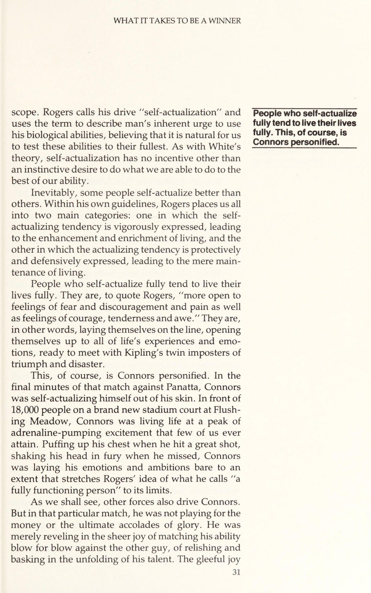
Quần Vợt Là Trò Chơi Của Cuộc Sống
Một trận đấu quần vợt là một cuộc chiến tâm lý khốc liệt. Cả hai đối thủ đều đang chiến đấu vì cái tôi của chính mình, tìm cách củng cố cảm giác về sức mạnh và tô đậm hình ảnh bản thân.
CHAPTER 1. DO YOU REALLY WANT TO WIN? TENNIS IS A GAME OF LIFE A tennis match is a violent psychological struggle. Both antagonists are fighting for their own egos, seek- ing ways to strengthen their senses of power and enhance their self-images.
Nghe có vẻ hơi quá lời? Rốt cuộc, một trận đấu quần vợt chỉ là một trò chơi. Nhưng một trò chơi khác nào đó với một cuộc thi, được chơi để giành lấy những lợi ích tâm lý nghiêm ngặt ư? Chắc chắn, nó khác biệt với những cuộc thi 'thực sự' nơi những lợi ích quan trọng hơn đang bị đe dọa — như thức ăn, nơi ở, an ninh và những thứ khác cần thiết để duy trì sự sống.
Does this sound a little overblown? After all, a tennis match is just a game. But what is a game other than a contest of sorts, played to obtain strictly psy- chological currency? Certainly, it is to be distinguished from “‘real’”’ contests where more vital interests are at stake, such as food, shelter, security and other things necessary for the preservation of life.
Thế nhưng, chớ để công việc của bạn đánh lừa. Có lẽ bạn sẽ phản đối rằng đó là vấn đề cực kỳ nghiêm trọng. Nghề ngân hàng, luật sư, nhân viên bán hàng hay người xây dựng thường được coi trọng hơn nhiều so với những trận đấu quần vợt — so với việc chơi những trò chơi ấy. Nhưng công việc cụ thể của bạn thiết yếu đến mức nào để duy trì cuộc sống? Không lắm, ở Hoa Kỳ. Chúng ta vô cùng giàu có và có đầy mong muốn, nhưng lại có rất ít nhu cầu. Nếu bạn mất việc, bạn vẫn sẽ sống sót. Dù bạn có thể cảm thấy mất mặt, chẳng giữ được vị thế cũ về mặt tâm lý hay trạng thái 'trước đây của bạn' trong cộng đồng, bạn vẫn sẽ ăn, ngủ và sống sót đầy đủ.
But, let’s take your job. You would probably not question that it is a matter of utmost seriousness. Earning a living as a banker, lawyer, auto salesman or builder is considered inconceivably more substantial than winning tennis matches—than playing “‘games.”’ But how necessary is your particular job to maintain- ing life? Not very, in the United States. We are in- credibly affluent and have many wants, but very few needs. If you lost your job, you would survive. Al- though you might feel disgraced and might not retain your former position psychologically, or your former “status” in the community, you would still eat, sleep
Với hầu hết chúng ta, trò chơi cuộc sống mà chúng ta chơi ít liên quan đến sự sinh tồn, và chúng ta dành rất nhiều công sức chỉ để xem mình có thể tích lũy được bao nhiêu của cải. Không phải vì chúng ta thực sự cần nó, mà bởi vì có được một phần chia sẻ tốt giúp nâng cao hình ảnh bản thân, tăng cảm giác an toàn và thỏa mãn nhu cầu đạt thành của chúng ta. Hơn nữa, của cải và tài sản là cách chúng ta ghi điểm trong kinh doanh. Đó là cách chúng ta biết ai là người chiến thắng.
The game we play at the office includes most of the same psychological needs as the game we play on the tennis court. and survive adequately. For most of us, the game of life we play has little to do with survival and a great deal to do with seeing how much of America’s excess wealth we can accumu- late. Not because we really need it, but because acquir- ing a good slice of the pie boosts our self-image, in- creases our feelings of security and satisfies our need for achievement.
Nói cách khác, trò chơi chúng tôi chơi ở văn phòng bao gồm hầu hết những nhu cầu tâm lý giống như trò chơi chúng tôi chơi trên sân quần vợt. Nhưng cái thì gọi là trò chơi, cái kia là công việc. Bằng cách chọn lấy cuộc sống chuyên nghiệp và công việc gắn liền với những trò chơi ấy, tôi không hề coi thường chúng; tôi chỉ đang cố gắng đặt chúng vào đúng tầm nhìn, bởi cả hai đều bắt nguồn từ những nhu cầu tâm lý cũng như thể chất của chúng ta.
Moreover, wealth and possessions are the way we keep score in business. That is how we know who is winning. In other words, the game we play at the office includes most of the same psychological needs as the game we play on the tennis court. But one is called a game, the other work. By likening our professional and working lives to games, I am not belittling them; I am merely trying to put them in perspective, for both are based on our psychological as well as material needs.
Trong khoảng thời gian từ năm 1968 đến 1975, tôi đã làm việc trong ngành đầu tư, và trong thời gian đó, tôi nhận ra sự tương đồng giữa cuộc chiến ngầm diễn ra trên sân quần vợt và cuộc chiến ít kín đáo hơn diễn ra trong một thỏa thuận kinh doanh.
Between 1968 and 1975, I worked in the invest- ment business and during that time, I became aware of the similarities that exist between the covert warfare that takes place on a tennis court and the marginally less covert attrition that takes place during a business deal.
Trong những bữa trưa martini, tôi từng nghe vô số cuộc bàn luận về nghi thức kinh doanh. Người đàn ông đang muốn bán cho tôi một thỏa thuận thường nhấn mạnh cam kết đạo đức của anh ấy với những mối quan hệ kinh doanh lâu dài; và rằng tôi sẽ có lợi hơn nếu nhượng bộ một số điểm trong ngắn hạn để củng cố các mối quan hệ ấy về lâu dài.
Over martini lunches, I used to hear a lot of talk about business etiquette. The man trying to sell me a deal usually stressed his moral commitment to long- term business relationships; and how I might be better off giving up certain points in the short term to en- hance the relationships for the long term. Although valid to an extent, this was often just so much sugar coating on the pie.
Dù có giá trị ở một mức độ nào đó, điều này thường chỉ là lớp đường phủ quá dày trên chiếc bánh. Tôi phải nhận thức được khả năng anh ấy sẽ nắm lấy miếng bánh lớn nhất có thể — ngay lúc đó và tại chỗ. Bên dưới tất cả những lời nói thân thiện, kinh doanh vô cùng khắc nghiệt, và bất cứ ai tin vào cái vỏ bọc ấy sẽ không trụ được lâu.
I had to be aware of the possibility that he was after as large a slice of the pie as he could lay his hands on—right then and there. Underneath all the friendly talk, business is extremely rough and anyone who falls for the facade doesn’t survive long. In tennis, as in all games, there is a social facade based on rules and etiquette that attempts to shield both the viewer and the competitor from the harsher
Trong quần vợt, cũng như mọi trò chơi khác, có một vỏ bọc xã hội dựa trên những quy tắc và nghi thức nhằm che chắn cả khán giả lẫn đối thủ khỏi những khía cạnh tàn khốc hơn của cuộc chiến. Nhu cầu phải giành chiến thắng với một phong thái lịch lãm được khắc sâu vào ta từ rất sớm. Nhưng bên dưới lớp veneer trắng sạch ấy, một trận đấu quần vợt có mọi tiềm năng cần thiết để trở nên khó chịu, đe dọa và thô bạo. Điều này là sự thật, bởi vì sâu thẳm, tất cả chúng ta đều muốn giành chiến thắng bất kể ta có miễn cưỡng thừa nhận điều đó với chính mình hay với người khác. Và nếu cần phải trở nên khó chịu trên sân để thắng, nhiều người sẽ trở nên khó chịu.
elements of the combat. The need to win in a nice gentlemanly fashion is instilled into us very early. But beneath that clean, white veneer, a tennis match has all the potential required to become nasty, threatening and rough. This is true because, deep down, we all want to win no matter how reluctant we are to admit it to ourselves or to others. And if it is necessary to become nasty on court in order to win, many people will get nasty.
Dù đối thủ của bạn có thể hiện thái độ dịu dàng đến đâu, bạn cũng chẳng thực sự biết anh ấy ra sao cho đến khi mọi chuyện rơi vào khủng hoảng. Có khi anh ấy khao khát giành chiến thắng đến phát điên. Đừng để bản thân bị cuốn vào nghi thức của trò chơi mà quên mất việc giành chiến thắng.
No matter what kind of genteel attitude your op- ponent may display, you don’t really know what he is like until it gets down to the crunch. He may want to win very badly. Don’t allow yourself to get so caught up in the etiquette of the game that you forget about winning.
BẠN CÓ TÍNH CẠNH TRANH? Dù may mắn hay không, chiến thắng vô cùng quan trọng trong xã hội chúng ta. Từ thời thơ ấu, khái niệm này đã được đưa vào tiềm thức qua vô số cách tinh tế. Chúng ta thường hoàn toàn không nhận ra rằng quá trình điều hòa ấy đã diễn ra và, trên thực tế, chúng ta vẫn đang truyền lại nó cho con cái và bạn bè.
ARE YOU COMPETITIVE? Fortunately or not, winning is tremendously impor- tant in our society. From earliest childhood, the con- cept is pounded into our unconscious in a multitude of subtle ways. We are often totally unaware that this conditioning has taken place and that we are, in fact, passing it onto our children and friends.
So với nhiều nơi khác trên thế giới, văn hóa Mỹ của chúng ta có định hướng mục tiêu và tính cạnh tranh, xuất phát từ bản chất hung hăng, sẵn sàng mạo hiểm của những người nhập cư, thậm chí từ thời những người thực dân đầu tiên. Theo định nghĩa, Hoa Kỳ là vùng đất của cơ hội. Nó được thành lập bởi những người muốn hoàn thiện bản thân và sẵn sàng không chỉ làm việc, mà thường còn đánh cược mọi thứ họ có, để đạt được sự đổi thay đó. Nhưng có quá nhiều người muốn có được "những điều tốt đẹp" trong cuộc sống này, và để giành phần của mình, chúng ta buộc phải cạnh tranh. Đơn giản là không có đủ nhà ở Beverly Hills để chia nhau.
More so than in many other parts of the world, our American culture is goal-orientated and competi- tive because of the aggressive, risk-taking nature of the immigrant, going back to even the earliest colo- nists. The United States is, by definition, the land of opportunity. It was founded by people who wanted to better themselves and were prepared not only to work, but often to risk everything they owned, to achieve that betterment. But there are more people than “good things” in this life and to get our share, we are forced to compete. There are simply not enough houses in Beverly Hills to go round.
Kết quả là, chúng ta đã được nuôi dưỡng trong đủ loại môi trường ghi nhận tính cạnh tranh: lớp học, trò chơi trẻ con, các cuộc thi thể thao, thậm chí cả cuộc thi sắc đẹp. Tất cả đều thấm nhuần sự thôi thúc cạnh tranh và khiến chúng ta nhận ra lợi ích của việc chung cuộc trở thành người chiến thắng. Thông thường, cha mẹ thúc đẩy chúng ta, giục giã chúng ta giành chiến thắng và đôi khi trừng phạt nếu chúng ta không làm được.
As a result, we have been raised on all manner of competitive score-keeping devices: school grades, children’s games, athletic contests, even beauty pag- eants. All instill the competitive urge and make us aware of the benefits of ending up a winner. Often, we 1S The need to win in a nice gentlemanly fashion is instilled into us very early. But beneath that clean, white veneer, a tennis match has all the potential to become nasty, threatening and rough.
Bạn có thể nói: "Cha mẹ tôi không khắt khe, họ chẳng hề mắng tôi hay ép buộc tôi nếu tôi không đạt toàn điểm A ở trường hay thắng mọi trận bóng đá." Nhưng dù bạn có cố gắng biện minh đến đâu, bố mẹ bạn hẳn sẽ hạnh phúc hơn khi thẻ báo cáo ghi chữ A thay vì chữ C. Lời khen của họ luôn nồng nhiệt hơn khi bạn thắng thay vì thua. Niềm vui của họ là có thật. Họ chẳng thể ngăn được điều đó, cũng chẳng giấu giếm nổi. Cả đồng đội hay bạn bè của bạn cũng vậy. Và bạn không thể không cảm nhận điều đó theo hàng ngàn cách và khắc nó vào tận sâu thẳm bên trong mình.
have parents who drive us on, urging us to win and sometimes punishing us if we do not. You may say, “My parents weren’t pushy. . . they didn’t scold or press me if I didn’t get all A’s in school or win all my football games. But try as they might, your parents could not help but be happier when your report card showed an A rather than a C. Their praise was always stronger when you won rather than lost. Their joy was more real. They could not help it nor hide it.
Trẻ em không ngờ nghệch đến mức không thể đọc vị giữa các dòng — bất kể ai nói gì — và hiểu rằng chúng được nhận nhiều hơn nhờ chiến thắng và sự xuất sắc, hơn là nhờ thua cuộc và tầm thường. Hơn nữa, quá trình điều hòa này không kết thúc khi tuổi thơ chấm dứt. Nó tiếp diễn suốt cả cuộc đời trưởng thành và kéo dài cho đến ngày chúng ta nhắm mắt. Đó là một lý do khiến chiến thắng quan trọng đến thế với chúng ta — một chủ đề sẽ được thảo luận kỹ trong chương sau.
Neither could your teammates or friends. And you could not help but feel it in a thousand ways and incorporate it into your deepest fiber. Children are not so dense that they cannot read between the lines—no matter what anyone says—and understand that they get more for winning and excel- lence than they do for losing and mediocrity. More- over, this conditioning process does not end with childhood. It continues throughout our adult lives and lasts until the day we die.
Xây Dựng Phòng Tuyến Trước Thất Bại
Người bình thường sớm phát hiện ra rằng anh ấy không thể thắng thường xuyên như mình muốn. Hầu hết mọi người đều cam chịu thua cuộc thường xuyên, bởi luôn có nhiều đối thủ cạnh tranh hơn người chiến thắng. Vì nhu cầu chiến thắng mạnh mẽ, nên nỗi đau mất mát cũng thế. Làm sao người bình thường đối phó với nỗi đau thất bại triền miên? Anh ấy dùng đến các cơ chế phòng thủ. Trong tâm trí lý trí, anh ấy đổi mục tiêu và tự thuyết phục mình rằng chiến thắng không phải là mục đích của anh ấy.
This is one reason why winning is so important to us—a subject we will dis- cuss in detail in the following chapter. BUILDING DEFENSES AGAINST LOSING The average person soon discovers that he cannot win as often as he would like. Most people are doomed to lose often, because there are always more competitors than winners. Since the need to win is powerful, so also is the pain of loss. How then does the average person cope with the constant pain of loss? He em- ploys defense mechanisms.
Sigmund Freud, người khởi nguồn khái niệm này, nói rằng bản ngã của chúng ta (hoặc một phần tâm lý của chúng ta bắt nguồn từ lòng tự trọng) phải được bảo vệ khỏi những suy nghĩ và thực tế có thể quá đau đớn để chúng ta chấp nhận và đối phó với. Có nhiều loại cơ chế phòng thủ, nhưng tất cả chúng đều phục vụ cùng một mục đích — bảo vệ bản ngã. Và tất cả họ đều sử dụng cùng một phương tiện — tự ảo tưởng và bóp méo hiện thực. Sợ sự bất cập là người bạn đồng hành không ngừng trong cuộc sống của chúng ta, cũng như suy nghĩ dai dẳng rằng chúng ta có thể không thể hoàn thành các mục tiêu chúng ta đã đặt ra cho chính mình.
In his conscious mind, he changes goals and convinces himself that winning is not his objective. Sigmund Freud, who originated the concept, said that our egos (or that part of our psyches from which self-esteem is derived) must be protected from thoughts and realities that may be too painful for us to accept and deal with. There are many types of defense mechanisms, but they all serve the same purpose— the protection of the ego. And they all employ the Same means—self-delusion and distortion of reality.
Trên sân quần vợt, thực tế là chúng ta khao khát giành chiến thắng nhưng không thể thừa nhận điều đó với chính mình. Bản ngã đang bị đe dọa và chúng ta vội vã dựng lên những rào cản để bảo vệ nó. Bằng cách dùng các cơ chế đàn áp và hợp lý hóa, ta có thể che chở cho bản ngã khỏi những sự thật không phù hợp với cảm giác tự trọng. Ta ép chúng ra khỏi tâm trí có ý thức và thay bằng một màn khói của những lựa chọn thay thế có vẻ hợp lý. Người chơi phòng thủ thường che giấu khao khát chiến thắng bằng cách hợp lý hóa — hay giải thích — rằng, chẳng hạn, chiến thắng chẳng quan trọng bằng lối chơi đẹp, tập luyện, tình bạn hay chỉ làm một người tử tế. Họ không chỉ nói điều đó để giữ thể diện trước các thành viên câu lạc bộ; họ thực sự tin vào nó — bởi họ buộc phải làm thế.
Fear of inadequacy is a constant companion in our lives, as is the nagging thought that we may be unable to accomplish the goals we have set for ourselves. On the tennis court, the fact that we very much want to win but are unable to may be shameful to us. The ego is at stake and we hurriedly build barriers to protect it. By using the defense mechanisms of re- pression and rationalization, we can shield our egos from facts which are incompatible with our feelings of self-esteem. We force them out of our conscious minds and replace them with a smoke screen of seemingly reasonable alternatives. Defensive players often cloak their desires to win by rationalizing, or explaining away, for example, that winning is less important than good sportsmanship, exercise, comraderie or just a good suntan. They are not simply saying this for the benefit of members of the club; they believe it—be- cause they have to. Defensive players don’t compete with the vigor of real winners.
Những người chơi phòng thủ không thể cạnh tranh với sức mạnh của những người chiến thắng thực sự. Họ cũng không tin họ muốn. Giống như một con vật có thể được điều hòa để tránh vượt qua lưới điện bằng điện giật, do đó một người có thể được điều hòa để ngừng cạnh tranh bởi nỗi đau mất mát.
Nor do they believe they want to. Just as an animal can be conditioned to avoid crossing a grid by electric shock, so can a person be conditioned to stop competing by the pain of loss. For example, I have noticed my own defense mechanisms growing as my physical powers falter as I get older.
Ví dụ, tôi đã nhận thấy các cơ chế phòng thủ của riêng mình đang phát triển khi sức mạnh thể chất của tôi chùn bước khi tôi già đi. Khi tôi ở độ tuổi 20 ’, tôi đã thi đấu đầy đủ mỗi khi tôi bước ra tòa. Tôi sẽ đẩy chân ga xuống sàn và điều gì đó sẽ luôn xảy ra. Tôi đã liên tục thử nghiệm bản thân. Điều này thật thú vị, mặc dù có nhiều thất vọng, vì tôi thường thắng. Bây giờ, vào cuối 30 ’ của tôi, tôi thấy mình không thể đáp ứng với máy gia tốc. Tôi đẩy nó xuống sàn và thường không có gì xảy ra. Tôi thấy mình ngày càng không muốn cạnh tranh 100 phần trăm. Nếu tôi bắt đầu mệt mỏi, tôi tự hỏi, “Tại sao tôi phải tự sát?”Nếu tôi chia đôi set với đối thủ của mình, tôi thường sẵn sàng bỏ cuộc và gọi đó là một trận hòa. Trước đây, tôi thường luôn nhấn mạnh để đưa ra quyết định.
When I was in my 20’s, I competed fully every time I walked out on court. I would push the accelerator to the floor and something would always happen. I was constantly testing myself. This was enjoyable, despite many disappointments, because | usually won. Now, in my late 30’s, I find myself physi- cally unable to respond to the accelerator. I push it to the floor and often nothing happens. I have found myself more and more unwilling to compete 100 per- cent. If I start to get tired I wonder, “Why should [ kill myself? If I split sets with my opponent, I’m often quite willing to quit and call it a draw. Before, I used to invariably press for a decision. The ability to maintain his competitive edge and hunger for victory after years of play on the tourna- On the tennis court, the fact that we very much want to win but are unable to may be shameful to us.
Khả năng duy trì lợi thế cạnh tranh và khao khát chiến thắng sau nhiều năm thi đấu trên hệ thống giải đấu có lẽ là khía cạnh đáng kinh ngạc nhất trong sự nghiệp dường như vô tận của Ken Rosewall. Tất nhiên, anh ấy cũng là một kỳ quan về thể lực ở tuổi ngoài 40, đủ sức trụ vững qua những trận đấu dài trước các tay vợt trẻ và khỏe hơn. Nhưng với tôi, điều đó chẳng đáng chú ý bằng mong muốn cạnh tranh không ngừng của anh ấy và sự sẵn sàng đối mặt với những thất bại cay đắng ngày càng nhiều.
When a player gets a bad call, all it costs him is one point. it is his reaction to it that can cost him the match. ment circuit is possibly the most amazing aspect of Ken Rosewall’s seemingly interminable career at the top. Of course, he is also something of a physical phenomenon in his mid-40’s to be able to last through long matches against powerful, young players. But that, in my opinion, is not so remarkable as his unceas- ing desire to compete and the willingness to expose himself to an increasing number of painful losses.
Đưa ra lý do. Đại đa số chúng ta không thể đối mặt với nỗi đau mà Rosewall phải chấp nhận thường xuyên và tự nguyện như thế. Để bảo vệ mình, chúng ta dựng lên nhiều bức tường phòng thủ khác nhau về kích thước và hình thái. Một trong những kiểu phổ biến nhất là tìm cớ, một dạng hợp lý hóa.
Making excuses. The vast majority of us cannot face the kind of pain Rosewall faces on a routine, voluntary basis. To protect ourselves, we erect numer- ous defensive walls that vary in size and texture. One of the most common is excuse-making, a type of ra- tionalizing.
"Trời quá gió." "Đèn tệ quá, tôi chẳng thể nhìn thấy bóng." "Sân trơn quá, tôi đứng không vững." "Anh ta đã bắt lỗi tôi, và nếu anh ta muốn trận đấu tệ đến thế thì cứ việc để anh ta có nó."
“It’s too windy. “The lights are so bad, I can’t see the ball. “The court is so slippery, I can’t stand up. “He gave me a bad call and if he wants the match that bad, let him have it. “My arm hurts.
"Cánh tay tôi đau." Đó chỉ là vài ví dụ điển hình; chúng ta đều đã nghe nhiều hơn thế nữa. Thường thì mỗi lý do cũng có chút cơ sở, nhưng sự bất an sẽ phóng đại từng yếu tố tiêu cực vượt quá mọi tỷ lệ. Tiêu chí để biết liệu hành vi phòng thủ có đang xảy ra hay không chính là xem hành vi ấy có thực sự chân thật đến mức nào, chứ không phải cái cớ có hợp lý hay không. Khi một người chơi nhận một pha bắt lỗi bất lợi, tất cả những gì anh ấy mất chỉ là một điểm. Chính phản ứng của anh ấy mới có thể khiến anh ấy phải trả giá đắt.
These are typical examples. We have all heard plenty more. There is usually some validity to all of them, but insecurity magnifies each negative factor out of all proportion. The test for whether defensive behavior is occurring is how realistic and practical the behavior is overall, not whether the excuse itself has some validity. When a player gets a bad call, all it costs him is one point. It is his reaction to it that can cost him the match. Why should any rational person throw a match because he is angry over one bad call?
Tại sao bất kỳ người tỉnh táo nào lại hủy hoại trận đấu của mình chỉ vì tức giận với một pha bắt lỗi? Chắc chắn, liệu pháp hợp lý hơn là dốc thêm nỗ lực để thắng và dạy cho gã lừa đảo kia một bài học. Nhưng anh ấy hủy hoại trận đấu vì anh ấy thiếu tự tin và sợ rằng, dù có gấp đôi nỗ lực, anh ấy vẫn có thể thua. Điều đó quá đau đớn để chấp nhận, nên anh ấy giấu kín sự thật ấy khỏi chính mình và rút khỏi toàn bộ tình huống.
Surely, it would be more reasonable to increase his efforts to win to teach the cheater a lesson. But he blows the match because he is insecure and fears that even if he re- doubles his efforts, he might still lose. That would be too painful to accept, so he hides this knowledge from himself and backs off from the whole situation. I exhibited a nasty illustration of defensive excuse-making one year at the U.S. Championships at
Tôi có một ví dụ điển hình khó xử về việc tìm cớ phòng thủ tại Giải vô địch Hoa Kỳ ở Forest Hills một năm nọ. Tôi lọt vào vòng 16 và dự kiến gặp Whitney Reed — một tay vợt khó chịu dù không thuộc hàng xuất chúng, người vừa đánh bại Chuck McKinley, tay vợt số 1 nước Mỹ, ở vòng trước. Nếu thắng Whitney, tôi sẽ gặp Rafael Osuna, người mà năm đó tôi đã thắng nhiều lần. Đó là một cơ hội tuyệt vời để lọt vào bán kết.
Forest Hills. I had reached the round of 16 and was scheduled to play Whitney Reed, a tough, but not great, player who had upset Chuck McKinley, the No. 1 American, in the previous round. If I beat Whitney, I would have been scheduled to play Rafael Osuna, whom I had defeated several times that year. It was a wonderful chance to reach the semifinal.
Nhưng tôi đã thi đấu giải đấu mỗi tuần suốt năm tháng trời và thần kinh tôi bắt đầu rã rời. Áp lực đang dồn lên. Dù lúc đó tôi chẳng nhận ra, tôi đã không thể chịu đựng nổi nó.
But I had been playing tournaments every week for five months and my nerves were starting to fray. The pressure was building. Although I didn’t know it at the time, I couldn’t take it.
Đêm trước trận đấu, vợ tôi, Carol, và tôi đã cãi nhau dữ dội (chủ đề ấy giờ tôi không còn nhớ nữa). Vẫn còn sôi sục, tôi bước ra sân vào ngày hôm sau trong một tâm thế rối ren. Tôi thua một set đầu tiên sát nút trước Sậy, nhưng những suy nghĩ về Carol cứ lướt qua đầu khiến tôi buồn bã. Sang set thứ hai, tôi đánh những quả bóng mạnh nhất có thể để dạy cho Carol một bài học. Hậu quả của cuộc tranh cãi, tôi nghĩ, đã phá hỏng sự tập trung và lấp đầy đầu tôi bằng những lý lẽ phi lý. "Con chó cái," tôi tự nhủ, "đã bắt tôi phải trả giá ở Forest Hills," và tôi tiếp tục cắt bóng.
The night before the match, my wife, Carol, and I got into a huge argument (the subject of which escapes me now). Still seething, I went on court the next day in a troubled frame of mind. I lost a close first set to Reed, but thoughts of how Carol had upset me kept flitting through my head. By the second set, I was furiously hitting balls as hard as I could to teach Carol a lesson. The legacy of our argument, I thought, had ruined my concentration and filled my mind with absurd logic. “The bitch,” I said to myself, “has cost me Forest Hills,’ and I continued to take wild cuts at the ball.
Tất nhiên, tôi đã thua, nhưng phải mất một thời gian dài tôi mới nhận ra rằng sự bất lực của mình trong việc tự xử lý áp lực mới là nguyên nhân thực sự cho kết quả tồi tệ ấy. Carol chỉ đơn giản là mục tiêu tiện tay nhất. Chúng tôi có cãi nhau, nhưng tôi đã chọn thổi phồng nó thành một vấn đề lớn lao, và cuối cùng đã phá hỏng mọi cơ hội chiến thắng trận đấu của mình.
Of course, I lost, but it took me a long time to realize that my own inability to handle the pressure was the real reason for my petulance. Carol was sim- ply the nearest convenient target. We did have an argument, but I chose to build it into the massive trauma that eventually wrecked any chance I had of winning the match.
Không tài nào kết thúc nổi một trận đấu. Eddie Edwards, một tay vợt Mỹ là ngôi sao của đội Đại học Pepperdine mùa 1978-79, từng trở thành nạn nhân của một dạng phòng thủ phổ biến. Anh ấy từng gặp rất nhiều khó khăn trong việc chốt hạ các trận đấu sau khi thắng set đầu và tạo được lợi thế dẫn trước ở set thứ hai.
The inability to finish off a match. Eddie Ed- wards, an All-American and the top player on the Pepperdine University team in 1978-79, used to fall prey to a common variation of defensiveness. He used to have tremendous difficulty in finishing off matches after he had won the first set and had established a commanding lead in the second.
Lần đầu tiên anh ấy đánh mất một lợi thế dẫn trước lớn kể từ khi tôi bắt đầu huấn luyện, tôi đã đối mặt với anh ấy khi anh ấy vừa bước xuống sân và hỏi: "Chuyện gì đã xảy ra thế?"
The first time he frittered away a big lead after I began coaching, I confronted him when he came off court and said, ‘‘What happened?”
“Tôi vừa nhận được sự tự tin thái quá,”anh ấy trả lời. “Tôi nghĩ rằng tôi đã có trận đấu trong túi nên tôi thư giãn và ngừng tập trung.”
Winning the last few points against a tough opponent is often a tense and unpleasant task. And, as with most nasty jobs, people tend to avoid them as long as possible.
Tôi nhìn anh ta một giây và nói, “Đó không phải là những gì đã xảy ra. Trên thực tế, bạn chỉ không muốn bắt tay vào công việc bẩn thỉu để kết thúc trận đấu.”
“I just got overconfident,” he replied. “I thought I had the match in the bag so I relaxed and stopped concentrating. I looked at him for a second and said, ‘“That’s not what happened at all.
Khi một trận đấu gần kết thúc, áp lực càng tăng. Giành vài điểm cuối cùng trước một đối thủ khó nhằn thường là một nhiệm vụ căng thẳng và khó chịu. Và, như với hầu hết công việc khó chịu, người ta có xu hướng trì hoãn chúng lâu nhất có thể. Đó là trường hợp của Eddie. Sự bất an của anh ấy, cộng với mong muốn tránh đối mặt với áp lực, khiến anh ấy tự thuyết phục rằng mình còn nhiều thời gian. Một khi đã tin thế, anh ấy có thể thở phào và thư giãn thay vì xắn tay vào việc. Tôi sẽ giải thích điều này kỹ hơn ở Chương 6.
In fact, you just didn’t want to get down to the dirty business of finishing off the match. As a match nears its end, the pressure mounts. Winning the last few points against a tough opponent is often a tense and unpleasant task. And, as with most nasty jobs, people tend to avoid them as long as possible. That was the case with Eddie. His insecurity, coupled with the desire to put off facing the pressure, made him convince himself he had plenty of leeway. Once convinced, he could take a breather and relax instead of getting down to business.
Quan trọng nhất, hình ảnh bản thân tốt đẹp của anh ấy vẫn được giữ nguyên. Chẳng có gì đáng thất vọng khi bạn quá tự tin. Một số người chơi gần như tự hào về điều đó, và trong phòng thay đồ sau trận, họ kể lại làm sao họ đã có thể đánh bại gã kia theo hàng tá cách khác nhau, nhưng rồi lại chán nản bỏ cuộc. Nói chung, sự mất tập trung dường như cho thấy bạn hoàn toàn có thể thắng nếu chỉ chịu tập trung. Nhưng việc không tài nào kết liễu nổi đối thủ khi đã hạ gục anh ta lại là chuyện khác. Điều đó bị coi là một sự sỉ nhục, và chẳng ai thích đối mặt với nó.
I'll explain this in more detail in Chapter 6. Most important, his good self-image could be maintained. It is no disgrace to lose because you are overconfident. Some players almost boast about it, recounting in the locker room afterward how they could have beaten the guy a dozen different ways but just got bored with it all. After all, loss of concentration seems to indicate that you could have won had you just chosen to concentrate. But being unable to finish off your opponent when you have him down is some- thing else. That is considered a disgrace and no one likes to face it.
Bởi Edwards từng vướng rắc rối theo cách này nhiều lần trong quá khứ, và bởi anh ấy biết về mặt lý trí rằng đối thủ hoàn toàn có khả năng lật ngược tình thế, rõ ràng là một dạng tự ảo tưởng đang hoạt động. Anh ấy đã tự thuyết phục rằng đó chỉ là sự tự tin thái quá và thiếu tập trung. Nhưng một khi những chiếc mặt nạ cũ bị lột bỏ, những vấn đề thực sự — bất an và sợ hãi — tự nó sẽ được giải quyết.
Since Edwards had gotten into trouble many times this way in the past and since he knew, logically, that his opponent was quite capable of coming back, it was clear that some type of self-delusion was operat- ing. He had convinced himself that it was overconfi- dence and lack of concentration. But once those old masks were stripped away, the real problems—inse- curity and fear—revealed themselves. Mental distractions.
SAO NHÃNG TÂM LÝ. Có nhiều kiểu phòng thủ khác cũng liên quan đến sự tập trung. Năm 1966, tôi đang lưu diễn ở Úc cùng Charlie Pasarell, người được xếp hạng số 1 tại Hoa Kỳ vào năm sau đó. Anh ấy lọt vào tứ kết ở Adelaide và gặp Barry Phillips-Moore, một chuyên gia sân đất nện — điều hiếm thấy ở các tay vợt Úc. May cho Pasarell, họ thi đấu trên sân cỏ, hoàn toàn phù hợp với lối chơi giao bóng và vô-lê lớn của anh ấy. Thế nhưng, ngay cả ở những năm đỉnh cao, Pasarell vẫn gặp vấn đề — anh ấy đã nghĩ quá nhiều.
There are other varieties of defensiveness which also involve concentration. In 1966, I was on tour in Australia with Charlie Pasarell, who was ranked No. 1 in the United States the follow- ing year. He had reached the quarterfinals in Adelaide and was playing Barry Phillips-Moore who was a clay- court specialist—something of a rarity among Austra- lian players. Fortunately for Pasarell, they were play- ing on grass which suited his big serve-and-volley game perfectly. However, even during his years at the top, Pasarell had a problem—he thought too much.
Với Pasarell không có phong độ ổn định, trận đấu biến thành một cuộc marathon và anh ấy thấy mình phải giao bóng để cứu trận đấu khi tỷ số đang là 5-6 ở set thứ năm. Tại tỷ số 15-30, anh ấy tung một cú giao bóng mạnh bạo và lao lên lưới theo bóng. Pha trả giao bóng lỏng lẻo của đối phương mở ra cơ hội cho cú vô-lê lớn — cú đánh sở trường của anh ấy.
With Pasarell misfiring frequently, the match turned into a marathon and he found himself serving to save it at5—6 in the fifth set. At 15-30, he thumped in a big serve and followed it to the net. The return floated invitingly to his big forehand volley, his favor- ite shot. Later, Pasarell told me that just as he was about to hit the volley, a perverse thought crossed his mind, “What if I miss this?
Sau đó, Pasarell kể với tôi rằng khi chuẩn bị tung cú vô-lê, một ý nghĩ tiêu cực vụt qua đầu anh ấy: "Nếu mình bỏ lỡ quả này thì sao?" Chỉ thế là đủ. Cú vô-lê dính lưới, và Phillips-Moore tung cú trả bóng tiếp theo ghi điểm winner, kết thúc trận đấu.
That’s all it took. The volley smacked into the net, Phillips-Moore hit the next re- turn for a winner and the match was over. Pasarell had no business allowing errant thoughts to creep into his mind during vital moments of play. It was total lack of discipline on his part.
Pasarell không đời nào nên để những suy nghĩ sai lầm len lỏi vào đầu trong những khoảnh khắc then chốt của trận đấu. Đó là sự thiếu kỷ luật hoàn toàn từ phía anh ấy. Ở giai đoạn này của một trận đấu, đặc biệt, tâm trí phải thật sự thanh thản. Nhưng trước viễn cảnh đáng sợ là thua một tay vợt kém hơn — và lại còn là một chuyên gia sân đất nện — cơ chế phòng thủ của Pasarell đã bị kích hoạt.
At this stage ofa match, in particular, the mind must remain clear. But with the frightful prospect of losing to a lesser player —and a clay-court specialist at that—Pasarell’s defense mechanisms were triggered. The prospect was too much for him and he found an out: lack of concentration. By allowing his concentration to lapse—in fact, almost willing it to lapse—Pasarell had set the stage for a mental escape.
Bằng cách để sự tập trung suy giảm — trên thực tế, gần như sẵn sàng cho nó mất đi — Pasarell đã tạo tiền đề cho một lối thoát tinh thần. Anh ấy gạt tâm trí và nỗ lực có ý thức của mình ra khỏi một tình huống ngày càng căng thẳng. Anh ấy từ chối chấp nhận rủi ro có thể bị Phillips-Moore đánh bại. Sau đó, sự thiếu tập trung cung cấp một cái cớ hữu hiệu cho thất bại. Trên thực tế, đó là một cái cớ có thật, nhưng chỉ vì chính anh ấy đã vô thức tạo ra nó.
He removed his mind and con- scious efforts from a situation that was becoming in- creasingly stressful. He refused to take the risk that he could be beaten heads up by Phillips-Moore. After- ward, lack of concentration provided a handy excuse for the loss. In fact, it was a real excuse, but only because he had unconsciously manufactured it. It is not always easy to see through the masquer- ade of human behavior. Defensive thinking is so insid- ious that the masks fit snugly onto our illusions, mak-
Không phải lúc nào cũng dễ dàng nhìn thấu được sự ngụy trang trong hành vi con người. Những suy nghĩ phòng thủ quỷ quyệt đến mức những chiếc mặt nạ khớp hoàn hảo với ảo ảnh của ta, khiến cả bộ trang phục có vẻ hợp lý. Thật dễ dàng, và cũng thật đáng tin, khi đổ lỗi cho ánh sáng khi bạn chẳng thể nhìn rõ bóng, hay cho người vợ khi cô ấy cãi vã với bạn, hay đổ cho sự thiếu tập trung thay vì nỗi sợ thua cuộc. Nhưng đơn giản là nó không phải là thực tế.
Real competition requires intense and prolonged concentration. If you blot out a substantial portion of your drive, you will lose much of your competitive effectiveness. ing the whole costume seem eminently plausible. It is so easy and really quite believable to blame the lights when you can’t see well, or your wife when she argues with you, or to substitute lack of concentration for fear of losing. But it is simply not reality.
Cơ chế phòng thủ càng lớn, ý chí chiến thắng của bạn càng bị che khuất. Nó biến thành một thứ khác, chẳng hạn như mong muốn trở thành một tay vợt có phong cách đẹp, hay được tập luyện, hay chỉ thấy sướng khi đánh bóng. Dù thế nào, nó không còn phục vụ bạn trong các trận đấu quần vợt. Nó đã mất đi. Cạnh tranh thực sự đòi hỏi sự tập trung cao độ và bền bỉ. Nếu bạn gạt bỏ một phần đáng kể động lực của mình, bạn sẽ mất đi phần lớn hiệu quả cạnh tranh.
The greater the defensiveness, the more your will to win is obscured. It becomes something different, such as the desire to be a good sport, or to get some exercise, or to feel good hitting the ball. In any case, it is of no further use to you in winning tennis matches. It is lost. Real competition requires intense and pro- longed concentration. If you blot out a substantial portion of your drive, you will lose much of your competitive effectiveness.
Chấp Nhận Rằng Bạn Thực Sự Muốn Chiến Thắng
Bởi nhu cầu đạt được và giành chiến thắng ăn sâu vào ta đến mức cơ bản như thế, việc phủ nhận sự tồn tại của chúng, đưa ra lời bào chữa, và dựng thêm các cơ chế phòng thủ chống lại chúng có thể gây ra nhiều hệ lụy hơn là giải quyết. Giả vờ và tự thuyết phục mình rằng bạn không muốn giành chiến thắng chỉ đơn giản là phủ nhận một thực tế hiển nhiên trong xã hội chúng ta. Bạn muốn thắng. Bạn đang tự trêu ghẹo và tự lừa dối bản thân nếu không nhận ra điều đó.
ACCEPT THAT YOU DO WANT TO WIN Because our needs to achieve and win are present in us at such a basic level, denying their existence, making excuses. and setting up other defense mechanisms against them can cause more problems than they solve. Claiming and consciously believing that you do not want to win is simply denying a reality that exists in our society. You do want to win. You are kidding yourself and cheating yourself if you do not realize it.
Khi bạn từ chối nhu cầu chiến thắng của mình, bạn biến mình thành một đối thủ cạnh tranh kém và cuối cùng khiến bản thân thua cuộc. Khi đó là 5 — tất cả trong tập thứ ba và cả hai người chơi đều mệt mỏi và khát nước, người có nhiều khả năng chiến thắng. . . người chơi tin rằng anh ta đang chơi để tập thể dục hoặc người chơi công khai thừa nhận rằng anh ta muốn giành chiến thắng và biết anh ta sẽ không hạnh phúc nếu thua?
When you deny your need to win, you make yourself a poor competitor and ultimately cause your- self to lose. When it is 5—all in the third set and both players are tired and thirsty, who is more likely to win . . . the player who believes he is playing for exercise or the player who openly acknowledges that he wants to win and knows he will be unhappy if he loses? The tournament player, even if he is not a profes- sional, openly and full-bloodedly competes.
Người chơi giải đấu, ngay cả khi anh ta không phải là một người chuyên nghiệp, công khai và cạnh tranh toàn diện. Anh ta sở hữu những đặc điểm nhất định mà chúng tôi sẽ thảo luận trong hai chương tiếp theo khiến anh ta trở thành một đối thủ cạnh tranh lành mạnh. Cơ chế phòng thủ của anh ta không tăng; nếu anh thua anh thì khổ. Cuối cùng, anh học cách xử lý việc này; Nhưng ngay sau khi mất, anh vẫn đau. Mặt khác, người chơi trung bình có thể cảm thấy hạnh phúc như nhau — thắng hoặc thua. Anh ấy đã tự bảo vệ mình. Một cách tốt để kiểm tra sức mạnh của các cơ chế phòng thủ của riêng bạn là lưu ý phản ứng của bạn với sự mất mát. . . nếu bạn cảm thấy không đau đớn hay thất vọng, cơ chế phòng thủ của bạn đã hoạt động. . . nếu bạn có đầy đủ và công khai thi đấu, bạn sẽ cảm thấy đau sau khi thua cuộc.
He pos- sesses certain traits which we'll discuss in the next two chapters that make him a healthy competitor. His de- fense mechanisms are not up; if he loses he is miser- able. Eventually, he learns to handle this; but immedi- ately after the loss, he still hurts. The average player, on the other hand, may feel equally happy—win or lose. He has protected himself. A good way to test the strength of your own defense mechanisms is to note your reactions to a loss . . . if you feel no pain or disappointment, your defense mechanisms have been active. . . if you have fully and openly competed, you wiil feel pain after losing. The player whose defense mechanisms are pow- erful lives in a gray, paradoxical world. He feels nei- ther great pain from loss nor great pleasure from victo- ry. His inability to compete fully causes him to lose often and the losses, in turn, increase and reinforce the strength of his defense mechanisms.
Người chơi có cơ chế phòng thủ mạnh mẽ sống trong một thế giới nghịch lý, màu xám. Anh ấy không cảm thấy đau đớn vì mất mát cũng như niềm vui lớn từ chiến thắng. Việc anh ta không thể cạnh tranh hoàn toàn khiến anh ta thua thường xuyên và tổn thất, đến lượt nó, tăng lên và củng cố sức mạnh của các cơ chế phòng thủ của anh ta. Anh ta cảm thấy mơ hồ không thoải mái với tâm lý “kẻ thua cuộc”của mình, nhưng anh ta không biết làm thế nào để đảo ngược nó. Anh ta thậm chí có thể sợ nhìn quá sâu vào chủ đề này vì sợ anh ta làm phiền cả đời phòng thủ được xây dựng cẩn thận và buộc phải đối mặt với sự thật trần trụi. . . rằng anh ta muốn giành chiến thắng nhưng có thể không thể làm như vậy.
He feels vaguely uncomfortable with his “loser’’ psychology, but he does not know how to go about reversing it. He may even be afraid to look too deeply into this subject lest he disturb a lifetime of carefully constructed defenses and be forced to face the naked truth. . . that he wants to win but may be unable to do so. Iam not saying that you must compete with blind ferocity in every match or in all competitive situations. That would be excessive and exhausting. Rather, it is important that you acknowledge and understand your own competitive drives and the forces that keep them in check. Decide what your goals and desires really are; understand and confront your fears.
Tôi không nói rằng bạn phải cạnh tranh với sự hung hăng mù quáng trong mọi trận đấu hay mọi tình huống. Điều đó sẽ quá mức và mệt mỏi. Thay vào đó, điều quan trọng là bạn phải thừa nhận và hiểu những động lực cạnh tranh của riêng mình cùng các lực kéo giữ chúng trong tầm kiểm soát. Hãy quyết định mục tiêu và khao khát thực sự của bạn là gì; hãy hiểu và đối mặt với nỗi sợ của mình. Chỉ với sự thấu hiểu ấy, bạn mới nắm quyền kiểm soát bản thân và thái độ tinh thần. Thiếu nó, bạn phải phó mặc cho sự lên xuống của những lực lượng bên ngoài. Vì vậy, hãy tháo bỏ mặt nạ và ghi nhớ lời khôn ngoan của Shakespeare, qua Cassius: "Lỗi, hỡi Brutus yêu quý, không phải ở các vì sao của chúng ta, mà ở chính chúng ta, chúng ta mới là những kẻ hèn nhát."
For only with this understanding will you have control over yourself and your mental attitudes. Without it, you are subject to the ebbs and flows of outside forces. So strip away the mask and remember the wisdom of Shakespeare’s Cassius when he said, “The fault, dear Brutus, is not in our stars But in ourselves, that we are underlings.” CHAPTER 2. WHAT IT TAKES TO BE A WINNER Few athletes have put their hunger for success and their single-minded drive for victory on the line as brazenly and as consistently as Jimmy Connors. He wants to be a winner, and he wants the world to know it. At a very early age, Connors learned how to win. Learning how to lose took him a great deal longer. Despite deep insecurities in his makeup, on court Connors exudes confidence.
Brutus thân yêu, không phải ở các ngôi sao của chúng ta Nhưng trong chính chúng ta, chúng ta là thuộc hạ.”
And by the very style of his game, he epitomizes drive. Confidence and drive—these are the factors that make Connors a winner.
Phần III: Những Gì Tạo Nên Nhà Vô Địch
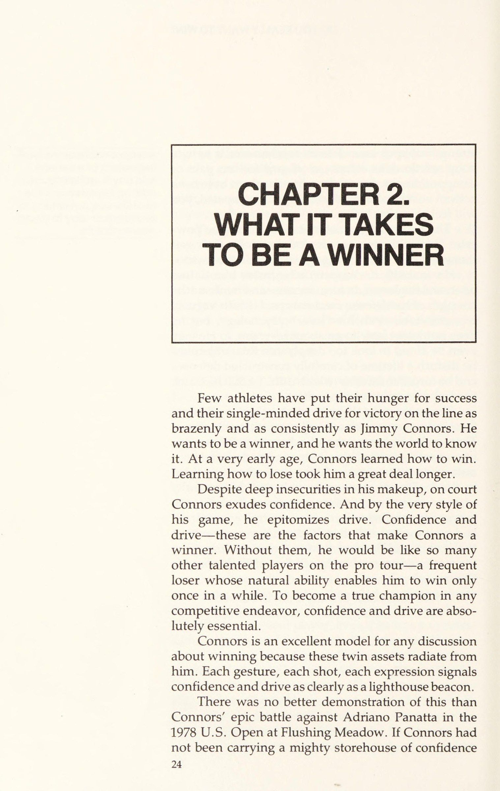
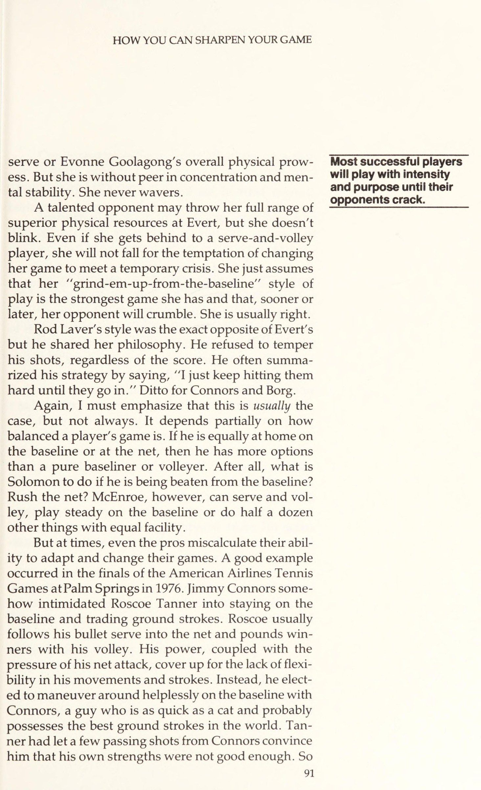
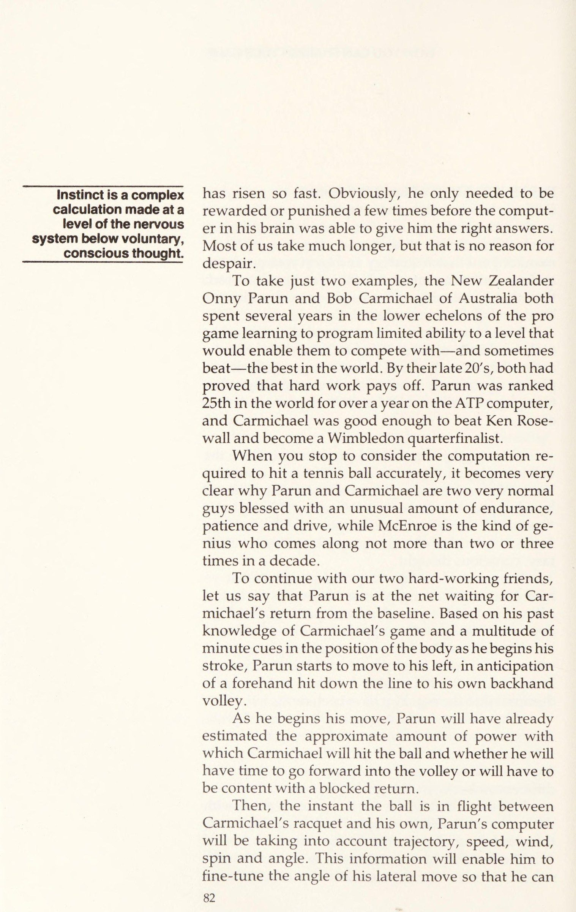
Rất ít vận động viên từng khao khát thành công và theo đuổi chiến thắng trên hệ thống giải đấu một cách công khai và kiên định như Jimmy Connors.
Without them, he would be like so many other talented players on the pro tour—a frequent loser whose natural ability enables him to win only once in a while.
Dù có sự bất an sâu sắc trong bản chất của mình, trên sân Connors vẫn toát lên sự tự tin. Và qua phong cách thi đấu, anh ấy là hiện thân của động lực. Tự tin và động lực — đó là những yếu tố làm nên chiến thắng cho Connors. Thiếu chúng, anh ấy sẽ giống như vô số tay vợt tài năng khác trong hệ thống thi đấu chuyên nghiệp — kẻ thua cuộc triền miên mà năng khiếu tự nhiên chỉ cho phép thắng thỉnh thoảng một lần. Để trở thành một nhà vô địch thực sự trong bất kỳ nỗ lực cạnh tranh nào, tự tin và động lực là điều kiện hoàn toàn cần thiết.
To become a true champion in any competitive endeavor, confidence and drive are abso- lutely essential. Connors is an excellent model for any discussion about winning because these twin assets radiate from him. Each gesture, each shot, each expression signals confidence and drive as clearly as a lighthouse beacon. There was no better demonstration of this than Connors’ epic battle against Adriano Panatta in the 1978 U.S. Open at Flushing Meadow. If Connors had not been carrying a mighty storehouse of confidence
Connors là một mô hình tuyệt vời cho bất kỳ cuộc thảo luận nào về chiến thắng vì những tài sản sinh đôi này tỏa ra từ anh ta. Mỗi cử chỉ, mỗi phát bắn, mỗi biểu thức báo hiệu sự tự tin và động lực rõ ràng như đèn hiệu ngọn hải đăng.
and drive, he would have lost that match. It was not simply that Panatta, a powerful and talented player, was playing well, but that whenever Connors thought he had finally got the match under control, the Italian tore the initiative out of his hands.
Không có minh chứng nào thuyết phục hơn thế ngoài trận chiến hoành tráng của Connors trước Adriano Panatta tại Giải Mở rộng Hoa Kỳ 1978 ở Flushing Meadows. Nếu Connors không mang theo một kho tự tin và động lực hùng mạnh, anh ấy đã thua trận đó. Không chỉ Panatta — một tay vợt mạnh mẽ và tài năng — đã chơi hay, mà bất cứ khi nào Connors tưởng mình đã kiểm soát được trận đấu, gã Ý lại giành lại thế chủ động.
Connors had weathered an amazing opening burst when Panatta had seemed virtually invincible and had fought back to lead by two sets to one. By winning the third set 6—1, Connors had established the kind of dominance that usually brings him a quick and decisive victory. But Panatta charged back to take the fourth set, also by 6-1, and break for a 3-1 lead in the fifth.
Connors đã vượt qua một đợt tấn công mở màn tuyệt vời khi Panatta dường như bất khả chiến bại, và đã chiến đấu để vươn lên dẫn trước với tỷ số hai set một. Bằng cách thắng set ba 6-1, Connors thiết lập kiểu thống trị thường mang lại cho anh ấy một chiến thắng chớp nhoáng và dứt khoát.
Again Connors weathered that onslaught to break Panatta in the sixth game to level at 3-3. But no sooner had he got the match back on an even keel than Panatta snatched his serve away to love in the very next game. For most players, that would have been the final psychological crusher.
Nhưng Panatta trở lại và thắng set thứ tư cũng với tỷ số 6-1, rồi vươn lên dẫn 3-1 ở set năm. Một lần nữa Connors vượt qua cú tấn công dữ dội để bẻ giao bóng của Panatta ở game thứ sáu, san bằng 3-3. Thế nhưng chẳng mấy chốc anh ấy lại để mất thế trận, ngay cả khi Panatta chớp lấy cú giao bóng của mình để thắng game tiếp theo với tỷ số love. Với hầu hết người chơi, đó sẽ là cối xay tâm lý tận cùng. Chẳng có gì bào mòn tinh thần hơn việc cố trèo lên một ngọn núi khi bạn bước tới một bước lại trượt lùi hai bước. Xét theo nghĩa nào đó, đó là điều đang xảy ra với Connors, nhưng, không như hầu hết chúng ta, anh ấy chẳng hề nao núng. Trái lại, anh ấy đang tận hưởng từng giây của cuộc chiến. Mỗi cú đánh tốt anh ấy thực hiện đều trở thành một công cụ củng cố tâm lý, bơm thêm tự tin và động lực vào hệ thống của anh ấy.
There is nothing more mentally debilitating than trying to climb a mountain when you are taking one pace forward and sliding two paces back. In a sense, that was what was happening to Connors but, unlike most of us, he wasn’t dispirited. On the con- trary, he was relishing every second of the fight. Every good shot he hit was used as a psychological booster to pump extra reserves of confidence and drive into his system. Slapping his thigh, grunting with effort, hunch- ing his shoulders and strutting back to the baseline after every winning shot—with every gesture Con- nors was telling the huge stadium court crowd, ““Look at me. This is Jimmy Connors at work, doing what I do best. I have a worthy opponent and no matter what, I’m going to beat him. There was no logic to that attitude.
Tát đùi, càu nhàu với nỗ lực, gù vai và sải bước trở lại vạch cuối sân sau mỗi phát bắn chiến thắng — với mọi cử chỉ mà Connors đang nói với đám đông sân vận động khổng lồ, “Hãy nhìn tôi. Đây là Jimmy Connors tại nơi làm việc, làm những gì tôi làm tốt nhất. Tôi có một đối thủ xứng đáng và dù thế nào đi nữa, tôi sẽ đánh bại anh ta.”
When Panatta collected new balls to serve for the match at 5—4, the odds were in favor of him doing the beating. But confidence and logic make poor bedfellows. Panatta was quickly reminded of that as Connors pulled off a series of superb service returns to break back for 5—5 To become a true champion in any competitive endeavor, confidence and drive are absolutely essential.
Chẳng có lý lẽ nào cho thái độ đó. Khi Panatta lấy những quả bóng mới để giao bóng ở tỷ số 5-4, tỷ lệ cược nghiêng hẳn về phía anh ấy. Thế nhưng, sự tự tin và ý chí mới là yếu tố quyết định. Panatta sớm được nhắc nhở điều đó khi Connors tung ra một loạt cú trả giao bóng xuất sắc để gỡ hòa 5-5, rồi đánh một cú trái tay không thể tin nổi khi đang bứt tốc ở game thứ 12, giúp anh ấy bẻ giao bóng của tay vợt Ý lần thứ hai — và giành chiến thắng kinh ngạc.
and then hit one unbelievable single-handed back- hand on the run in the 12th game which helped him break the Italian’s serve a second time—and clinch an incredible victory. WHAT IS CONFIDENCE? Confidence played a major part in enabling Connors to pull off that remarkable triumph. But what is confi- dence and what causes it? Basically, it is the expecta- tion of success and, like any expectation, it is depen- dent on past experience.
BÍ MẬT LÀ GÌ? Sự tự tin đã đóng vai trò quan trọng giúp Connors thực hiện chiến thắng đáng nhớ đó. Nhưng sự tự tin là gì, và nguyên nhân của nó là gì? Về cơ bản, đó là kỳ vọng vào thành công, và, cũng như bất kỳ kỳ vọng nào, nó phụ thuộc vào kinh nghiệm trong quá khứ. Do đó, nó không phải là thứ bẩm sinh. Nó được học hỏi và tích lũy, tùy thuộc vào mô hình riêng biệt của trải nghiệm thành công của mỗi người.
It is not, therefore, some- thing that is inborn. It is learned and cumulative, depending upon the unique pattern of each person’s success experience. It is a conditioning process and, as such, is uncon- scious and sometimes illogical. For instance, if some- one asks you whether or not the sun will come up tomorrow morning, you would tell him with total confidence that it will. Why?
Đó là một quá trình điều hòa và, như vậy, là vô thức và đôi khi phi lý lẽ. Chẳng hạn, nếu ai đó hỏi bạn liệu mặt trời có mọc vào sáng mai hay không, bạn sẽ nói với anh ta với sự tự tin hoàn toàn rằng nó sẽ như vậy. Tại sao? Bởi vì trong quá khứ nó luôn có. Nếu thỉnh thoảng, nó bị bỏ lỡ, bạn sẽ không hoàn toàn chắc chắn như vậy.
Because in the past it always has. If, every once in a while, it missed, you would not be so absolutely sure. On a less obvious level, a small child might be climbing a tree and his father will say, “Jump! I'll catch you. The first time that happens the child might need a lot of persuading to overcome his fear.
Ở mức độ ít rõ ràng hơn, một đứa trẻ nhỏ có thể đang trèo cây và cha nó sẽ nói, “Nhảy! Tôi sẽ bắt bạn.”Lần đầu tiên xảy ra, đứa trẻ có thể cần rất nhiều sự thuyết phục để vượt qua nỗi sợ hãi của mình. Nhưng, với điều kiện người cha không bỏ rơi anh ta, đứa trẻ sẽ cần ít sự thuyết phục hơn lần thứ hai và có thể không có gì cả thứ ba. Trên cơ sở kinh nghiệm trong quá khứ, anh ta sẽ phát triển đủ tự tin để tin rằng cha anh ta sẽ không bỏ rơi anh ta và do đó anh ta sẽ không làm tổn thương chính mình. Tất nhiên, có thể người cha có thể phạm sai lầm. Nhưng điều đó không liên quan đến đứa trẻ, bởi vì nó không có kinh nghiệm về nó. Sự tự tin đi sâu hơn so với đánh giá nghiêm ngặt về các khả năng. Đó là một niềm tin vô thức vào sự lặp lại của một trải nghiệm trong quá khứ của riêng mình.
But, provid- ing the father does not drop him, the child will need less persuasion the second time and possibly none at all the third. On the basis of past experience, he will have developed sufficient confidence to believe im- plicitly that his father will not drop him and therefore he will not hurt himself. Of course, it is possible that the father could make a mistake. But that does not concern the child, because he has no experience of it. Confidence illogically goes deeper than a strict assess- ment of the possibilities. It is an unconscious belief in the repetition of one’s own past experience. Winning and confidence are interdependent. For the tennis player, this reasoning yields a very impor- tant axiom: Confidence depends on winning just as
Chiến thắng và sự tự tin phụ thuộc lẫn nhau. Đối với người chơi quần vợt, lý do này mang lại một tiên đề rất quan trọng: Sự tự tin phụ thuộc vào chiến thắng giống như chiến thắng phụ thuộc vào sự tự tin. Bạn càng giành chiến thắng, bạn càng mong đợi chiến thắng, do đó chiến thắng trở nên dễ dàng hơn. Điều đó nghe có vẻ như lý luận tròn. Nhưng tất cả điều đó có nghĩa là, để có được sự tự tin để giành chiến thắng, bạn phải xây dựng một hồ sơ tồn đọng của những chiến thắng.
winning depends on confidence. The more you win, the more you expect to win, hence the easier winning becomes. That may sound like circular reasoning. But all it means is that, to have the confidence to win, you must have built up a backlog of victories. Where does the chain start?
Chuỗi bắt đầu từ đâu? Nó bắt đầu rất sớm trong sự nghiệp của người chơi. Những người chơi lọt vào top thường là những người đàn em giỏi nhất trong khu vực cụ thể của họ ở nước này. Ngay cả khi họ không phải là vận động viên giỏi nhất xung quanh, họ chắc chắn sẽ có khả năng thể thao cao. Điều này một mình sẽ mang lại cho họ nhiều hơn những chiến thắng công bằng của họ. Nhưng, ngoài ra, và thậm chí quan trọng hơn, họ sẽ là những cá nhân có động lực và thúc đẩy cao. Kết hợp với khả năng thể chất, sự kết hợp này sẽ dẫn đến nhiều chiến thắng hơn. Kết quả là, người chơi sẽ quen với chiến thắng và vì vậy hạt giống của sự tự tin sẽ được gieo.
It starts very early ina player’s career. Those players who make it to the top are usually those who were the best juniors in their particular area of the country. Even if they were not the best athletes around, they would certainly have had high athletic capability. This alone would have earned them more than their fair share of victories. But, in addition, and even more important, they would have been highly motivated and driven indi- viduals. Combined with physical ability, this combi- nation would lead to still more victories. As a result, the players would become accustomed to winning and so the seeds of confidence would be sown.
Hội chứng giành được sự tự tin chiến thắng có thể được đặt thành hai loại cơ bản: 1) tồn đọng rất nhiều chiến thắng có được trong suốt cuộc đời trẻ của người chơi, điều này sẽ mang lại sự tự tin chung; 2) những chiến thắng gần đây sẽ giải thích cho những vệt nóng mà rất nhiều người chơi thỉnh thoảng được hưởng.
The winning-confidence-winning syndrome can be placed into two basic categories: 1) a massive back- log of victories acquired throughout a player’s young life which would provide an overall umbrella of confi- dence; 2) recent victories which would account for the hot streaks that so many players enjoy from time to time.
Đặc biệt, phụ huynh nên lưu ý cẩn thận đến điều tôi đang nói ở đây. Một sai lầm phổ biến là để con bạn thi đấu với đối thủ mạnh nhất mỗi ngày, với lý thuyết rằng "bạn chỉ tiến bộ trong quần vợt bằng cách chơi với người giỏi hơn mình." Chắc chắn, thỉnh thoảng thật tuyệt khi có cơ hội chơi với một tay vợt hàng đầu. Ai mà chẳng nắm lấy cơ hội ra sân cùng Arthur Ashe hay Stan Smith nếu họ tình cờ đi ngang qua và cần một đối tượng đánh tập?
Parents, in particular, should take careful note of the point Iam making here. It is a common fallacy that your child should play the very best competition every day on the theory that “you only improve in tennis by playing someone better than yourself.’”’ Certainly, it is good, on occasion, to take the opportunity of playing against a top-class performer. Who would not seize the chance of getting on court with Arthur Ashe or Stan Smith if either happened to be passing through and in need of a hit?
Nhưng, nếu bạn có một tay vợt 14 tuổi đầy triển vọng, đánh bóng tốt và đủ trình độ để tập luyện nghiêm túc với những tay vợt giỏi hơn, thì sẽ là sai lầm nếu anh ấy đánh mỗi ngày với một cựu vô địch quốc gia lứa tuổi thiếu niên 17 tuổi vừa chuyển về ở cuối phố. Mỗi ngày con trai bạn sẽ bị đánh bại. Những cú đánh của anh ấy có thể được cải thiện, nhưng chiến thắng sẽ luôn nằm ngoài tầm với. Bất cứ khi nào anh ấy tiến gần đến chiến thắng, cậu bé lớn tuổi hơn sẽ có thể huy động kinh nghiệm và hỏa lực vượt trội để giành lại trận đấu. Dưới tiềm thức, thiếu niên của bạn sẽ bắt đầu hình thành tâm lý kẻ thua cuộc. Sâu thẳm, anh ấy sẽ bắt đầu cảm thấy rằng ngay khi trận đấu kết thúc, nó sẽ tuột khỏi tay anh ấy.
But, if you have a promising 14-year-old who hits the ball well and is good enough to give a better player serious practice, it would be a mistake to have him play every day with the 17-year-old U.S. junior cham- pion who just happened to live down the street. Every Confidence depends on winning just as winning depends on confidence. The more you win, the more you expect to win, hence the easier winning becomes. day your son would get beaten. His strokes might improve, but victory would always remain beyond his grasp. Whenever he came close to winning, the older boy would be able to call on his superior ex- perience and firepower to snatch the match away. Subconsciously, your teenager would start to develop a loser’s mentality.
Sau đó, anh ấy sẽ mang theo kỳ vọng thất bại ấy vào các giải đấu. Hậu quả của những thất bại trong quá khứ phải gánh chịu, bất cứ khi nào tiến gần đến chiến thắng, anh ấy sẽ đoán rằng đối thủ của mình lại xoay sở thoát khỏi góc hẹp một lần nữa và đánh bại anh ấy. Nói cách khác, anh ấy thua đơn giản vì anh ấy chưa bao giờ học được cách chiến thắng.
Deep down, he would begin to feel that as soon as the match got tight, it would start to slip away from him. Later on, he would carry that expectation of loss into tournaments. As a result of past defeats suffered whenever it got close, he would anticipate his oppo- nent wiggling out of the tight corner once again and beating him.
Sự tự tin nằm ở gốc rễ của vấn đề này. Niềm tin nảy nở từ cây thành công. Nó nở hoa tự nhiên, không suy nghĩ. Nó không dừng lại để truy vấn chất lượng của thành công đó hoặc thậm chí cả cách thức của nó. Nếu bạn là một người chơi thực sự giỏi và đè bẹp mọi sự phản đối sớm trong sự nghiệp, bạn sẽ trở thành một tay vợt rất tự tin. Khi bạn bắt đầu chơi ở cấp cao, sẽ không có vấn đề gì khi đối thủ của bạn đột nhiên là những người chơi có kỹ năng tương đương và có kinh nghiệm lớn hơn nhiều. Bạn vẫn sẽ có cảm giác ruột này rằng nếu bạn đẩy mạnh vào chân ga vào những thời điểm quan trọng, bạn sẽ giành chiến thắng. Trong một thời gian, ít nhất, sự tự tin một mình sẽ đưa bạn đi qua.
In other words, he would lose simply because he never learned how to win. Confidence lies at the root of this problem. Confi- dence blossoms from the tree of success. It blossoms naturally, unthinkingly. It does not stop to query the quality of that success or even the manner of it. If you are a genuinely good player and crush all opposition early in your career, you will become a very confident tennis player. When you start playing at the senior level, it will not matter that your opponents are sud- denly players of equal skill and of far greater experi- ence. You will still have this gut feeling that if you push down hard on the accelerator at the crucial mo- ments, you will win.
Billy Martin là một ví dụ điển hình về điều này. Anh ấy hoàn toàn chiếm ưu thế khi còn là một tay vợt trẻ, giành được mọi danh hiệu thiếu niên địa phương và quốc gia có thể tưởng tượng được. Anh ta là một đối thủ cạnh tranh hung dữ và đã làm rất tốt việc che giấu những bất cập trong trò chơi của mình đằng sau một mặt tự tin vượt trội và khả năng đã được chứng minh để vượt qua nó và giành chiến thắng.
For a time, at least, confidence alone will carry you through. Billy Martin is a good example of this. He was totally dominant as a young player, winning every conceivable local and national junior title. He was a ferocious competitor and did a great job of hiding the inadequacies in his game behind a facade of superior confidence and a proven ability to guts it out and win.
Việc anh ấy có thân hình cơ bắp và hơi kém linh hoạt, cú đánh tay không tốt và tốc độ trên sân không đủ, đã chưa bộc lộ rõ cho đến hai hoặc ba năm sau khi tham gia hệ thống thi đấu chuyên nghiệp. Trong một thời gian, những màn trình diễn tốt ở các vòng đầu giúp anh ấy giữ thứ hạng trong khoảng 50-60 trên bảng xếp hạng máy tính của ATP.
The fact that he has structured and somewhat inflexible strokes, bad hands and not enough speed about the court did not catch up with him until two or three years after he joined the pro tour. For some time, good performances in the early rounds kept his rank- ing up in the 50’s and 60’s on the ATP computer.
Thế nhưng, từ từ nhưng chắc chắn, ký ức về những danh hiệu giành được bắt đầu mờ nhạt. Thay vì kỳ vọng chiến thắng mỗi khi bước ra sân, Martin bắt đầu nếm trải cảm giác thua cuộc. Anh ấy thua một chút, rồi nhiều hơn, và cuối cùng là hầu hết các trận. Cũng như chiến thắng từng là thói quen của anh ấy những ngày còn học đường, thua cuộc đã trở thành thói quen khi anh ấy thi đấu chuyên nghiệp. Nhưng điều đó chỉ xảy ra vì anh ấy chưa thể hiện được khả năng cải thiện với tư cách một tay vợt. Trong những năm đầu, chỉ riêng sự tự tin đã cho phép anh ấy thắng nhiều trận hơn tài năng thực sự, và bù đắp cho lối chơi của mình.
However, slowly but surely the memory of title- winning success started to fade. Instead of expecting to win every time he walked on court, Martin began to learn what it was like to lose. He lost a little, then more, and finally quite a lot. Just as surely as winning had become a habit to him in his junior days, losing was becoming a habit as a pro. But it only happened because he was not yet showing the capacity to im- prove as a player. In the first couple of years, confi- dence alone allowed him to win more matches than his actual talent and game warranted. THE DRIVE TO WIN Of course, confidence alone will get you nowhere.
Động Lực Chiến Thắng
Tất nhiên, chỉ riêng sự tự tin sẽ chẳng đưa bạn đến đâu. Bên cạnh một mức độ năng lực thể thao nhất định, phẩm chất chính khác bạn cần để thành công trên sân quần vợt chính là động lực. Chẳng ai từng trở thành nhà vô địch trong bất kỳ môn thể thao nào mà không sở hữu một động lực mãnh liệt. Xung lực gia tăng nhằm thành công giúp bạn vượt qua những rào cản đau đớn và nỗ lực để đạt mục tiêu là điều không thể thiếu với người chiến thắng. Một số nhà vô địch, như Connors, thấm nhuần nó đến mức dường như mãi mãi nghiêng mình vào gió, chiến đấu với bạn bè cũng như thù địch trong nỗ lực tốn kém tột cùng để vươn tới đỉnh núi.
Apart from a certain level of athletic ability, the other major quality you need to succeed on a tennis court is drive. No one has ever become a champion in any sport without possessing a high degree of drive. That surging compulsion for success which propels you forward through barriers of pain and effort to achieve your goal is indispensable to the winner. Some cham- pions, like Connors, are so imbued with it that they appear to be forever tilted forward into the wind, fighting friend and foe alike in their all-consuming drive toward the mountain top. Others—a rare breed of which Evonne Goola- gong is a good example—appear so easygoing and casual as to possess no drive at all.
Những người khác — một giống loài quý hiếm mà Evonne Goolagong là ví dụ điển hình — có vẻ rất dễ tính và giản dị đến mức như chẳng có chút động lực nào. Nhưng đó chỉ là ảo ảnh. Chẳng ai thắng Wimbledon mà không cần động lực.
But that is an illusion. No one wins Wimbledon without drive. This quality we call drive can be analyzed as com- ing from several sources. First, there is the inborn drive that manifests itself in the need to attain compe- tence or fulfillment.
Phẩm chất chúng ta gọi là động lực có thể phân tích thành đến từ một số nguồn. Thứ nhất, có động lực bẩm sinh thể hiện ở nhu cầu đạt được năng lực hay sự hoàn thành. Thứ hai, có sự thôi thúc giành quyền lực hay sự thống trị. Và cuối cùng, cần có thành tích — một động lực được hình thành từ thuở nhỏ, định hướng mục tiêu và dựa trên hệ thống phần thưởng.
Second, there is the urge to obtain power or dominance. And, finally, there is the need for achievement, a drive which is learned in a child’s early years and is goal-orientated and based ona sys- tem of rewards. What motivates behavior. Two eminent Ameri- can psychologists, R.W. White and Carl Rogers, have
Điều gì thúc đẩy hành vi. Hai nhà tâm lý học nổi tiếng người Mỹ, R. W. White và Carl Rogers, đã thực hiện công trình chủ đạo về những gì được gọi là “năng lực” và “tự thực hiện”. Giống như rất nhiều học giả khác trong lĩnh vực của họ, những nhà tâm lý học này đã chọn một khía cạnh nhất định của tính cách và biến nó thành nền tảng cho lý thuyết của mình. Chúng ta cố gắng tránh bị lầm lẫn bởi những khác biệt bề ngoài có thể nảy sinh từ các lý thuyết này. Ở một mức độ nào đó, tất cả đều đúng; tất cả đều có một luận điểm hợp lệ cần nêu ra. Rốt cuộc, chẳng ai có thể mô tả trong vài câu ngắn gọn một chủ đề phức tạp và nhiều mặt như tính cách con người. Và ở đây, để cho rõ, chúng tôi đang đơn giản hóa quá mức các lý thuyết.
done the major work on what are termed “‘compe- tence” and “‘self-actualization. Like so many other learned minds in their field, these psychologists have taken a certain aspect of personality and made it the cornerstone of their theories. Try to avoid the ten- dency to be confused by the apparent differences that may arise from these theories. To some degree they are all correct; all have a valid statement to make. No one, after all, can describe in a few succinct sentences such a complex and many-faceted subject as the human personality. And here, for clarity, we are over- simplifying the theories. With this in mind, let us examine the prime com- ponents of drive.
Với suy nghĩ này, chúng ta hãy xem xét các thành phần chính của động lực. White khẳng định rằng con người có động lực để đạt được năng lực vì lợi ích riêng, chứ không phải để đáp ứng một nhu cầu sinh lý nào đó. Trước đó, quan điểm chính thống trong tâm lý học do Freud dẫn dắt cho rằng mọi hành vi rốt cuộc đều xuất phát từ thôi thúc muốn thoát khỏi những thiếu thốn sinh lý khó chịu. Đứa trẻ khóc khi đói là một ví dụ.
White maintains that human beings are motivated to achieve ‘‘competence”’ for its own sake rather than to satisfy some physiological need. Prior to this, the “party line” in psychology spear- headed by Freud was that all behavior ultimately came from the urge to get rid of unpleasant physiological deficits. The child’s cry when he is hungry is an example. But how do the deficit psychologists explain a child’s need for love?
Nhưng những nhà tâm lý học theo thuyết thâm hụt sẽ giải thích thế nào khi một đứa trẻ cần tình yêu? Điều đó dường như chẳng phải là một thâm hụt sinh lý. Nó được giải thích là một nhu cầu đã được học. Đứa trẻ sớm hoàn toàn phụ thuộc vào cha mẹ, bởi cha mẹ đã thỏa mãn mọi nhu cầu thể chất của nó. Nó học cách gắn kết sự ấm áp thể chất và tình yêu của cha mẹ với những sự thỏa mãn ấy. Về sau, không còn ký ức về sự gắn kết đó, đứa trẻ sẽ tìm kiếm tình yêu vì lợi ích của chính nó.
That doesn’t appear to be a physiological deficit. It is explained as a learned need. The child early on is totally dependent on his parents for satisfying all of his physical needs. He learns to associate his parents’ physical warmth and love with these satisfactions. Later, there will be no memory of the connection, and the child will seek love for its own sake. White, however, maintains that a baby often cries simply to make a noise, to test his vocal chords and not necessarily because he is hungry or demanding atten- tion.
Tuy nhiên, White vẫn cho rằng em bé thường khóc đơn giản để gây ồn ào, để thử nghiệm bộ máy cơ thể của mình, và không hẳn vì bé đói hay đòi sự chú ý. Xu hướng bản năng này mở rộng ra toàn bộ lĩnh vực hành vi chơi đùa. Cách một đứa trẻ nhỏ thử nghiệm với cơ thể mình và thao tác các đồ vật trong chuồng chơi là một phần của những bước chập chững đầu tiên trong hành trình tìm kiếm năng lực — nỗ lực thể hiện, phát triển và kiểm soát năng lực của nó.
This instinctive tendency extends to the whole field of play behavior. The way in which a small child experiments with his own body and manipulates ob- jects in his playpen is all part of the first faltering steps in his search for competence—the striving to express, develop and control his capacities. Rogers’ theory is similar to White’s but wider in
Lý thuyết của Rogers cũng tương tự như của White, nhưng có phạm vi rộng hơn. Rogers gọi động lực của mình là “tự thực hiện” và dùng thuật ngữ này để mô tả thôi thúc vốn có của con người nhằm sử dụng khả năng sinh học của mình, tin rằng chúng ta phát huy những khả năng ấy một cách tự nhiên. Cũng như trong lý thuyết của White, tự thực hiện không có động lực nào khác ngoài mong muốn bản năng muốn làm những gì ta có thể làm với khả năng tốt nhất của mình.
scope. Rogers calls his drive ‘’self-actualization” and uses the term to describe man’s inherent urge to use his biological abilities, believing that it is natural for us to test these abilities to their fullest. As with White’s theory, self-actualization has no incentive other than an instinctive desire to do what we are able to do to the best of our ability. Inevitably, some people self-actualize better than others.
Chắc chắn, một số người tự thực hiện tốt hơn những người khác. Theo hệ thống phân loại của riêng mình, Rogers chia tất cả chúng ta thành hai nhóm chính: một nhóm mà xu hướng tự thực hiện được bộc lộ mạnh mẽ, dẫn đến tăng cường và làm phong phú cuộc sống; và nhóm kia mà xu hướng tự thực hiện mang tính bảo vệ và phòng thủ, chỉ dẫn đến việc duy trì sự sống đơn thuần.
Within his own guidelines, Rogers places us all into two main categories: one in which the self- actualizing tendency is vigorously expressed, leading to the enhancement and enrichment of living, and the other in which the actualizing tendency is protectively and defensively expressed, leading to the mere main- tenance of living. People who self-actualize fully tend to live their lives fully.
Những người tự thực hiện trọn vẹn có xu hướng sống cuộc đời mình một cách trọn vẹn. Họ, trích lời Rogers, “cởi mở hơn với cảm giác sợ hãi, chán nản và đau đớn cũng như với cảm giác can đảm, dịu dàng và kinh ngạc.” Nói cách khác, họ dấn thân vào cuộc sống, cởi mở với mọi trải nghiệm và cảm xúc, sẵn sàng đón nhận những kẻ mạo danh sinh đôi của Kipling — chiến thắng và thảm họa.
They are, to quote Rogers, ‘more open to feelings of fear and discouragement and pain as well as feelings of courage, tenderness and awe. They are, in other words, laying themselves on the line, opening themselves up to all of life’s experiences and emo- tions, ready to meet with Kipling’s twin imposters of triumph and disaster. This, of course, is Connors personified.
Điều này, tất nhiên, chính là sự hiện thân của Connors. Trong những phút cuối của trận đấu với Panatta, Connors đã tự thực hiện đến mức vượt ngoài giới hạn. Trước 18.000 khán giả trên sân vận động mới tại Flushing Meadows, Connors đang sống những giây phút hưng phấn bơm đầy adrenaline mà hiếm ai trong chúng ta từng chạm tới. Phình ngực mỗi khi anh ấy đánh một cú tuyệt vời, lắc đầu giận dữ mỗi khi bỏ lỡ, Connors đang đẩy cảm xúc và tham vọng của mình, kéo giãn ý tưởng của Rogers về “một con người vận hành trọn vẹn” đến tận giới hạn.
In the final minutes of that match against Panatta, Connors was Self-actualizing himself out of his skin. In front of 18,000 people on a brand new stadium court at Flush- ing Meadow, Connors was living life at a peak of adrenaline-pumping excitement that few of us ever attain. Puffing up his chest when he hit a great shot, shaking his head in fury when he missed, Connors was laying his emotions and ambitions bare to an extent that stretches Rogers’ idea of what he calls ‘’a fully functioning person’ to its limits. As we Shall see, other forces also drive Connors.
Như chúng ta sẽ thấy, những lực lượng khác cũng thúc đẩy Connors. Nhưng trong trận đấu cụ thể ấy, anh ấy đã không chơi vì tiền hay những phần thưởng vinh quang cuối cùng. Anh ấy chỉ đơn thuần đắm mình trong niềm vui tuyệt đối khi đem khả năng đánh bóng của mình so tài với đối thủ, thích thú và ngất ngây trong sự bộc lộ tài năng của anh ấy. Niềm vui sướng mà anh ấy bộc lộ mỗi khi đánh một cú tốt đẹp hầu như trẻ thơ trong sự đơn giản của nó. Và, thật vậy, các lý thuyết của White và Rogers ôm lấy khía cạnh này, bởi chúng cho rằng ta làm những gì ta có khả năng sinh học để làm, và làm tốt việc ấy đơn thuần khiến ta thấy thoải mái.
But in that particular match, he was not playing for the money or the ultimate accolades of glory. He was merely reveling in the sheer joy of matching his ability blow for blow against the other guy, of relishing and basking in the unfolding of his talent. The gleeful joy People who self-actualize fully tend to live their lives fully. This, of course, is Connors personified. he revealed whenever he hit a good shot was almost childlike in its simplicity. And, indeed, the White/ Rogers theories embrace this aspect, for they maintain that we do what we are biologically capable of doing and that doing it well simply makes us feel good.
Thất vọng tình dục. Freud có một ý tưởng khác. Vị cha đẻ của tâm lý học, người có quan điểm về chủ đề đặc biệt này dường như gần như đã lỗi thời, sẽ dẫn chúng ta vào phòng ngủ để tìm câu trả lời. Ông ấy chắc chắn sẽ khẳng định rằng những xung lực thể chất của các ngôi sao quần vợt thành công là những người có xung lực tình dục cao, kẻ không thể tìm thấy lối thoát rõ ràng và bình thường cho năng lượng ấy.
Sexual frustration. Freud had other ideas. The father figure of psychology, whose views on this par- ticular subject seem almost passé now, would have led us into the bedchamber in search of answers. He would doubtlessly have maintained that the physical drives of the successful tennis stars are those of people with high sexual drives who are unable to find the obvious and normal outlet for that energy.
Ngay cả ngày nay, khi những người trong giới chuyên nghiệp đang theo đuổi công việc của mình nghiêm túc hơn nhiều, tôi sẽ nói rằng lý thuyết của Freud đã bị thực tế bác bỏ. Không những cơ hội cho các hoạt động tình dục hầu như luôn luôn rất nhiều tại các giải đấu trên khắp thế giới, mà phần lớn người chơi còn nắm bắt những cơ hội ấy với sự thích thú. Nếu Freud có thể quan sát thành tích của một vài người chơi cả trên sân lẫn trên giường, ông ấy sẽ buộc phải đưa lý thuyết của mình trở lại bảng vẽ trong sự bối rối (và, có thể, với cả sự thán phục!).
Even today, when everybody on the pro circuit is taking his job far more seriously, I would say that Freud’s theory is flattened by the facts. Not only are the opportunities for sexual pursuits nearly always numerous at tournaments around the world, but the great majority of players seize those opportunities with relish. If Freud had been able to observe the performance of a few of the players both on court and in bed, he would have been forced to take his theories back to the drawing board in bewilderment (and, possibly, admiration!). How inferiority feelings play a role.
Làm thế nào cảm giác thấp kém đóng một vai trò. Alfred Adler, một thành viên ly khai người Áo của vòng tròn bên trong ban đầu của Freud, dường như gần với dấu ấn cho mục đích của chúng tôi. Từ chối các lý thuyết tình dục của Freud, Adler cho rằng mọi người hành động để giành quyền lực và mong muốn quyền lực của chúng ta bắt nguồn từ nhu cầu của chúng ta để bù đắp cho cảm giác tự ti. Chính Adler đã đặt ra cụm từ “mặc cảm”và đưa ra giả thuyết rằng chúng ta dành cả đời để đấu tranh để đạt được mục tiêu sẽ thuyết phục chúng ta về giá trị bản thân.
Alfred Adler, an Austrian breakaway member of Freud’s original inner circle, seems to be nearer the mark for our purposes. Repudiating Freud’s sexual theories, Adler maintained that people act to gain power, and that our desire for power stems from our need to compensate for feelings of inferiority. It was Adler who coined the phrase “inferiority complex” and the- orized that we spend our lives struggling upward to achieve goals which will convince us of our self-worth. Whether we are born with these feelings or whether we develop them very early in life, nobody knows.
Cho dù chúng ta được sinh ra với những cảm xúc này hay chúng ta phát triển chúng từ rất sớm trong cuộc sống, không ai biết. Nhưng rõ ràng là chúng ta có mọi cơ hội để có được cảm giác tự ti từ ngày đầu tiên. Từ thời điểm chúng ta được sinh ra, chúng ta đang học mọi thứ từ những người có thể làm mọi thứ tốt hơn chúng ta có thể. Họ — thường là cha mẹ của chúng tôi — lớn hơn, mạnh hơn và có khả năng hơn. Họ kiểm soát chúng tôi về thể chất. Nếu họ muốn, họ có thể ngừng cho chúng tôi ăn. Trong suốt những năm đầu hình thành, họ nắm giữ sức mạnh của sự sống và cái chết đối với chúng ta. Làm thế nào người ta có thể giúp đỡ nhưng cảm thấy thấp kém?
But it is clear that we have every opportunity to acquire feelings of inferiority from day one. From the moment we are born, we are learning everything from people who can do everything better than we can. They—usually our parents—are bigger, stronger and more capable. They control us physically. If they will it, they can stop feeding us. Throughout all those early formative years, they hold the power of life and death over us. How can one help but feel inferior? The release from that feeling begins when we start developing some power of our own—whether it be in school as a team leader or later in life as an army sergeant, a junior executive or a champion athlete.
Việc giải phóng khỏi cảm giác đó bắt đầu khi chúng ta bắt đầu phát triển một số sức mạnh của chính mình — cho dù đó là ở trường với tư cách là một trưởng nhóm hay sau này là một trung sĩ quân đội, một giám đốc điều hành cơ sở hoặc một vận động viên vô địch. Trong các hạn chế về khả năng và môi trường của chính chúng ta, tất cả chúng ta đang tìm kiếm sức mạnh và các phương pháp chúng ta sử dụng để nắm bắt nó không phải lúc nào cũng đẹp để xem.
Within the restrictions of our own abilities and envi- ronment, we are all searching for power, and the methods we employ to seize it are not always pretty to watch. Adler’s theory presents the rough side of the hu- man personality. Unlike the gentler images of Rogers and White who would have us reaching upward for fulfillment, Adler perceives the human race as being chased from behind by the dark specter of infe- riority.
Lý thuyết của Adler phơi bày khía cạnh thô bạo của bản chất con người. Không giống như những hình ảnh dịu dàng hơn của Rogers và White, vốn đưa chúng ta vươn lên để hoàn thiện, Adler nhận thấy loài người bị truy đuổi từ phía sau bởi một bóng ma u tối.
Like it or not, it is a part of ourselves that has to be faced. Neither Adler’s search for power nor the need for achievement, which we will discuss shortly, pre- sents the competitive forces which drive us on in their most attractive and benevolent light.
Dù muốn hay không, đó là một phần của bản thân mà ta phải đối mặt. Cả nhu cầu quyền lực của Adler lẫn nhu cầu thành tích — thứ mà chúng ta sẽ thảo luận ngắn gọn — đều trình bày những lực lượng cạnh tranh thúc đẩy ta dưới ánh sáng hấp dẫn và nhân từ nhất. Nhưng sự cạnh tranh tồn tại giữa con người — đặc biệt trong một lĩnh vực định hướng cạnh tranh đặc thù như thể thao — tạo thành một phần nội tại và hoàn toàn không thể thiếu trong hành trình tìm kiếm thành công của chúng ta.
But the competi- tion that exists between human beings—especially in the field of something so specifically competition- orientated as sport—forms an intrinsic and absolutely indispensable part of our quest for success. When you face a true competitor on a tennis court, you can feel his force of will and know he is out to beat you, no matter what you do or how long it takes. It is somewhat frightening. I know because I’ve been there, both as the instigator and the recipient of that competitive drive.
Khi bạn đối mặt với một đối thủ cạnh tranh thực sự trên sân quần vợt, bạn có thể cảm nhận được ý chí của anh ấy và biết anh ấy sẽ đánh bại bạn, bất kể bạn làm gì hay mất bao lâu. Điều đó hơi đáng sợ. Tôi biết vì tôi đã ở đó, cả với tư cách kẻ khơi mào lẫn người hứng chịu động lực cạnh tranh ấy.
Along with Connors, Pancho Gonzalez was a prime example of the ultimately efficient tennis com- petitor. He had the personality of a timber wolf when he was the world’s best player. As a social being, he The competition that exists between human beings forms an intrinsic and absolutely indispensable part of our quest for success.
Cùng với Connors, Pancho González là một ví dụ điển hình về đối thủ quần vợt lợi hại bậc nhất. Anh ấy có tính cách của một con sói đơn độc khi là người chơi giỏi nhất thế giới. Là một sinh vật xã hội, đôi khi anh ấy cực kỳ khó chịu, dù những năm gần đây anh ấy đã trở nên u uất hơn nhiều.
was sometimes extremely unpleasant, although he has mellowed tremendously in recent years. In those days, he continually browbeat the other players and tried to dominate everybody all the time. He was forever issuing challenges and was happy only when his foot was on somebody’s neck.
Vào thời đó, anh ấy liên tục đánh bại những người chơi khác và cố gắng thống trị mọi người mọi lúc. Anh ấy luôn thách thức và chỉ hạnh phúc khi đặt chân đạp lên cổ kẻ khác. Anh ấy sẽ nổi cơn thịnh nộ dữ dội khi thua cuộc chơi bài cũng như khi thua ở quần vợt, khoe khoang sự may mắn mù quáng của kẻ chiến thắng và chẳng bao giờ công nhận thành quả của ai.
He would become as violently angry when he lost at cards as he did when he lost at tennis, railing at the blind luck of the victor and giving no one credit for anything. Gonzalez, who shares with Connors the complex makeup of an insecure, mistrustful, driven man, is an exceptional example because, like Connors today, he sat on top of an exceptional heap of athletes.
Gonzalez, người chia sẻ với Connors bản chất tâm lý phức tạp của một người đàn ông không an toàn, không tin tưởng và hay kiểm soát, là một ví dụ đặc biệt bởi vì, giống như Connors ngày nay, anh ấy đứng trên đỉnh một đống những vận động viên đặc biệt.
All top tennis players, be they ranked 1, 10, or 100, have similar competitive tendencies, although most of them cloak these instincts in ways that are more socially acceptable.
Tất cả những người chơi quần vợt hàng đầu, được xếp hạng 1, 10 hoặc 100, có xu hướng cạnh tranh tương tự, mặc dù hầu hết trong số họ che giấu những bản năng này theo những cách được xã hội chấp nhận hơn. Mặc dù chúng có vẻ quyến rũ, dễ tính và thậm chí ngoan ngoãn nếu bạn gặp chúng trong một bữa tiệc cocktail, mặt tiền đáng mến của chúng sẽ che giấu ham muốn xung đột ẩn nấp ngay dưới bề mặt. Cho họ cơ hội cạnh tranh bất cứ lúc nào và họ nắm bắt nó. Nếu bạn chống lại họ bằng lời nói hoặc thể chất, bản năng của họ là nhấn về phía trước.
While they may appear charming, easygoing and even docile if you met them at a cocktail party, their affable facades would conceal a lust for conflict lurking just below the surface. Give them a chance to compete at anything anytime and they seize it. If you resist them verbally or physically, their instinct is to press forward. Any outlet for this compulsive urge will do. They compete among each other at cards, at backgammon, at knocking down bottles in an amusement park or at trying to get a date witha pretty girl.
Bất cứ lối thoát nào cho sự thôi thúc bắt buộc này cũng được. Họ tranh đua với nhau trong những ván bài, trong cờ backgammon, khi hạ gục chai trong công viên giải trí hay khi cố gắng hẹn hò với một cô gái xinh đẹp. Họ tranh luận về mọi thứ. Chúng có bản năng của gà trống trong cuộc chơi.
They argue about everything. They have the instincts of game cocks. Ninety percent of it is done in a spirit of good- natured banter but, knowing each other as they do, no one bothers to hide the fact that he feels just a tiny bit happier when he wins one of those otherwise mean- ingless games or arguments.
Chín mươi phần trăm đều diễn ra với tinh thần hòa nhã, nhưng vì họ thấu hiểu nhau, chẳng ai phiền lòng che giấu sự thật rằng họ thấy hơi hạnh phúc hơn mỗi khi thắng được một ván bài khác hay một cuộc tranh luận vô bổ.
And when the time comes for the real competition on court, friendship is temporarily suspended. The fierceness of the battle, sometimes verging on antag- onism, is genuine.
Và khi đến lúc cạnh tranh thực sự trên sân, tình bạn tạm thời bị đình chỉ. Sự khốc liệt của trận chiến, đôi khi tràn ngập sự đối kháng, là có thật.
Gonzalez and Connors, again the extreme exam- ples, are incapable of regarding their opponents as anything less than enemies. Although Connors is a
Gonzalez và Connors, lại là những ví dụ cực đoan, không thể coi đối thủ của mình là gì khác ngoài kẻ thù. Dù Connors là một chiến binh fair-play nghiêm túc trên sân, anh ấy vẫn mang thái độ thù địch với đối thủ. Một lần, khi anh ấy thi đấu với Bob Hewitt 36 tuổi trong giải Alan King Classic tại Caesars Palace, việc có thể thắng trận đấu ấy theo bất cứ cách nào mình muốn cũng chẳng làm anh ấy quan tâm. “Anh ấy không muốn đánh bại Hewitt, anh ấy muốn hủy diệt anh ta,” Jimmy khoe khoang với một nhóm chúng tôi đang ngồi bên cạnh, “tôi đã bắt anh ta chạy bộ 10 dặm và tôi sẽ bắt anh ta chạy tiếp 20 dặm nữa.”
scrupulously fair fighter on court, he is, nonetheless, antagonistic toward his opponent. Once, when he was playing 36-year-old Bob Hewitt in the Alan King Classic at Caesars Palace, the fact that he could win that particular match any way he wanted did not inter- est him. He didn’t want to just beat Hewitt, he wanted to demolish him. Boasted Jimmy to a group of us seated courtside, “I’ve run him 10 miles this set and Ill run him 20 the next.
Đây là mạch cạnh tranh của nhà vô địch bộc lộ bộ mặt kém hấp dẫn nhất của nó, nhưng với tư cách một người chơi, tôi không thể giả vờ mình không nhận ra điều đó. Suốt trận đấu, tôi thường ghét đối thủ của mình. Anh ấy có thể là người bạn tốt nhất của tôi — và đôi khi đúng là vậy. Nhưng điều đó chẳng tạo nên khác biệt gì. Ngay cả khi anh ấy thực hiện một cú đánh tuyệt vời, tôi cũng chẳng công nhận anh ấy trong thâm tâm. Tôi cảm thấy như thể anh ấy đang cố giật miếng bánh ra khỏi miệng tôi.
This is the champion’s competitive streak show- ing its most unattractive face, yet, as a player myself, I cannot pretend not to recognize it. During the course of a match, I often hated my opponent. He might have been my best friend—and sometimes was. But it made no difference. Even if he made a great shot, I gave him no credit in my mind. I felt as though he were trying to take the bread out of my mouth. Are these relentless, antagonistic and competitive urges indicative of an underlying insecurity, as Adler says?
Những sự thúc giục không ngừng, đối kháng và cạnh tranh này có phải là dấu hiệu của sự bất an tiềm ẩn, như Adler nói? Để trả lời câu hỏi này, tôi đã thực hiện các bài kiểm tra tính cách rộng rãi cho 26 người chơi giải đấu hàng đầu thế giới. Các kết quả được thảo luận chi tiết trong chương tiếp theo; nhưng tóm lại, vâng, người chơi dường như có một sự không an toàn tiềm ẩn, cũng như bản năng hung hăng và cạnh tranh cao hơn bình thường.
To answer this question, I have given extensive personality tests to 26 of the world’s top tournament players. The results are discussed in some detail in the next chapter; but in summary, yes, the players do appear to have an underlying insecurity, as well as aggressive and competitive instincts which are higher than normal. The need for achievement. The need for achieve- ment is the final factor to be considered with respect to overall drive level.
Sự cần thiết phải đạt được. Nhu cầu về thành tích là yếu tố cuối cùng được xét đến liên quan đến mức độ động lực tổng thể. Tuy nhiên, nó không đồng nghĩa với những thôi thúc đối kháng vừa được mô tả. Theo định nghĩa, “mong muốn đạt được một tiêu chuẩn xuất sắc để nhận phần thưởng.”
It is not, however, synonymous with the antagonistic urges just described. It is, by definition, “the desire to reach a standard of excel- lence in order to gain reward. In many ways, it is similar to Harry S. Sullivan’s concept that we want to achieve goals to make other people think well of us.
Theo nhiều cách, nó tương tự như khái niệm Harry S. Sullivan, chúng tôi muốn đạt được mục tiêu để làm cho người khác nghĩ tốt về chúng tôi. Điều này, đến lượt nó, khiến chúng ta nghĩ tốt về bản thân và về bản chất, nó cải thiện hình ảnh bản thân của chúng ta.
This, in turn, makes us think well of ourselves and, in essence, it improves our self-images. Unlike White’s striving for competence or Rogers’ drive for self-actualization, the need for achievement The need for achievement is the desire to reacha standard of excellence in order to gain reward.
Không giống như sự phấn đấu vì năng lực của White hay động lực tự thực hiện của Rogers, nhu cầu thành tích không phải là một phần bản năng trong bản chất của chúng ta. Nó được học từ thời thơ ấu.
With high-achieving boys, the mothers took a forceful role pushing, encouraging, rewarding and punishing. is not an instinctive part of our makeup. It is learned in early childhood.
Nhiều loại bài kiểm tra đã được thiết kế để đo lường nhu cầu thành tích này, và các nghiên cứu chỉ ra rằng những trẻ em đạt điểm cao có nhiều khả năng trở thành những đối thủ cạnh tranh thành công trong mọi lĩnh vực của cuộc sống. Chúng là những kẻ thúc đẩy. Chúng làm tốt ở trường học, thể thao và kinh doanh. Chúng là kiểu người kéo cả cộng đồng của mình lên cùng với mình để tìm kiếm thành công.
Various types of tests have been designed to mea- sure this need for achievement and studies have shown that children who receive high scores are likely to make successful competitors in all walks of life. They are the “pushers. They do well in school, sports and business. They are the type of people who carry their whole society upward with them in their quest for success.
Các nghiên cứu liên quan đến nhu cầu thành tích đã tạo ra một số tác phẩm ấn tượng và thú vị nhất trong văn học tâm lý gần đây. Một số thử nghiệm này đã chỉ ra rằng những người đạt thành tích cao được sản xuất bởi những bậc cha mẹ mong muốn con cái họ thể hiện sự độc lập sớm và đặt ra những tiêu chuẩn khó khăn cho chúng. Họ thưởng cho con cái họ làm tốt với tình cảm và không hài lòng với thất bại.
Studies involving the need for achievement have produced some of the most impressive and interesting work in recent psychological literature. Some of these tests have shown that high achievers are produced by parents who expect their children to show an early independence and who set difficult standards for them. They reward their children for doing well with affection and are unhappy with failure.
Với các chàng trai, cụ thể, người ta đã chứng minh rằng có một khác biệt lớn tùy thuộc vào việc cha mẹ thực hiện việc thúc đẩy. Trong một nghiên cứu được trích dẫn bởi B. Rosen và R. D'Andrade thực hiện vào năm 1959, các cậu bé được thử nghiệm về thành tích được chia thành hai nhóm — thành tích cao và thấp. Chúng được đưa vào phòng thí nghiệm và yêu cầu cạnh tranh trong nhiều nhiệm vụ khác nhau. Cả hai cha mẹ đều được yêu cầu có mặt và tham gia. Với những cậu bé thành đạt, Rosen và D'Andrade nhận thấy các bà mẹ đóng vai trò mạnh mẽ “thúc đẩy, khuyến khích, khen thưởng và trừng phạt”. Các ông bố, trong khi đó, dường như hài lòng để các chàng trai tự lo liệu.
With boys, in particular, it has been shown that there is a drastic difference depending on which par- ent does the pushing. In an oft-quoted study by B. Rosen and R. D’Andrade done in 1959, boys tested for achievement drive were divided into two groups— high and low achievers. They were brought into the laboratory and told to compete in a variety of tasks. Both parents were asked to be present and to partici- pate. With the high-achieving boys, Rosen and D’Andrade noticed that the mothers took a forceful role “pushing, encouraging, rewarding and punish- ing.”’ The fathers, meanwhile, seemed content to let the boys work on their own.
Với những cậu bé có thành tích thấp, mô hình bị đảo ngược — những người cha thống trị và thúc đẩy, trong khi các bà mẹ đứng sang một bên. Rõ ràng, người mẹ tham gia có thể áp đặt tiêu chuẩn của riêng mình lên con trai — thú vị thay, bà thường thưởng cho cậu bằng sự âu yếm thể xác. Mặt khác, người cha độc đoán dường như tạo ra một mối đe dọa và trên thực tế, kìm hãm con trai mình.
With the low-achieving boys the pattern was re- versed—the fathers dominated and pushed, while the mothers stood back. Apparently, the concerned mother is able to impress her own standards on her son—interestingly, often rewarding him with phys- ical affection. On the other hand, the domineering father seems to pose a threat and, in fact, holds his son down. Noting that a high incidence of seafaring nations
Lưu ý rằng tỷ lệ cao các quốc gia đi biển đã cho thấy sự gia tăng nhanh chóng trong tăng trưởng kinh tế ở các giai đoạn khác nhau trong lịch sử của họ, nhà tâm lý học người Mỹ, David McClelland, đã đưa ra giả thuyết rằng khi những người cha đi biển, nhu cầu thành tựu của các thế hệ tiếp theo dường như tăng lên. Người Hy Lạp cổ đại, người Etruscans đầu tiên, người Anh, Nhật Bản và người Scandinavi cung cấp các ví dụ điển hình.
have shown rapid increases in economic growth at various stages of their history, the American psychol- ogist, David McClelland, has hypothesized that when the fathers go to sea in ships, the achievement need of subsequent generations seems to increase. The an- cient Greeks, early Etruscans, British, Japanese and Scandinavians provide telling examples.
McClelland theo lý thuyết rằng, khi nhiều nền văn minh cổ đại này bắt đầu hưởng thụ thành quả nỗ lực của mình, những người cha thống trị quay về nhà; những đứa trẻ được giao cho nô lệ và người hầu chăm sóc để được cưng chiều và nuông nấng, và nhu cầu thành tích sụt giảm rõ rệt.
McClelland follows through with the theory that, as many of these ancient civilizations began to luxuri- ate in the fruits of their endeavors, the dominant fa- thers returned home; the children were placed in the care of slaves and servants to be coddled and in- dulged, and the need for achievement markedly de- clined.
Sự trùng hợp với sự suy giảm này, được đo bằng cách phân tích sách thiếu nhi và văn học thời đại, nền kinh tế và ảnh hưởng chính trị của các quốc gia này cũng giảm mạnh.
Coincident with this decline, which was mea- sured by analysis of children’s books and literature of the times, the economies and political influence of these nations also fell dramatically.
Sẽ là một sai lầm nếu cho rằng, bởi các nhà vô địch quần vợt có nhu cầu thành tích cao, tất cả bọn họ đều có những người mẹ thống trị và những người cha rụt rè. Chắc chắn sẽ có ngoại lệ, bởi cũng như hầu hết các lý thuyết tâm lý, các hiện tượng rất phức tạp. Tuy nhiên, theo truyền thống, các bà mẹ đã đóng một vai trò nổi bật hơn — và thành công hơn — trên đường đua quần vợt so với các ông bố. Đã có một số ví dụ rõ ràng và hơi cực đoan trong những năm qua.
It would be glib and misleading to suggest that, as tennis champions have a high need for achievement, all of them have dominant mothers and retiring fa- thers. There will certainly be exceptions because, as with most psychological theories, the phenomena are so complex. However, mothers have traditionally played a far more prominent—and successful—role on the tennis circuit than fathers. There have been some obvious and somewhat extreme examples over the years.
Rõ ràng nhất trong tất cả, có lẽ, là mối quan hệ giữa Connors và mẹ của anh ta, Gloria, đưa toàn bộ luận án đến cực điểm của nó. Tôi đặc biệt nhớ một cảnh tại Câu lạc bộ Quần vợt Beverly Hills một ngày ngay sau khi Connors chia tay Marjorie Wallace. Bà Connors đang ngồi trên cánh tay của một chiếc ghế phía sau con trai mình, xoa bóp nhẹ cổ và nói, “Đừng lo lắng về điều đó, Jimbo, các cô gái giống như xe điện. Có một người khác xuất hiện cứ sau năm phút.”Đối với bất kỳ ai đã quan sát họ, chưa bao giờ có bất kỳ nghi ngờ nào về mức độ mà Jimmy Connors đã được người mẹ đáng yêu của mình khen thưởng về thể chất, cảm xúc và tâm lý.
Most obvious of all, perhaps, has been the rela- tionship between Connors and his mother, Gloria, which takes the whole thesis to its extremity. I particu- larly remember a scene at the Beverly Hills Tennis Club one day shortly after Connors had broken up with Marjorie Wallace. Mrs. Connors was sitting on the arm of a chair behind her son, soothingly massag- ing his neck and saying, ‘Don’t worry about it, Jimbo, girls are like streetcars. There’s another one coming along every five minutes. To anyone who has ob- served them, there has never been any doubt of the extent to which Jimmy Connors has been rewarded oy Mothers have traditionally played a far more prominent—and successful—role on the tennis circuit than fathers.
Trường hợp của riêng tôi là một ví dụ điển hình. Cha tôi mất khi tôi lên 10 và tôi là con ngươi trong mắt mẹ tôi. Bà ấy liên tục thúc đẩy tôi đạt thành tích nhưng lại rất tốt bụng và tình cảm.
physically, emotionally and psychologically by his adoring mother. My own case was a good example. My father died when I was 10 and I was the apple of my mother’s eye. She constantly pushed me to achieve but was very kind and affectionate.
Cô ấy sẽ nói, “Con đã làm gì hôm nay để cải thiện bản thân?” Dường như luôn có điều gì đó nhiều hơn có thể làm được, và bà ấy không tiếc lời khen ngợi mỗi khi tôi làm được điều đó. Bà là hình mẫu “người mẹ Do Thái” điển hình. Có vẻ hoàn toàn có thể rằng giống phụ nữ đáng chú ý này, được gọi là Người Mẹ Do Thái, chịu trách nhiệm phần lớn cho mức độ năng suất và thành tích khác thường của người Do Thái.
She would say, ‘What have you done today to better yourself? It seemed as though there was al- ways something more that could be done and she was lavish in her praise when I did it. She was the typical “Jewish Mother. It seems to be quite possible that this remarkable species of womanhood called the Jew- ish Mother has been largely responsible for the unusu- al degree of productivity and achievement of the Jew- ish people.
Eddie Dibbs, một đối thủ cạnh tranh táo bạo, được xếp hạng số 5 thế giới năm 1978, đã bị người mẹ ảnh hưởng sâu sắc suốt đời (dù Dibbs là người gốc Libăng, chứ không phải người Do Thái như thường lầm tưởng); trong khi một trong những mối quan hệ mẹ con khét tiếng nhất liên quan đến cựu ngôi sao số 1 nước Anh, Bobby Wilson. Vào những năm 50, không đội trưởng Davis Cup Anh nào lại bằng lòng để Wilson, với tài năng và tinh thần cao, ra sân thi đấu nếu không có mẹ anh ấy đi cùng. Đó là một thực tế đã được chứng minh: Bobby chơi tốt hơn khi bà Wilson có mặt.
Eddie Dibbs, a gutsy, driven competitor who was ranked as No. 5 in the world during 1978, has been heavily influenced throughout his life by his mother (Dibbs, however, is of Lebanese extraction and not Jewish as is often thought), while one of the most notorious mother-son relationships involved the for- mer No. 1 British star, Bobby Wilson. In the 50’s, no British Davis Cup captain in his right mind would allow the brilliant and highly strung Wilson to take the court without his mother in attendance. It was a well- proven fact that Bobby played better when Mrs. Wil- son was there.
Để củng cố thêm lập luận này, đã có hai trường hợp đáng buồn trong những năm gần đây, trong đó những thiếu niên tài năng — một từ Anh, một từ Úc — thấy mình không thể tạo ra động lực và kỷ luật cần thiết để thực hiện phần lớn tiềm năng của họ. Một người đã quay trở lại các tầng thấp của những giải đấu vệ tinh sau một vài chiến thắng đầy hứa hẹn, trong khi người kia thậm chí không còn thi đấu ở hệ thống ấy nữa.
To give further strength to this argument, there have been two sad cases in recent years in which highly talented teenagers, one from Britain and one from Australia, found themselves quite unable to gen- erate the drive and discipline required to make the most of their abilities. One has slumped back into the lower echelons of the satellite circuits after some promising wins, while the other does not even play the circuit any more.
Có một thông điệp ở đây cho cha mẹ. . . Đồng thời, một người cha độc đoán có thể tạo ra vấn đề. Các ông bố nên khuyến khích, hoan nghênh, hỗ trợ và thường quan tâm, nhưng họ nên cẩn thận không thống trị và đòi hỏi.
Both had demanding, overbearing fathers. There is a message here for parents. Although the evidence is not conclusive, nor will it hold with each individual case, it is reasonable to assume that a lov-
Một người mẹ không phải là mối đe dọa nào với con trai, bởi bà ấy không cố gắng thi đua với con. Đó không phải là trường hợp của người cha. Trừ khi mối quan hệ được xử lý bằng tình yêu, sự quan tâm và sự kiềm chế, người cha sẽ trở thành một hình tượng quá lớn để con trai phải đối phó. Thay vì lớn lên dưới cái bóng của cha, cậu sẽ co lại.
ing, supportive mother who pushes her son to early independence can help produce a child with a high need for achievement. At the same time, a domineer- ing father can create problems. Fathers should encour- age, applaud, support and generally take an interest, but they should be careful not to dominate and de- mand. A mother presents no threat to her son, because he is not trying to emulate her.
Khó có thể đưa ra những tuyên bố chung về nhu cầu thành tích ở phụ nữ, mặc dù chúng tôi biết nó hoàn toàn khác với nam giới. Thật không may, hầu như tất cả các nghiên cứu đã được thực hiện trên nam giới. Vì nhu cầu thành tích được học, vai trò giới tính được xác định về mặt văn hóa là rất quan trọng. Mặc dù nó đang thay đổi ở một mức độ nào đó, văn hóa của chúng ta đã ra lệnh rằng đàn ông hung hăng, cạnh tranh và thành công, trong khi phụ nữ ủng hộ, phục tùng và được xã hội chấp nhận. Vì lý do này, nhu cầu thành tích đo được ở phụ nữ đã được tìm thấy giảm dần trong những năm sau khi họ học xong và kết hôn. Chúng tôi biết rằng các bậc cha mẹ thôi thúc và mong đợi con gái của họ làm tốt và trở thành người tạo ra năng suất. Nhưng không có lý do lý thuyết nào để tin rằng bạn chỉ có thể đảo ngược vai trò và cho rằng một người cha thống trị sẽ khuyến khích nhu cầu thành tích ở con gái trong khi một người mẹ thống trị sẽ đàn áp nó.
That is not the case with the father. Unless the relationship is handled with love and care and restraint, the father will present too giant a figure for the son to handle. Instead of growing in his father’s shadow, he will shrink. It is more difficult to make general statements about how the need for achievement develops in women, although we know it is quite different from men. Unfortunately, virtually all the research has been done on males. Since achievement need is learned, culturally determined sex roles are very important. Although it is changing to some extent, our culture has decreed that men be aggressive, competitive and suc- cessful, while women be supportive, submissive and socially acceptable. For this reason, achievement need measured in women has been found to gradually de- crease in the years after they finish school and marry. We do know that parents who urge and expect their daughters to do well and be productive create achiev- ers. But there is no theoretical reason to believe that you can simply reverse roles and claim that a domi- nant father will encourage need for achievement in a daughter whereas a dominant mother will suppress it.
Tuy nhiên, sự thật là sự đảo ngược vai trò xảy ra ở một mức độ nhất định ở chỗ con gái thường bị lôi kéo về phía cha và xem mẹ của chúng là đối thủ. Điều này được gọi là phức hợp Electra và tương phản với phức hợp Oedipus trong đó các cậu bé bị lôi kéo về phía mẹ và xem cha của chúng là đối thủ.
It is true, however, that role reversal occurs to a certain extent in that daughters are often drawn to- ward their fathers and see their mothers as rivals. This is called the Electra complex and contrasts with the Oedipus complex in which boys are drawn toward their mothers and view their fathers as rivals.
Ngay cả khi bạn bước ra từ thời thơ ấu mà không có nhu cầu thành tích cao, cũng có thể chưa quá muộn để phát triển nó — miễn là bạn thấy một động lực như thế là điều đáng mong muốn. Rốt cuộc, nó có xu hướng dẫn đến loét dạ dày và huyết áp cao.
Even if you emerged from childhood without a high need for achievement, it may not be too late to develop it—provided that you feel such a drive is Fathers should encourage, applaud, support and generally take an interest, but they should be careful not to dominate and demand.
Có được nhu cầu thành tích cao khi đã trưởng thành là điều có thể, dù nghiên cứu khoa học về chủ đề này còn lâu mới hoàn tất. Về cơ bản, nó đòi hỏi một sự thay đổi trong cách bạn suy nghĩ; sắp xếp lại các ưu tiên của bạn. Bạn cần phá vỡ những thói quen suy nghĩ, đặt trọng tâm lớn hơn vào các mục tiêu, để những khía cạnh nhất định của câu đố cuộc sống thường nhật mang những giá trị khác nhau.
As an adult, acquiring a high need for achieve- ment requires a change in your thinking process. desirable. It does, after all, tend to lead to ulcers ana high blood pressure. Acquiring a high need for achievement as an adult is possible, although scientific research on the subject is far from complete. Basically, it requires a change in your thinking process; a reorganization of your priori- ties.
Các bài kiểm tra đã được thực hiện trên sinh viên đại học và doanh nhân, những người được đào tạo cụ thể về thành tích. Nhờ vậy, kết quả học tập được cải thiện và các doanh nhân bắt đầu làm việc nhiều giờ hơn, tích cực hơn trong các công việc kinh doanh mới, tăng quyền lực và thăng tiến trong công ty của họ. Họ đã làm điều đó như thế nào? Đơn giản bằng cách tập hợp thành từng nhóm trong những khoảng thời gian khác nhau để thảo luận và suy ngẫm cụ thể về thành tích.
You need to break down habitual thought pat- terns, placing greater importance on goals, so that certain aspects of life’s continuing puzzle take on dif- ferent values. Tests were carried out on college students and businessmen in which they were given specific achievement training. As a result, school grades im- proved and the businessmen began working longer hours and were more aggressive in getting new busi- ness, increasing their authority and moving upward within their firms. How did they do it?
Vì vậy, mặc dù nhu cầu về thành tích được học tốt nhất vào đầu đời, nhưng vẫn có thể tăng nó sau này. Điểm chính cần nhớ là cần phải chuyển các quá trình suy nghĩ theo hướng của các chủ đề định hướng mục tiêu và thảo luận về các chủ đề đó theo kiểu tập trung bất cứ khi nào có thể. Cha mẹ nên làm điều này với con cái, một người chồng với vợ. Một nhóm bạn thân có thể thiết lập các phiên thảo luận để nói về các mục tiêu cụ thể.
Simply by getting together in groups for various periods of time to talk and think specifically about achievement. They were encouraged to discuss their fantasies about it, to set specific goals for themselves, to act out roles and play games involving achievement. By doing this, they became accustomed to focusing on achievement and simply rearranging their priorities, with achieve- ment taking the highest position. So although the need for achievement is best learned early in life, it is still possible to increase it later on.
Theo một cách không chính thức, những người chơi giải đấu trên đường đua chuyên nghiệp làm điều này rất nhiều. Họ ngồi quanh sân và nói chuyện không ngừng về quần vợt — các trận đấu cũ, các trận đấu gần đây, chiến lược, phân tích các điểm yếu và điểm mạnh của nhau. Bạn đặt tên cho nó và, miễn là nó phải làm với việc chiến thắng các trận đấu quần vợt, họ nói về nó. Nó khiến vợ họ phát điên, nhưng nó phục vụ cho việc họ tiến sâu hơn vào trò chơi, giữ mức độ động lực của họ cao.
The main point to remember is the need to turn the thought processes in the direction of goal-orientated subjects and to discuss those subjects in concentrated fashion whenever possible. Parents should do this with children, a husband with his wife. A group of close friends can set up discussion sessions to talk about specific goals. In an informal way, the tournament players on the pro circuit do this very thing. They sit around at the courts and talk endlessly about tennis—old matches, recent matches, strategy, analysis of each other’s weaknesses and strengths. You name it and, providing it has to do with winning tennis matches, they talk about it. It drives their wives crazy, but it
Nếu bản tính bạn hay ngại ngùng và gặp khó khăn khi mở lòng với người khác, hãy bắt đầu bằng cách đặt ra cho mình những mục tiêu cá nhân, riêng tư mỗi ngày; rồi để hòa nhập, hãy lôi kéo những người khác cùng tham gia. Hãy tự hẹn một thời hạn và hứa sẽ làm điều gì đó cho một người bạn, từ đó ràng buộc mình vào một cam kết. Sau đó, hãy chắc chắn rằng bạn làm điều đó. Dần dần bạn sẽ thấy thói quen và ưu tiên thay đổi. Bạn sẽ bắt đầu suy nghĩ khác đi.
does serve to involve themselves ever deeper into the game, keeping their drive level high. If you are by nature shy and have difficulty open- ing up to people, start out by setting yourself personal, private goals each day and then, to put yourself on the line, include other people in them. Promise ahead of time to do something for a friend, thereby locking yourself into a commitment. Then be sure you do it. Slowly you will find habits and priorities changing.
Quá trình suy nghĩ mới này rốt cuộc sẽ lan tỏa vào các hoạt động thể thao của bạn. Động lực của bạn sẽ lớn mạnh hơn, nhu cầu thành tích của bạn cao hơn. Chiến thắng trên sân quần vợt sẽ trở thành mục tiêu thực sự thay vì điều bạn sợ hãi. Bạn sẽ bắt đầu cạnh tranh đến tận giới hạn tiềm năng của mình. Bạn thậm chí có thể thấu hiểu cảm giác giống như Jimmy Connors.
You will start thinking differently. This new thought process will eventually spill over into your sporting activities. Your drive will be greater, your need for achievement higher. Winning on a tennis court will become a real goal instead of something you fear. You will begin competing to the limit of your potential.
Những Yếu Tố Cơ Bản Của Chiến Thắng
Tóm lại, các phần thành phần cần thiết để giành chiến thắng là: Tự tin: Nhận phần chiến thắng của bạn.
You might even just get an inkling of what it feels like to be Jimmy Connors.
Tìm những người chơi bạn có thể đánh bại cũng như những người giỏi hơn bạn. Tránh chấp nhận lời mời thường xuyên đánh với kẻ sẽ thổi bay bạn khỏi sân. Đừng để bản thân trở thành thức ăn gia súc cho người khác.
THE BASIC ELEMENTS OF WINNING To summarize, the component parts required for win- ning are: Confidence: Get your share of victories. Seek out players you can beat as well as those who are better than you.
Hoàn thành: Điều này bao gồm cùng một khu vực với tự thực hiện. Vai trò của cha mẹ là rất quan trọng ở đây. Họ không nên kìm nén bản năng tự nhiên của trẻ con mà nên khuyến khích mạnh mẽ một khi các lựa chọn hoạt động tự động đã được thực hiện.
Avoid accepting regular invitations to play with someone who is going to blow you off the court. Don’t let yourself become fodder for somebody else’s confidence drive. Fulfillment: This covers the same area as self- actualization. The role of the parents is crucial here.
Sự cần thiết phải đạt được: Điều này được học và liên quan đến việc sắp xếp lại các quá trình tư duy nếu nó được phát triển đáng kể trong những năm sau đó. Về cơ bản, điều này liên quan đến sự thay đổi trong các ưu tiên để các mục tiêu và tiến bộ được nêu bật.
They should not suppress the child’s natural instincts but should offer strong encouragement once self- motivated activity choices have been made. The need for achievement: This is learned and involves a reorganization of the thinking processes if it is to be substantially developed in later years.
Cả sự hoàn thành, hoặc tự thực hiện và nhu cầu thành tích đều thuộc tiêu đề của động lực nhưng điều quan trọng là phải hiểu sự khác biệt cơ bản giữa chúng. Lấy hai loại buổi sáng khác nhau trong cuộc sống của bạn, loại mà hầu hết chúng ta đã trải qua lúc này hay lúc khác, khi chúng ta bắt đầu chạy.
Basical- ly, this involves a change in priorities so that goals and advancement are highlighted. Both fulfillment, or self-actualization, and the need for achievement come under the heading of Drive but it is important to understand the basic differ-
Đầu tiên, hình ảnh một bầu trời trong xanh, không khí giòn và cỏ mềm. Bạn chạy dễ dàng và trơn tru, lướt từ bước này sang bước khác, thở sâu và cảm thấy cơ thể bạn hoạt động đến hoàn hảo. Đó là tự thực hiện — chạy vì lợi ích của chính nó chỉ vì cảm thấy tốt. Không cần đặt mục tiêu, thời gian hoặc khoảng cách. Họ sẽ làm hỏng tinh thần của buổi sáng và làm giảm niềm vui trong tâm trạng của bạn.
ences between them. As an example, take two differ- ent types of mornings in your life, the kind most of us have experienced at one time or another, as we set out for arun. First, picture a clear blue sky, crisp air and soft grass. You run easily and smoothly, gliding from step to step, breathing deeply and feeling your body func- tioning to perfection. That is self-actualization—run- ning for its own sake just because it feels good.
Và giờ là buổi sáng khác, khi một bình minh u ám, tối tăm giằng co để đẩy ngày thay đêm, và bạn phải chạy ba dặm của mình qua những con phố lạnh lẽo, vắng vẻ trước một bữa sáng sớm. Giường vẫn vẫy gọi khi bạn ép mình ra ngoài không khí ẩm ướt. Hơi thở gấp trở nên nhọc nhằn và cơ thể bạn đau nhức. Mỗi bước là một nỗ lực. Nhưng bạn tự thúc đẩy mình và rốt cuộc hoàn thành bài tập tra tấn nhỏ bé của riêng bạn trong thời gian tự đặt ra.
No need for set goals, times or distances. They would spoil the spirit of the morning and dampen the joy of your mood. And now the other type of morning, when a dank, dark dawn struggles to impose day over night and you have your set three miles to run through cold, desert- ed streets before an early breakfast. Bed is still beckon- ing as you push yourself out into the damp air. Breath- ing quickly becomes labored and your body aches.
Quay trở lại nhà bếp, cho một tách cà phê, bạn đột nhiên cảm thấy tuyệt vời. Tại sao? Bởi vì bạn đã thỏa mãn nhu cầu thành tích của mình. Bạn đã đạt được một mục tiêu mà bạn cảm thấy có giá trị.
Each step is an effort. But you drive yourself on and eventually complete your own little torture track with- in the time you set yourself. Back in the kitchen, nursing a cup of coffee, you suddenly feel great. Why?
Bạn nhận được sự chấp thuận của xã hội (hoặc ít nhất là tưởng tượng sự chấp thuận của xã hội) bằng cách quản lý để đề cập đến cuộc chạy của bạn trong cuộc trò chuyện thông thường xung quanh văn phòng vào cuối ngày.
Because you have satisfied your need for achievement. You have attained a goal which you feel to be valuable. You get social approval (or at least imagined social approval) by managing to mention your run in casual conversation around the office later in the day.
“Cái gì, bạn đã chạy vào một buổi sáng bẩn thỉu như thế này?”ai đó sẽ nói, giống như bạn hy vọng họ sẽ làm. Và bên trong bạn sẽ phát sáng với niềm tự hào. Đó là địa ngục trong khi nó kéo dài, nhưng bất cứ điều gì khác xảy ra vào ban ngày, ký ức về thành tích không đáng kể đó sẽ vẫn còn với bạn.
“What, you went forarun ona filthy morning like this?’” someone will say, just as you hoped they would. And inwardly you will glow with pride. It was hell while it lasted but, whatever else happened dur- ing the day, the memory of that otherwise insignifi- cant achievement will remain with you.
Nhu cầu thành tích này có ở tất cả chúng ta và chẳng ích gì khi giả vờ nó không tồn tại. Vì vậy, hãy đặt mục tiêu, bất kể đó là loại mục tiêu nào hay có vẻ tầm thường đến đâu. Đây chỉ là một cách kích hoạt những động lực mà tất cả chúng ta đều sở hữu, và qua đó bạn có thể xây dựng sự tự tin và bước vào con đường trở thành người chiến thắng.
This need for achievement is in all of us and it is no use pretending it does not exist. So set a goal, no matter what type it is or how banal it may seem. It is merely a way of activating the drives that we all pos- sess and by doing so you can build your confidence and set yourself off on the path to becoming a winner.
Phần IV: Tính Cách Của Các Nhà Vô Địch
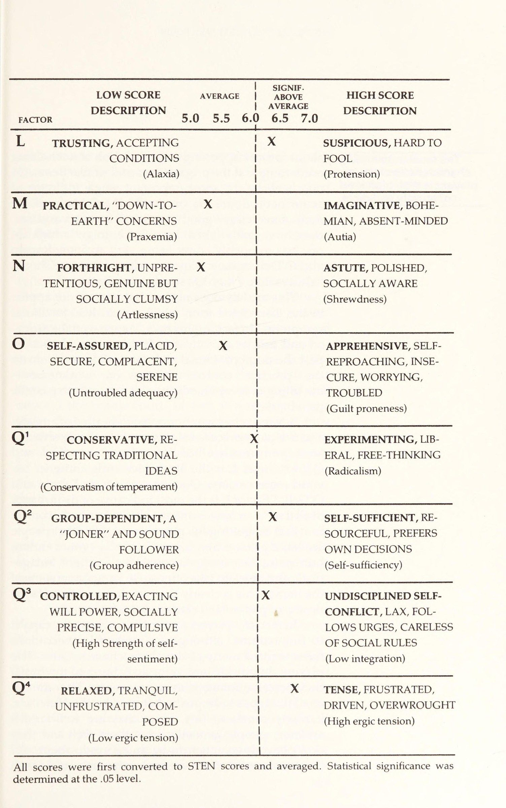
Trong suốt cuốn sách này, các đặc điểm tính cách khác nhau của các chuyên gia quần vợt được thảo luận. Chúng được sử dụng làm ví dụ bởi vì, theo giả định, các đặc điểm chúng hiển thị là những người chiến thắng “.”Đối với hầu hết các phần, điều này dựa trên các quan sát cá nhân rải rác. Chắc chắn có thể trong cuộc kiểm tra gần hơn, nghiêm ngặt hơn có thể không có sự khác biệt tâm lý thực sự, có hệ thống giữa các chuyên gia quần vợt và mọi người khác. Thành công trên các sân có thể dẫn đến đơn giản vì họ có khả năng thể chất vượt trội — phối hợp, cân bằng, thị lực, v. v. Nhưng cá nhân tôi đã thấy quá nhiều vận động viên có năng khiếu bị đánh bại bởi các mẫu vật kém hơn để tin rằng điều này là đúng. Harold Solomon, Brian Gottfried, Dick Stockton và Roscoe Tanner là những vận động viên giỏi, nhưng chắc chắn không phải là những người tuyệt vời. Có lẽ một nửa số đội quần vợt đại học ở đất nước này có một hoặc hai người chơi bằng hoặc vượt trội về thể chất. Tại sao sau đó có một số người chơi đã thành công như vậy? CÁI GÌ KHÁC NHAU? Để cố gắng trả lời điều này, tôi đã thực hiện một bài kiểm tra kiểm kê tính cách, 16 P. F. Kiểm tra, đến 26 trong số những người chơi hàng đầu thế giới. Trong số này có Gonzalez, Stockton, Tanner, Bob Lutz và Stan Smith. Danh sách đầy đủ được sản xuất trên trang 51.
CHAPTER 3. PERSONALITIES OF CHAMPIONS Throughout this book various personality charac- teristics of tennis professionals are discussed. They are used as examples because, it is assumed, the charac- teristics they display are those of ‘‘winners.”’ For the most part, this is based on scattered personal obser- vations. It is certainly possible that on closer, more rigorous examination there may be no real, systematic psychological differences between the tennis pros and everybody else. Success on the courts might result simply because they have superior physical ability— coordination, balance, eyesight, etc. But I had per- sonally seen too many gifted athletes beaten consis- tently by lesser physical specimens to believe this was true. Harold Solomon, Brian Gottfried, Dick Stockton and Roscoe Tanner are good athletes, but certainly not great ones. Probably half the college tennis teams in this country have a player or two who is their physical equal or superior. Why then have certain players been so successful? WHAT MAKES A TRUE CHAMPION DIFFERENT? To try to answer this, I administered a personality inventory test, the 16 P.F. Test, to 26 of the world’s top players. Among these were Gonzalez, Stockton, Tan-
16 P. F. Thử nghiệm đã được sử dụng rộng rãi trong nhiều năm. Được phát minh bởi nhà tâm lý học phân tích nổi tiếng, Raymond Cattell, nó được xuất bản lần đầu tiên vào năm 1949. Kể từ đó, nó đã được tinh chế và xác nhận trên các nền văn hóa, độ tuổi và sự đa dạng rất lớn của các phân khúc dân số. Ưu điểm của việc sử dụng bài kiểm tra này là tôi có thể so sánh điểm số của các chuyên gia quần vợt với điểm số bình thường của những người khác cùng tuổi và giới tính. Sự khác biệt là điều khiến tôi quan tâm nhất.
ner, Bob Lutz, and Stan Smith. The full list is pro- duced on page 51. The 16 P.F. Test has been widely used for many years. Devised by the renowned analytical psycholo- gist, Raymond Cattell, it was first published in 1949.
Với bài kiểm tra của mình, Tiến sĩ Cattell đã cố gắng xác định và đo lường tất cả các khía cạnh quan trọng của tính cách con người, một nhiệm vụ thoạt nhìn có vẻ quá phức tạp. Nhưng như Tiến sĩ S. Karson và J. O'Dell viết trong cuốn sách của họ, Sử dụng lâm sàng của 16 PF: “Điều thực sự thông minh về việc xây dựng 16 P.F. — và, có thể nói thêm, nhiều thử nghiệm khác trong kho vũ khí của Cattell — là ông ấy có thể nhìn thấy rừng qua những cái cây. Bởi rõ ràng thực sự chẳng có vô số cách để mô tả con người. Chỉ có những cách mà tiếng Anh cung cấp qua từ ngữ, cụ thể là tính từ, và người ta có thể tìm được danh sách đầy đủ tất cả những từ ấy tại hiệu sách địa phương trong cuốn được gọi là từ điển.”
Since then it has been refined and validated across cultures, ages and a tremendous variety of segments of the population.
Trong số khoảng 4.000 tính từ là tất cả các từ được sử dụng bởi tất cả các bậc thầy văn học để mô tả các đặc điểm của chúng — tự tìm kiếm, thất thường, hài hước, dễ bay hơi, v. v. Bằng cách sử dụng phân tích toán học phức tạp để loại bỏ các từ đồng nghĩa và dư thừa, Cattell cuối cùng đã đến 16 loại xác định các khía cạnh quan trọng nhất của tính cách con người.
The advantage of using this test is that I was able to compare the scores of the tennis pros with the normal scores of other people of the same age and sex.
Công việc gần đây trong lĩnh vực kiểm tra tâm lý đã gây ra một số nghi ngờ về giả định của Cattell, rằng tính cách con người có thể được chia thành một số đặc điểm “có thể đo lường được.” Mặt khác, khi xem xét kết quả kiểm tra của những người chơi mà tôi đã biết trên cơ sở cá nhân gần gũi, tôi thấy rằng các bài kiểm tra đã đưa ra những bức tranh với độ chính xác gần như kỳ lạ. Do đó, về cơ bản, tôi tin chắc rằng những bài kiểm tra này cho thấy có sự khác biệt về tính cách thực sự giữa các chuyên gia quần vợt hàng đầu và những người bình thường.
The differences were what interested me most.
16 P. F. Bài kiểm tra mà tôi đã sử dụng bao gồm 187 câu hỏi với câu trả lời trắc nghiệm. Một số ví dụ là: Tôi có thể tìm đủ năng lượng để đối mặt với những khó khăn của mình:
With his test, Dr.
Bài kiểm tra này gồm 187 câu hỏi với các câu trả lời trắc nghiệm.
Cattell attempted to define and measure all the important aspects of the human per- sonality, a task that might, at first glance, appear too complicated to be possible.
A) luôn b) nói chung c) hiếm khi
Tiền có thể mua hầu hết mọi thứ:
But as Drs.
A) có b) không chắc chắn c) không
Nếu tôi bị ông chủ gọi, tôi:
S.
A) tận dụng cơ hội để yêu cầu điều tôi muốn b) ở mức độ trung bình c) sợ rằng mình đã làm sai điều gì đó
Trong các mối quan hệ xã hội:
Karson and J.
A) thể hiện cảm xúc của tôi khi tôi muốn b) ở giữa c) giữ cảm xúc của mình với chính mình
Tôi trở nên căng thẳng khi nghĩ về tất cả những điều đang ở phía trước tôi:
O’Dell say in their book, The Clinical Use of the 16 P.F., “The really clever thing about the construction of the 16 P.F., and, it might be added, many of the other tests in Cattell’s armamentarium, was that he was able to see the forest for the trees.
A) có b) đôi khi c) không
Sự hào hoa và lộng lẫy của bất kỳ nghi lễ lớn nào là những thứ cần được bảo tồn:
For it should be obvious that there really is not an infinite number of ways in which people can be described.
A) có b) ở giữa c) không
Tôi luôn là một người ngủ ngon, không bao giờ đi bộ hoặc nói chuyện trong giấc ngủ:
There are only the ways for which the English language provides words, specifically adjectives, and one can obtain a complete listing of all these words at the local bookstore in what is called a dictionary.
A) có b) ở giữa c) không
Khi các câu trả lời được phân tích, mỗi người sẽ nhận được một điểm số cho từng đặc điểm trong số 16 đặc điểm tính cách. Tôi lấy trung bình của tất cả người chơi và vẽ biểu đồ đó trên trang 46–47.
Among the approximately 4,000 adjectives are all the words used by all the literary masters to describe their characteristics—self-seeking, capricious, humor- ous, volatile, etc.
Bạn có mức độ căng thẳng cao như các tay vợt chuyên nghiệp không? Phân tích biểu đồ cho thấy đặc điểm nổi bật nhất ở những tay vợt hàng đầu này là mức độ lo âu và động lực cao. Điều này thể hiện qua điểm Q4 rất cao của họ, cao hơn mức trung bình của bất kỳ yếu tố nào khác trong bài kiểm tra. Trích dẫn Karson và O'Dell: “Người có điểm Q4 cao thừa nhận sự căng thẳng, khó giữ bình tĩnh, không chịu nổi những lời chỉ trích, mất ngủ, lo lắng về những chuyện sẽ xảy ra trong tương lai, thú nhận không giữ được im lặng vào lúc cần thiết, và những đặc điểm tương tự.” Q4 cũng có thể là chỉ số quan trọng nhất, duy nhất phản ánh xu hướng thần kinh cấp tính trong thang 16 PF. Nhiều mục rõ ràng là “tốt” hay “xấu” nên rất dễ bị làm sai lệch. Về bản chất, muốn có điểm Q4 cao, người ta phải công khai thừa nhận mình rất lo âu. Karson và O'Dell, trong công trình lâm sàng của họ, nói rằng người ta nên “luôn coi trọng một điểm số Q4 cao.”
By using complex mathematical analysis to remove synonyms and redundancies, Cat- tell ultimately arrived at 16 categories which define the most important aspects of the human personality. Recent work in the field of psychological testing has cast some doubt on Cattell’s assumption that the human personality can be broken down into a limited number of measurable ‘‘traits.’’ On the other hand, in reviewing the test results of the players that I have known on a close personal basis myself, I found that the tests gave pictures of almost uncanny accuracy. Therefore, I am basically convinced that these tests show that there are real personality differences be- tween top tennis professionals and average people. The 16 P.F. Test that I used included 187 questions with multiple-choice answers. Some examples are: I can find enough energy to face my difficulties: a) always’ b) generally cc) seldom Money can buy almost everything: a) yes b) uncertain c) no If lam called in by my boss, I: a) make it a chance to ask for something I want b) in between c) fear I’ve done something wrong In social contacts I: a) show my emotions as I wish b) in between c) keep my emotions to myself I get tense as I think of all the things lying ahead of me: a) yes b) sometimes c) no The pomp and splendor of any big state ceremony are things which should be preserved: a) yes b) in between c) no I am always a sound sleeper, never walking or talking in my sleep: a) yes b) in between c) no When the answers are analyzed each individual receives a score on each of 16 personality characteris- tics. I took the average for all players and have plotted them on the chart on pages 46-47. Are you supercharged like the pros? Analyzing the chart reveals that the most outstanding character- istic of these top players is their high level of anxiety and drive. This is indicated by their high scores on Q4, which averaged higher than any other score on the test. Quoting Karson and O’Dell, “The high Q4 per- son admits to tension, difficulty in calming down, inability to tolerate criticism, sleeplessness, concern Scales showing the average scores of 26 professional tennis players on the 16 P.F. Test ia aS aa eS (a ee eR | SIGNIF . LOW SCORE AVERAGE ABOVE HIGH SCORE AVERAGEPTI ) DESCRIPTION FACTOR Dre eer 5.0 5.5 6.0 6.5 7.0—$—$——— eee A RESERVED, DETACHED, x OUTGOING, WARM-| CRITICAL, ALOOF, STIFF : HEARTED, EASYGOING, (Sizothymia) | PARTICIPATING : (Affectothymia) a B LESS INTELLIGENT, CON- !
Thang đo cho thấy điểm trung bình của 26 tay vợt chuyên nghiệp trên bài kiểm tra 16 PF, lấy từ hồ sơ bài kiểm tra 16 PF, bản quyền © 1956 và 1973 của Viện Kiểm tra Tính cách và Năng lực (IPAT).
Xx MORE INTELLIGENT, AB- CRETE-THINKING | STRACT-THINKING, (Lower scholastic mental | BRIGHT capacity) | (Higher scholastic mental 7 capacity) nites el catia advent anes ee ee C EMOTIONALLY STABLE, X AFFECTED BY FEELINGS, MATURE, FACES REALITY, , EMOTIONALLY LESS CALM | STABLE, EASILY UPSET (Higher ego strength) : CHANGEABLE | (Lower ego strength) aE GR E HUMBLE, MILD, EASILY X ASSERTIVE, AGGRESSIVE, ACCOMMODATING (Submissiveness) | LED, DOCILE, STUBBORN, COMPETITIVE | (Dominance) | | F SOBER, TACITURN, ae HAPPY-GO-LUCKY, SERIOUS | ENTHUSIASTIC (Desurgency) | (Surgency) ing I gE ea a Se ee G EXPEDIENT, DISREGARDS X CONSCIENTIOUS, PER- RULES SISTENT, MORALISTIC, (Weaker superego strength) STAID (Stronger superego strength) H SHY, TIMID, THREAT- xX VENTURESOME, UNIN- SENSITIVE HIBITED, SOCIALLY BOLD (Threctia) (Parmia) ——— eee I TOUGH-MINDED, SELF- TENDER-MINDED, SEN- RELIANT, REALISTIC SITIVE, CLINGING, (Harria) OVERPROTECTED (Premsia) ae Adapted from 16 P.F. test profile, copyright © 1956 and 1973 by the Institute For Personality And Ability Testing.
26 tay vợt chuyên nghiệp trên bài kiểm tra 16 PF, lấy từ hồ sơ bài kiểm tra 16 PF, bản quyền © 1956 và
| SIGNIF.
Tất cả điểm số được chuyển đổi sang thang điểm STEN và tính giá trị trung bình. Ý nghĩa thống kê được xác định ở mức 0,05.
LOW SCORE AVERAGE _ | ABOVE HIGH SCORE |DESCRIPTION VERE DESCRIPTIONFACTOR 5.0 5.5 6.0 6.5 7.0 ee ee ee ee ee ee ee eee Ls TRUSTING, ACCEPTING x SUSPICIOUS, HARD TO CONDITIONS FOOL (Alaxia) (Protension) M_ PRACTICAL,“DOWN-TO- =X : IMAGINATIVE, BOHE- EARTH” CONCERNS | MIAN, ABSENT-MINDED |(Praxemia) (Autia) ee RE NEL ORT ME OD ec Ce | a N FORTHRIGHT, UNPRE- X .
Sự lo âu này không đạt đến mức — cũng không biểu hiện dưới dạng phân ly — có thể gây ra các triệu chứng lâm sàng. Trên thực tế, trong trường hợp này, nó dường như có định hướng và đóng vai trò như một động lực. Nó thúc đẩy người chơi vượt qua ngưỡng bền bỉ bình thường. Nó giữ họ ở sân tập để khắc phục những điểm yếu — không muốn chấp nhận sự tầm thường. Nó buộc họ vượt qua hàng rào đau đớn.
ASTUTE, POLISHED, TENTIOUS, GENUINE BUT ! SOCIALLY AWARE SOCIALLY CLUMSY | (Shrewdness) (Artlessness) | oe ES re ce ose PERE es Doe te es ne tee aot MS a es ee O _SELF-ASSURED, PLACID, x | APPREHENSIVE, SELF- SECURE, COMPLACENT, | REPROACHING, INSE- SERENE | CURE, WORRYING, (Untroubled adequacy) | TROUBLED | | (Guilt proneness) SPECTING TRADITIONAL ERAL, FREE-THINKING IDEAS (Radicalism) Q' CONSERVATIVE, RE- xX EXPERIMENTING, LIB- | | | (Conservatism of temperament) , (Group adherence) (Self-sufficiency) Q* GROUP-DEPENDENT, A | xX SELF-SUFFICIENT, RE- “AIOINER” AND SOUND ; SOURCEFUL, PREFERS FOLLOWER | OWN DECISIONS | |ee oo Q* CONTROLLED, EXACTING xX UNDISCIPLINED SELF-| WILL POWER, SOCIALLY | ‘ CONFLICT, LAX, FOL- PRECISE, COMPULSIVE | LOWS URGES, CARELESS (High Strength of self- : OF SOCIAL RULES sentiment) | (Low integration) Q RELAXED, TRANQUIL, | X TENSE, FRUSTRATED, UNFRUSTRATED, COM- | DRIVEN, OVERWROUGHT POSED ! (High ergic tension) |(Low ergic tension) All scores were first converted to STEN scores and averaged. Statistical significance was determined at the .05 level.
Một số điểm số khác cũng là dấu hiệu của sự lo âu, và người chơi đã ghi điểm đáng kể theo hướng lo âu ở hầu như tất cả các yếu tố này. Đó là C, L và Q3. Trong số đó, L thú vị nhất và vượt xa sự lo âu đơn thuần. Trích dẫn lại Karson và O'Dell: “Yếu tố L là dấu hiệu gây xáo trộn nhất trong tất cả các thang đo PF. Ai đạt điểm cao ở L sẽ khăng khăng đòi hỏi điểm của mình, cảm thấy mọi người nói xấu sau lưng, không chịu nổi sự yếu đuối của con người, có khả năng chiến đấu, đối kháng và nhanh chóng quy chụp, theo cách diễn giải một số mục. Đây rõ ràng là hội chứng tâm thần phổ biến của hoang tưởng, nếu đẩy đến mức cực đoan.”
The most outstanding characteristic of the top players is their high level of anxiety and drive. about future happenings, an admission of not holding one’s tongue at the proper times and similar items. Q4 may well be the most important single indicator of acute neurotic trends on the 16 P.F.“” Many of the items have clear “good” or “bad” answers and are, therefore, easily faked. In essence, to get a high Q4 one has to openly admit being very anxious. Karson and O’Dell in their clinical work say that one should “always take a high Q4 score seriously. This anxiety does not reach the levels nor appear in the dissociated form which would lead to clinical symptoms. In fact, in this case, it appears to be direct- ed and acts as a motivator.
Trên thực tế, người chơi chắc chắn không thường đẩy nó đến mức cực đoan, dù những quan sát cá nhân của tôi đã xác nhận nhiều đặc điểm kể trên. Người chơi hành động nhanh và mạnh, lao ngay vào cuộc cạnh tranh khi coi ai đó là đối thủ. Họ hoàn toàn không phải kiểu người dễ bị xô đẩy. Tuy nhiên, điều đó hiếm khi xảy ra. Bởi họ là những vận động viên nổi tiếng, mọi người thường đối xử tốt với họ và họ ít phải đối kháng. Ngoài sân quần vợt, họ coi nhau như những người đồng chí, bạn bè cùng xem phim, ăn tối và chia sẻ kinh nghiệm. Dẫu cho điểm kiểm tra gợi ý điều gì, phòng thay đồ nhìn chung vẫn là nơi có sự gắn kết tốt. Nhưng trên sân, tất cả chấm dứt. Họ là đối thủ và không có cách nào khác về việc đó. Lúc đó, mọi nguồn năng lượng chiến đấu trào dâng và dồn cả vào việc giành chiến thắng.
It drives the players on past the point of normal endurance. It keeps them on the practice courts working on Wweaknesses— unwilling to accept mediocrity. It forces them past the pain barrier. Several other scores are also indicative of anxiety, and the players scored significantly in the direction of anxiety on nearly all of them. These were C, L and Q3. Of these, L is the most interesting and goes be- yond mere anxiety. Quoting again from Karson and O’Dell, “Factor L is the most indicative of disturbance of all the P.F. scales. Someone obtaining a high score on L insists on getting his point across, feels that people are talking about him behind his back, cannot endure human frailties, is oppositional, likely to fight, antago- nistic and quick to take offense, to paraphrase some of the items. This is clearly the common psychiatric syn- drome of paranoia, if carried to the extreme. In fact, the players certainly do not usually carry it to the extreme, although my personal observations have verified many of the above characteristics. The players do quickly and vigorously jump to the fray if they perceive someone as an antagonist. They are not at all the types to be pushed around easily. However, it rarely comes to this. Since they are well-known athletes, people generally treat them well and they don’t encounter much to be antagonistic about. Off the tennis court, they see each other as comrades in
Connors là ví dụ điển hình của người sở hữu đặc điểm tính cách này, được đẩy đến thái cực lớn hơn hầu hết người chơi. Anh ấy vốn luôn như vậy, dù gần đây ở mức độ thấp hơn, và là một kẻ cô độc. Trong nhiều năm, xu hướng nghi ngờ và hoang tưởng tự nhiên của anh đã trói buộc anh với mẹ và người từng là người đại diện, Bill Riordan, đồng thời cô lập anh khỏi phần còn lại của các tay vợt. Năm 1974, năm Connors giành Wimbledon, Forest Hills và chức vô địch Úc, những cuộc chiến của anh đã vượt ra ngoài sân quần vợt. Thực tế, phải mất vô số cuộc đàm phán và chi phí pháp lý, những cuộc chiến ấy mới bị gạt khỏi sân. Trong khoảng 12 tháng đó, anh đã lâm vào các vụ kiện chống lại Arthur Ashe, Jack Kramer, Donald Dell, Liên đoàn Quần vợt Pháp và, trên thực tế, cả hiệp hội quần vợt ATP: Với tất cả những người Connors coi là bạn bè, anh ấy là một chàng trai vô cùng dễ mến.
arms, movie and dinner mates and sharers of experi- ences. Despite what one might think from their test scores, the locker room is generally a place of good fellowship. But on the court, all that ends. They are antagonists and there are no two ways about it. Then, all the submerged fighting energy surfaces and focus- es on winning. Connors is a fine example of someone with this type of personality trait, carried to a greater extreme than with most players. He has always been, although to a lesser extent recently, a loner. For years, his natu- ral tendency toward suspicion and paranoia bound him to his mother and one-time agent, Bill Riordan, and isolated him from the rest of the players. In 1974, the year Connors won Wimbledon, Forest Hills and the Australian championships, his battles ranged well beyond the tennis court. In fact, it was only after a great deal of negotiating and legal expense that they were kept out of the law courts. Within that 12-month period, he was involved in suits against Arthur Ashe, Jack Kramer, Donald Dell, the French Tennis Federa- tion and, in fact, the tennis players’ own association, the ATP: With people that Connors considers to be friends, he is a perfectly likeable guy.
Vấn đề là có rất nhiều người trong số họ. Một trong những tiêu chí của anh ấy cho tình bạn là người bạn không được coi là cố gắng lợi dụng anh ấy hoặc hưởng lợi về mặt vật chất từ mối quan hệ.
The trouble is that there aren’t many of them. One of his criteria for friendship is that the friend must not be perceived as trying to take advantage of him or benefit materially from the relationship.
Về bằng chứng của sự lo âu, hầu hết tay vợt hàng đầu đều bộc lộ điều đó công khai qua phong cách của họ. John McEnroe, Tom Okker, Eddie Dibbs, Jimmy Connors và Ilie Nastase, chỉ nêu vài cái tên, là những người hiếu động, bồn chồn, khó ngồi yên, nói năng theo từng cơn ngắn và thường chỉ là “co giật.” Ngay cả Arthur Ashe, trước thế giới bên ngoài dường như là “Ông Cool,” cũng thường giấu một cơn bứt rứt trong bụng và sự thắt nút căng thẳng. Tôi thoải mái khi nêu tên ở đây, bởi không ai trong số những tay vợt vừa kể đã làm bài kiểm tra. Tuy nhiên, những tiếp xúc cá nhân đã cho tôi thấy họ phù hợp với mô hình. Có thể họ còn ghi điểm cao hơn những tay vợt chúng tôi đã thử nghiệm.
As for evidence of anxiety, most of the top players display it openly in their mannerisms. John McEnroe, Tom Okker, Eddie Dibbs, Jimmy Connors and Tlie Nastase, to name a few, are hyper, restless personali- ties who have difficulty sitting still, who talk in short bursts and who are generally just “twitchy.’’ Even Arthur Ashe who, to the outside world, appears to be “Mr. Cool,” often conceals a stomach churning and knotted with tension. I feel free to name names here, because none of the players mentioned above took the test. However, personal association has shown me On the court, all the submerged fighting energy surfaces and focuses on winning.
Sự độc lập. Trong số những đặc điểm khác mà người chơi đạt điểm cao có các đặc điểm thể hiện sự độc lập và không thích bị chi phối. Chúng thể hiện qua sự kết hợp giữa điểm cao ở L (Đa nghi), Q2 (Tự cung tự cấp) và E (Thống lĩnh). Những đặc điểm này rất hợp với một môn thể thao cá nhân, đơn độc. Nếu bạn không thể tự giữ vững đủ tốt để giành chiến thắng, không ai khác có thể làm điều đó thay bạn.
The tendency toward criticism will keep the pros working ona weakness in their games long after other players would have quit. that they fit the pattern. They would probably have scored higher than the players we did test. Exercising independence. Among the other traits on which the players scored highly are those which indicate independence and dislike of authority. These are shown by the combination of high scores on L (Suspiciousness), Q2 (Self-sufficiency), and E (Domi- nance).
Tất nhiên, điểm cao ở E (Thống lĩnh) cần vài lời bình luận. Một cá nhân có đặc điểm này được Karson và O'Dell mô tả là người “thích thống trị và kiểm soát người khác, cũng như chỉ trích họ. Một người như vậy thích ra lệnh, thích đối mặt thử thách, cảm thấy vượt trội so với người khác và không ngại ép buộc ý kiến của mình lên người khác. Quả thực anh ấy thích thế!” Khuynh hướng phê bình này thể hiện như một dạng chủ nghĩa hoàn hảo, và cũng áp dụng cho chính những khiếm khuyết của họ. Nó thúc đẩy họ khắc phục một điểm yếu trong lối chơi ngay cả khi những người khác đã bỏ cuộc. Về sự hữu ích của thôi thúc thống trị và kiểm soát người khác, trong quần vợt, điều đó hầu như không cần phải bàn.
What better trait for an individual, lonely sport. If you are not able to hold yourself together well enough to win, no one else can do it for you. Of course, the high score on E (Dominance) re- quires some comment. An individual with this trait is characterized by Karson and O’Dell as a person who, “enjoys dominating and controlling others, as well as criticizing them. Such a person likes being in com- mand, enjoys meeting challenges, feels superior to others, and does not mind forcing his ideas on other people. Indeed he enjoys it!’’ The tendency toward criticism shows up as a type of perfectionism, and applies to their own imperfections as well. It will keep them working on a weakness in their games long after other types would have quit. As for the usefulness of the urge to dominate and control another person, in tennis this hardly needs elaboration. Hardly dumb athletes. The players also are sig- nificantly more intelligent than the average person. Out of the 26 players we tested, all but one were average or above.
Các tay vợt thông minh. Người chơi cũng thông minh hơn đáng kể so với người bình thường. Trong số 26 người chơi chúng tôi đã thử nghiệm, tất cả trừ một người đều ở mức trung bình trở lên. Tuy nhiên, điều này có thể liên quan ít hơn đến bản thân trò chơi so với thực tế là quần vợt vẫn là môn thể thao thu hút người tham gia chủ yếu từ tầng lớp trung lưu và thượng lưu.
However, this may relate less to the game itself than it does to the fact that tennis is still a sport that draws its participants mainly from the middle and upper classes. If the professional players’ psychological profiles were interesting, the half dozen players’ wives we tested were even more so! (See list, next page.) In addition to being good-looking, they displayed a whole range of attractive psychological qualities. They were all far above average in intelligence, and most were highly venturesome, emotionally stable, enthu-
Nếu hồ sơ tâm lý của những tay vợt chuyên nghiệp đã thú vị, thì hồ sơ của nửa tá người vợ của họ mà chúng tôi đã thử nghiệm còn thú vị hơn thế! (Xem danh sách, trang tiếp theo.) Ngoài vẻ xinh đẹp, họ còn thể hiện một loạt phẩm chất tâm lý hấp dẫn. Tất cả đều vượt xa mức trung bình về trí thông minh, và hầu hết đều rất mạo hiểm, ổn định về mặt cảm xúc, nhiệt tình và cởi mở. Chẳng khó để hiểu vì sao những tay vợt chuyên nghiệp lại để mắt đến những người phụ nữ như thế.
siastic and free-thinking. It is not difficult to under- stand how men as sought-after as the pro tennis play- ers fell in love with such women. WN ke Ce a cae aa =a SOWNDATRWONE PLAYERS TESTED John Austin Michael Fishbach Peter Fleming 14. Douglas Palm 15. Willem Prinsloo 16. Dennis Ralston Richard (Pancho) Gonzalez 17. Martin Riessen Thomas Gullikson Timothy Gullikson Chico Hagey . Johan Kriek . John Lloyd . Robert C. Lutz . Bruce Manson .
Các Tay Vợt Được Kiểm Tra
1. John Austin
Ray Moore . Jan E.
2. Michael Fishbach
3. Peter Fleming
4. Richard (Pancho) Gonzalez
5. Thomas Gullikson
6. Timothy Gullikson
7. Chico Hagey
8. Johan Kriek
9. John Lloyd
10. Robert C. Lutz
11. Bruce Manson
12. Ray Moore
13. Jan E. Norback
14. Douglas Palm
15. Willem Prinsloo
16. Dennis Ralston
17. Martin Riessen
18. David Schneider
19. Stan Smith
20. Sherwood Stewart
21. Richard Stockton
22. Roscoe Tanner
23. Giáo viên Brian
24. Eliot Teltscher
25. Trey Waltke
26. Kim Warwick
Các Bà Vợ Được Kiểm Tra
Carole Dell
Norback 18.
Rosemary Gullikson (Tim)
April Riessen
Linda Ann Stewart
Laulee van Dillen
Phần V: Sẵn Sàng Để Chiến Thắng
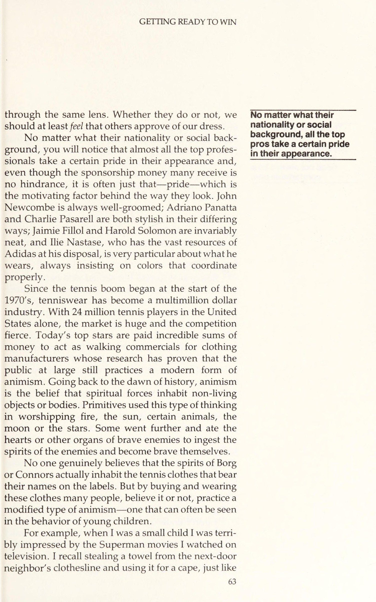
Tìm Lợi Thế Chiến Thắng Nhờ Lịch Trình Đã Lập
Sau tấm màn xanh phía sau sân khấu tách ra, và tại trận bán kết, Tom Okker cùng Ray Moore bước ra cạnh nhau, đi bộ rất nhanh. Một vài khán giả tinh ý có thể nhận ra họ đang đi cực kỳ nhanh.
David Schneider 19. Stan Smith 20. Sherwood Stewart 21. Richard Stockton 22. Roscoe Tanner 23. Brian Teacher 24. Eliot Teltscher 25. Trey Waltke 26. Kim Warwick WIVES TESTED Carole Dell Rosemary Gullikson (Tim) April Riessen Linda Ann Stewart Lailee van Dillen
Khi hai tay vợt tới giữa ghế trọng tài tại Giải vô địch trong nhà Paris, từ “nhanh” không còn đủ để mô tả tốc độ bất thường mà Okker và Moore đang đạt được. Nét mặt họ càng trở nên căng thẳng hơn với mỗi bước chân dài. Có phải đây là một cuộc đua?
CHAPTER 4. GETTING READY TO WIN GETTING THE WINNING EDGE WITH A PLANNED ROUTINE The green curtain at the back of the court parted and semifinalists Tom Okker and Ray Moore emerged side by side, walking briskly. Some observant spectators might have noticed that they were walking very briskly.
“Bạn cá rằng đó là một cuộc đua”, Moore nói. “Đó là một cuộc đua xem ai có thể tới chiếc ghế ‘may mắn’ của mình trước, dù tất nhiên chẳng ai trong chúng tôi muốn thừa nhận điều đó. Tôi đã chơi tốt ở giải đó, đánh bại Vilas và Tanner, và cả hai lần tôi đều ngồi bên trái trọng tài. Rõ ràng Tom cũng tận dụng khía cạnh đó trong các trận của anh ấy. Không ai trong chúng tôi muốn mạo hiểm phá vỡ thói quen, nên ở đây chúng tôi đã tham gia vào trò hề này để cố chiếm một vị trí nhất định trên sân trước gã kia, trong khi lẽ ra phải điềm tĩnh bước cạnh nhau. Đến phút chót, gã Okker đó đã phá mọi quy tắc và nước rút vài mét cuối, nên tất nhiên tôi chẳng có cơ hội. Ý tôi là gã đó nhanh như thỏ rừng. Tôi tức lắm!”
By the time the two players were halfway to the umpire’s chair at the Paris Indoor Championships, “brisk’’ no longer described the unusual pace at which Okker and Moore were proceeding. The expressions on their faces were becoming more strained with each lengthening stride. Could this be a race? “You bet it was a race,”” said Moore. “It was a race to see who could reach his ‘lucky’ chair first, although, of course, neither of us wanted to admit it. I had played well in that tournament, beating Vilas and Tanner, and on both those occasions I had sat to the left of the umpire. Apparently, Tom had been using that side during his matches as well. Neither of us wanted to risk breaking the routine, so here we were engaged in this farce of trying to reach a certain spot on the court before the other guy when we were sup- posed to be walking calmly side by side. At the last
Mê tín có ích như thế nào. Quần vợt đầy rẫy những mê tín, cũng như nhiều môn thể thao chuyên nghiệp. Hầu hết những hành vi mê tín của người chơi trên sân quần vợt dường như vô dụng, nhưng thực tế không phải vậy. Dù về mặt tâm lý, mê tín là sự quy kết sai nguyên nhân và kết quả, nó vẫn có thể có lợi. Thông thường, nó cung cấp một cấu trúc để chuẩn bị cho trận đấu, và do đó có giá trị riêng của nó.
moment, that bloody Okker broke all the rules and sprinted the last couple of yards, so of course [had no chance. I mean the man’s as quick as a hare. I was livid!”’ How superstitions are helpful. Tennis is rife with superstitions as are many pro sports. Much of the superstitious behavior players engage in on a tennis court appears to be useless, but it is not. Although superstition is, in psychological terms, the misapplica- tion of cause and effect, it can be beneficial.
Nhà vô địch nổi tiếng người Ấn Độ, Vijay Amritraj, có lối sống được nhào nặn bởi một loạt các niềm tin mê tín, xuất phát từ một hệ thống rất phức tạp, không chú ý đến lý lẽ cũng như lý trí. Anh ấy tin rằng nếu anh ấy thắng trận đầu tiên, anh ấy phải lặp lại thói quen trước trận đấu của mình một cách chi tiết để duy trì vận may trong các trận đấu tiếp theo. Đôi khi nó đòi hỏi phải khóa mình vào một thói quen trước trận đấu cực kỳ nghiêm ngặt và thường rất bất tiện.
Often, it supplies structure in preparing for a match and there- fore has its value. The popular Indian champion, Vijay Amritraj, whose lifestyle is molded by a whole range of supersti- tious beliefs, derives structure from a highly intricate system which pays heed to neither logic nor reason. He believes that if he wins his first match, he must repeat his pre-match routine in exact detail to perpetu- ate his luck in the matches that follow. Sometimes it necessitates locking himself into an incredibly strict and often highly inconvenient pre-match routine.
Đó là trường hợp khi Amritraj giành cả hai danh hiệu đơn và đôi tại Mexico City vào mùa thu năm 1978. Sáng đầu tiên anh dậy sớm vì chênh lệch múi giờ hai tiếng, và đành chịu thức dậy lúc 7:00 mỗi sáng sau đó, dù anh thi đấu các trận vào buổi tối. Bữa sáng phải được ăn lúc 9:30 và phải gồm nước cam, hai quả trứng chín vừa, xúc xích và bánh mì nướng trắng.
This was the case when Amritraj won both the singles and doubles titles in Mexico City in the fall of 1978. He had risen early the first morning because of a two-hour time change and was doomed to get up every morning thereafter at 7:00, even though he was playing evening matches. Breakfast had to be taken at 9:30 and it had to consist of orange juice, two eggs over-medium, sausage and white toast.
Từ 7:00 đến 8:30 tối, anh phải xem tivi dù có chương trình gì thú vị hay không, vì đó là điều anh đã làm vào ngày đầu tiên. Tùy theo lịch thi đấu, bữa tối luôn là 9:00 và món ăn mỗi đêm là Enchiladas Rojas.
Between 7:00 and 8:30 in the evening he had to watch television whether or not there was anything interesting, because that was what he had done on the first day. Depending on his playing schedule, dinner every night was at 9:00 and every night it was Enchi- ladas Rojas.
Nhưng tệ nhất trong tất cả, bất chấp mọi bản năng và sự huấn luyện chuyên nghiệp, Amritraj đã không tập luyện suốt cả tuần. Không có thời gian để đánh vài quả vào ngày khai mạc đó. Không tập luyện.
But worst of all, in defiance of all his professional instincts and training, Amritraj did not practice all week. There had been no time to have a hit on that opening day so that was it. No practice.
"Nghe có vẻ vô lý, phải không? " anh ấy cười. "Nhưng đó là tôi. Điều quan trọng đối với tôi về mặt tâm lý là tuân theo một thói quen dựa trên sự mê tín hơn làm những điều hiển nhiên mà tôi biết tôi nên làm — như có một cú đánh trước trận đấu của tôi. "
It is psychologically better to have a routine in which you do things that are useless than to have no routine at all. “Sounds ridiculous, doesn’t it?’”’ he laughs. “But that’s the way I am. It’s more important for me psy- chologically to follow a routine based on superstition than to do the obvious things I know I should be doing—like having a hit before my matches.
Nét mê tín đó ăn sâu vào Amritraj đến mức, ngay cả khi anh cố gắng phá bỏ những quy tắc tự áp đặt và tập luyện trước khi gặp Raul Ramirez ở trận chung kết, anh cũng lập tức thấy có lỗi và không thể giữ nổi một quả bóng trong sân.
That superstitious streak runs so deep in Amritraj that, even when he tried to break his self-imposed rules and practice before meeting Raul Ramirez in the final, he immediately felt guilty and couldn’t keep a ball in court.
“Sau ba bốn phút đánh bóng văng khắp nơi, tôi quyết định nghỉ”, Amritraj nói. “Và khi Raul thắng game đầu với tỷ số love, tôi bắt đầu lo lắng về chuyện đó. Tôi chỉ biết rằng mình không nên tập, dù về mặt kỹ thuật tôi cần phải làm.”
“After three or four minutes of spraying balls all over the place, I packed it in,” said Amritraj. ‘“And when Raul won the first game at love I started to worry about it. I just knew I shouldn’t have practiced, al- though technically I needed to.
Khi gạt được nỗi lo đó khỏi tâm trí, Amritraj đã lập kỳ tích đáng kể khi đánh bại Ramirez trước khán giả nhà, không chỉ ở nội dung đơn mà còn ở nội dung đôi, vào buổi trưa cùng anh trai Anand.
Once he put that worry out of his mind, Amritraj achieved the considerable feat of beating Ramirez in front of his home crowd not only in singles but in doubles, too, later in the day with brother Anand.
Với bất kỳ ai bị cản trở bởi những đòi hỏi khắt khe của sự bí ẩn phương Đông, một thói quen như Vijay tự đặt ra cho mình ở Mexico City sẽ là điều bất khả thi. Nhưng đó không phải vấn đề. Trong chuyện mê tín, mỗi người có chuyện của riêng mình. Về mặt tâm lý, Amritraj đã chuẩn bị tốt hơn cho các trận đấu của mình nhờ làm tất cả những điều điên rồ ấy, cũng như Okker thấy hạnh phúc hơn khi ngồi trên chiếc ghế “may mắn” của mình ở Paris.
For anyone unfettered by the rigorous demands of Eastern mystique, a routine such as Vijay set for himself in Mexico City would be ruinous. But that is not the point. In matters of superstition it is each to his own. Psychologically, Amritraj was better tuned for his matches by doing all the crazy things he did, just as Okker was happier sitting in his “lucky” chair in Paris.
Ngốc? Không hề. Đối với cả hai người chơi, đó là một phần của thói quen làm dịu tâm trí và như vậy là có lợi. Trên thực tế, liên quan đến việc chuẩn bị trước trận đấu, bất kỳ thói quen nào cũng có lợi. Sẽ tốt hơn về mặt tâm lý khi có một thói quen trong đó bạn làm những việc vô dụng hơn là không có thói quen nào cả.
Stupid? Not at all. For both players it was part of a routine that calmed the mind and as such was benefi- cial. In fact, as far as pre-match preparation is con- cerned, any routine is beneficial. It is psychologically better to have a routine in which you do things that are useless than to have no routine at all.
Các bác sĩ đã phát hiện ra rằng có thể chữa trị cho bệnh nhân trong toàn bộ các bệnh — một số nghiêm trọng như tê liệt hoặc điếc — mặc dù kê toa một loại thuốc hoàn toàn vô dụng chỉ hoạt động vì người mắc bệnh tin rằng nó sẽ. Hiện tượng này, được gọi là "hiệu ứng giả dược", hoàn toàn là tâm lý, nhưng kết quả chắc chắn là có thật.
Doctors have discovered that it is possible to cure patients of a whole range of ailments—some as seri- ous as paralysis or deafness—though prescribing a totally useless drug which works only because the sufferer believes it will. This phenomenon, called the “placebo effect,” is purely psychological, but the results are definitely real. Of course, the placebo effect doesn’t always work
Tất nhiên, hiệu ứng giả dược không phải lúc nào cũng hiệu nghiệm, trong y học cũng như trong quần vợt. Vitas Gerulaitis không phải lúc nào cũng thắng game tiếp theo khi cẩn thận tránh đi vào lối đi đôi khi đổi sân. Và tay vợt Nam Phi John Yuill cũng chẳng ghi được một cú ace mỗi lần giao bóng, dù người ta có thể nghĩ anh ta bị ám ảnh thần kinh, bởi cái nhịp bước chân khi anh quay lại giao bóng cứ đều đặn và rõ rệt đến thế. Thực ra, Yuill chỉ đơn giản bẻ gãy nhịp bước để tránh chạm vạch cuối sân bằng chân. Nó chẳng phục vụ mục đích nào khác ngoài việc khiến anh ta tin mình sẽ giao bóng tốt hơn. Vì tất cả những người theo nghệ thuật này đều sẵn sàng thừa nhận, lý lẽ không đóng vai trò trong mê tín.
in medicine or in tennis. Vitas Gerulaitis doesn’t al- ways win the next game when he carefully avoids walking in the doubles alley while changing ends. And the South African, John Yuill, doesn’t produce an ace every time he serves, although one might think he had a neurological deformity, because the stutter-step in his walk as he goes back to serve is so pronounced and consistent. In fact, Yuill is simply breaking stride to avoid touching the baseline with his foot. It serves no purpose other than to make him think he will serve better. As all practitioners of the art are quite ready to admit, logic plays no part in superstition.
Tất nhiên, chúng sẽ tốt hơn rất nhiều nếu các thành phần của bất kỳ thói quen mê tín nào có hiệu quả về thể chất cũng như tâm lý. Chắc chắn lợi ích sẽ bị hạn chế nếu nó được tạo thành đơn giản là đặt tất bên trái trước bên phải hoặc cúi đầu ba lần về phía Đông.
Of course, they are far better off if the ingredients of any superstitious routine are effective physically as well as psychologically. The benefits will, inevitably, be restricted if it is made up simply of putting the left sock on before the right or bowing three times to the East.
Hãy tin vào thói quen của bạn. Giữ tình trạng thể chất tốt, ăn đúng món vào đúng lúc, có đầu óc minh mẫn và kế hoạch phù hợp sẽ mang lại nền tảng vững chắc hơn nhiều cho cấu trúc bao quanh việc chuẩn bị trận đấu. Và dù bạn là ai hay thi đấu ở đâu, tầm quan trọng của cấu trúc ấy không đổi. Dù là trận đấu cạnh tranh trên sân công viên địa phương hay trận chung kết Giải Mỹ Mở rộng, người chơi đã nghĩ ra một sự chuẩn bị có cấu trúc sẽ bắt đầu với lợi thế.
Believe in your routine. Being in good physical condition, eating the right things at the right time, and having a clear mind and match plan offer a far more solid foundation to the structure that should surround match preparation. And no matter who you are or where you are going to play, the importance of that structure does not vary. Be itina competitive match on the local public park courts or in the final of the U.S.
Cựu vô địch Wimbledon Tony Trabert đã giải thích điều này với tôi khi chúng tôi nói về sự hồi hộp trước trận đấu tại Arco Open 1978 ở Los Angeles. Anh ấy nói với tôi rằng anh không gặp nhiều vấn đề với sự căng thẳng trong những ngày thi đấu. Thỉnh thoảng anh hơi lo lắng khi bắt đầu một trận, nhưng cảm giác đó sớm biến mất và hiếm khi quay lại. Tôi hỏi anh làm sao có thể bình tĩnh như thế.
Open, the player who has devised a structured prepa- ration is going to start with an edge. Former Wimbledon champion Tony Trabert spelled this out for me when we talked about pre-match nerves during the 1978 Arco Open in Los Angeles. He told me that he did not have many problems with nerves during his days of competition. Occasionally, he would be slightly nervous at the beginning of a match, but this would soon go away and rarely return.
“Bởi vì tôi luôn chuẩn bị rất kỹ”, anh trả lời. “Tôi luôn ra sân với tâm thế rằng mình đã làm mọi thứ trong khả năng để chuẩn bị cho trận đấu. Tôi ở tình trạng thể chất tốt hơn và đã rèn luyện các cú đánh của mình bài bản hơn các đối thủ của tôi.”
I asked him how he managed to be so tranquil. “Because I was always so well prepared,” he re- plied. ‘I always went on court knowing that I’d done everything in my power to prepare myself to play. I
Ai biết liệu Trabert có phong độ tốt hơn đối thủ hay đã chuẩn bị kỹ lưỡng hơn? Điều quan trọng là anh ấy tin vào điều đó, và từ niềm tin ấy, anh có được cả sức mạnh thể chất lẫn tinh thần.
was in better physical condition and had worked on my strokes more systematically than my opponents. Who knows whether Trabert was in better shape than his opponents or had prepared more carefully?
Mọi người đều cần một cái gì đó để nắm bắt để cung cấp cho anh ta sức mạnh trong điều kiện không chắc chắn. Một số nhà triết học đã nói rằng đây là nền tảng của tôn giáo. Chúng tôi thường nhận thức được những bất cập lan tỏa của chính mình. Chúng ta cần một sức mạnh không thể xác định để cho chúng ta biết phải làm gì và làm dịu nỗi sợ hãi của chúng ta. Một số sức mạnh nhân từ vô cùng hiểu biết nơi chúng ta không biết gì, đó là vô cùng mạnh mẽ nơi chúng ta yếu đuối, để cho chúng ta trú ẩn và hỗ trợ. Trong buổi bình minh của lịch sử, khi các tôn giáo đầu tiên bén rễ, con người bị chi phối bởi các lực lượng tự nhiên tàn nhẫn. Mọi người không biết gì và nỗi sợ hãi nảy sinh từ sự thiếu hiểu biết đó đòi cứu trợ. Tai họa xảy ra vượt quá sự hiểu biết của con người và, trong cơn hoảng loạn, anh ta chạy đến nơi trú ẩn. Như đã nói rất thường xuyên, nếu Thiên Chúa không tồn tại, con người sẽ phát minh ra anh ta.
The important thing was that he believed it and from this belief he derived both physical and mental strength. | Everybody needs something to grasp onto in or- der to give him strength under conditions of uncer- tainty. Some philosophers have said that this is the basis of religion. We are generally aware of our own pervasive inadequacies. We need some indefinable power to tell us what to do and to calm our fears. Some benevolent power that is infinitely knowledgeable where we are ignorant, that is infinitely strong where we are weak, to give us shelter and support. During the dawn of history, when the first religions took root, man was dominated by ruthless natural forces. People were ignorant and the fear that sprung from that igno- rance demanded relief. Calamities occurred that went way beyond man’s understanding and, in his panic, he ran for shelter. As has been said so often, if God had not existed, man would have invented him. The shelter offered by religion is constructed of belief. The benefits it offers are spiritual and psycho- logical.
Nơi trú ẩn được cung cấp bởi tôn giáo được xây dựng từ niềm tin. Những lợi ích mà nó mang lại là tinh thần và tâm lý. Tuy nhiên, hết lần này đến lần khác họ đã chứng tỏ mình mạnh hơn gạch và vữa.
Yet, time and again they have proved them- selves stronger than brick and mortar. A tennis court offers no shelter. There is no wall to back up against, no ropes to lean on, no corner to crouch in.
Một sân quần vợt không có nơi trú ẩn. Không có bức tường để chống lại, không có dây để dựa vào, không có góc để cúi xuống. Bạn đang chiến đấu ngoài trời, hoàn toàn lộ diện. Không có ai để nhờ giúp đỡ, vì vậy bạn phải dựa vào sức mạnh của chính mình. Khi bạn bước ra sân đó, bạn cần áo giáp tâm lý mạnh mẽ và niềm tin của bạn vào bộ giáp đó chắc chắn sẽ có ảnh hưởng mạnh mẽ đến cách bạn chơi. Về cơ bản, bạn cần cảm thấy mình có một "cạnh".
You are fighting out in the open, totally exposed. There is no one to turn to for help, so you must rely on your own strength. When you walk out on that court, you need strong psychological armor and your belief in that armor will definitely have a powerful influence over the way you play. Basically, you need to feel you have an “edge. A recommended pre-match routine. At Pepper- dine University where I coach the tennis team, I try to give my players a security or edge that is structured on
Một thói quen trước trận đấu được đề xuất. Tại Đại học Pepperdine, nơi tôi huấn luyện đội quần vợt, tôi cố gắng mang lại cho các tay vợt của mình một sự an tâm — hay lợi thế — được cấu trúc thành một thói quen hoàn chỉnh gồm:
a complete routine which incorporates a set pattern consisting of: 1. Timing—when to arrive at the courts. 2. Eating—what and when to eat. 3. Physical—stretching and warm-up. 4. Dress—what to wear. 5. Plan—match strategy.
1. Thời gian — khi nào đến sân. 2. Ăn — ăn gì và lúc nào. 3. Thể chất — giãn cơ và khởi động. 4. Ăn mặc — mặc gì. 5. Kế hoạch — chiến thuật trận đấu.
Mặc dù người chơi không cạnh tranh trung bình không có sự linh hoạt của các thành viên trong nhóm đại học, nhưng đáng để kiểm tra thói quen mà nhóm tuân theo vì đó là một khuôn khổ tốt để hiểu quá trình chuẩn bị.
Although the average non-competition player does not have the flexibility of members of a college team, it is worthwhile to examine the routine the team follows because it is a good framework from which to understand the preparation process.
Trận đấu tại nhà: Người chơi ăn trưa hai giờ trước giờ thi đấu.
HOME Matches: Players have lunch two hours be- fore match time.
Đội tụ tập, mặc sẵn trang phục và sẵn sàng thi đấu một giờ trước giờ đấu. Trong mười lăm phút, họ thực hiện các bài tập giãn cơ thường lệ. Sau đó, họ đánh và khởi động tất cả các cú đánh trong nửa giờ. Cuối cùng, chúng tôi rút về “phòng sẵn sàng” trong nhà thi đấu, nơi ấm áp, yên tĩnh và kín đáo. Chiến thuật cho sáu trận đơn cá nhân được thảo luận. Để tăng động lực, chúng tôi nói về tầm quan trọng của trận đấu trong kế hoạch mùa giải.
The team gathers dressed and ready to play one hour before match time. For fifteen minutes they do their routine sequence of stretching exercises. Then they hit and warm up all strokes for half an hour. Finally, we retire to our ‘ready room” in the gymna- sium, where it is warm, quiet and isolated. There the strategy for the six individual singles matches is dis- cussed. To increase motivation, we talk about the im- portance of the match in our season’s plans.
Năm phút trước khi trận đấu chúng tôi có mặt tại sân.
Five minutes before match time we are at the courts.
Các trận đấu AWAY: Chúng tôi đến ít nhất một giờ trước bữa trưa hoặc khoảng ba giờ trước thời gian trận đấu. Ngay lập tức khi đến nơi, chúng tôi có thời gian khởi động 45 phút để làm quen với các sân.
AWAY Matches: We arrive at least an hour before lunch or approximately three hours before match time. Immediately on arrival we have a 45-minute warm-up to get used to the courts.
Chúng tôi ăn trưa, thư giãn và trở lại sân 45 phút trước giờ thi đấu. Sau đó, chúng tôi theo đúng trình tự như ở nhà, ngoại trừ việc phần đánh tập chỉ kéo dài 15 phút thay vì nửa giờ, và vì không có phòng riêng sẵn sàng, chúng tôi phải tìm một chỗ kín đáo để tổ chức buổi bàn chiến thuật.
We have lunch, relax and return to the courts 45 minutes before match time. We then follow the same sequence as we do at home, except that the hit is 15 minutes instead of a half hour and, since we have no ready room, we must find some secluded place to have our strategy session.
Bằng cách đó, đội bước vào trận đấu với cơ thể đã khởi động kỹ và sự tập trung vào nhiệm vụ trước mắt.
In this way the team goes into the match physi- cally warm and mentally focused on the task at hand.
Nhiều đội mắc sai lầm khi đến trận đấu sân khách đúng nghĩa chỉ năm phút trước giờ thi đấu. Khi bước ra sân, đầu óc họ vẫn còn ở trong xe, đang lùi dần trên đường. Đến lúc tâm trí họ theo kịp thì cơ thể thường đã bị tụt lại phía sau. Là huấn luyện viên sân nhà, tôi thấy chuyện đó rất hợp lý.
Many teams make the mistake of arriving at an away match literally five minutes before match time. When they walk out on court, their heads are still in the car somewhere, back down the road. By the time their minds arrive, their bodies are often a set behind. As home coach that suits me fine.
Thời gian biểu: Hãy lưu ý rằng, theo trình tự ta đang theo, tâm trí người chơi được đưa sâu hơn và sâu hơn vào từng bước của quần vợt. Những suy nghĩ của họ không thể tách rời khỏi việc học hành ở trường và những rắc rối cá nhân khi họ cầm vợt lên. Quá trình đi sâu này phải đạt được một cách có phương pháp, từng bước một.
Timing: Notice that in the sequence we follow, the players’ minds are brought deeper and deeper into the tennis step by step. Their thinking processes cannot be detached from their school books and personal prob- lems at the spin of a racquet. The very deepening process has to be achieved methodically, stage by stage.
Có cơ sở tâm lý cho hiện tượng này. Vào đầu những năm 1800, Johann Herbart đã đưa ra giả thuyết rằng khối lượng ý tưởng sẵn có trong tâm trí có ý thức sẽ kiểm soát sự xâm nhập của những ý tưởng mới vào ý thức.
There is psychological back-up for this phenome- non. Johann Herbart in the early 1800’s advanced the theory that the sum of the ideas already present in the conscious mind controls the entry of new ideas into consciousness.
Herbart cho rằng những ý tưởng mới được đưa vào ý thức một cách thụ động nếu chúng tương tự với những ý tưởng đã có. Nếu không tương thích, chúng sẽ bị loại bỏ. Càng có nhiều ý tưởng thuộc một loại nhất định, càng dễ rút ra thêm các ý tưởng cùng loại. Khái niệm này giống như một lõi từ tính hút các hạt sắt. Mỗi khi một hạt mới được thêm vào, kích thước và sức hút tổng thể của lõi tăng lên, nhờ đó nó hút thêm được các hạt cùng loại.
Herbart maintained that new ideas were drawn passively into consciousness if they were similar to the ideas already existing. If they were inconsistent, they were rejected. The more ideas of a particular type there are, the more likely it is that additional ideas of the same type will be drawn in. The concept is much like a magnetic core attracting magnetic particles. As each new particle is added, the size and the overall attractive power of the core is increased, thereby help- ing it draw in additional particles of similar subject matter.
Sự cần thiết phải thay đổi khối lượng suy nghĩ của những người chơi Pepperdine của tôi từ trường học sang quần vợt là lý do cơ bản cho thời gian chuẩn bị của đội chúng tôi. Sự thay đổi cần có thời gian.
The need to change the mass of thoughts of my Pepperdine players from school to tennis is the under- lying reason for the length of our team’s preparation. The change takes time.
Richard Mosk, một người bạn của tôi, là thành viên của Câu lạc bộ Quần vợt Beverly Hills. Ông nói với tôi rằng không thể gạt bỏ những lo âu công việc khỏi đầu trong lúc thi đấu là lời phàn nàn phổ biến nhất của các thành viên tại câu lạc bộ. Họ không thể tập trung toàn tâm toàn ý vào trận đấu đang chơi, bởi những suy nghĩ sai lầm về công việc cứ chen vào. Cũng như bộ não của các tay vợt của tôi có thể chất đầy những phép tính và vấn đề kinh tế khi họ vừa bước ra khỏi lớp học, tâm trí của một doanh nhân cũng có thể chất đầy những chi tiết về hợp đồng khách hàng hay vấn đề bảo hiểm — một khối những suy nghĩ phức tạp đã tích tụ và củng cố thành một lõi cứng qua hàng giờ làm việc tập trung. Chẳng ý nghĩ nào trong số đó có thể đổi thay nhanh chóng trong tình trạng hỗn loạn và căng thẳng. Và hỗn loạn chính là thứ một tay vợt gặp phải khi anh ta xuất hiện ở trận đấu với chỉ năm phút rảnh rỗi, rồi lao ra khỏi phòng thay đồ với đôi giày chưa cài dây và chiếc quần chưa cài khóa.
Richard Mosk, a friend of mine who is a member of the Beverly Hills Tennis Club, tells me that the inability to put business worries out of their minds during matches is the most common complaint among members at the club. They cannot single-mindedly focus on the match they are playing, because errant thoughts of business keep forcing their way in. Just as my players’ brains may be loaded with the intricacies of calculus and economics as they come out of their classrooms, so a businessman’s mind may be filled with details of a client’s contract or an insurance problem—a mass of complex thoughts that have col- lected and solidified into a hard core through hours of concentrated work. None of these thoughts will be changed quickly under conditions of disorder and stress. And disorder is what a player gets when he shows up for the match with five minutes to spare and comes rushing out of the locker room with unlaced shoes, zipping up his pants. Obviously, lack of time can be a major and some- times insurmountable problem for businessmen. But they will do better if they recognize the problem and make the greatest possible effort to overcome it within the limits imposed by their working day.
Rõ ràng, thiếu thời gian có thể là một vấn đề lớn và đôi khi không thể khắc phục đối với các doanh nhân. Nhưng họ sẽ tốt hơn nếu nhận ra vấn đề và nỗ lực hết sức có thể để vượt qua nó trong giới hạn áp đặt bởi ngày làm việc của họ. Họ nên cố gắng sắp xếp những vấn đề phức tạp nhất và những cuộc đàm phán gai góc nhất vào đầu ngày. Sau đó, họ nên cố gắng kết thúc công việc dần dần, càng sớm càng tốt, đồng thời tăng dần sự tham gia vào quần vợt qua các bước nêu trong chương này. Trong mọi trường hợp, điều quan trọng nhất là đến sân sớm. Nửa tiếng trước giờ thi đấu là mức tối thiểu hợp lý để hướng tới.
They should try to schedule the most complex matters and thorni- est negotiations early in the day. Then they should try to wind down their business gradually, as far in ad- vance of the match as possible, while, at the same time, increasing their involvement in tennis by steps described in this chapter. In any case, it is of primary importance to arrive at the courts early. A half hour before match time would be a good minimum to shoot for. Of course, this and the rest of the routine set out here is much easier to follow if you have a coach or instructor, but the club player blessed with some self- discipline can take the essence of it and use the salient features to bolster his psychological armor. But, re- member, to do so, you need time.
Tất nhiên, điều này và phần còn lại của thói quen được đặt ra ở đây sẽ dễ dàng hơn nhiều nếu bạn có huấn luyện viên hoặc người hướng dẫn, nhưng người chơi câu lạc bộ may mắn có một số kỷ luật tự giác có thể lấy bản chất của nó và sử dụng các tính năng nổi bật để củng cố áo giáp tâm lý của mình. Nhưng, hãy nhớ, để làm như vậy, bạn cần thời gian.
Eating: The individual must work out by trial and error the exact timing and quantity of food to eat before a match. There are actually a few people who can put away a steak 45 minutes before they play and not have it bother them. Six hamburgers, wolfed down in quick succession, don’t even seem to make a Oo It is of primary importance to arrive at the courts early. A half hour before match time would be a good minimum to shoot for.
Ăn uống: Mỗi cá nhân phải tự mò mẫm bằng cách thử và sai để tìm thời điểm và lượng thức ăn thích hợp trước trận đấu. Thực tế có một vài người có thể ăn ngấu nghiến một miếng bít tết 45 phút trước khi đánh mà chẳng hề phiền lụy. Sáu cái hamburger được nuốt vội liên tiếp cũng dường như chẳng để lại vết gì trong cơn thèm ăn của Gene Mayer, ngày hay đêm, lúc nào cũng to lớn hơn cả cây vợt Prince của anh. Nhưng với phần lớn chúng ta thì có một chuẩn mực, và tôi khuyên rằng, bất cứ khi nào có thể, một tay vợt nên ăn trước trận đấu khoảng một tiếng rưỡi đến hai giờ.
dent in Gene Mayer’s appetite, which day or night, is always larger than his Prince racquet. But there is a norm for most of us and I would like to recommend that, whenever possible, a player eat one and a half to two hours before a match. In choosing your diet, remember there are three basic types of foods: 1. Carbohydrates (CHO), which digest rap- idly and supply quick energy; 2. Fats, which supply greater energy than CHO but digest more slowly, and which are good for staying power; 3. Proteins, which digest relatively slowly— faster than fat but slower than CHO; a poor source of energy, protein is used to rebuild tissues, so it is most beneficial after the match.
Khi chọn chế độ ăn uống của bạn, hãy nhớ rằng có ba loại thực phẩm cơ bản:
Your match needs are for energy—mainly for quick energy—but also for longer term energy.
1. Carbohydrate (CHO), tiêu hóa nhanh chóng và cung cấp năng lượng tức thì;
2. Chất béo, cung cấp năng lượng lớn hơn CHO nhưng tiêu hóa chậm hơn và tốt cho sức mạnh bền bỉ;
3. Protein, tiêu hóa tương đối chậm — nhanh hơn chất béo nhưng chậm hơn CHO; một nguồn năng lượng kém, protein được sử dụng để xây dựng lại các mô, vì vậy nó có lợi nhất sau trận đấu.
Nhu cầu trận đấu của bạn là về năng lượng — chủ yếu là năng lượng nhanh — nhưng cũng là năng lượng dài hạn. Do đó, bữa ăn của bạn nên bao gồm chủ yếu là CHO với một số chất béo và protein.
There- fore, your meal should consist mostly of CHO with some fats and proteins. A couple of ham and cheese sandwiches, for ex- ample, are excellent. The bread supplies the CHO and the ham and cheese supply the fat and protein.
Một vài bánh mì kẹp giăm bông và phô mai, chẳng hạn, là tuyệt vời. Bánh mì cung cấp CHO và giăm bông và phô mai cung cấp chất béo và protein.
If you are working in the office and playing that evening, have a sandwich sent in to eat at your desk an hour or two before you are due to play.
Nếu bạn làm việc trong văn phòng và đánh trận vào tối hôm đó, hãy mang một chiếc bánh sandwich để ăn tại bàn một hoặc hai giờ trước khi thi đấu. Đừng nạp quá nhiều chất béo hay protein. Chúng chỉ đưa bạn ra sân với cảm giác nặng nề, chậm chạp đó và khiến bạn bất lợi.
Do not load up on fats or protein. They will merely send you on court with that heavy, sluggish feeling and start you out ata disadvantage. If you are the type who gets especially nervous before a big match, then eat a little earlier. Nerves and tension interfere with the digestive system.
Nếu bạn là kiểu người đặc biệt lo lắng trước một trận đấu lớn, thì hãy ăn sớm hơn một chút. Thần kinh và căng thẳng can thiệp vào hệ thống tiêu hóa. Toàn bộ các chức năng sinh học được kích hoạt khi tâm trí thông báo cho các hệ thống thần kinh và nội tiết tự trị về nguy hiểm có thể.
A whole set of biological functions are activated when the mind informs the autonomic nervous and endocrine sys- tems of possible danger. When this alarm system goes off, blood is forced away from the skin and digestive tract into the main arteries, causing blood pressure to increase (but de- creasing the external flow of blood if you are cut). The
Khi hệ thống báo động này kích hoạt, máu bị ép rời khỏi da và đường tiêu hóa để dồn vào các động mạch chính, làm huyết áp tăng (nhưng giảm lưu lượng máu ngoại vi nếu bạn bị cắt). Nhịp tim tăng. Đồng tử giãn ra. Tiêu hóa ngừng lại. Cơ thể con người khi ấy đã sẵn sàng cho hành động nhanh và mạnh.
heart rate increases. Pupils dilate. Digestion stops. The human body is then prepared for quick and pow- erful action. The same things happen, albeit on a diluted basis, when you are nervous before a match. So take into account your slowed digestion and eat half an hour earlier—once again taking care to avoid excess fats.
Những điều tương tự cũng xảy ra, dù ở mức độ nhẹ hơn, khi bạn lo lắng trước một trận đấu. Vì vậy, hãy tính đến quá trình tiêu hóa chậm của mình và ăn sớm hơn ít nhất nửa giờ — một lần nữa, cẩn thận tránh chất béo dư thừa.
If you are one of those hearty souls who likes to watch the dawn come up over your lob and therefore needs to be on court 30 minutes after leaping out of bed, a modified diet is called for. First, stay away from heavy doses of bacon and eggs.
Nếu bạn là một trong những người cuồng nhiệt thích ngắm bình minh mọc lên trên chân trời và do đó phải ra sân 30 phút sau khi nhảy khỏi giường, thì cần một chế độ ăn uống được điều chỉnh. Trước hết, tránh xa thịt xông khói và trứng béo. Tất cả thứ mỡ chảy quanh bụng khi bạn chạy đón cú đánh đầu tiên sẽ khiến bạn ước mình ngủ quên. Một lần nữa, hãy bám vào carbohydrate nhưng với lượng ít hơn. Vài lát bánh mì nướng với bơ và mứt nhẹ, một chiếc bánh Đan Mạch và, để thêm đường, chút nước ép trái cây — đó là những nhiên liệu tốt nhất để cỗ máy con người khởi động nhanh và hiệu quả sau một đêm ngon giấc.
All that fat slurping around when you run for that first drop shot will make you wish you had overslept. Again, stick to carbohy- drates but in smaller quantities. A couple of pieces of toast with light butter and jam, a Danish and, for extra sugar intake, some fruit juice—these are the best fuels to get the human motor ticking fast and effectively after a good night’s sleep. Physical: Pre-match exercises can take many forms, from precise stretching exercises just before you go on the court to various ways of reducing tension in the preceding hours.
Thể chất: Các bài tập trước trận đấu có thể mang nhiều hình thức, từ những động tác giãn cơ ngay trước khi ra sân đến nhiều cách khác nhau để xả căng thẳng trong những giờ trước đó.
The physical warm-up before a match has three purposes. One is to loosen the muscles and tendons so that movement becomes easier and the risk of injury is reduced.
Việc khởi động thể chất trước trận đấu có ba mục đích. Một là nới lỏng cơ và gân để động tác trở nên dễ dàng hơn và giảm nguy cơ chấn thương. Thứ hai là hạ thấp mức căng thẳng thần kinh, như ta sẽ bàn sau trong chương này. Thứ ba là tập trung tâm trí bạn vào cơ thể mình. Điều này sẽ đơn giản hóa suy nghĩ, giảm lo lắng và thu hút sự chú ý của bạn vào trận đấu sắp tới.
The second is to lower the level of nervous tension as we will discuss later on in this chapter. Third is to focus your mind on your body. This will simplify your thinking, reduce anxiety and draw your attention to the match which is about to be played. If you are at the courts early, have a hit or, if you are feeling tense and there is no one available to hit with, go fora short jog.
Nếu bạn có mặt ở sân sớm, hãy đánh tập một chút, hoặc nếu bạn thấy căng và không có ai đánh cùng, hãy chạy bộ ngắn. Nhưng hãy cẩn thận đừng quá đà. Những vận động viên chuyên nghiệp, những người tự nhiên xây dựng được những hồ chứa sức bền khổng lồ, có thể đánh trong 45 phút mà không thấy mệt, nhưng một tay vợt nghiệp dư trung bình có thể thấy mệt mỏi vì việc này. Vì vậy, hãy nghỉ ngơi khi chưa cần thiết và, nếu có thể, hãy cố gắng cải thiện sức bền của mình bằng thêm một ít hoạt động.
But be careful not to overdo it. Professional athletes, who naturally build up enor- mous reservoirs of stamina, may be able to hit for 45 minutes without feeling the effects, but the average amateur player may find this exhausting. So rest your- self when it doesn’t matter and, if possible, try to The physical warm-up before a match serves to loosen the muscles, lower the level of nervous tension and focus your mind on your body.
Việc chạy bộ sẽ nới lỏng cơ bắp và giảm căng thẳng. Việc đánh tập cũng vậy, nhưng ngoài ra còn giúp tay, mắt và cơ thể bạn làm quen với điều kiện thi đấu.
improve your stamina with some extra running. The jogging will loosen your muscles and ease your tension.
Trước trận đấu, tôi khuyên bạn nên tập một loạt các bài tập kéo dài. Các vị trí cụ thể có thể được lấy từ nhiều cuốn sách khác nhau về các bài tập kéo dài và yoga.
The hitting will do the same thing but, in addition, it re-accustoms your hands, eyes and body to the playing conditions. Before the match, I recommend a concentrated series of stretching exercises.
Đối với nhóm của tôi, tôi sử dụng một chuỗi kéo dài yoga được sửa đổi trong 15 phút, bao gồm một số vị trí cần cân bằng cơ thể. Chúng tôi giữ từng vị trí trong 20 đến 30 giây. Trong 10 giây đầu tiên, chúng tôi chỉ đơn giản cho phép các cơ thư giãn; trong 10 đến 20 giây tiếp theo, chúng tôi có ý thức kéo dài cơ bắp.
The particular positions can be obtained from various books on stretching and yoga exercises. For my team, I use a 15-minute sequence of modi- fied yoga stretches, which includes several positions that require body balance. We hold each position for 20 to 30 seconds.
Cách tiếp cận tinh thần vô cùng quan trọng trong suốt quá trình. Nếu bạn lấp đầy đầu óc bằng công việc hay những lo lắng khác, cơ bắp sẽ không thư giãn đúng cách. Bạn phải chủ động giải tỏa tâm trí lúc này và chú tâm đặc biệt vào nhóm cơ đang được kéo giãn. Đó là lý do các bài tập thăng bằng rất hữu ích, vì chính việc phải giữ thăng bằng buộc bạn phải chú tâm vào những gì mình đang làm.
For the first 10 seconds, we simply allow the muscles to relax; for the next 10 to 20 seconds we consciously stretch the muscles. The mental approach is extremely important dur- ing the stretch. If you fill your mind with business or various other worrisome thoughts, the muscles do not relax properly. You must make an effort to clear your mind at this time and concentrate specifically on the muscles that are being stretched.
Trang phục: Quần áo, thậm chí cả quần áo quần vợt, là vấn đề của sở thích cá nhân. Nhưng trong các tiêu chuẩn được chấp nhận của phong cách hiện tại, có thể khuyên bạn nên ăn mặc đơn giản, nhưng tốt, cho tất cả các trận đấu quan trọng. Mặc quần áo theo cách vừa gọn gàng vừa bình thường có thể trở thành một phần của thói quen trước trận đấu của bạn — một phần của cấu trúc sẽ cung cấp cho bạn áo giáp tâm lý ngoài sân.
This is one reason that the balancing exercises are so useful, because the very act of having to keep your balance forces you to ~ concentrate and focus on what you are doing. Dress: Clothes, even tennis clothes, are a matter of personal taste. But within the accepted standards of current-day style it should be possible to recommend that you dress simply, but well, for all important matches.
Cách bạn ăn mặc không nên làm tăng áp lực cho bạn trong trận đấu. Quần áo của bạn phải được những người cùng chơi chấp nhận và nhờ đó tăng sự tự tin. Chúng ta sống trong một thế giới xã hội và giá trị của người khác ảnh hưởng đến cách ta nhìn nhận bản thân. Tất cả chúng ta đều cần sự chấp thuận từ người khác, và sự chấp thuận ấy luôn mang tính chủ quan như ta thấy, bởi không ai nhìn cuộc sống qua cùng một ống kính. Dù họ có đồng ý hay không, ít nhất ta cũng nên cảm thấy những người khác chấp thuận trang phục của mình.
Dressing in a way that is both neat and normal can become part of your pre-match routine—a part of the structure that will provide you with psy- chological armor out there on court. The way you dress should not add to your pres- sures over the match. Your clothes should meet with the approval of your fellows and thereby boost your confidence. We live in a social world and other people’s values affect how we feel about ourselves. We all need approval from others, and this approval is always as we see it, because no one looks at life
Bất kể quốc tịch hay nền tảng xã hội của họ là gì, bạn sẽ nhận thấy rằng hầu hết tất cả các chuyên gia hàng đầu đều có niềm tự hào nhất định về ngoại hình của họ và, mặc dù số tiền tài trợ mà nhiều người nhận được không gây trở ngại, nhưng thường chỉ là — niềm tự hào — đó là yếu tố thúc đẩy đằng sau cách họ nhìn. John Newcombe luôn được chăm sóc chu đáo; Adriano Panatta và Charlie Pasarell đều sành điệu theo những cách khác nhau; Jaimie Fillol và Harold Solomon luôn gọn gàng, và Ilie Nastase, người có nguồn tài nguyên khổng lồ của Adidas theo ý của mình, rất đặc biệt về những gì anh ta mặc, luôn khăng khăng về màu sắc phối hợp đúng.
through the same lens. Whether they do or not, we should at least feel that others approve of our dress. No matter what their nationality or social back- ground, you will notice that almost all the top profes- sionals take a certain pride in their appearance and, even though the sponsorship money many receive is no hindrance, it is often just that—pride—which is the motivating factor behind the way they look. John Newcombe is always well-groomed; Adriano Panatta and Charlie Pasarell are both stylish in their differing ways; Jaimie Fillol and Harold Solomon are invariably neat, and Ilie Nastase, who has the vast resources of Adidas at his disposal, is very particular about what he wears, always insisting on colors that coordinate properly.
Kể từ khi cơn bùng nổ quần vợt bắt đầu vào đầu thập niên 1970, quần vợt đã trở thành một ngành công nghiệp hàng triệu đô la. Chỉ riêng tại Mỹ đã có 24 triệu người chơi, thị trường thật lớn và cạnh tranh khốc liệt. Các ngôi sao hàng đầu ngày nay được trả những khoản tiền kinh ngạc để làm những tấm bảng quảng cáo biết đi cho các hãng sản xuất quần áo — những nghiên cứu cho thấy công chúng nói chung vẫn thực hành một dạng vật linh hiện đại. Trở về buổi bình minh của lịch sử, thuyết vật linh là niềm tin rằng các lực lượng tâm linh ngự trị trong những vật thể hoặc cơ thể vô tri. Người nguyên thủy đã dùng kiểu suy nghĩ này trong việc thờ lửa, mặt trời, một số loài vật, mặt trăng hay các vì sao. Một số kẻ còn đi xa hơn, ăn trái tim hay các cơ quan khác của kẻ thù dũng cảm để nuốt linh hồn của hắn và trở nên dũng cảm.
Since the tennis boom began at the start of the 1970’s, tenniswear has become a multimillion dollar industry. With 24 million tennis players in the United States alone, the market is huge and the competition fierce. Today’s top stars are paid incredible sums of money to act as walking commercials for clothing manufacturers whose research has proven that the public at large still practices a modern form of animism. Going back to the dawn of history, animism is the belief that spiritual forces inhabit non-living objects or bodies. Primitives used this type of thinking in worshipping fire, the sun, certain animals, the moon or the stars. Some went further and ate the hearts or other organs of brave enemies to ingest the spirits of the enemies and become brave themselves.
Không ai thực sự tin rằng linh hồn của Borg hay Connors thực sự ngự trong những bộ quần áo mang tên họ trên nhãn. Nhưng bằng cách mua và mặc những bộ đồ ấy, nhiều người — tin hay không — đang thực hành một dạng vật linh đã được biến tấu, thứ thường thấy trong hành vi của trẻ nhỏ.
No one genuinely believes that the spirits of Borg or Connors actually inhabit the tennis clothes that bear their names on the labels. But by buying and wearing these clothes many people, believe it or not, practice a modified type of animism—one that can often be seen in the behavior of young children.
Ví dụ, hồi nhỏ tôi rất ấn tượng với những phim Superman xem trên tivi. Tôi nhớ đã lấy một chiếc khăn từ dây phơi đồ nhà hàng xóm bên cạnh và dùng làm áo choàng, giống thần tượng Superman của mình. Tôi chạy vòng quanh với vạt khăn vẫy phần phật sau lưng, nhảy, hét và cảm thấy mình có sức mạnh siêu phàm. Có lẽ với hàng xóm, một đứa bé mập chạy vòng quanh với chiếc khăn sau cổ chẳng có vẻ gì siêu phàm. Nhưng tôi nghĩ mình trông giống Superman và, dù sao đi nữa, tôi cảm thấy thật mạnh mẽ và tuyệt vời.
For example, when I was a small child I was terri- bly impressed by the Superman movies I watched on television. I recall stealing a towel from the next-door neighbor’s clothesline and using it for a cape, just like No matter what their nationality or social background, all the top pros take a certain pride in their appearance. The image you project can also have a psychological effect on your opponent and it need not always be a comfortable one. my idol, Superman. I ran around with my “cape” flapping behind me, jumping, yelling and feeling that I had superhuman powers.
Vì chúng tôi không còn là trẻ em nữa, những tưởng tượng của chúng tôi không còn quá sức và sống động. Tuy nhiên, những tưởng tượng của chúng tôi không hoàn toàn biến mất. Hình ảnh chúng ta có về bản thân trông giống như những siêu sao quần vợt có quần áo chúng ta mặc chắc chắn có thể giúp chúng ta tăng cường tâm lý.
Maybe to the neighbors, a fat kid running around with a towel behind his neck didn’t appear too superhuman. But I thought I looked like Superman and, reality notwithstanding, I felt very strong and good. Since we are no longer children, our fantasies are no longer so overpowering and vivid. Nonetheless, our fantasies are not completely gone.
Việc ăn mặc chỉn chu cũng nên được coi như một tuyên bố về sự cam kết của bạn với trận đấu. Nếu bạn bước vào trận đấu một cách nghiêm túc, thì việc chuẩn bị cho nó một cách nghiêm túc là điều hợp lý. Điều đó bao gồm việc chăm chút ngoại hình; đó là cách bạn thể hiện sự tôn trọng với chính mình và đối thủ.
The image we have of ourselves as looking like the tennis superstars whose clothes we wear can certainly give us a psycho- logical boost. Being well-turned-out should also be seen as a statement of your commitment to the match. If youare taking the match seriously, then it is logical that you prepare for it seriously.
Hình ảnh bạn chiếu cũng có thể có ảnh hưởng tâm lý đến đối thủ của bạn và nó không phải lúc nào cũng thoải mái. Không ai khó tính hơn về ngoại hình của mình so với cựu ngôi sao Davis Cup người Anh, Mike Sangster, người từng là một người bán kết Wimbledon và Forest Hills trong thập niên 60. Ở giữa trận đấu mệt mỏi nhất, căng thẳng thần kinh, có thể với một bức tường của những người Ý cuồng loạn hoặc người Tây Ban Nha đang lạm dụng anh ta trong một số vạc lục địa ở Milan hoặc Madrid, Sangster sẽ bình tĩnh lau mình trong quá trình chuyển đổi và sau đó, với một không khí đờm Anh giận dữ, rất cẩn thận gấp khăn của mình để cả bốn góc gặp nhau và đặt nó gọn gàng trên lưng ghế. Khi anh ta quay trở lại vị trí chơi, không bao giờ có một sợi tóc nào không đúng chỗ hoặc một chiếc áo choàng không được cắt.
That includes taking care with your appearance; it is a show of respect to yourself and your opponent. ; The image you project can also have a psychologi- cal effect on your opponent and it need not always bea comfortable one. No one was more fastidious about - his appearance than the former British Davis Cup star, Mike Sangster, who was a Wimbledon and Forest Hills semifinalist in the 60’s. In the middle of the most eruelling, nerve-wracking match, possibly with a wall of hysterical Italians or Spaniards hurling abuse at him in some continental cauldron in Milan or Madrid, Sangster would calmly wipe himself down during the changeover and then, with an air of infuriating British phlegm, very carefully fold his towel so that all four corners met and lay it neatly over the back of his chair. When he walked back into playing position, there was never a hair out of place or a shirttail untucked.
Tôi không biết có bao nhiêu điểm đáng giá khi đối đầu với những đối thủ kiệt sức, căng thẳng, nhưng tôi hoài nghi họ có thấy chút yên tâm nào khi thấy Sangster dành nhiều thời gian cho những chi tiết dường như chẳng liên quan giữa một trận chiến sinh tử.
I don’t know how many points that was worth against exhausted, highly strung opponents, but I suspect they found it very disheartening to see Sang- ster find so much time for seemingly irrelevant details in the middle of a do-or-die struggle.
Nhưng Sangster là người luôn cố thêm cấu trúc vào hỗn loạn, và đó là một trong những điểm mạnh lớn nhất của anh. Tôi nhớ đã xem anh chơi roulette ở Puerto Rico, cẩn thận lập biểu đồ kết quả từng vòng quay của bánh xe và xếp những viên chip bóng loáng của mình thành những chồng gọn gàng, thậm chí rất đều. Mỗi cược chỉ được đặt sau khi xem xét kỹ mô hình buổi tối trên bánh xe và hệ thống cá cược riêng của anh. Tôi chắc anh sẽ bối rối kinh hoàng nếu phải đối mặt với thực tế rằng những con số xuất hiện trong roulette hoàn toàn ngẫu nhiên và độc lập với bất kỳ sự kiện hay chuỗi nào trong quá khứ. Trong lĩnh vực may rủi, chẳng gì hỗn loạn hay vô lý hơn quả bóng trắng bé nhỏ bị bắn văng ra khỏi những khe quay. Tuy nhiên, Sangster đã xoay sở áp đặt trật tự lên một trò chơi điên rồ, nơi trước nay chưa từng tồn tại trật tự. Điều đó khiến anh thoải mái hơn, tự tin hơn. Nó là một phần trong bộ giáp mà anh mang theo trong mọi nỗ lực, và sự vững chắc của cấu trúc ấy cho phép anh duy trì trận đấu chặt chẽ như đá — cho nước Anh ở Davis Cup, chẳng hạn — trong khi những người khác sụp đổ dưới sức ép tinh thần.
But Sangster was a man who always attempted to add structure to chaos and that was one of his greatest strengths. I remember watching him play roulette in Puerto Rico, carefully charting the outcome of each spin of the wheel and stacking his chips in neat, even piles. Each wager was placed only after careful consid- eration of the evening’s pattern at the wheel and his own betting system. I am sure he would have been terribly disturbed if he had had to deal with the fact that the numbers that come up in roulette are totally random and independent from any past events or sequences. In the realm of chance, there is nothing more chaotic or less logical than that little white ball bounding haphazardly out of those rotating slots. Yet, Sangster had managed to superimpose order on a crazy game, where none had previously existed. It made him more comfortable, gave him more confi- dence. It was part of the armor he carried with him through all his endeavors, and the solidity of that structure enabled him to remain rock-like—winning innumerable tight matches for Britain in the Davis Cup, for instance—while others collapsed under the mental strain.
Quần áo bạn mặc trong mọi hoàn cảnh đều là một cách thể hiện bản thân. Một doanh nhân đến một cuộc hẹn với vẻ ngoài chỉn chu và phù hợp vì anh muốn nói rằng mình là người thành đạt và nghiêm túc. Anh ấy đang bảo các đối tác: “Tôi ở đây để chơi trò chơi chung của chúng ta — trò chơi kinh doanh. Chúng ta sẽ chơi theo những quy tắc cả hai đều hiểu và chấp nhận. Chúng ta sẽ chơi nghiêm túc.” Những người ăn mặc quá cầu kỳ hoặc quá sơ sài thường đưa ra một thông điệp khác. Một tay vợt đến sân trông như một tấm bảng thời trang tối thượng có thể đang lợi dụng dịp này để trưng bày quần áo đẹp của mình thay vì đánh quần vợt. Ở đây chiếc váy có thể thay thế cho quần vợt, như một hình thức phòng thủ. Đó là cách thay đổi luật chơi để trò trở nên dễ thắng hơn. Nếu luật là phải thắng hai trong ba set trước một đối thủ quyết tâm, thì thật khó. Cái tôi của bạn bị đem ra đặt cược. Nhưng nếu luật là bạn có thể thắng bằng cách chi 300 đô la cho quần áo tại cửa hàng chuyên nghiệp, thì rủi ro duy nhất là bạn không có tiền mặt hay thẻ tín dụng. Và với những thẻ tín dụng được gửi đến tận nhà không theo yêu cầu những ngày này, điều đó chẳng mấy rủi ro.
The clothes you wear in all walks of life declare yourself. A businessman will turn up for an appoint- ment looking smart and well-tailored because he wants to state that he is a successful and serious per- son. He is saying to his associates, “I am here to play our mutual game—the game of business. We will be playing by the rules we both understand and accept. We will be playing for real.’’” People who over- or under-dress are often making a different statement. The player who arrives at the courts looking like the ultimate fashion plate may be using the occasion to display his or her fabulous clothing, rather than to play tennis. Here the dress may become a partial sub- stitute for the tennis, a form of defensiveness. It is a way of changing the rules of the game so that the game becomes easier to win. If the rules are that to be the Showing up for a match dressed like a bum may also be a form of defensiveness. winner you must win two out of three sets against a determined opponent, that is tough. Your ego is sub- stantially at risk. But if the rules are that you can win by spending $300 on clothes at the pro shop, then the only risk is that you don’t have the cash or credit cards.
Mặt khác, đến một trận đấu ăn mặc như một gã ăn mày cũng có thể là một hình thức phòng thủ. Nó có xu hướng là một hình thức phòng thủ mạnh mẽ, quyết đoán hơn là ăn mặc quá cầu kỳ. Nó phát đi thông điệp: “Tôi không tuân theo quy tắc của bạn. Tôi tự lập ra luật của mình.” Và bằng cách kiểm soát các quy tắc, những người ăn mặc luộm thuộm mở ra một vài lựa chọn cho chính họ. Họ có thể, như nhiều quý ông Anh thuộc tầng lớp thượng lưu vẫn làm, dùng nó như cách tuyên bố địa vị nghiệp dư của mình. Đó là lý do tại Câu lạc bộ Nữ hoàng và những cơ sở thể thao đắt đỏ khác ở Anh, người ta thấy những chàng trai trẻ có vẻ ngoài rất chỉn chu với những điểm nhấn tinh tế, lại đánh những trận bóng quần hay quần vợt tuyệt vời trong áo sơ mi nhăn và co rúm, quần short bẩn và tất trượt quanh mắt cá chân. Điều đó sẽ chẳng ổn, bạn thấy đấy, nếu bị nhầm là một tay chuyên nghiệp.
And with credit cards arriving unsolicited in the mail these days, that’s not much risk at all. On the other hand, showing up for a match dressed like a bum may also be a form of defensive- ness. It tends to be a more powerful, assertive form of defensiveness than over-dressing. It says, ‘I don’t have to abide by your rules. I set my own.”” And by taking control of the rules, the down-dressers open a number of options for themselves. They can, as many upper-class Englishmen do, use it as a way of declar- ing their amateur status. That is why at the Queen’s Club and other expensive athletic establishments in England one will see very fit-looking young men with beautiful accents turning up to play excellent games of squash or tennis in creased and shrunken shirts, dirty shorts and socks that flop around their ankles. It would not do, you see, to be taken fora professional. _ They are afraid to admit that they take the game seriously.
Họ sợ phải thừa nhận rằng mình coi trọng trò chơi. Họ muốn giả vờ rằng đó chỉ là chuyện rất bình thường, thắng thua chẳng mấy quan trọng. Điều đó cho phép họ nói: “Đừng trông chờ tôi sẽ là một cậu bé ngoan ngoãn như thế. Tôi chỉ đánh cho vui.”
They would like to pretend it is a very casual affair in which winning or losing is of little importance. It enables them to say, “Don’t expect me to be that good, old boy. I play only for fun. On the other hand, it can bea sign of rebellion and direct antagonism toward the existing system.
Mặt khác, nó có thể là dấu hiệu của sự nổi loạn và sự đối kháng trực tiếp đối với hệ thống hiện có. Khi còn trẻ, đây là thái độ của riêng tôi.
As a young player, this was my own attitude. I was raised in Tucson, Ariz., and learned my tennis in a relaxed, small-town atmosphere.
Tôi lớn lên ở Tucson, Ariz. , Và học quần vợt của mình trong một bầu không khí thoải mái, nhỏ bé. Tôi biết tất cả mọi người và mọi người biết tôi. Tôi có rất nhiều bạn bè và khá thoải mái với cơ sở quần vợt địa phương. Sau đó, khi tôi 16 tuổi, tôi chuyển đến miền nam California, trung tâm quần vợt trẻ ở Hoa Kỳ và "thời gian lớn".
I knew everyone and everyone knew me. I had plenty of friends and was quite comfortable with the local tennis establishment. Then, when I was 16, I moved to southern California, the center of junior tennis in the United States and the “big time. From the beginning, I was uncomfortable. The Southern California Tennis Association was run by
Ngay từ đầu, tôi đã không thoải mái. Hiệp hội Quần vợt Nam California do Perry T. Jones điều hành, vốn đã nắm quyền 50 năm trước đó. Ông là một nhà độc tài tuyệt đối và bám chặt vào đủ loại quy tắc, kể cả trang phục “phù hợp” trên sân và ngoài sân. Điều đó có nghĩa là trang phục trắng mới ủi phẳng cho mỗi trận đấu, cùng áo khoác và cà vạt tại các sự kiện xã hội. Jones có những tay vợt cưng của mình, những người được ban đặc quyền thi đấu tại Câu lạc bộ Quần vợt Los Angeles, được cử đi các giải đấu khác nhau và sắp xếp đánh tập với các chuyên gia. Ông đặc biệt ưu ái những thanh niên trưởng thành, học quần vợt theo hệ thống của ông và xuất thân từ những gia đình thượng lưu bảo thủ. Tôi không thuộc kiểu đó.
Perry T. Jones, as it had been for the preceding 50 years. He was an absolute dictator and a stickler for all kinds of rules, including “‘proper’’dress on and off the tennis court. This meant freshly pressed all-whites for each match and coats and ties at social functions. Jones had his favorites, who were given playing privileges at the Los Angeles Tennis Club, sent to various tourna- ments and set up with practice matches with the pros. He was particularly fond of home-grown young men who learned their tennis under his system and who came from conservative, established upper-class families. I did not fit. My first encounter with Jones was after winning the junior singles at Ojai, the second most prestigious tournament in southern California.
Cuộc gặp đầu tiên của tôi với Jones là sau khi tôi vô địch nội dung đơn tại Ojai, giải đấu uy tín thứ hai ở Nam California. Sau đó, ông gọi tôi vào văn phòng — tôi nghĩ là để chúc mừng chiến thắng. Nhưng trái với mong đợi, tôi bị ông mắng chửi suốt một giờ vì những nếp nhăn trên chiếc quần short tôi mặc trong trận chung kết. Những năm sau đó, chúng tôi chẳng bao giờ hòa hợp. Tôi kiên quyết, vì nguyên tắc, từ chối tuân thủ những yêu cầu về trang phục của ông, và ông chịu đựng tôi vì tôi thắng đủ các giải để mang lại chút uy tín cho Hiệp hội Quần vợt Nam California. Luôn có ma sát và tất nhiên, tôi chẳng bao giờ được hưởng những đặc quyền đặc biệt ông dành cho những người cưng. Nhìn lại, tôi thấy cuộc nổi loạn của mình bắt nguồn từ sự bất an của chính mình với tư cách kẻ ngoại lai. Dù Jones không nghi ngờ gì là độc đoán và chuyên quyền, ông cũng chẳng phải kẻ phản diện mà tôi từng hình dung bấy giờ. Tôi đã bị thuyết phục trong tiềm thức từ trước rằng mình chẳng bao giờ giành được sự ưu ái của ông, nên tôi từ chối ông trước và từ chối chơi theo quy tắc của ông.
Afterward, he called me into his office—I thought to congratulate me on my win. To my dismay, I got an hour’s dressing down about the wrinkles in the shorts I wore for the finals. In the years that followed, we never got along. I insisted, as a matter of principle, on disobeying his dress requirements and he tolerated me because I won enough tournaments to bring some credit to the South- ern California Tennis Association. There was always friction and, of course, I was never accorded the spe- cial ‘‘perks’’ which he reserved for his favorites. In hindsight, I can see that my rebellion stemmed from my Own insecurities as an outsider. Although Jones was unquestionably arbitrary and dictatorial, he was not the evil man that I pictured him to be at the time. I was subconsciously convinced beforehand that I could never gain his favor, so I rejected him first and refused to play according to his rules. In most rebellions, there is an element of defen- siveness. The people who rebel often fear they cannot meet the demands of the existing system. They then set out to either change it or disregard it entirely.
Trong hầu hết các cuộc nổi loạn, có một yếu tố phòng thủ. Những người nổi loạn thường sợ rằng họ không thể đáp ứng nhu cầu của hệ thống hiện có. Sau đó, họ bắt đầu thay đổi nó hoặc bỏ qua nó hoàn toàn.
As far as tennis is concerned, cut-off jeans and a brightly colored T-shirt aren’t going to solve your problem. Do not add to the pressures of winning the Make it easy on yourself and conform to reason- able tennis dress codes.
Về quần vợt, quần jean cắt gấu và áo phông màu sặc sỡ sẽ chẳng giải quyết được vấn đề của bạn. Chúng không làm giảm áp lực phải thắng các trận đấu trước một hệ thống đã định hình. Hãy làm dễ dàng cho mình và tuân thủ những quy tắc trang phục quần vợt hợp lý.
match the pressures of fighting the established sys- tem. Make it easy on yourself and conform to reason- able tennis dress codes. Plan: Give yourself time to think about your opponent’s game before you go on court. List his or her strengths and weaknesses and consider how they can best be exploited by your own strengths.
Kế hoạch: Hãy dành thời gian để nghĩ về lối chơi của đối thủ trước khi ra sân. Liệt kê điểm mạnh và điểm yếu của anh ấy hoặc cô ấy, rồi cân nhắc cách khai thác chúng tốt nhất bằng điểm mạnh của bạn.
Providing, of course, you have played this person before, think back to your previous encounter and try to picture the match. When you came to the net, were you winning more points than you were losing?
Dĩ nhiên, nếu bạn từng đánh người này trước đây, hãy nhớ lại cuộc chạm trán đó và cố hình dung trận đấu. Khi bạn lên lưới, bạn có ghi được nhiều điểm hơn là thua không? Đối thủ của bạn thường đánh các cú passing-shot ở dọc biên hay chéo sân? Ai kiên định hơn ở cuối sân? Khi anh ấy lên lưới, bạn đã quan sát cú tiếp cận của anh ấy chưa?
Where did your opponent hit most of his passing shots, down the line or crosscourt? Who was steadier on the baseline? When he came to net, did you test his overhead? The answers to these and other similar questions should enable you to come up with a reasonable plan of attack. If you have not played this person before, ask other people how he or she plays.
Câu trả lời cho những câu hỏi này và những câu hỏi tương tự khác sẽ cho phép bạn đưa ra một kế hoạch tấn công hợp lý. Nếu bạn chưa chơi người này trước đây, hãy hỏi người khác cách chơi. Cố gắng tìm hiểu về điểm yếu hoặc điểm mạnh. Sau đó, xây dựng một kế hoạch hy vọng sẽ giải quyết điểm mạnh của bạn trước những điểm yếu của đối thủ.
Try to find out about weaknesses or strengths. Then construct a plan which will hopefully pit your strengths against your opponent’s weaknesses. Having brought all this into focus, you should then decide what you intend to do—even if you have to change it later. You must realize, of course, that the most carefully laid pre-match strategy may have to be re-evaluated during the course of the match itself.
Sau khi tập hợp tất cả những điều này, bạn nên quyết định mình định làm gì — dù sau đó có thể phải thay đổi. Dĩ nhiên, bạn phải nhận ra rằng chiến lược tiền trận cẩn thận nhất cũng có thể phải đánh giá lại trong suốt trận đấu. Một vài thay đổi thường là cần thiết. Nhưng ra sân mà không có kế hoạch hành động cụ thể là mời gọi hỗn loạn và hoảng loạn.
Some changes often have to be made. But to go on court without a concrete plan of action is to invite disorder and panic. PRE-MATCH TENSION: SEEKING THE RIGHT LEVEL Are you a high-tension or a low-tension person? In other words, do you perform better under conditions of high stress or low stress? It’s amazing how few people know themselves well enough to answer that question. Yet it’s an im- portant one for a tennis player because tension—and
Căng Thẳng Trước Trận: Tìm Mức Độ Phù Hợp
Bạn là người chịu áp lực cao hay thấp? Nói cách khác, bạn thi đấu tốt hơn trong điều kiện căng thẳng cao hay căng thẳng thấp?
your individual response to it—overlies all the other elements of preparing yourself for a match.
Thật đáng kinh ngạc khi có ít người biết rõ về bản thân họ để trả lời câu hỏi đó. Tuy nhiên, nó là một điều quan trọng đối với một tay vợt vì căng thẳng — và phản ứng cá nhân của bạn với nó — vượt qua tất cả các yếu tố khác để chuẩn bị cho trận đấu.
If you’re not quite sure where you stand on the tension scale, test yourself. For instance, how do you react if you are writing a long report for your boss and your secretary bursts in to tell you an important client is in town unexpectedly and will drop by ina couple of hours?
Nếu bạn không chắc chắn nơi bạn đứng trên thang căng thẳng, hãy tự kiểm tra. Chẳng hạn, bạn phản ứng thế nào nếu bạn viết một bản báo cáo dài cho sếp và thư ký của bạn xông vào để nói với bạn rằng một khách hàng quan trọng đang ở trong thị trấn bất ngờ và sẽ ghé qua trong vài giờ nữa? Bạn có bình tĩnh chuyển đổi bánh răng để hoàn thành báo cáo trước khi khách hàng đến, thậm chí có thể viết nó tốt hơn dưới áp lực của thời hạn mới? Hoặc tâm trí của bạn trong giây lát đóng băng trong nỗi kinh hoàng trong khi bạn dự tính trì hoãn báo cáo trong một ngày — hoặc ít nhất là đóng cửa, tắt điện thoại cho đến vài phút trước khi khách hàng đến?
Do you calmly switch gears to finish the report before the client arrives, perhaps even writing it better under the pressure of a new deadline? Or does your mind momentarily freeze in horror while you contem- plate delaying the report for a day—or at the very least closing the door, turning off the phones until the few minutes before the client arrives? If you work better and enjoy the extra pressure you're under, then you are a high-tension person. If not, then you fall into the low-tension category. There are other examples. Do you work well on the run—in the backs of taxicabs and in airport lounges? Or do you prefer to allot important tasks to specific times in your day when you know you will not be disturbed?
Nếu bạn làm việc tốt hơn và tận hưởng thêm áp lực mà bạn phải chịu, thì bạn là một người có sức căng cao. Nếu không, thì bạn rơi vào loại có độ căng thấp.
Did you cram for school exams, possibly doing your best work under the shadow of the ax? Do you schedule your day carefully so that you have extra time for travel and other contingencies?
Còn những ví dụ khác. Bạn có làm việc tốt khi đang di chuyển — ngồi sau xe taxi hay ở phòng chờ sân bay không? Hay bạn thích phân bổ những việc quan trọng vào những khung giờ cụ thể trong ngày khi biết mình sẽ không bị làm phiền? Bạn có nhồi nhét ôn thi, có thể làm việc tốt nhất dưới áp lực? Bạn có sắp xếp ngày của mình cẩn thận để có thêm thời gian di chuyển và các tình huống khác không? Hay bạn lên lịch quá tải khiến mọi thứ chồng chất, làm bạn chạy muộn và bị quấy rối?
Or do you over-schedule so that things pile up, causing you to run late and become harried? How do you perform under these conditions? Think carefully. If you tend to create tension for your- self to stimulate your performance, you are a high- stress individual. If you avoid tension whenever pos- sible and perform poorly when it catches up with you, you are a low-stress person. As the psychologist Salvatore Maddi noted, everyone has a characteristic level of tension which he tries to maintain, often subconsciously.
Làm thế nào để bạn thực hiện trong các điều kiện này? Hãy suy nghĩ cẩn thận. Nếu bạn có xu hướng tạo căng thẳng cho chính mình để kích thích hiệu suất của bạn, bạn là một cá nhân căng thẳng cao. Nếu bạn tránh căng thẳng bất cứ khi nào có thể và hoạt động kém khi bắt kịp bạn, bạn là một người ít căng thẳng.
If the level falls too low, he looks for stimulation. If it rises too high, he seeks tranquility. If tension is at an unaccus- tomed level, the individual will be uncomfortable and his performance in all probability will suffer. So Everyone has a characteristic level of tension which he tries to maintain, often subconsciously.
Như nhà tâm lý học Salvatore Maddi đã lưu ý, mọi người đều có một mức độ căng thẳng đặc trưng mà anh ta cố gắng duy trì, thường là trong tiềm thức. Nếu mức độ giảm quá thấp, anh ta tìm kiếm sự kích thích. Nếu nó tăng quá cao, anh ta tìm kiếm sự yên tĩnh. Nếu căng thẳng ở mức không quen thuộc, cá nhân sẽ không thoải mái và hiệu suất của anh ta trong tất cả các khả năng sẽ bị ảnh hưởng. Vì vậy, cho dù bạn là người có độ căng cao hay thấp, bạn phải cẩn thận để chắc chắn rằng mức độ căng của bạn đạt đến độ cao hoặc độ sâu thích hợp.
If you are a high-tension type, try not to do anything that is mentally or physically exhausting before a match. whether you are a high- or low-tension individual, you must take care to be sure that your tension level reaches the proper height or depth. What should you do if you’re a high-tension type? Nastase is normally a high-tension individual. He is used to questioning linesmen, badgering oppo- nents and playing under conditions of general furor. Before playing Borg in the 1976 Wimbledon final, Nastase had been under tremendous pressure to behave himself from the press, as well as his friends and relatives.
Vì vậy, nếu bạn thuộc tuýp căng thẳng cao, hãy cố đừng làm bất cứ điều gì mệt mỏi về tinh thần hay thể chất trước trận đấu, vì điều đó sẽ có tác dụng hạ căng thẳng. Chẳng hạn, nếu phải làm việc cả ngày trước một trận đấu quan trọng của câu lạc bộ, hãy thử — nếu có thể — sắp xếp ngày sao cho hầu hết các cuộc hẹn nặng nề được lên lịch vào buổi sáng. Bạn chẳng muốn trò chuyện với gã khó tính nhất bạn biết trong một thỏa thuận kinh doanh hai giờ trước khi ra sân. Hãy lên kế hoạch gặp anh ta sớm hơn và cho mình thời gian hồi phục.
Before the match, he vowed that he would. But to do it, he found it necessary to suppress much of his natural exuberance. By holding his emo- tions in check in one area, he did it in all areas, lest he lose control and allow himself to become engulfed in more arguments. Yet, when he needed to crank him- self up to the proper level of tension for the big points, nothing happened. He was flat. Afterward, he admitted that he had not even been nervous when he walked on court.
Sau đó, anh ta thừa nhận rằng anh ta thậm chí không lo lắng khi đi trên sân. Cố gắng cư xử là một ý tưởng đáng khen ngợi, nhưng nó đã gây tử vong cho cơ hội giành được danh hiệu Wimbledon của anh ấy. Nastase, tất nhiên, là duy nhất theo nhiều cách; Rốt cuộc, anh ta không phải là loại người bình thường của bạn. Nhưng có rất nhiều người chơi hoạt động tốt nhất dưới sức căng cao như anh ta, và họ nên tránh rơi vào một cái bẫy tương tự.
Trying to behave was a laudable idea, but it proved fatal to his chances of winning the Wimbledon title. Nastase, of course, is unique in many ways; he is not, after all, your normal kind of guy. But there are plenty of players who func- tion best under high tension as he does, and they should avoid falling into a similar trap. So if you are a high-tension type, try not to do anything that is mentally or physically exhausting be- fore a match, because it will have the effect of lowering tension.
Vì vậy, nếu bạn thuộc tuýp căng thẳng cao, hãy cố đừng làm bất cứ điều gì mệt mỏi về tinh thần hay thể chất trước trận đấu, vì điều đó sẽ có tác dụng hạ căng thẳng. Chẳng hạn, nếu phải làm việc cả ngày trước một trận đấu quan trọng của câu lạc bộ, hãy thử — nếu có thể — sắp xếp ngày sao cho hầu hết các cuộc hẹn nặng nề được lên lịch vào buổi sáng. Bạn chẳng muốn trò chuyện với gã khó tính nhất bạn biết trong một thỏa thuận kinh doanh hai giờ trước khi ra sân. Hãy lên kế hoạch gặp anh ta sớm hơn và cho mình thời gian hồi phục.
For instance, if you have to put in a full day’s work before an important club match, try, if possible, to arrange your day so that most of your heavy ap- pointments are scheduled for the morning. You don’t want to be jousting with the toughest guy you know over some business deal two hours before you go on court. Plan to meet him earlier and give yourself time to recover. Connors does not even like watching exciting movies during the afternoon if he has a match in the
Connors thậm chí chẳng thích xem những bộ phim thú vị vào buổi chiều nếu anh có trận đấu vào tối đó. Anh cảm thấy điều đó làm cạn kiệt năng lượng. Anh thích giữ năng lượng của mình, tất cả được cuộn chặt như một lò xo để có thể giải phóng toàn bộ với lực tối đa, ở nơi quan trọng nhất — trên sân.
evening. He feels it drains his energy level. He likes his energy all wound up like a coiled spring so that he can release all of it with maximum force where it matters most—on court. I came across a perfect example of that when I visited the Transamerica Open at the Cow Palace in San Francisco one year.
Tôi đã bắt gặp một ví dụ hoàn hảo về điều đó khi tôi đến thăm Transamerica Open tại Cung điện Bò ở San Francisco một năm. Đi bộ quanh phía sau sân vận động, tôi thấy Kim Warwick chuyên nghiệp người Úc đang lang thang với vẻ mặt nhăn nhó trên khuôn mặt và một cây vợt không có vỏ bọc trong tay. Trong một khoảnh khắc, tôi nghĩ rằng anh ta sẽ đánh vào đầu tôi bằng nó. Trên thực tế, anh ấy đã tự lo lắng cho trận đấu vòng một với Arthur Ashe, dự kiến bắt đầu khoảng 20 phút sau.
Walking around the back of the stadium, I found Australian pro Kim Warwick wandering around with a grim look on his face and an unsheathed racquet in his hand. For a moment, I thought he was going to hit me over the head with it. In fact, he was psyching himself up for his first-round match against Arthur Ashe which was due to start about 20 minutes later. By thinking about the match and avoiding the locker room banter which so often acts as a release from tension, Warwick was ensuring that he would walk on court at his best tension level. He was allow- ing nothing to distract him.
Bằng cách tập trung vào trận đấu và tránh những trò đùa thường thấy trong phòng thay đồ vốn mang tính giải tỏa căng thẳng, Warwick đã đảm bảo mình ra sân ở mức căng thẳng lý tưởng. Anh không để bất cứ thứ gì làm mình sao nhãng. Anh đã sẵn sàng.
He was ready. “I’m so wound up for this one, I'll be three feet out of the starting blocks before they blow the whistle,” the normally jocular Aussie told me. That night, War- wick played one of the best matches of his life to beat a top-form Ashe in three sets.
“Tôi rất thích cái này, tôi sẽ ở cách ba bước chân trước khi họ thổi còi,” người Úc thản nhiên nói với tôi. Đêm đó, Warwick đã chơi một trong những trận hay nhất đời để đánh bại Ashe đang ở phong độ cao nhất trong ba set. Warwick, người thường gặp khó khăn khi tìm được sự hưng phấn cho các trận đấu của mình, đã có đúng mức căng thẳng cần thiết.
Warwick, who so often has trouble getting ‘‘up” for his matches, had precisely the right tension pitch. How to seek a lower stress level. If you operate best at a lower stress level, find some simple produc- tive things to do during the two or three hours before your match. Read, watch a movie, go for a jog or do some gentle limbering up exercises.
Cách đạt mức căng thẳng thấp hơn. Nếu bạn thi đấu tốt nhất ở mức căng thẳng thấp hơn, hãy tìm vài việc đơn giản và hiệu quả để làm trong hai hoặc ba giờ trước trận đấu. Đọc sách, xem phim, chạy bộ hay thực hiện vài bài tập khởi động nhẹ. Ashe, người thể hiện tốt nhất ở mức căng thẳng thấp, thường dành thời gian trước trận tại các giải đấu để làm ô chữ. Điều đó xua tan trận đấu khỏi tâm trí anh và giúp anh thư giãn đến mức căng thẳng lý tưởng nhất.
Ashe, who per- forms best at low tension, often spends his pre-match hours at tournaments doing a crossword puzzle. It takes his mind off the match and relaxes him down to his best level of tension. There is no shortage of ways in which a player can calm pre-match nerves, and some can be a little bi- zarre. One leading European star, who has always had a problem ridding himself of excess energy, is not Zi If you operate best at a lower stress level, read, watch a movie, go fora jog or do some gentle limbering up exercises.
Không thiếu cách các tay vợt xoa dịu thần kinh trước trận, và một số có thể hơi kỳ quặc. Một ngôi sao hàng đầu châu Âu, người luôn gặp khó khăn trong việc giải tỏa năng lượng dư thừa, chẳng ngại tìm một cô gái để dành vài giờ thân mật vào buổi chiều trước trận tối. Tôi không rõ anh đã thực hiện việc đó bao nhiêu lần, nhưng nhớ lại ít nhất một lần khi tác dụng làm dịu của nó giúp anh thắng một trận tại giải Masters.
Going to the lavatory before your match is also a great relaxer. beyond finding a girl to spend some intimate hours with during the afternoon before an evening match. I don’t know how many times he has managed it, but I recall at least one occasion when its calming effect helped him win a match in the Masters. Of course, there are more conventional ways of reducing tension to a level that a person feels suits him best.
Tất nhiên, có nhiều cách thông thường hơn để giảm căng thẳng đến mức mà một người cảm thấy phù hợp nhất với mình. Thông thường, điều đó đã thực hiện trong tiềm thức. Bất kỳ thành viên thường xuyên nào của tour diễn chuyên nghiệp đều có thể biết ngay khi họ bước vào phòng thay đồ, Eddie Dibbs cách trận đấu của anh ta bao xa. Giọng nói của anh ta càng to và những trò đùa của anh ta càng thái quá, anh ta càng tiến gần đến sân. Cho dù anh ta có biết hay không, Dibbs đang xả hơi và bằng cách đó, đang hạ thấp mức độ căng thẳng của anh ta xuống một điểm phù hợp nhất với tính cách siêu phàm nói chung của anh ta.
Often, that’s done subconsciously. Any regular members of the pro tour can tell as soon as they walk into the locker room just how far away Eddie Dibbs is from his match. The louder his voice and the more outrageous his jokes, the nearer he is to going on court. Whether he is aware of it or not, Dibbs is letting off steam and, by doing it, is lowering his level of tension to a point that best suits his generally hyper personality. Quite apart from the fact that it might save embar- rassment later on, going to the lavatory before your match is also a great relaxer.
Ngoài việc có thể tiết kiệm sự bối rối về sau, việc đi vệ sinh trước trận đấu cũng là một cách thư giãn tuyệt vời. Dù họ có lo lắng đến đâu, rất ít chuyên gia bị làm phiền bởi chứng táo bón ngang bướng — dù Nastase từng phải xin phép giữa trận với Bob Hewitt tại Giải vô địch sân cứng Anh ở Bournemouth cách đây vài năm. Vì phòng thay đồ cách sân chính 100 mét, Nastase đã phải đi nhanh nhất có thể lên con đường dài dẫn đến câu lạc bộ — từng tí một dưới con mắt tò mò của máy quay BBC! Nó đã tạo nên một màn kịch vô lý mà chỉ mình Nastase mới diễn được.
No matter how nervous they may be, very few pros ever get caught short by unruly bowels—although Nastase had to excuse him- self in the middle of a match against Bob Hewitt in the British Hardcourt Championships at Bournemouth a few years back. Since the locker rooms there are situ- ated a good 100 yards from the main court, Nastase had to make his way as quickly as circumstances would allow up the long path to the clubhouse— followed every inch of the way by the prying eye of a BBC television camera! It made for theater of the absurd as only Nastase can perform it. What can result from poor preparation.
Điều gì có thể hệ lụy từ sự chuẩn bị kém. Tôi từng có lịch thi đấu với Jon Douglas, một người bạn cũ ở Los Angeles, tại Giải vô địch sân cỏ Pennsylvania vài năm trước. Tôi đã thắng anh ta hai lần trong năm đó trên sân cứng, và giờ chúng tôi đánh trên sân cỏ — mặt sân tệ nhất của Douglas. Nếu anh tha thứ cho tôi, tôi nghĩ trận đấu là một thắng lợi chắc chắn. Vì vậy, tôi đã lao vào một ván cờ kéo dài hai giờ ngay trước đó.
I was due to play Jon Douglas, an old Los Angeles buddy, in the Pennsylvania Grasscourt Championships some years ago. I had beaten him twice already that year on concrete and now we were to play on grass which was Douglas’ worst surface. If he will forgive me, I thought the match was a lock. So I got myself involved in a two-hour chess game right beforehand. There is nothing as brutal as chess. The game’s all
Chẳng môn nào tàn nhẫn như cờ vua. Một trò chơi thuần bản ngã. Bạn sẽ nói gì nếu thua? “Tôi chỉ có một ngày tồi? Đầu óc tôi chỉ tắt ngấm thôi?” Khi thua trong quần vợt, tôi có thể tự an ủi bằng cách tuyên bố gã kia chỉ là một con vật quá khỏe so với mình. Nhưng trong cờ vua, tất cả là trí tuệ. Nếu bị đánh bại, gã kia thông minh hơn bạn.
ego. What do you say if you lose? “I had a bad day? I was just dumb, my head was off? When I lose in tennis, I can comfort myself by claiming that the other guy was just too much animal for me. But in chess, it’s allintellect. If you get beat, the other guy was smarter.
Vì vậy, tôi đã hành hạ tâm trí mình qua một cuộc đua marathon kéo dài hai giờ, và khi ra sân đấu với Douglas, tôi cảm thấy yếu ớt về thể chất. Tệ hơn, tôi thấy mình kiệt sức về cảm xúc đến mức không còn sức mạnh tinh thần để tập trung đủ lâu nhằm thắng trận. Tất nhiên, tôi đã thua. Tôi đã bước ra với sự chuẩn bị kém và phải trả giá. Chuẩn bị kém dẫn đến kết quả kém.
So I brutalized my mind through a two-hour mar- athon and, when I got on court to play Douglas, I felt physically weak. Worse than that, I found that I was so emotionally drained that I did not have the mental strength to concentrate for the length of time it would take to win the match. Inevitably, I lost. [had gone out there poorly prepared and had paid the price. Bad preparation begets bad results.
Vì vậy, ngay cả với một người đang tìm cách hạ thấp mức căng thẳng, tôi thực sự khuyên nên gạch bỏ cờ vua khỏi danh sách các hoạt động khả thi.
So even for someone seeking to lower their ten- sion level, I strongly recommend that they cross chess off the list of possible activities.
Như ta đã thấy, căng thẳng có thể biểu hiện dưới nhiều hình thức và cách đối phó với nó cũng rất đa dạng. Nhưng bạn phải đối phó với nó, bởi một khi để nó vượt khỏi tầm kiểm soát, nó sẽ phá hủy ngay cả những thói quen tiền trận đấu được xây dựng cẩn thận nhất.
As we have seen, tension can manifest itself in many forms and the ways of dealing with it are just as varied. But deal with it you must, for as soon as you allow it to run out of control, it will destroy even the most carefully devised pre-match routines.
Phần VI: Mài Giũa Lối Chơi Của Bạn
Tập Trung: Chìa Khóa Kiểm Soát Cảm Xúc
Người ta nói rằng sự cần thiết là mẹ của sáng chế. Trở lại năm 1961, tôi đã gặp một vấn đề đòi hỏi một số hành động quyết liệt nếu tôi giữ được sự tỉnh táo của mình, giữ gìn lòng tự trọng của mình và ngăn bản thân giết chết người bạn thân nhất của tôi.
CHAPTER 5. HOW YOU CAN SHARPEN YOUR GAME CONCENTRATION: THE KEY TO CONTROLLING EMOTIONS It is said that necessity is the mother of invention. Back in 1961 I had a problem that necessitated some drastic action if I was to retain my sanity, preserve my self- respect and prevent myself from murdering my best friend.
Người bạn thân nhất của tôi, Larry Nagler, là cốt lõi của vấn đề của tôi, và điều quan trọng là kiểm tra ảnh hưởng của anh ấy đối với trạng thái tinh thần của tôi khi anh ấy đến UCLA.
My best friend, Larry Nagler, was at the core of my problem, and it is important to examine the effect he had on my mental state when he arrived at UCLA.
Tôi đã là con chó hàng đầu trong đội quần vợt một năm trước khi anh ấy xuất hiện. Tôi hiếm khi thua một người chơi xếp hạng thấp hơn. Tôi chưa bao giờ thất bại trong trận chung kết của bất kỳ giải đấu đại học nào mà tôi đã chơi và trên thực tế, chỉ thua một trận, trước Norm Perry, cả năm đó. Tôi đã làm việc điên cuồng trong trò chơi của mình, khắc phục những điểm yếu của mình và cố gắng thêm những cú đánh mới vào kho vũ khí của mình. Nhưng hầu hết tất cả, đã sử dụng tốc độ của tôi để vượt qua và vượt qua đối thủ của tôi.
I had been top dog on the tennis team the year before he showed up. I rarely lost to a lesser ranked player. I had never failed to reach the final of any college tournament in which I had played and had, in fact, lost only one match, to Norm Perry, that whole year. I worked fanatically at my game, honing down my weaknesses and trying to add new shots to my armory. But most of all, used my speed to outrun and outmaneuver my opponents. Then Nagler arrived. To this day, I think he was one of the best athletes I have ever seen play the game.
Sau đó Nagler xuất hiện. Cho đến nay, tôi vẫn nghĩ anh là một trong những vận động viên giỏi nhất tôi từng thấy chơi môn này. Sức mạnh thể chất giúp anh nhanh chóng có chỗ trong đội bóng rổ chính của UCLA, và trên sân quần vợt, anh cực kỳ năng động. Anh có tốc độ chói lóa khiến tôi bàng hoàng. Tôi từng đối đầu với ai đó nhanh hơn mình. Nhận thức khủng khiếp rằng tôi không thể vượt qua nổi anh ta thật sốc. Dù tôi gặp rắc rối gì, dù di chuyển nhanh đến đâu, Nagler luôn di chuyển nhanh hơn. Thật hoang mang và đau đớn. Tôi cảm thấy như một võ sĩ bị quật ngã bởi một cú đấm ngược giây sau khi anh ta hạ cánh cú móc phải hay nhất vào hàm đối thủ.
His physical prowess quickly earned him a place on the first string of the UCLA basketball team, and ona tennis court he was dynamite. He had this blinding speed which took me aback. I wasn’t used to coming up against someone quicker than I was. The dreadful realization that I couldn’t outrun him came as a shock. No matter what kind of trouble I put him in, no matter how fast I moved, Nagler was always able to move faster. It was bewildering and painful. I felt like a boxer flattened by a counter-punch seconds after he had landed his best right hook on his opponent’s jaw. For the whole of 1960, I didn’t know what to do about him.
Suốt cả năm 1960, tôi không biết phải làm gì với anh ta. Đến giữa năm sau, anh đã đánh bại tôi trong sáu giải đấu, kể cả Giải vô địch sân đất nện quốc gia và trận chung kết của ba giải liên trường lớn. Lúc đầu, các trận đấu rất sít sao. Nhưng về sau, chúng ít sít sao hơn.
By the middle of the following year, he had beaten me in six tournaments, including the National Clay Court Championships and the finals of three ma- jor intercollegiate tournaments. At the start, the matches were close. But then they got less close. He was pervading my mind.
Anh ấy ám ảnh tâm trí tôi. Tôi co rúm người vì sợ hãi khi bước ra sân đối đầu với anh ta. Sự thống trị ngày càng tăng của anh ấy đã làm trỗi dậy mọi sự bất an trong tôi. Thay vì tập trung vào điểm mạnh và điểm yếu của anh ấy, tôi lại làm điều ngược lại. Tôi bị ám ảnh bởi thực tế là anh ấy quá nhanh so với tôi.
I cringed with fear when I walked out on court against him. His ever- increasing dominance brought out all my insecurities. Instead of focusing on my strengths and his weak- nesses, I did just the opposite. I became obsessed with the fact that he was too quick for me. All the luck seemed to flow on his side of the court, although, in fact, he often forced luck to run with him by trying so hard for every ball.
Tất cả vẻ như may mắn đều chảy về phía sân của anh ấy, dù trên thực tế, anh ấy thường tự tạo ra may mắn nhờ nỗ lực hết mình với mọi quả bóng. Nhưng đôi khi, những chuyện kinh ngạc xảy ra đến mức khiến tôi sững sờ. Tôi nhớ một điểm đặc biệt đã đẩy tôi đến tận cùng sự tỉnh táo. Chúng tôi đang ở bán kết một giải đấu mời tại Balboa. Sau khi chia đôi hai set đầu, chúng tôi bước sâu vào set thứ ba. Ở một điểm then chốt, tôi kéo anh ta rộng ra về phía thuận tay, đánh một cú mà tôi tin chắc là winner sâu vào góc trái tay anh ta, và để cho chắc, tôi lao lên lưới. Như thường lệ, Nagler đã nỗ lực phi thường để với tới quả bóng và tung trả một cú bóng tuyệt vọng, ngắn ngủi. Tôi tự tin đứng chờ tại lưới. Chỉ có một trong hai khả năng, tôi nghĩ — hoặc nó sẽ rơi vào lưới, hoặc đơn giản là bay qua lưới. Trong trường hợp sau, tôi sẽ có tất cả thời gian trên đời để đập bóng vào bất cứ đâu trên sân mà tôi muốn.
But, on occasions, the incredible things that happened were enough to numb my brain. I remember one point in particular that drove me to the outer edges of sanity. We were in the semifinals of an invitational tourna- ment in Balboa. Having split the first two sets, we were deep into the third. On a crucial point, I had worked him off the court on his forehand side, hit what felt like a sure winner deep to his backhand corner and, for good measure, followed it to the net. As usual, Nagler made a superhuman effort to reach the ball and managed to throw back a desperate, but hopelessly short, lob. I waited confidently at the net. Only one of two things could happen, I thought— either it would fall short of the net or just clear it. In the event of the latter, I would have the sitter of all sitters to bang away to any part of the court I chose. But, of course, there was a third possibility—a
Nhưng dĩ nhiên, còn có khả năng thứ ba — một cơ hội xa xôi tỷ lệ một phần ngàn — và trong sự kinh hoàng và hoài nghi của tôi, nó đã xảy ra. Cú lob hạ cánh trúng mép lưới trên, lăn nhẹ vào lưới của tôi rồi đứng yên. Tôi đứng chết lặng ở đó một giây. "Làm sao chuyện này có thể xảy ra?" tôi tự hỏi. "Tại sao tôi lại bị gã này hành hạ? Chẳng phải đã đủ tệ khi hắn là gã nhanh nhất hành tinh — hắn còn phải là kẻ may mắn nhất nữa sao?"
thousand to one outside chance—and to my horror and disbelief, it happened. The lob landed smack on top of the tape, rolled gently onto my side of the net and died. I stood there dumbfounded for a second. “How could this be? I asked myself. ‘Why must I be plagued by this person? Isn’t it bad enough that he is the fastest man on earth—must he also be the lucki- est?
Trong trận chung kết Giải vô địch liên trường Nam California tại Câu lạc bộ Valley Hunt, bùa may mắn chân thỏ của anh lại phát huy tác dụng. Anh ấy đã thắng set đầu, nhưng tôi có cơ hội vượt lên bằng cách bẻ break muộn trong set thứ hai. Nagler đang ở trên lưới và tôi đánh một cú lob nhanh, bất ngờ khiến anh ta bối rối khi lao tới. Nó thấp đến mức khó tin. Trong cơn tuyệt vọng, anh ta thực hiện một cú nhảy vồ lấy, vung vợt và trượt hoàn toàn. Một nụ cười nhẹ bắt đầu nở trên môi tôi. Nhưng tôi đã vội kết luận. Khi tôi đứng xem như khán giả, anh ta lăn người, đuổi theo quả bóng từ phía sau và tung trả một cú lob cao. Tôi buộc phải đánh tiếp điểm này và cuối cùng thua nó. Vụ việc chỉ làm tăng thêm sự bất an của tôi và khiến tôi càng khó kết thúc set — và cả trận đấu.
In the finals of the Southern California Intercolle- giate Championships at the Valley Hunt Club, his rabbit’s foot was again at work. He won the first set, but I hada chance to go ahead by a service break late in the second. Nagler was at net and I hit a quick, offen- sive lob which caught him by surprise as he moved forward. It was tantalizingly low. In desperation, he made a mighty leap for it, swung and missed it com- pletely. A slight smile began to play across my lips. But I was jumping to conclusions. As I looked on like a spectator, he wheeled around, chased the ball down from behind and tossed back a high lob. I had to start the point over and eventually lost it. The incident only compounded my insecurities and he had little further difficulty in closing out the set—and the match.
Từng bước, tôi tiến đến giai đoạn mà sự tê liệt về thể chất sẽ xảy ra mỗi khi tôi đấu với anh ấy. Anh ấy đã bắt đầu chuyển hóa tôi. Dù anh ta có những hạn chế nhất định trong lối chơi, anh ta chẳng bận tâm đến điểm yếu của mình, như tôi đã làm. Anh ta đơn giản vượt lên và vẫn thành công hơn nhờ phát huy điểm mạnh của mình. Thái độ này chỉ càng làm trầm trọng thêm tổn thương tâm lý của tôi, đến mức ngay cả những cú đánh yếu của anh ấy cũng trở nên quá sức với tôi.
Step by step, I reached the stage where physical paralysis would set in when I played him. He was starting to transfix me. Although he had certain limita- tions to his game, he wouldn’t bother working on his weaknesses, like I did. He would simply barrel his way through to still more success by utilizing his strengths. This attitude only served to worsen my psychological trauma so that even his weak shots started to be too much for me.
Chẳng hạn, anh ta có hạn chế với những cú đánh passing. Anh ấy không thể đánh xoáy lên trái tay, nên bất cứ khi nào phải chạy rộng hoặc ngắn ở bên đó, anh ấy sẽ cố cắt bóng dọc biên. Tôi đứng ở lưới, hoàn toàn biết anh ấy sẽ làm gì, nhưng dù vốn nhanh nhẹn, tôi hoàn toàn không thể với tới quả bóng kịp lúc. Đôi chân tôi đơn giản từ chối di chuyển. Rõ ràng, tôi đã gặp rắc rối sâu sắc.
For instance, he had limitations with his passing shots. He couldn’t put topspin on his backhand, so whenever he had to run wide or short on that side, he would try to slice the ball down the line. I would be sitting on the net, totally aware of what he was going to do but, despite my usual quickness, I was quite unable to reach the ball in time. My legs simply re- fused to move. Obviously, I was in deep trouble.
Đến cuối năm đó, anh ấy đã đẩy tôi vào trạng thái không còn chút phán đoán nào. Tôi bắt đầu tưởng tượng những cú đánh anh ấy sắp tung ra. Năm sáu lần mỗi trận, tôi cứ để mặc những quả bóng chạm đất sát đường cuối sân. Sợ tung ra những cú đánh của mình, tôi chỉ muốn mặc kệ để anh ta thắng. Tôi không còn tỉnh táo nữa.
Toward the end of that year, he had got me into such a state that I had no judgment left. I started to imagine his shots were going out. Five or six times ina match, I would let balls go that would land feet inside the baseline. Afraid to play my shots, I was just willing his to go out. I was no longer rational.
Tệ hơn nữa, tôi bắt đầu ghét Larry Nagler, người mà như tôi đã nói, là người bạn thân nhất tôi có trong khuôn viên trường. Tôi đã bảo huấn luyện viên UCLA, J. D. Morgan, rằng tôi không muốn tập cùng Larry nữa. Mỗi lần chúng tôi đấu, tôi lại càng tệ hơn. Khi sự bất an của tôi tăng lên, tôi trở nên quá mẫn cảm với cử chỉ của anh ấy. Anh ta dường như trở nên rất tự phụ và tự mãn. Tôi tưởng tượng anh ta tỏ ra bề trên và thích thú được đánh với tôi vì thắng tôi đã trở nên quá dễ dàng.
Worse than that, I was starting to hate Larry Nagler, who, as I have said, was the best friend I had on campus. I told the UCLA coach, J.D. Morgan, that I didn’t want to practice with Larry anymore. Every time we played, I just became aggravated. As my insecurity grew, I became oversensitized to his behav- ior. He appeared to have become very cocky and smug. I imagined that there was something demean- ing in his manner and that he looked forward to play- ing me because winning had become so easy.
Khi những cảm xúc này dâng lên, vấn đề càng tồi tệ hơn. Tôi thực sự không biết chuyện gì sẽ xảy ra nếu không tìm ra giải pháp giúp phá vỡ cái bùa mê đó và lấy lại sự cân bằng.
As these feelings grew, the problem worsened. I really don’t know what might have happened if I had not hit on the solution which enabled me to break the spell and get back on an even keel.
Tất cả đã lên đến đỉnh điểm trong giải đấu liên trường Nam California năm 1961. Tôi đã đánh bại Rafael Osuna quá cố ở bán kết, và tôi với Larry đang ở phòng thay đồ tại Câu lạc bộ Valley Hunt để thay đồ cho trận chung kết. Đó là lần thứ bảy chúng tôi gặp nhau tại các giải đấu kể từ đầu mùa hè trước và tôi chưa thắng lần nào. Larry buông vài câu nhận xét, có lẽ khá hời hợt, mà tôi hiểu là kiêu ngạo và hạ thấp tôi. Nó kích hoạt mọi suy nghĩ đen tối của tôi về thái độ bề trên của anh ấy, và có gì đó đứt phựt. Tôi suýt nữa lao vào cổ họng anh ấy. May mắn thay, tôi đã kìm mình lại trước khi cảnh đó biến thành một cuộc cãi vã lố bịch, và tự đi vào góc phòng để trấn tĩnh.
It all came to a head in the 1961 Southern Cali- fornia Intercollegiate tournament. I had defeated the late Rafael Osuna in the semifinals, and Larry and I were in the locker room at the Valley Hunt Club changing for the final. It was to be the seventh time we had met in tournaments since the beginning of the previous summer and I had not won once. Larry passed some remark, probably quite lighthearted, which I interpreted as cocky and demeaning. It trig- gered all my black thoughts about his condescending attitude toward me, and something snapped. I almost went for his throat. Fortunately, I grabbed hold of myself before the scene turned into a ridiculous brawl and went off into a corner by myself to calm down.
Làm thế nào thủy triều cuối cùng đổi chiều. Tôi biết mình phải làm gì đó về chuyện này, và khi chúng tôi bước ra sân, tôi vẫn đang vật lộn với một giải pháp. Trên đường từ phòng thay đồ ra sân, tôi bất ngờ nảy ra ý tưởng: tôi sẽ gạt Nagler ra khỏi tâm trí. Tôi sẽ hướng suy nghĩ của mình vào một ý tưởng thật cơ bản và đơn giản, như "Nhìn quả bóng." Điều đó sẽ lấp đầy tâm trí tôi, và không gì khác có thể lọt vào dòng suy nghĩ có ý thức của tôi. Sẽ chẳng còn chỗ trống. Để tăng sự tập trung và loại bỏ sự xao nhãng, tôi sẽ không bao giờ nhìn vào Nagler. Tôi chỉ đơn giản cúi gằm xuống đất giữa các điểm và tiếp tục lặp lại thành tiếng, "Nhìn bóng. Tập trung!"
How the tide finally turns. I knew I had to do something about this and, as we walked out on court, I was still struggling with a solution. Between the locker room and the court I hit on it: I would force Nagler right out of my mind. I would fix my thoughts on one Between the locker room and the court I hit on it: | would fix my thoughts on one fundamental and simple idea, like, ‘“Watch the ball.”’ fundamental and simple idea, like, ‘“Watch the ball. This would fill my mind, and nothing else would be able to work its way into my conscious thought pat- tern. There would be no room. To increase my focus and cut out distraction, I would never look at Nagler.
Và nó đã có tác dụng. Tôi đánh bại anh ta 6-1, 6-1. Kiểu tập trung cường độ ấy cũng được nhiều tay vợt áp dụng độc lập — Fred Stolle đã lọt vào ba trận chung kết Wimbledon liên tiếp ngay sau khi áp dụng thói quen "nhìn chằm chằm vào mũi giày"—, vào thời đó, nó chẳng có trong bất kỳ cẩm nang quần vợt thông thường nào. Nhưng nó đã có tác dụng với tôi trong cái thời khắc khủng hoảng của sự nghiệp, và vẫn có tác dụng với tôi từ đó đến nay.
I would simply stare down at the ground between points and keep repeating out loud, ‘Watch the ball. Concentrate! And it worked. I beat him 6-1, 6-1. That type of intense concentration has been used independently by many players—Fred Stolle made three consecutive Wimbledon finals as soon as he adopted the “‘stare-at-the-feet’’ routine—although, at the time, it was not part of the average tennis instruc- tion manual. But it worked for me at that crisis point in my career and it has worked for me ever since.
Tôi không phải lúc nào cũng tự nhủ đúng những lời ấy, nhưng chúng luôn ngắn gọn và đơn giản. Ý tưởng là tập trung vào một điều cơ bản hữu ích.
I don’t always say exactly the same things to my- self, but they are always short and simple. The idea is to focus on some helpful fundamental.
Chẳng hạn, tôi có xu hướng trở nên bảo thủ khi vượt lên trong một trận đấu. Vì vậy, ở giai đoạn này, tôi bắt đầu lặp lại, “Tấn công. Tập trung!”Điều này dường như mang lại cho cơ thể tôi một số động lực về phía trước khi tôi đánh và khiến cú đánh của tôi giữ được tốc độ của nó.
For instance, I tend to become conservative when I get ahead in a match. So, at this stage, I start repeat- ing, ‘“Attack. Concentrate!’’ This seems to give my body some forward impetus as I hit and causes my shot to retain its pace. When returning a fast serve, I have found Ihave a tendency not to follow the ball closely enough.
Khi trả một cú giao bóng nhanh, tôi thấy mình thường không theo dõi bóng đủ sát sao. Trong những tình huống như vậy, tôi thường tập trung vào cụm từ "Nhìn nó nảy. Tập trung!" Nếu tôi dồn sự chú ý vào quả bóng lúc nó chạm đất, tôi sẽ tiếp xúc sạch hơn với cú trả giao bóng.
Often under these circumstances, I key in on the phrase, “Watch it bounce. Concentrate!’”’ If I make sure to focus on the ball as it hits the ground, I make cleaner contact with my service return. | The possibilities are endless and differ from player to player, but the strategy is always the same.
Các khả năng là vô tận và khác nhau tùy từng người chơi, nhưng chiến lược thì luôn như nhau. Chọn một điều gì đó hữu ích cho trò chơi của bạn và tập trung vào nó. Nó không nên quá phức tạp hay rườm rà như "Đưa vợt qua sáu inch trên xương bả vai trái của bạn." Điều đó nên để cho sân tập. Giữ cho nó đơn giản và nó sẽ hiệu nghiệm.
Pick something that is useful to your game and con- centrate on it. It shouldn’t be too complex or involved like, ‘‘Follow through six inches above your left shoul- der blade.’”’ That should be left for the practice court. Keep it simple and it will work. The concept is much like the one employed in Transcendental Meditation. The person sits in a room
Khái niệm này giống với khái niệm được dùng trong Thiền siêu việt. Người tập ngồi trong một căn phòng có càng ít kích thích bên ngoài càng tốt và lặp đi lặp lại một âm tiết vô nghĩa, gọi là câu thần chú, trong khi tập trung vào nó. Điều này lấp đầy tâm trí bằng một ý nghĩ đơn nhất, giản đơn. Bởi chỉ một ý nghĩ có thể chiếm giữ tâm trí có ý thức tại một thời điểm, nên đống hỗn độn những suy nghĩ lo âu và kích thích căng thẳng thường có thể bị gạt bỏ. Trong một khoảng thời gian, ít nhất, tâm trí bạn tìm thấy sự giải thoát khỏi nỗi sợ và căng thẳng của đời thường. Người dùng kỹ thuật này cho rằng nó rất thư giãn. Thực tế, khái niệm này dường như nhận được sự ủng hộ từ nhà tâm lý học nổi tiếng Gustav Jung, người từng lưu ý đầu thế kỷ này rằng sự tính toán, suy nghĩ hợp lý có tác dụng kìm nén cảm xúc.
with as little outside stimulation as possible and re- peats a nonsense syllable, called a “mantra,” over and over again, while concentrating on it. This fills the mind with a simple, unitary thought. Since only one thought can occupy your conscious mind at a time, the welter of worrisome and anxiety-provoking thoughts which might ordinarily be there are thrust out. For a time, at least, your mind finds relief from the fears and tensions of everyday living. Users of this technique claim that it is very relaxing. In fact, the concept seems to receive backup from the eminent psychologist, Gustav Jung, who noted early in this century that calculated, rational thought serves to suppress emotion. And suppressing emotion was exactly what I had to do, if I was ever going to give myself a chance of beating Nagler. But you may wonder how, if you fill your conscious mind with only one simple, repetitious thought, you will be able to make those thousands of split-second tactical decisions that are necessary to playing proper tennis?
Và kìm nén cảm xúc chính là điều tôi buộc phải làm, nếu muốn có cơ hội đánh bại Nagler. Nhưng bạn có thể tự hỏi: nếu lấp đầy tâm trí có ý thức chỉ bằng một suy nghĩ đơn giản lặp đi lặp lại, thì làm sao bạn có thể đưa ra hàng ngàn quyết định chiến thuật trong tích tắc cần thiết để thi đấu quần vợt đúng nghĩa?
The answer lies in the nature of the physical inter- action between mind and body. The system works like a sophisticated computer-driven machine. Our minds operate in the same way computers do, programmed with responses to fit each situation. The information received by the mind is transmitted to the body, which immediately acts on its instructions.
Câu trả lời nằm ở bản chất của sự tương tác vật lý giữa tâm trí và cơ thể. Hệ thống hoạt động giống như một máy điều khiển máy tính tinh vi. Tâm trí của chúng ta hoạt động giống như cách máy tính làm, được lập trình với các phản hồi để phù hợp với từng tình huống. Thông tin mà tâm trí nhận được được truyền đến cơ thể, ngay lập tức hoạt động theo hướng dẫn của nó. Nếu máy tính đã được lập trình đúng để bắt đầu và không có sự can thiệp nào vào việc xử lý và truyền thông tin, phản hồi sẽ chính xác.
If the computer has been programmed properly to begin with and there is no interference with the processing and trans- mitting of information, the response will be correct. But strong, uncontrolled emotion throws a mon- key wrench into the system. Keeping your pulse rate under reasonable control is essential if the messages from the brain are to arrive in a coherent and de- cipherable state. When someone functions well in a crisis, it often means that his computer has been well- programmed and is relaying a series of rational and organized messages to the body. In many situations,
Nhưng những cảm xúc mạnh mẽ, không kiểm soát được sẽ ném một chiếc mỏ lết vào toàn bộ hệ thống. Giữ nhịp xung của bạn trong tầm kiểm soát hợp lý là điều thiết yếu để những thông điệp từ não bộ đến được nơi cần đến và được giải mã. Khi ai đó thi đấu tốt trong một cuộc khủng hoảng, điều đó thường có nghĩa máy tính của anh ta đã được lập trình tốt và đang truyền một loạt thông điệp hợp lý, có tổ chức đến cơ thể. Trong nhiều tình huống, kể cả trận đấu quần vợt, đơn giản là không đủ thời gian để tìm ra việc cần làm bằng phân tích hợp lý. Các phản ứng thích hợp phải được định sẵn từ trước.
including tennis matches, there is simply not enough time to figure out what to do by rational analysis. The proper responses have to be worked out in advance. If I were not entirely convinced of this after the match against Nagler at Valley Hunt, I was left in no doubt as to its validity after a much more serious incident several years later. Then it really was a matter of life and death. I was at the controls of a light aircraft with the self-same Larry Nagler at my side and an- other close friend, George Zwerdling, in the back.
Nếu tôi chưa hoàn toàn tin vào điều này sau trận đấu với Nagler tại Valley Hunt, thì tôi chẳng còn nghi ngờ gì về tính đúng đắn của nó sau một sự cố nghiêm trọng hơn nhiều năm về sau. Lúc đó, nó thực sự là chuyện sinh tử. Tôi đang lái một chiếc máy bay hạng nhẹ, cùng với chính Larry Nagler ngồi bên cạnh và một người bạn thân khác, George Zwerdling, ở hàng sau. Chúng tôi đã bay đến Rio de Janeiro trên một chiếc Bellanca một động cơ và, khi trở về, đang bay ngang qua một khu rừng rậm ở Bolivia. Không một lời báo trước, động cơ đột ngột tắt ngấm.
We had taken a trip to Rio de Janeiro in a single engine Bellanca and, on our return, were overflying a stretch of Bolivian jungle. Without warning, the engine sud- denly quit. It was every pilot’s nightmare-turned-reality. Yet, strangely enough, I did not feel any great fear or emotional stress. Although I was quite unaware of it at the time, Nagler tells me I spoke out loud to myself throughout the descent. Apparently, I was saying ina mechanical, rote way, things like, ‘Slow it down to 100 .. . feather the prop . . . electrical switches off In other words, my computer had turned onto automatic.
Đó là cơn ác mộng của mọi phi công. Thế nhưng, lạ thay, tôi chẳng cảm thấy sợ hãi hay căng thẳng gì. Dù lúc ấy tôi chẳng hay biết, Nagler kể lại rằng tôi đã nói to với chính mình suốt quá trình hạ cánh. Rõ ràng, tôi đã nói một cách máy móc, như vẹt, những thứ như "Hạ tốc độ xuống 100... rút cánh quạt... tắt máy".
Because I was concentrating so intensely on the task at hand, which was pressing, to say the least, and because my brain had been drilled over and over again with the emergency checklist, there was no room for the kind of emotions that would normally surface when one is gliding the depths of a tropical forest.
Nói cách khác, máy tính của tôi đã tự động khởi động. Bởi tôi dồn quá nhiều sự chú ý vào nhiệm vụ trước mắt — điều này là ưu tiên hàng đầu, nói giảm cũng được — và vì não tôi đã được nhồi lặp đi lặp lại bản kiểm tra khẩn cấp, nên không có chỗ cho kiểu cảm xúc thường trồi lên khi người ta lướt ngang qua tầng rừng nhiệt đới. Sau này tôi mới nhận ra rằng Nagler và Zwerdling, không bị ràng buộc bởi những đòi hỏi của việc lái máy bay, có nhiều thời gian để trải qua đủ loại cảm xúc.
I gathered later that Nagler and Zwerdling, unhindered by the demands of controlling an air- plane, had plenty of time to experience a variety of emotions. My own moment of fear began only after we had made first contact with the ground and were careening out of control along a dry riverbed. At that stage, there was nothing more I could do, and, with no task to focus on, normal emotions erupted. It was only by chance that all of three of us were helicoptered out with our skins relatively intact.
Khoảnh khắc sợ hãi của riêng tôi mới chỉ bắt đầu sau khi chúng tôi chạm đất lần đầu và đang lo lắng vì mất kiểm soát khi lao dọc theo một lòng sông khô. Ở giai đoạn đó, tôi chẳng thể làm gì hơn, và, không còn nhiệm vụ nào để tập trung, những cảm xúc bình thường bùng nổ. Chỉ còn hy vọng cả ba chúng tôi sẽ được trực thăng đưa ra ngoài với làn da tương đối còn nguyên vẹn.
INSTINCT: EVERY PLAYER’S ASSET During a tennis match, the computer in your brain can work independently on two completely different levels. One is the studied and conscious effort to monitor your match strategy and keep your emotions and concentration intact, which we’ve just discussed; the other is the subconscious, split-second instinctive level during the course of a point.
Bản Năng: Tài Sản Của Mỗi Tay Vợt
Trong một trận đấu quần vợt, máy tính trong não bạn có thể vận hành độc lập ở hai cấp độ hoàn toàn khác nhau. Một là nỗ lực có chủ đích và có ý thức để theo dõi chiến thuật trận đấu, giữ cho cảm xúc và sự tập trung của bạn ổn định — điều chúng ta vừa bàn; hai là cấp độ bản năng thứ hai, tiềm thức trong suốt một điểm đấu.
As it is important to understand the differences and the details of these two functions, let’s now ex- amine the instinctive level in depth so you get a clearer picture of precisely what takes place mentally when two players strike a ball between them on a tennis court. Learning by reward and punishment.
Bởi việc hiểu sự khác biệt và đặc điểm của hai chức năng này rất quan trọng, giờ đây hãy xem xét cấp độ bản năng một cách sâu sắc hơn, để bạn có bức tranh rõ ràng về chính xác những gì diễn ra trong tâm trí khi hai tay vợt đánh qua lại một quả bóng trên sân.
Once the ball is in play, there is no time to think at a conscious level. What occurs after the serve is struck is achieved by what people commonly call “instinct. But what is “instinct’’? Basically, it is a complex calculation being made at a level of the nervous system below volun- tary, conscious thought.
Học bằng phần thưởng và hình phạt. Một khi bóng đã được đánh, không còn thời gian để suy nghĩ ở mức độ có ý thức. Những gì xảy ra sau khi cú giao bóng được thực hiện đạt được nhờ cái mà người ta thường gọi là "bản năng". Nhưng "bản năng" là gì? Về cơ bản, đó là một phép tính phức tạp được thực hiện ở cấp độ hệ thần kinh dưới mức suy nghĩ có chủ đích, có ý thức.
It is a sequence of reactions to a set of cues that we have learned by a long process of rewards and pun- ishments. You hit your forehand passing shot high down the line against an opponent with a good back- hand volley and he bangs away an easy crosscourt winner. You have been punished. Next time you go low crosscourt to his weaker forehand volley and he dumps it into the net.
Đó là một chuỗi phản ứng trước một tập hợp các tín hiệu mà chúng ta học được qua một quá trình dài gồm phần thưởng và hình phạt. Bạn đánh cú thuận tay thẳng xuống đường biên đối thủ bằng một cú vô-lê tốt, và anh ta tung một cú winner dễ dàng chéo sân. Bạn đã bị trừng phạt. Lần sau, khi bạn đánh chéo thấp vào cú vô-lê thuận tay yếu hơn của anh ta, anh ta đánh trúng lưới. Bạn được đền đáp.
You have been rewarded. What emerges after a time is a vast array of prob- able successes and failures which are stored in the subconscious and come to light with each correspond- ing court situation and response. One of the major differences between the great player and the lesser one is the speed at which the tennis brain reacts with the correct probabilities coupled with his ability to use these unfailingly by “instinct” when required.
Điều hình thành sau một thời gian là một chuỗi các khả năng thành công và thất bại được lưu trong tiềm thức, và được huy động ứng với từng tình huống sân cùng phản ứng tương ứng...
The fact that he invariably seems to play the cor- rect shot is one of the main reasons why John McEnroe
Việc anh ta dường như luôn tung ra đúng cú đánh là một trong những lý do chính khiến John McEnroe vươn lên rất nhanh. Rõ ràng, anh ta chỉ cần được thưởng hoặc phạt vài lần trước khi máy tính trong não đưa ra câu trả lời đúng. Hầu hết chúng ta mất nhiều thời gian hơn, nhưng đó không phải là lý do để tuyệt vọng.
Instinct is a complex calculation made ata level of the nervous system below voluntary, conscious thought. has risen so fast. Obviously, he only needed to be rewarded or punished a few times before the comput- er in his brain was able to give him the right answers. Most of us take much longer, but that is no reason for despair.
Chỉ lấy hai ví dụ, Onny Parun của New Zealand và Bob Carmichael của Úc đều dành vài năm ở những nấc thang thấp của làng chuyên nghiệp để rèn luyện năng lực giới hạn ở mức cho phép họ cạnh tranh — và đôi khi đánh bại — những người giỏi nhất thế giới. Vào cuối những năm 20, cả hai đã chứng minh rằng nỗ lực khó khăn sẽ được đền đáp. Parun được xếp hạng 25 thế giới trong hơn một năm trên bảng xếp hạng ATP, còn Carmichael đủ giỏi để đánh bại Ken Rosewall và lọt vào tứ kết Wimbledon.
To take just two examples, the New Zealander Onny Parun and Bob Carmichael of Australia both spent several years in the lower echelons of the pro game learning to program limited ability to a level that would enable them to compete with—and sometimes beat—the best in the world. By their late 20’s, both had proved that hard work pays off. Parun was ranked 25th in the world for over a year on the ATP computer, and Carmichael was good enough to beat Ken Rose- wall and become a Wimbledon quarterfinalist.
Khi bạn dừng lại xem xét phép tính cần thiết để đánh một quả bóng quần vợt cho chuẩn xác, sẽ rất rõ vì sao Parun và Carmichael là hai người rất tầm thường nhưng được ban cho sức bền, sự kiên nhẫn và động lực khác thường, trong khi McEnroe là kiểu thiên tài chỉ xuất hiện hai, ba lần trong một thập kỷ.
When you stop to consider the computation re- quired to hit a tennis ball accurately, it becomes very clear why Parun and Carmichael are two very normal guys blessed with an unusual amount of endurance, patience and drive, while McEnroe is the kind of ge- nius who comes along not more than two or three times in a decade.
Để tiếp tục với hai người bạn chăm chỉ của chúng ta, hãy nói Parun đang ở trên lưới chờ cú trả bóng của Carmichael từ cuối sân. Dựa trên hiểu biết từ trước về lối chơi của Carmichael và vô số tín hiệu nhỏ xíu từ tư thế cơ thể khi anh ta bắt đầu cú đánh, Parun bắt đầu di chuyển sang trái, đoán trước một cú thuận tay dọc biên để đón bằng cú vô-lê trái tay của chính mình.
To continue with our two hard-working friends, let us say that Parun is at the net waiting for Car- michael’s return from the baseline. Based on his past knowledge of Carmichael’s game and a multitude of minute cues in the position of the body as he begins his stroke, Parun starts to move to his left, in anticipation of a forehand hit down the line to his own backhand volley.
Khi bắt đầu di chuyển, Parun sẽ ước lượng mức lực gần đúng Carmichael dùng đánh bóng, và xem mình có đủ thời gian lao vào cú vô-lê hay phải chấp nhận một cú trả bóng bị chặn.
As he begins his move, Parun will have already estimated the approximate amount of power with which Carmichael will hit the ball and whether he will have time to go forward into the volley or will have to be content with a blocked return.
Sau đó, ngay lập tức quả bóng đang bay giữa cây vợt Carmichael và máy tính Parun của riêng anh ta sẽ tính đến quỹ đạo, tốc độ, gió, xoáy và góc. Thông tin này sẽ cho phép anh ta tinh chỉnh góc di chuyển bên để anh ta có thể chặn vật thể quay, bay này càng sát lưới càng tốt.
Then, the instant the ball is in flight between Carmichael’s racquet and his own, Parun’s computer will be taking into account trajectory, speed, wind, spin and angle. This information will enable him to fine-tune the angle of his lateral move so that he can
Hơn nữa, máy tính của Parun sẽ đồng thời sàng lọc hàng loạt khả năng để xác định vị trí và cường độ cú đánh của chính anh ta. Anh ta sẽ tính đến khả năng của mình với một cú vô-lê trái tay cũng như khả năng của Carmichael, trong việc tiếp cận các khu vực khác nhau của sân từ vị trí hiện tại trong một khoảng thời gian nhất định.
intercept this spinning, flying object as closely to the net as possible. Further, Parun’s computer will simultaneously be sifting through a vast number of possibilities to deter- mine where and how hard his own shot should be hit. He will take into account his own capabilities with a backhand volley as well as Carmichael’s ability to reach different areas of the court from his current position within a given time.
Cú đánh nào sẽ cho anh ta cơ hội thắng điểm tốt nhất? Đó có phải là cú đánh mà Carmichael sẽ gặp khó khăn nhất để xử lý, hay cú đánh mang xác suất lỗi thấp nhất? Ở đâu đó phải đạt được sự cân bằng để xác suất kết hợp của việc giành điểm đạt mức tối đa. Các biến là vô tận... quyết định không thể đảo ngược.
Which shot will give him the best overall chance of winning the point? Is that the shot that Carmichael will find most difficult to handle or the shot that carries the least likelihood of error? Somewhere a balance must be struck so that the combined probabilities of winning the point reach a maximum. The variables are endless. . . the decision irrevocable.
Bạn có thể hình dung những giờ cần thiết để ngồi xuống với giấy bút và giải hết các phép tính đó (bóng bay 52 dặm/giờ trong khoảng cách 24 feet với xác suất lỗi 0,237 trong gió thổi tới...?) Thế nhưng, một tay vợt hàng đầu có thể thực hiện chính xác những tính toán ấy, lần này qua lần khác, với biên độ lỗi không rộng hơn lông mi của một con ruồi nhỏ — và tất cả chỉ trong vài giây.
Can you imagine the hours it would take to sit down with paper and pencil and work out all those computations (ball traveling at 52 m.p.h. over a dis- tance of 24 feet with error probability .237 in wind gusting to... ?) Yet a top player can make the right calculation time and again with a margin of error no wider than a gnat’s eyelash—and all in a matter of microseconds.
Rõ ràng, bộ não có ý thức không có khả năng kỳ công như vậy. Nhưng cũng không xảy ra bằng phép thuật. Các cơ không tự di chuyển. Đó là nơi lập trình đến. Ngay sau khi bộ câu trả lời chính xác cho một loạt các vấn đề phức tạp và phức tạp được lưu trữ, bạn sẽ có thể chơi quần vợt như Ken Rosewall hoặc John McEnroe.
Obviously, the conscious brain is not capable of such a feat. But equally it does not happen by magic. The muscles do not move by themselves. That is where the programming comes in. As soon as the correct set of answers to a whole host of varied and complicated problems is stored, you will be able to play tennis like Ken Rosewall or John McEnroe.
Bản năng so với trí thông minh. Mọi người gọi Rosewall và McEnroe là những tay vợt "thông minh", Pancho Segura cũng vậy. Nhưng điều đó chưa chắc đã đúng. Trí thông minh ngụ ý một quá trình suy nghĩ có ý thức để giải quyết một vấn đề cụ thể. Khi Segura đánh lừa đối thủ khiến anh ta vấp ngã như kẻ ngốc, mọi người sẽ lắc đầu, mỉm cười tán đồng và bảo nhau "thông minh." Nhưng tại thời điểm chính xác đó, Pancho chẳng hề "thông minh." Anh ấy chơi theo bản năng. Giờ nếu anh ta từng nghiên cứu đối thủ và nghĩ ra tất cả những động tác đó trước khi thực hành chúng nhiều lần cho đến khi được lập trình và trở thành bản năng, thì "thông minh" sẽ là một mô tả xứng đáng cho tài năng của anh ta (và với Segura, điều này có thể đã xảy ra). Nhưng với những tay vợt khác, người ta có thể nhồi trình tự thưởng-phạt vào họ cho đến khi máy tính đưa ra câu trả lời đúng. Sau đó, họ trở thành những tay vợt bản năng, chưa hẳn là những người thông minh.
Instinct vs. intelligence. People call Rosewall and McEnroe “intelligent” tennis players, Pancho Segura likewise. But it is not necessarily correct. Intelligence implies a conscious thought process which solves a particular problem. When Segura wrong-footed an opponent and left him stumbling around like a fool, people would tap their heads, smile knowingly and say to each other, ‘‘intelligent.”” But Pancho wasn't, at that precise moment, being “‘intelligent.’”” He was playing by instinct. Now if he had studied his oppo- nent and thought out all those moves prior to practic- ing them over and over again until they were pro- grammed and became instinctive, then “intelligent’”’ would have been a justifiable description of his talents (and with Segura this may have been the case). But with other players, it is possible to drill the reward- punishment sequence into them until the computer produces the right answers. These then become in- stinctive tennis players, not necessarily intelligent ones.
Có những tình huống mà việc dùng trí thông minh và lập kế hoạch, thay vì bản năng, dẫn đến thảm họa. Và ngay cả khi những kế hoạch đơn giản, cơ bản là hợp lý, chúng thường cũng trở nên tệ hại. Charlie Pasarell đã đưa ra một ví dụ tuyệt vời về điều này trong một giải đấu ở Buenos Aires. Anh ta đang đối đầu với nhà vô địch Ấn Độ tài năng, lừa lọc Ramanathan Krishnan, và đứng ở điểm match-point trên cú giao bóng của chính mình.
There are situations in which projecting intelli- gence and planning, rather than instinct, result in disaster. And even in instances where the plans are simple and basically sound, they often go awry. Charlie Pasarell provided an excellent example of this in a tournament in Buenos Aires. He was playing the deceptively talented Indian champion, Ramanathan Krishnan, and stood at match point down on his own serve.
Như Pasarell kể lại sau này: "Tôi đã tính hết mọi chuyện. Tôi nghĩ, lần này tôi sẽ đánh lừa hắn. Tôi sẽ tung một cú xoáy cao vào trái tay hắn, lẻn lên lưới và hạ gục cú vô-lê trước khi hắn kịp hiểu chuyện gì đang xảy ra."
As Pasarell later related, ‘I had it all figured out. I thought, on this one I’m going to fool him. I’ll kick ina high one on his backhand, sneak into the net and knock off the volley before he knows what happened.
Vậy là tôi tung một cú giao bóng rộng, bước vào và có một cú vô-lê dễ dàng. Nhưng tôi đánh quá mạnh và nó nảy lên giữa sân. Nó giúp hắn có ngay cú thuận tay dễ dàng. Hắn đã hành hạ tôi suốt cả ngày bằng đường chéo ngắn, nên tôi chuyển sang bên phải. Nhưng hắn đã đánh dọc biên. Mọi chuyện chẳng êm đẹp gì. Tôi quay người chạy hết tốc lực đuổi theo. Tôi suýt soát với tới nó, và khi tung một cú lob ngắn, tôi vấp ngã. Hắn thấy tôi nằm sân và đánh một cú winner dễ dàng. Tôi biết Krish đã không nghĩ tôi có thể với tới nó. Nhưng tôi nhảy bật dậy, chụp lấy cây vợt, và với cái nắm vợt sai lệch, tung một cú dọc biên ăn điểm.
“So I threw in a wide serve, came in and had an easy backhand volley. But I underspun it too much and it sat up in the middle of the court. It gave him an easy forehand. He had been catching me all day with the short crosscourt, so I moved to my right. But he lobbed down the line. Things were not working out too well. I turned and ran after it as fast as I could. I barely got it and as I threw up a short lob, I tripped. He saw me on the ground and hit the ball easy crosscourt. I know Krish didn’t think I could get it. But I jumped up, grabbed my racquet and, with the wrong grip, shoveled one down the line for a winner.”’ Not exactly the way Pasarell had planned it.
Không hề như cách Pasarell đã định. Nhưng một vài điểm sẽ diễn ra đúng y kế hoạch. Quá nhiều thứ có thể đi sai.
But few points will respond to precise planning. Too many things can go wrong.
Đừng làm quá tải máy tính của bạn. Tài năng và kho cú đánh mà tay vợt sở hữu càng lớn, hệ thống máy tính của anh ta càng phức tạp. Nếu một tay vợt chỉ có thể đánh chéo bằng trái tay, thì giới hạn này khiến toàn bộ khu vực tính toán trở nên dư thừa. Thế nhưng, nếu bạn là Arthur Ashe hay Lew Hoad, với nhiều cú đánh trong kho vũ khí hơn đạn trong một khẩu súng liên thanh, thì đôi khi máy tính của bạn có thể bị quá tải với vô vàn phép tính phải thực hiện.
Don’t overload your computer. The greater the talent and array of strokes a player possesses, the more complex his computer system needs to be. If a player can only go crosscourt with his backhand, this limitation makes a whole area of possible calculations redundant. However, if you are Arthur Ashe or Lew Hoad, with more shots in your repertoire than bullets in a machine gun, your computer can sometimes get overloaded with the sheer variety of calculations that must be made.
Vì thế, chẳng có gì lạ khi thấy Hoad — người thống trị Wimbledon và phần lớn làng quần vợt vào giữa những năm 50 — lại tung ra một cú đánh hỏng thảm hại từ một tình huống có vẻ dễ dàng, bởi máy tính của anh ta vẫn đang phân loại để chọn giữa cú lob xoáy lên, cú trái tay dọc biên phẳng hay cú cắt xuống biên. Hoad đôi khi phải chịu sự bối rối của sự giàu có.
It was therefore not uncommon to see Hoad, who ruled Wimbledon and much of the tennis world in the mid-50’s, make a terrible hash of a seemingly easy shot because his computer was still sorting out whether to use the topspin lob, the flat-hit backhand crosscourt or the down-the-line slice. Hoad sometimes suffered from an embarrassment of riches.
Vài năm trước, tôi bị thương ở vai phải. Nó ngày càng khó chịu khi sử dụng, nên tôi quyết định nghỉ ngơi một thời gian bằng cách chơi thuận tay trái. Lúc đầu, tôi cực kỳ yếu và chỉ có thể đập bóng vào giữa sân. Tôi chẳng có quyết định nào phải đưa ra, vì chỉ có một việc duy nhất tôi làm được với quả bóng. Nhưng trước những tay vợt hạng thấp, điều này hóa ra rất hiệu quả. Trong khi họ băn khoăn nên lên lưới hay ở lại, bỏ nhỏ hay đánh sâu, xoáy lên hay cắt bóng, tôi chỉ cúi đầu, chạy như điên và đẩy bóng vào giữa sân. Nó khiến họ phát điên. Đôi khi thật hữu ích khi chẳng có lựa chọn nào khác.
Several years ago, I injured my right shoulder. It became increasingly bothersome with use, so I decid- ed to rest it for a time by playing left-handed. At the start, | was incredibly weak and able only to bloop the ball down the middle of the court. I had no decisions to make whatsoever since there was only one thing I could do with the ball. But against lower-level players, this turned out to be very effective. While they were worrying about coming in or staying back, drop shot- ting or hitting deep, topspinning or slicing, I just put my head down, ran like mad and pushed the ball down the middle. It drove them crazy. Sometimes it is useful to have no alternatives.
Không có tín hiệu nào gây rắc rối, cả. Ngoài việc làm quá tải máy tính của con người, một cách khác để gây rối là loại bỏ một trong những tín hiệu cơ bản mà nó dùng để đọc thông tin. Dù phần lớn thông tin là trực quan, một phần lớn đến từ những nguồn khá tinh tế, chẳng hạn như xác định vận tốc gió từ cảm giác trên da. Ngay cả đôi tai cũng là một bộ phát các tín hiệu ấy, và máy tính cần được lập trình lại một chút để có thể chơi tốt mà không có sự trợ giúp của âm thanh.
No cues cause problems, too. In addition to over- loading the human computer, another way to confuse it is to remove one of the basic signals or cues from which it reads its information. Although most of the information is visual, much of it comes from sources that are quite subtle, such as determining wind veloci- ty from sensations on the skin. Even the ear is a trans- mitter of these cues and it requires some reprogram- ming of the computer to be able to play well without
Đây là một trong những lý do khiến rất nhiều tay vợt gặp khó khi cái gọi là vợt dây spaghetti được giới thiệu trong thời gian ngắn ở châu Âu và Mỹ. Nó ra mắt năm 1977. Sau khi Stan Smith thua Mike Fishbach — một trong những người tiên phong dùng vợt mì spaghetti — ở vòng đầu tại Forest Hills, Smith đã than phiền rằng không thể nghe tiếng bóng bật ra khỏi vợt của Fishbach.
One of the basic ingredients of greatness is how quickly a player is able to act on a very limited number of cues. the benefit of sound. This was one of the reasons why so many players had difficulty when the so-called spaghetti double- string racquet was introduced briefly in Europe and at the U.S. Open in 1977. After Stan Smith lost to Mike Fishbach, one of the spaghetti merchants, in an early round at Forest Hills, Smith complained of not being able to hear the ball come off Fishbach’s loosely strung racquet.
"Nó phá hỏng hoàn toàn nhịp điệu của tôi," Smith thừa nhận sau đó. "Thật kỳ lạ làm sao người ta cứ dựa vào âm thanh mà chẳng nhận ra."
“It threw my timing off completely,”” Smith ad- mitted afterward. “It’s amazing how one gets to rely on sound without realizing it.
Giống như bất kỳ tay vợt giỏi nào, Smith sẽ thích nghi khá nhanh nếu loại dây đôi không bị Liên đoàn Quần vợt Quốc tế (ITF) cấm. Nhưng sự cố đã là một ví dụ điển hình về việc lập trình lại trở nên cần thiết khi những yếu tố mới được đưa vào một mô hình chơi phức tạp.
Like any good player, Smith would have adapted pretty quickly had the double-string not been out- lawed by the International Tennis Federation (ITF). But the incident provided a good example of how reprogramming is required when new elements are introduced into a complex pattern of play.
Trong điều kiện bình thường, tín hiệu dành cho tay vợt trên sân quá nhiều, quá đa dạng và quá nhỏ bé để tâm trí có ý thức lọc qua. Cũng như người thám thử Ấn Độ có thể lần theo đường mòn trên tảng đá trần, thì dấu hiệu của một tay vợt vĩ đại là khả năng thu thập thông tin từ lối chơi đối thủ mà không ai nhìn ra.
Under normal circumstances, the cues available to a player on a tennis court are too numerous, too varied and too miniscule to be sifted through the con- scious mind. Like the Indian tracker able to follow a trail over bare rock, it is the hallmark of a great tennis player to be able to pick up pieces of information in his opponent’s game that no one else can see.
Một trong những thành phần cơ bản của sự vĩ đại là cách tay vợt có thể hành động nhanh chóng dựa trên một vài tín hiệu rất hạn chế. Để giải thích rõ hơn, hãy cùng xem xét từng bước một.
One of the basic ingredients of greatness is how quickly a player is able to act on a very limited number of cues. To explain this better, let’s take it in stages.
Ý tưởng cơ bản là biết nơi bạn phải chạy để gặp bóng sau khi đối thủ đánh nó. Tay vợt cơ bản chỉ chờ xem bóng nảy ở đâu rồi mới cố chạy theo. Tay vợt giỏi hơn sẽ bắt được quỹ đạo và tốc độ của bóng lúc đang bay và — qua tiềm thức, nhờ máy tính của mình — tính toán nơi nó sẽ rơi xuống.
The basic idea is to know where you have to run to meet the ball after your opponent has hit it. The ele- mentary player will just wait to see where the ball bounces and then try to run after it. The better player will pick up the trajectory and speed of the ball in flight and—subconsciously, through his computer—calcu- late where it will land.
Nhưng những tay vợt hàng đầu không chờ lâu đến thế. Họ sớm nhận ra bất kỳ khuôn mẫu nào trong lựa chọn cú đánh của đối thủ. Điều đó cho họ ý niệm về hướng bóng sẽ đi, ngay cả trước khi cú đánh thực sự bắt đầu. Sau đó, họ quan sát cơ thể đối thủ và suy luận từ tư thế anh ta khi chuẩn bị đánh biết bóng sẽ đi đâu.
But the top players don’t wait as long as that. They soon become aware of any pattern in their oppo- nent’s shot selection. This gives them some idea of where the ball will go, even before the actual stroke begins. Then they watch their opponent’s body and
Những tay vợt nhận được những tín hiệu này đặc biệt sớm thường trông rất nhanh, bởi họ tự cho mình một khởi đầu. Ken Rosewall là bậc thầy tuyệt đối về khoản này. Anh ta vốn đã khá nhanh, nhưng cỗ máy tính theo dõi tuyệt vời khiến anh ta có vẻ nhanh hơn ánh sáng. Các đối thủ liên tục bối rối và thất vọng trước khả năng của anh ta chỉ đơn giản xuất hiện đúng vị trí nơi họ vừa đánh bóng. Trái với niềm tin phổ biến, Rosewall chẳng có cánh của thần Mercury ở gót chân. Nhưng anh ấy đã — và vẫn — sở hữu một cỗ máy tính quần vợt cực kỳ tinh vi, đọc được ý định đối thủ trong vòng một giây kể từ khi người đó quyết định việc mình định làm.
deduce from the way he shapes up to the ball where he is going to hit it. Players who are able to pick up these cues excep- tionally early often look a great deal faster than they are because they give themselves a head start. Ken Rosewall was the ultimate master in this respect. He was always pretty quick, but the superb tracking of his computer made him seem faster than light. Oppo- nents were continually bemused and frustrated by his ability to simply appear at the precise spot where they had hit the ball. Contrary to popular belief, Rosewall did not have Mercury’s wings on his heels. But he did—and still does—possess a highly sophisticated tennis computer that reads an opponent'’s intentions within a split second of that player deciding what he intends to do.
Rõ ràng, những tay vợt tuyệt vời cũng khá giỏi trong việc ngụy trang những cú đánh của họ. Arthur Ashe là một trong những người lão luyện nhất về khoản này. Bằng cách vẩy cổ tay và chụp nó tại thời điểm tiếp xúc bóng, Ashe gần như không thể bị phát hiện đang nhắm vào đâu. Tôi luôn thấy anh ta là một đối thủ bực bội, không chỉ vì khả năng này, mà bởi vì chẳng bao giờ có một khuôn mẫu nào trong cách anh ta suy nghĩ. Anh ta dường như luôn tung ra những cú đánh ngẫu nhiên, nhiều trong số đó khiến bạn đứng chết, như một thằng ngốc, ở nửa sân bên trái.
Obviously, the great players also get pretty good at disguising their shots. Arthur Ashe is one of the most adept in this respect. By dragging the wrist and snapping it at the moment of impact, Ashe makes it almost impossible to detect where he is aiming. I al- ways found him a frustrating opponent, not merely because of this ability, but because there was never any pattern to his thought process. He always seemed to come up with a random selection of shots, many of which left you standing, like an idiot, at the wrong side of the court.
Nhiều tay vợt bình thường hơn thường chơi theo một khuôn mẫu và thường có lợi khi tham gia vào trò chơi đoán với họ, cố gắng đồng bộ với tâm trí của họ. Ở cấp độ câu lạc bộ, điều này là có thể một khi bạn đã đánh với ai đó vài lần. Hầu như mọi tay vợt đều thoải mái hơn khi làm một số việc trong những điều kiện nhất định, và một tay vợt trung bình cũng chẳng mất nhiều thời gian để đồng bộ máy tính của mình với đối thủ.
More conventional players usually play to a pat- tern and it is often profitable to get into a guessing game with them and try to work in sync with their minds. At club level this should be possible once you have played someone a couple of times. Almost all players are much more comfortable doing certain things under certain conditions, and it should not take an average competent player long to link his own computer into that of his opponent.
Nhiều kết quả có vẻ phi lý trong quần vợt chuyên nghiệp bắt nguồn từ việc một tay vợt không thể đọc được những cú đánh của đối thủ. Đây là lý do đằng sau thành tích đáng ngạc nhiên của Marty Riessen trước Rod Laver khi cả hai đều thi đấu trên hệ thống Giải vô địch thế giới (WCT) đầu những năm 70. Thành tích tổng thể thiên về Laver, đặt anh ta trên một tầm cao so với Riessen, nhưng bạn chẳng bao giờ nhận ra điều đó khi họ gặp nhau. Riessen thắng Rocket cũng thường như anh ta thua, và sau các trận đấu, Laver thường lắc đầu nói "Tôi chẳng hiểu gì về Marty. Tôi đơn giản không thể đọc những cú đánh của anh ta." Rosewall, ngược lại, đọc Riessen như đọc sách, và phải mất nhiều năm Riessen mới tiếp cận được việc đánh bại anh ta.
Many of the seemingly incongruous results in pro tennis originate from one player being unable to read the other man’s shots. This was the reason behind Marty Riessen’s suprisingly good record against Rod More conventional players usually play toa pattern and it is often profitable to try to work in sync with their minds. Laver when they were both playing the World Cham- pionship Tennis (WCT) circuit in the early 70’s. La- ver’s overall record put him a class above Riessen, but you would never have known it when they met head- to-head. Riessen beat the Rocket as frequently as he lost to him, and after their matches Laver would often shake his head and say, “I don’t know what it is about Marty. I just don’t seem to be able to pick his shots. Rosewall, on the other hand, read Riessen like a book, and it was years before Riessen even came close to beating him.
Trong khi phần lớn những gì diễn ra trong trận đấu quần vợt nằm ở cấp độ tiềm thức — không như những diễn biến — thì trên một cấp độ tinh thần khác, tay vợt vẫn theo dõi trận đấu và điều chỉnh có ý thức. Ví dụ: nếu đối thủ của bạn yếu cú trái tay, bạn có thể đặc biệt lưu ý thực tế đó. Ngay khi bạn làm vậy, nó tự động được lập trình vào các tính toán tương lai của bạn. Không cần suy nghĩ, máy tính của bạn sẽ được điều chỉnh, và từ đó về sau, tỷ lệ cao hơn những cú đánh của bạn sẽ tìm đường tới cú trái tay yếu của anh ta.
While much of what happens during a tennis match takes place at a subconscious level—not unlike driving a car—on another mental plane, the player is watching the match develop and making conscious adjustments. For example, if your opponent’s back- hand is weak, you may make a point of noting this fact. As soon as you have done so, it will automatically be programmed into your future calculations. Without thinking, your computer will be adjusted and, from then on, a higher percentage of your shots will find their way to his weak backhand.
Về cơ bản, tâm trí có ý thức của bạn thay đổi chương trình và máy tính thực hiện phần còn lại. Nhưng bạn nên cẩn thận không thực hiện các thay đổi quá nhanh hoặc quá quyết liệt.
Basically, your conscious mind changes the pro- — gram, and the computer does the rest. But you should be careful not to make the changes too quickly or too drastically.
Tin Tưởng Vào Chiến Thuật Của Bạn
Tôi từng đọc ở đâu đó rằng bạn nên luôn thay đổi một lối chơi đang thua và không bao giờ thay đổi một lối chơi đang thắng. Nghe có vẻ hiển nhiên. Nhưng như hầu hết những câu châm ngôn sáo rỗng đơn giản hóa thái quá, nó dễ nói hơn làm.
BELIEVE IN YOUR GAME PLAN I read somewhere that you should always change a losing game and never change a winning one. That sounds obvious. As with most overly simplified nos- trums, it is easier to repeat than to enact.
Chẳng hạn, làm thế nào để bạn biết rằng trò chơi bạn đang chơi thực tế là một trò chơi thua? Tôi cho rằng bạn có thể đợi cho đến khi bạn thua. Ngay cả khi đó bạn không thể chắc chắn. Có lẽ vấn đề nằm ở việc thực hiện chứ không phải là chiến lược. Có lẽ đối thủ của bạn tốt hơn bạn và sẽ đánh bại bạn thậm chí còn tồi tệ hơn với một số chiến lược khác.
For instance, how do you know that the game you are playing is, in fact, a losing game? I suppose you could wait until you lose. Even then you could not be sure. Maybe the problem was in the execution rather than the strategy. Maybe your opponent was just bet- ter than you and would have beaten you even more badly with some other strategy. The problem is twofold. One is to know how far
Vấn đề là hai mặt. Trước hết, phải biết đi bao xa với một chiến lược cụ thể trước khi bị thuyết phục rằng đó là một trận thua để từ bỏ nó; thứ hai là sau đó chọn một phương án thay thế cho bạn cơ hội thắng tốt hơn.
behind you must get with a particular strategy before you become convinced it is a losing one and abandon it; the second is then to choose an alternative which gives you a better chance of winning.
Hãy xét một trận đấu giả định giữa hai thành viên đội Pepperdine của tôi, Leo Palin và Craig Edwards, hai người có phong cách hoàn toàn khác biệt. Palin, một tay vợt Phần Lan, sở hữu những cú đánh sân đất nện vững chắc kiểu châu Âu, trong khi Edwards là mẫu tay vợt giao bóng lên lưới điển hình Mỹ, kém tự tin hơn trên mặt sân. Khi chúng ta theo dõi trận đấu, họ đang ở sâu trong set đầu với tỉ số đều. Edwards tấn công lưới mọi cơ hội có được và Palin phòng thủ từ cuối sân. Giờ Palin bắt đầu chiếm ưu thế; anh ta vượt qua Edwards nhiều lần. Edwards bỏ lỡ một hai cú vô-lê và mất cả cú giao bóng lẫn set. Anh nhanh chóng bị bỏ lại phía sau trong set hai. Edwards đang thiếu những cú vô-lê, còn Palin bắt đầu tự tin, đánh những cú bóng tốt hơn. Edwards giờ tiếp cận lưới với sự lo âu, sợ rằng Palin đã tìm ra bài của mình và biết cách xử lý anh ta.
Consider an imaginary match between two mem- bers of my Pepperdine team, Leo Palin and Craig Edwards, who have totally different styles. Palin, a Finn, has solid European ground strokes, while Ed- wards is a typical American serve-and-volley player who is less certain off the ground. As we look in on the match, they are deep in the first set and the score is even. Edwards has been attacking at the net every chance he gets and Palin has been defending on the baseline. Now Palin starts to get the upper hand; he passes Edwards several times. Edwards misses a vol- ley or two and loses his serve and the set. He quickly falls behind in the second. He is missing volleys and Palin starts to look confident, hitting more good pass- ing shots. Edwards now approaches the net with trep- idation, fearing that Palin has figured out his game and knows how to handle him.
Anh ta nên làm gì? Edwards quyết định ở lại và đánh Palin từ cuối sân một thời gian, hy vọng bắt bài đối thủ bằng chiến thuật mới. Bằng cách đó, anh hy vọng lấy lại tự tin và thay đổi một lối chơi dường như đang đi đến thất bại.
What should he do? Edwards decides to stay back and play Palin from the baseline for a while, hoping to throw him off with his new tactics. In this way, he hopes to regain his own confidence and change a game which appears to be heading for defeat.
Edwards vừa mắc lỗi của một tay vợt thiếu kinh nghiệm. Anh ta đã để một vài cú đánh hay của đối thủ vài lỗi của mình thuyết phục mình từ bỏ lối chơi bình thường. Giờ anh ta sẽ đối đầu trực tiếp bằng những cú đánh yếu của chính mình trước những điểm mạnh của Palin — đúng như điều Palin muốn.
Edwards has just made the inexperienced play- er’s typical mistake. He has allowed a few good shots by his opponent and a few of his own errors to con- vince him to abandon his normal style of play. Now he will be matching his own weak ground strokes directly against Palin’s strong ones—which is exactly what Palin wants.
Vấn đề thực sự không phải ở những cú bóng của Palin. Anh ta chỉ đánh vài cú trong số đó. Cũng chẳng phải ở cú vô-lê của Edwards. Đó là nỗi sợ và sự mất phương hướng của Edwards. Khi bắt đầu lo lắng về lối chơi và nghĩ đến thay đổi chiến thuật, anh ta gặp rắc rối. Đương nhiên cú vô-lê của anh ta sa sút. Làm sao anh ta có thể tập trung với một tâm trí tỉnh táo và dồn toàn tâm huyết vào lối tấn công giao bóng lên lưới, trong khi cứ tự hỏi liệu mình có hay hơn ở cuối sân?
The real problem was not Palin’s passing shots. He only hit a few of them. Nor was it Edwards’ volley. It was Edwards’ fear and loss of purpose. Once he began to worry about his game and think about strat- egy changes, he was in trouble. Of course his volley deteriorated. How could he concentrate with a clear mind and full-bloodedly press home his volleying at-
Hãy nghĩ về vị thế của Palin. Anh ta có thể tự tin đến thế không? Không đời nào. Tất cả chúng ta từng có vài cú đánh đẹp và dẫn trước một chút, chỉ để rồi phong độ bốc hơi vài game sau — cùng với luôn cả vị thế dẫn trước. Ai cũng biết những chuỗi thắng liên tiếp ấy mong manh thế nào, và khó đến mức nào khi phải tiếp tục tung ra những cú đánh tốt vào một đối thủ quyết tâm.
tack, while he was wondering if he wouldn’t be better off on the baseline? Think about Palin’s position. Could he have been as confident as he looked? Unlikely. All of us have put together a few fine shots and taken a small lead, only to have our touch evaporate a few games later—and with it our lead. We all know how tenuous those hot streaks are and how difficult it is to keep hitting good shots against a determined opponent.
Chơi với mục đích và sự nhất quán. Hầu hết tay vợt thành công đều có điểm chung trong cách tiếp cận trận đấu: đó là mục đích. Họ nhận ra trận đấu có lúc lên lúc xuống tạm thời. Họ không bị lay động bởi những điều đó. Họ không bị thổi bay ngay từ đầu. Họ lên kế hoạch chiến lược vững chắc dựa trên đánh giá hợp lý điểm mạnh, điểm yếu của đối thủ, và không bao giờ nghĩ đến việc bỏ chạy khi gặp rắc rối đầu tiên. Họ thường chơi với cường độ và mục đích cho đến khi đối thủ rạn nứt. Nếu đánh giá sai đối thủ, họ sẽ ép đối thủ phải chứng minh điều đó. Đối thủ buộc phải chịu thua.
Play with purpose and consistency. Most suc- cessful players have one thing in common in their approach to a match and that is purpose. They realize that matches have many temporary ebbs and flows. They are not shaken by these. They are not blown from course by the first wind. They plan a solid strate- gy based on a reasonable assessment of their own and their opponent’s strengths and weaknesses and never think of running for cover at the first sign of trouble. They usually play with intensity and purpose until their opponent cracks. If they have misjudged him they make him prove it. Their opponent is forced to show his hand.
Tất cả điều này không có nghĩa người ta không bao giờ nên đi chệch khỏi kế hoạch trận đấu ban đầu. Sự lệch lạch thường cần thiết. Nhưng theo kinh nghiệm của tôi, phần lớn lỗi do tay vợt thay đổi quá sớm và quá nhiều, thay vì quá muộn và quá ít. Những thay đổi sai lệch thường xuất phát từ nỗi sợ và thiếu tự tin. Những thay đổi thích hợp được thực hiện với cái đầu lạnh và thường không quá quyết liệt. Đôi khi tốt hơn là đánh một trận với một kế hoạch tồi, miễn là bạn làm vậy bằng sức mạnh và quyết tâm, thay vì bỏ dở và lúng túng lung tung không có kế hoạch nào cả.
All this does not mean that one should never deviate from one’s initial game plan. Deviations are often necessary. But in my experience, the vast major- ity of errors are made by players changing too soon and too much, rather than too late and too little. The improper changes are made through fear and lack of confidence. The proper ones are made with a cool head and usually are not drastic. It is sometimes better to play a match with a bad game plan, providing you do so with strength and determination, rather than to vacillate and flounder around with no game plan atall.
Các tay vợt chuyên nghiệp đã trải qua những biến động ngắn ngủi xảy ra trong một trận đấu hàng trăm lần. Nhưng họ không để những biến động đó làm mình chao đảo. Các tay vợt hàng đầu, đặc biệt, rất ổn định.
The professionals have been through the brief fluctuations that occur during a match hundreds of times. But they don’t let it phase them. The top pros, especially, are very stable. None more so than Chris Evert.
Không ai hơn Chris Evert. Cô ấy không được ban cho sức mạnh của Martina Navratilova, cú giao bóng của Virginia Wade hay thể chất tổng thể của Evonne Goolagong. Nhưng cô ấy có sự tập trung và ổn định tinh thần. Cô ấy không bao giờ dao động.
She is not blessed with Martina Navratilova’s strength, Virginia Wade’s serve or Evonne Goolagong’s overall physical prow- ess. But she is without peer in concentration and men- tal stability. She never wavers.
Một đối thủ tài năng có thể dồn toàn bộ ưu thế thể chất vượt trội vào Evert, nhưng cô ấy không hề chớp mắt. Ngay cả khi bị dẫn trước bởi một tay vợt giao bóng lên lưới, cô ấy cũng không sa vào cám dỗ thay đổi lối chơi để đối phó với khủng hoảng tạm thời. Cô ấy đơn giản coi lối chơi "nghiền đối thủ từ cuối sân" của mình là bài bản mạnh nhất mình có, và sớm hay muộn đối thủ sẽ sụp đổ. Cô ấy thường đúng.
A talented opponent may throw her full range of superior physical resources at Evert, but she doesn’t blink. Even if she gets behind to a serve-and-volley player, she will not fall for the temptation of changing her game to meet a temporary crisis. She just assumes that her ‘‘grind-em-up-from-the-baseline” style of play is the strongest game she has and that, sooner or later, her opponent will crumble. She is usually right.
Phong cách Rod Laver, trái ngược hoàn toàn với Evert, nhưng anh chia sẻ triết lý của cô. Anh ấy từ chối tiết chế các cú đánh của mình, bất kể điểm số. Anh ấy thường tóm tắt chiến lược của mình bằng cách nói, “Tôi chỉ tiếp tục đánh chúng thật mạnh cho đến khi chúng đi vào.”Ditto cho Connors và Borg.
Rod Laver’s style was the exact opposite of Evert’s but he shared her philosophy. He refused to temper his shots, regardless of the score. He often summa- rized his strategy by saying, “I just keep hitting them hard until they go in. Ditto for Connors and Borg. Again, I must emphasize that this is usually the case, but not always.
Một lần nữa, tôi phải nhấn mạnh rằng điều này thường đúng, nhưng không phải lúc nào. Nó phụ thuộc một phần vào sự cân bằng trong lối chơi của tay vợt. Nếu anh ta thoải mái như nhau ở cuối sân hay trên lưới, thì anh ta có nhiều lựa chọn hơn một tay vợt chỉ biết cuối sân hay chỉ biết giao bóng lên lưới. Rốt cuộc, Solomon sẽ làm gì nếu bị đánh bại từ cuối sân? Vội lên lưới? McEnroe, ngược lại, có thể giao bóng lên lưới, đánh ổn định từ cuối sân, hoặc làm nửa tá việc khác với năng lực ngang ngửa.
It depends partially on how balanced a player’s game is. If he is equally at home on the baseline or at the net, then he has more options than a pure baseliner or volleyer. After all, what is Solomon to do if he is being beaten from the baseline? Rush the net? McEnroe, however, can serve and vol- ley, play steady on the baseline or do half a dozen other things with equal facility. But at times, even the pros miscalculate their abil- ity to adapt and change their games.
Nhưng đôi khi, ngay cả dân chuyên nghiệp cũng tính sai khả năng thích nghi và thay đổi lối chơi. Một ví dụ điển hình xảy ra trong trận chung kết Giải quần vợt American Airlines tại Palm Springs năm 1976. Bằng cách nào đó, Jimmy Connors đã ép buộc Roscoe Tanner phải ở lại cuối sân và ăn miếng trả miếng. Roscoe thường lướt theo cú bóng như viên đạn của mình lên lưới và thắng bằng cú vô-lê. Sức mạnh của anh ta, cùng áp lực từ lối tấn công lưới, che giấu sự thiếu linh hoạt trong di chuyển và cú đánh. Thế nhưng, anh ta lại chọn cách đánh bất lực ở cuối sân với Connors — một gã nhanh nhẹn như mèo và có lẽ sở hữu những cú đánh cuối sân hay nhất thế giới. Tanner để vài cú bóng của Connors thuyết phục mình rằng sức mạnh của anh ta không đủ tốt. Vì thế, anh ta gạt bỏ nó và cố chơi Connors bằng trò chơi của chính Connors. Hậu quả là điều không thể tránh khỏi. Nhưng Tanner đã rút được bài học. Vài tháng sau, anh quay lại với lối chơi giao bóng lên lưới và nghiền nát Connors ở tứ kết Wimbledon.
A good example occurred in the finals of the American Airlines Tennis Games at Palm Springs in 1976. Jimmy Connors some- how intimidated Roscoe Tanner into staying on the baseline and trading ground strokes. Roscoe usually follows his bullet serve into the net and pounds win- ners with his volley. His power, coupled with the pressure of his net attack, cover up for the lack of flexi- bility in his movements and strokes. Instead, he elect- ed to maneuver around helplessly on the baseline with Connors, a guy who is as quick as a cat and probably possesses the best ground strokes in the world. Tan- ner had let a few passing shots from Connors convince him that his own strengths were not good enough. So G1 Most successful players will play with intensity and purpose until their opponents crack. he discarded them and tried to play Connors at his own game. The consequences were inevitable. But Tanner learned his lesson. A few months later, he reverted to his serve-and-volley game and crushed Connors in the Wimbledon quarterfinal.
Tính nhất quán rất quan trọng, không chỉ trong việc phát huy điểm mạnh của riêng bạn với tư cách tay vợt, mà còn để duy trì một phong cách quần vợt tập trung — một phong cách thắng phần lớn các trận đấu. Tôi chưa từng hoàn toàn đồng tình với câu châm ngôn xưa rằng thắng trận quần vợt về cơ bản xoay quanh việc giành những điểm then chốt. Quan trọng nhất là bảo đảm bạn giành được những điểm ấy — và có mặt ở đó thường xuyên. Sau đó, bạn chỉ cần thắng phần của mình. Dĩ nhiên, những tay vợt thực sự tuyệt vời — Chris Evert, Jimmy Connors hay Billie Jean King — thắng nhiều hơn phần được chia. Nhưng với phần còn lại, việc bám sát tiềm năng của một tay vợt gắn liền với sự nhất quán. Ngày qua ngày, trận quần vợt không thể thắng bằng những cú đánh lớn. Chúng được thắng bằng cách đưa giao bóng trở lại sân đều đặn, thực hiện cú vô-lê dễ dàng và kiên trì suốt trận. Những kẻ thua luôn gặp rắc rối và cố tự cứu mình bằng những chuỗi thắng nhất thời. Những tay vợt thực hiện toàn những cú đánh tuyệt vời đó rồi ra sân tự hỏi vì sao thua, chẳng cần tìm câu trả lời nào khác ngoài toàn bộ những lỗi tự đánh hỏng.
Consistency is crucial, not only in pursuing your own strengths as a player, but also in bringing to fruition a style of concentrated percentage tennis—a style that wins most of the matches. I have never totally agreed with the long-standing adage that win- ning tennis matches basically revolves around win- ning the big points. The most important thing is to ensure that you get to the big points—and get there often. Then you just have to win your share. Granted, the truly great players—the Chris Everts, Jimmy Con- nors or Billie Jean Kings—win far more than their share. But for the rest, living up to one’s potential as a player involves consistency. Day in and day out, ten- nis matches are not won by making big shots. They are won by getting the routine service returns in court, making the easy volley and hanging tough throughout the match. It is the losers who are always in trouble and trying to extricate themselves with streaks of bril- liance. The players who make all those great shots and come off court wondering why they have lost need look no further for the answer than all those counter- balancing unforced errors.
Điều này cũng đúng với những tay cơ lừng lẫy, những người hiếm khi phải thực hiện những cú đánh cầu kỳ mà họ có khả năng. Họ tính toán trước, chơi tỷ lệ phần trăm và để bóng vào những vị trí mà một cú đánh đơn giản sẽ giải quyết.
It is much the same for the great pool players who rarely have to make the fancy shots of which they are capable. They think ahead, play the percentages and leave the balls in positions where the simple shot will do.
Tay vợt chuyên nghiệp cũng có vị trí tốt và thường tạo ra những cú đánh ngoạn mục nhất khi chịu áp lực. Dù tay vợt câu lạc bộ có thể thích tung những cú đánh lớn, thì thú vui đó thường chỉ tạm thời. Người chơi muốn thắng sẽ mài giũa những khía cạnh bớt hào nhoáng của trò chơi và học các bài học: Tập trung — dồn sự chú ý vào một khía cạnh đơn giản, hữu ích của trò chơi để gạt bỏ những suy nghĩ và cảm xúc không mong muốn.
The professional tennis players also position themselves well and usually produce their most spec- tacular shots when under pressure. Although the club player may enjoy going for the big shot, the enjoyment that it brings tends to be temporary. The player who wants to win will cultivate the less spectacular aspects of the game and learn the lessons of:
Suy nghĩ và cảm xúc không mong muốn. Bản năng — Hãy để các phản ứng vô thức của bạn cung cấp cho máy tính
Concentration—Focus your attention on a sim- ple, helpful aspect of your game to keep unwanted thoughts and emotions at bay.
Bản năng — Hãy để những phản ứng vô thức của bạn cung cấp dữ liệu cho “máy tính” trong não bộ, để bạn có thể tính toán xác suất thành công hay thất bại trong một tình huống cụ thể.
Instinct—Let your unconscious reactions feed the computer in your brain so you can sort out the probabilities of success or failure in a given situation.
Niềm tin vào chiến thuật của bạn — Sức mạnh của mục đích và sự tự tin vào năng lực bản thân là điều kiện cần cho một kế hoạch thi đấu ban đầu hợp lý, cộng với quyết tâm duy trì lối chơi theo tỷ lệ phần trăm cùng những cú đánh và định vị vững vàng. Nếu cần thay đổi, chỉ thực hiện sau khi đã phân tích tỉnh táo, không mang tâm lý sợ hãi.
Belief in your game plan—Strength of purpose and confidence in your abilities are essential to a sound, initial game plan; plus a commitment to per- centage stroke play and sound positioning. If changes are necessary, adopt them only after cold analysis, not out of fear.
Phần VII: Nỗi Sợ Thua
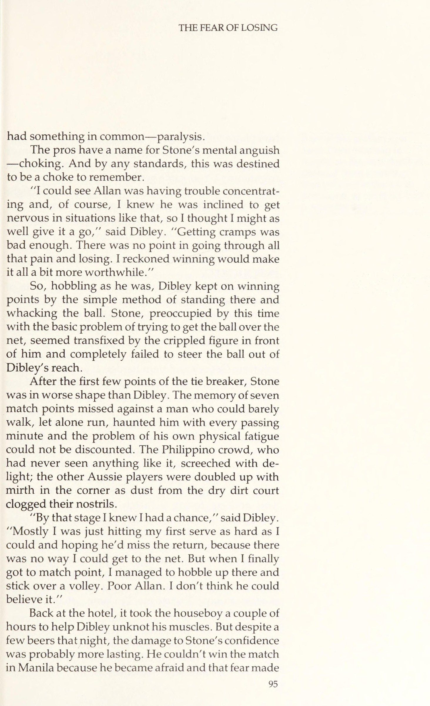
Sức nóng bên trong sân vận động Rizal ở Manila đã lên tới mức ngột ngạt. Không khí cùng những yếu tố thiết yếu khác cho sự sống còn của con người dường như ngày càng trở nên khan hiếm. Lượng oxy ít ỏi còn lại trong bầu không khí đặc quánh kia nhanh chóng bị hút qua những lá phổi làm việc quá sức của 7.000 người Philippines cuồng nhiệt.
CHAPTER 6. THE FEAR OF LOSING The heat inside the Rizal Stadium in Manila had reached suffocation point. Air, and other properties essential to human survival, seemed to be getting scarcer by the minute. What oxygen remained in the turgid atmosphere was rapidly being passed through the over-worked lungs of 7,000 enthusiastic Philip- pinos.
Ở một góc tối của sân vận động, John Newcombe, Ross Case và Geoff Masters chẳng giúp được gì cho tình hình khi cứ cười sằng sặc xen lẫn những lời bình luận “có cánh” dành cho người bạn đồng hương Colin Dibley của họ.
In a corner of the dimly lit stadium, John New- combe, Ross Case and Geoff Masters were not helping the situation by laughing their heads off in between throwing out dubiously helpful comments to their mate, Colin Dibley.
Dù đau đớn, những khía cạnh hài hước của tình huống này là điều không thể phủ nhận. Dibley, một tay vợt Úc cao lớn, góc cạnh, đang đi khập khiễng trên vạch cuối sân, chân phải cứng đờ như một thanh ramrod bị chuột rút, trong khi ở đầu kia của sân, người đồng hương Aussie, Allan Stone, đang dốc sức để kết thúc trận đấu mà lẽ ra anh ấy đã thắng từ vài ván trước.
Although painful, the comic aspects of the situa- tion were undeniable. Dibley, a tall, angular Austra- lian, was limping up and down the baseline, his right leg stiff as a ramrod with cramp, while at the other end of the court his fellow Aussie, Allan Stone, was des- perately trying to close out a match he should have won several games before.
Stone đã vươn lên dẫn trước 5–1 ở ván đấu cuối cùng khi Dibley bắt đầu cảm thấy những cơn chuột rút đầu tiên vốn thường hành hạ anh ấy trong khí hậu nóng. Giờ đây trận đấu đã bước vào loạt tiebreak; bảy điểm quyết định đã bị bỏ lỡ, và cả chân của Dibley lẫn tâm trí của Stone đều chung một tình trạng — tê liệt.
Stone had been advancing steadily to a 5—1lead in the final set when Dibley felt the first twinges of the cramp that often affects him in hot climates. Now the match was in the tie breaker; seven match points had been squandered and Dibley’s leg and Stone’s mind
Các chuyên gia có một cái tên cho nỗi thống khổ về tinh thần ấy — chứng nghẹt thở (choking). Và theo bất kỳ tiêu chuẩn nào, đây hẳn đã được định sẵn là một pha nghẹt thở đáng nhớ.
had something in common—paralysis. The pros have a name for Stone’s mental anguish —choking. And by any standards, this was destined to be a choke to remember.
. . “Bị chuột rút đã tệ lắm rồi. Chẳng có lý do gì để chịu đựng tất cả nỗi đau và mất mát ấy cả. Tôi nghĩ chiến thắng sẽ khiến mọi chuyện trở nên đáng giá hơn một chút.”
“IT could see Allan was having trouble concentrat- ing and, of course, I knew he was inclined to get nervous in situations like that, so I thought I might as well give it a go,” said Dibley. ‘Getting cramps was bad enough.
Thế là, dù trong tình trạng lúng túng, Dibley vẫn tiếp tục giành điểm bằng phương pháp đơn giản là đứng đó và đánh bóng. Stone, lúc này chỉ còn biết loay hoay với việc căn bản là đưa bóng qua lưới, dường như bị khuất phục bởi hình dáng khập khiễng của đối thủ đứng trước mặt và hoàn toàn thất bại trong việc đưa bóng ra khỏi tầm với của Dibley.
There was no point in going through all that pain and losing. I reckoned winning would make it all a bit more worthwhile. So, hobbling as he was, Dibley kept on winning points by the simple method of standing there and whacking the ball. Stone, preoccupied by this time with the basic problem of trying to get the ball over the net, seemed transfixed by the crippled figure in front of him and completely failed to steer the ball out of Dibley’s reach.
Sau vài điểm đầu của loạt tiebreak, Stone lại ở trong tình trạng tồi tệ hơn cả Dibley. Ký ức về bảy điểm quyết định đã bỏ lỡ trước một đối thủ hầu như không thể đi lại, nói gì đến chuyện chạy, cứ ám ảnh anh ta từng phút trôi qua, và vấn đề thể lực mệt mỏi của anh ta không thể bị xem nhẹ. Đám đông người Philippines, những kẻ chưa từng chứng kiến cảnh tượng nào như vậy, rú lên thích thú; những tay vợt Aussie khác thì cúi rạp người vì cười sảng khoái trong góc sân khi bụi từ mặt sân khô bẩn bay vào làm tắc nghẽn lỗ mũi họ.
After the first few points of the tie breaker, Stone was in worse shape than Dibley. The memory of seven match points missed against a man who could barely walk, let alone run, haunted him with every passing minute and the problem of his own physical fatigue could not be discounted. The Philippino crowd, who had never seen anything like it, screeched with de- light; the other Aussie players were doubled up with mirth in the corner as dust from the dry dirt court clogged their nostrils.
“Đến giai đoạn đó tôi biết mình có cơ hội,” Dibley nói. “Chủ yếu là tôi chỉ cố giao bóng lần đầu hết sức mình và hy vọng anh ấy đỡ hỏng, vì tôi chẳng thể lên lưới được. Nhưng cuối cùng, khi đến thời điểm thích hợp, tôi cũng xoay sở tiến lên và vớt được một cú vô-lê. Allan tội nghiệp. Tôi không nghĩ anh ấy có thể tin nổi điều đó.”
“By that stage I knew I had achance,” said Dibley. “Mostly I was just hitting my first serve as hard as I could and hoping he’d miss the return, because there was no way I could get to the net. But when I finally got to match point, I managed to hobble up there and stick over a volley. Poor Allan.
Trở về khách sạn, phải mất vài giờ mới giúp Dibley thư giãn được cơ bắp. Nhưng dù có vài cốc bia đêm đó, tổn thương đối với sự tự tin của Stone có lẽ còn dai dẳng hơn. Anh ấy không thể thắng trận đấu ở Manila vì đã trở nên sợ hãi, và nỗi sợ ấy khiến anh ấy chơi một cách dè dặt, rụt rè.
I don’t think he could believe it.”” Back at the hotel, it took the houseboy a couple of hours to help Dibley unknot his muscles. But despite a few beers that night, the damage to Stone’s confidence was probably more lasting. He couldn’t win the match in Manila because he became afraid and that fear made
Nhưng tại sao một tay vợt lại trở nên lo lắng trước hoặc trong một trận đấu quần vợt? Điều gì có thể xảy ra mà đáng sợ đến thế? Bạn có thể bị thương. Thật dễ hiểu khi bạn lo lắng trước một trận đấu bò tót — nơi bạn có thể bị sừng húc — hay trước một trận quyền anh — nơi bạn có thể bị chảy máu mũi. Nhưng một trận đấu quần vợt thì sao?
him play a tentative game. But why should players become nervous before or during a tennis match? What can happen that is so frightening? You can’t get hurt. It is easy to under- stand why you should be nervous before a bullfight when you might get gored in the stomach, or before a boxing match when you might get your nose smashed to pulp.
Thử Thách Tinh Thần Và Vượt Qua Mặc Cảm Tự Ti
Lý do bất kỳ đối thủ thực thụ nào cũng rơi vào trạng thái căng thẳng cao trước khi bước ra sân trung tâm là bởi một trận đấu quần vợt chính là một bài kiểm tra — một bài kiểm tra tinh thần, nơi bạn dễ bị tổn thương nhất — trong tâm trí. Khía cạnh thể chất ít là vấn đề hơn. Nếu bạn thua vì không đủ sức khỏe, có một giải pháp đơn giản và rõ ràng: hãy ra ngoài và tập luyện chăm chỉ hơn. Nếu bạn thua vì gã hoặc cô kia mạnh hơn và đánh bóng quá uy lực với bạn, thì thật đen đủi. Đó là thực tế của cuộc sống và bạn chẳng thể làm gì nhiều về chuyện đó.
But a tennis match? TESTING YOUR MIND AND OVERCOMING INFERIORITY The reason any true competitor is in a high state of tension before walking on court centers on the fact that a tennis match is a test—a mental test, which in tennis is where you are most vulnerable—in the mind. The physical aspect is less of a problem. If you lose because you are not fit enough, there is a simple and obvious solution: Get out and train harder. If you lose because the other guy or girl is stronger and hits the ball too hard for you, tough luck. It’s a fact of life and you can’t do much about it.
Nhưng nếu bạn lơ là bài kiểm tra tinh thần, nếu bạn không đủ bản lĩnh ở những điểm then chốt, nếu ý chí của bạn sụp đổ khi điểm quyết định xuất hiện, thì chính hình ảnh bản thân bạn phải gánh chịu hình phạt. Nỗi sợ tồi tệ nhất của bạn trở thành hiện thực. Bản lĩnh của bạn bị tì vết. Bạn là một “kẻ thua cuộc”. Và đó là điều đáng sợ. Không có nơi nào để trốn. Khi bạn thua một trận đấu, bạn đã bộc lộ sự yếu kém vì không thể chịu đựng áp lực. Chính nỗi sợ phải đối mặt với sự yếu kém ấy là nguyên nhân gây ra căng thẳng. Tại sao?
But if you flunk the mental test, if you are not tough enough on the big points, if your resolve col- lapses when match point looms, then it is your self- image that takes the punishment. Your worst fears are realized. Your character is flawed. You are a “loser. And that is frightening. There is nowhere to hide. If you end up losing a match you could have won through an inability to handle the pressure, your infe- riority is clearly displayed. The fear of having to face that inferiority is what causes the tension. Why?
Trong xã hội chúng ta, năng lực tinh thần được coi trọng hơn năng lực thể chất. Không có sự kỳ thị nào gắn với bệnh tật. Nhưng bệnh về thần kinh lại là chuyện khác. Nói “Xin lỗi, tôi khập khiễng” dễ dàng hơn nhiều so với “Xin lỗi, tôi ngu ngốc”.
In our society, mental ability is more important than physical ability. There is no stigma attached to physical illness. Mental illness is a different matter. It is easier to say, ‘‘Excuse me, I’m lame,” than, “Excuse me, I’m dumb.
Con người vươn lên trên các loài khác nhờ năng lực tinh thần. Việc để con chó chăn cừu Đức vượt qua mình chẳng hề làm ta hạ thấp giá trị. Nhưng bị chính nó ruồng bỏ ư? Đó lại là chuyện khác. Chúng ta sẵn sàng thừa nhận sự thua kém về thể chất của mình. Thế nhưng, phần lớn cấu trúc mỏng manh của cái tôi con người được củng cố và duy trì dựa trên năng lực tinh thần.
Human beings are elevated above the other spe- cies because of their mental capability. It is not de- grading to be outrun by your German shepherd. But outsmarted by him? That’s quite another matter. We are willing to concede our physical inferiorities. But it is largely upon our mental abilities that the fragile structure of the human ego is bolstered and sustained.
Lời giải thích về nỗi sợ liên quan đến việc thắng hay thua các trận đấu quần vợt, ở một mức độ nào đó, bắt nguồn từ các tác phẩm của Alfred Adler mà chúng tôi đã đề cập trong Chương 2. Về cơ bản, ông tin rằng động lực chi phối của chúng ta là khao khát sức mạnh và sự vượt trội — một thứ động lực được thúc đẩy bởi nhu cầu thoát khỏi cảm giác tự ti sâu sắc.
This explanation of the fear involved in winning or losing tennis matches evolves, in some degree, from the works of Alfred Adler, which we described in Chapter 2. Basically, he felt that our dominant drive was for power and superiority—a drive fueled by the need to escape from deep-seated feelings of in- feriority.
Gắn với chuyện này trong các trận đấu quần vợt, người ta thấy việc thắng hay thua trở thành một phép thử cho sự tự ti. Mỗi khi một người thua, những cảm giác tự ti ấy lại được củng cố. Kết quả đã chứng minh điều đó; bạn vừa thua. Thử tranh cãi để thoát khỏi tình cảnh đó xem!
Relating this to tennis matches, one can see how winning or losing becomes a test of inferiority. Every time a person loses, those feelings of inferiority are reinforced. The result proves it; you just lost. Argue your way out of that one!
Một phần của sự phấn khích mà người ta cảm thấy khi chiến thắng bắt nguồn từ sự thỏa mãn khi biết rằng mình vượt trội hơn ai đó, ít nhất là vào ngày đặc biệt ấy.
Part of the elation one feels from winning is based on the satisfaction derived from knowing that you are superior to someone, at least on that particular day.
Chứng minh sự vượt trội tạo ra rất nhiều căng thẳng. Dù bạn có muốn thừa nhận hay không, cơ hội được chứng minh sự vượt trội là rất quan trọng đối với bạn. Trong một tuần bình thường, hiếm khi có cơ hội nào để bạn có một phép thử rành mạch như vậy về việc mình thua kém hay vượt trội so với người khác như khi bước ra sân quần vợt.
Proving that superiority creates a lot of tension. Whether you want to admit it or not, the chance to prove that superiority is very important to you. There are not many opportunities during the course of a normal week in which you have such a clear-cut test of whether you are inferior or superior to somebody as when you walk on a tennis court.
Quần vợt là một bài kiểm tra, và việc vượt qua hay thất bại ở đó không thể giấu giếm. Trong những lĩnh vực khác, kết quả của nỗ lực có thể bị che lấp. Trong kinh doanh chẳng hạn, thường chẳng có người thắng hay kẻ thua rõ ràng. Kết quả kinh doanh thường không phải là một sự kiện đơn lẻ; chúng là sự tích lũy của vô số quyết định nhỏ được đưa ra qua một khoảng thời gian. Thường chẳng rõ quyết định nào chịu trách nhiệm cho kết quả nào. Hơn nữa, thế giới bên ngoài thực sự không biết chuyện gì đang xảy ra hàng ngày. Việc kinh doanh của Michael — người bạn trẻ làm cho một công ty bảo hiểm ở trung tâm thành phố — tốt hay tệ thế nào? Anh ta trông ăn mặc bảnh bao, sống trong một căn nhà đẹp và lúc nào cũng đủ tiền mua bóng quần vợt. Nhưng có lẽ ông chủ của anh ta lại coi anh ta là kẻ bất tài. Thế giới bên ngoài có lẽ sẽ chẳng bao giờ biết. Số tiền bạn kiếm được là cách bạn giữ tỉ số trong kinh doanh, cũng giống như kết quả trận đấu trong quần vợt. Nhưng có bao nhiêu người muốn công bố một bản sao báo cáo tài chính của mình? Không nhiều. Đây là một chủ đề cực kỳ nhạy cảm, và hầu hết mọi người đều sợ rằng mình làm chưa đủ tốt. Tôi từng nghĩ chẳng ai tiết lộ cho ai biết mình kiếm được bao nhiêu tiền vì sợ thuế vụ hay gì đó. Nhưng không phải vậy. Chủ đề ấy là điều cấm kỵ vì nó tổn thương lòng tự trọng nếu một người làm quá ít. Trong quần vợt bạn không có lựa chọn nào khác; sau khi thua, dù bạn có thích hay không.
Tennis is a test, the passing or failing of which cannot be hidden. In other areas of endeavor results can be obscured. In business, for example, there is often no clear-cut winner or loser. Business results are not generally unitary events. They are an accumula- tion of the results of many small decisions made over a period of time. It is usually not clear which decision was responsible for which result. Moreover, the world at large does not really know what is happening on a day-to-day basis. How well or how badly is business going for Michael, the young fellow who works for the insurance company downtown? He looks well dressed, lives in a nice house and always has enough money to buy tennis balls. But maybe his boss con- siders him an incompetent. The outside world will Part of the elation one feels from winning is based on the satisfaction derived from knowing that you are superior to someone, at least on that particular day. probably never know. The amount of money you make is the way you keep score in business, just as match results are in tennis. But how many people would like to publish a copy of their financial state- ments? Not many. It is a very sensitive area and most people are afraid they are not doing well enough. I used to think nobody told anyone how much money he was making because of the IRS or something. But it’s not so. The subject is taboo because of the loss of self-esteem involved if one is making too little. In tennis you have no choice; after a loss the word is out, whether you like it or not.
Nỗi sợ hãi bắt nguồn từ việc không thể tránh khỏi phải đối mặt với kết quả của phép thử và nguy cơ thất bại. Nó tác động đến mọi tay vợt, dù giỏi hay kém giỏi hơn, dù hay căng thẳng hay điềm tĩnh bên ngoài. Rất ít nhà vô địch từng thể hiện sự uy nghiêm hay điềm tĩnh trên sân hơn Stan Smith. Khi là nhà vô địch Wimbledon và đứng số 1 thế giới vào năm 1971, các đối thủ thường thấy anh ấy cực kỳ tự tin. Gần đây tôi trò chuyện với anh ấy và hỏi liệu trong giai đoạn sự nghiệp cực kỳ thành công ấy anh có từng lo lắng không. “Chắc chắn là tôi đã lo lắng,” anh trả lời, “thường là khi tôi dẫn trước và sắp kết thúc một đối thủ khó nhằn.”
The inevitability of having to face up to the result of the test and the risk that you might fail is what causes the fear. It affects all players, great and much less great, highly strung or outwardly serene. Few champions have displayed a more commanding or serene presence on court than Stan Smith. When he was Wimbledon champion and ranked No. 1 in the world in 1971, opponents used to find him awesomely self-confident. When I spoke to him recently, I asked him if he used to get nervous during this supremely successful period of his career. ‘Sure I got nervous,” he replied, ‘most often when I was ahead and close to finishing off a tough opponent.
Kết liễu đối thủ thật đáng sợ. Tôi thấy hầu hết các tay vợt hàng đầu cũng có cảm xúc tương tự. Chính việc kết thúc một ván hay một trận đấu mới gây ra nhiều lo âu nhất. Được trao điểm quyết định khiến căng thẳng thần kinh hơn nhiều so với việc chỉ đang ở thế điểm quyết định. Nhưng điều đó dường như phi lý. Tại sao bạn phải sợ khi tiến gần đến cú kết liễu? Lẽ ra bạn phải sợ hơn khi đối thủ áp sát mình. Rốt cuộc, khi bạn có điểm quyết định, bạn hoàn toàn có thể đánh rơi vài điểm hay vài ván. Bạn vẫn sẽ trở lại thế cân bằng và có thể thắng từ đó. Nhưng nếu bạn đang ở thế điểm quyết định nghiêng về đối thủ và lại thua nó, thì không còn cơ hội nào nữa.
Finishing off your opponent is frightening. | found that a large majority of top players expressed similar sentiments. It was finishing off a set ora match that created the most anxiety. Being match point up is much more nerve-racking than being match point down. But that does not seem to make sense. Why should you be frightened just as you close in for the kill? You should be more frightened when your oppo- nent is closing in on you. After all, when you are up match point, you can afford to lose a few points or games. You will still only be back to even and can win the match from there. But if you are down match point and lose it, there is no return. I know from my own experience of competing
Tôi biết từ kinh nghiệm bản thân khi cạnh tranh với những tay vợt giỏi nhất thế giới như Ashe, Laver hay Newcombe rằng không gì biến cánh tay cầm vợt của bạn thành đá nhanh hơn là có được điểm quyết định sau một cuộc giằng co dài hơi. Tôi không muốn nhớ mình đã bao nhiêu lần không thể đưa bóng qua lưới với lợi thế giao bóng khi được trao điểm quyết định. Tôi có cảm giác rằng phải lập tức kết liễu đối thủ, kẻo anh ta ngọ nguậy không mất gì và tôi chẳng bao giờ gặp lại điểm quyết định nữa. Ngược lại, khi tôi bị trượt điểm, tôi lại thấy thoải mái hơn và hầu như lúc nào cũng đưa được bóng vào cuộc chơi. Ở giai đoạn ấy tôi hiếm khi mắc lỗi. Tại sao? Bởi vì khi đối thủ của tôi có điểm quyết định, tôi đã, ở một mức độ lớn, chấp nhận thất bại về mặt cảm xúc. Điều đó không có nghĩa là tôi không chiến đấu đến giới hạn khả năng. Tôi đã làm, và về nhiều mặt, còn chiến đấu tốt hơn bất cứ lúc nào trong trận đấu. Nhưng trong suy nghĩ của riêng tôi, tôi chẳng có gì nhiều để mất mà lại có khá nhiều để giành. Nếu tôi thắng, tôi là một anh hùng, nhờ lòng can đảm và những phẩm chất không thể gọi tên, đã xoay sở giật được trận đấu khỏi tay đối thủ. Tôi trở nên tê dại về mặt cảm xúc trước nỗi đau và có cảm giác phi thực tế ở giai đoạn này. Chỉ khi tôi giành được điểm và có thể gượng dậy ngay cả khi dây thần kinh bắt đầu trở lại — đột nhiên tôi sẽ trở lại trong trận đấu, với chiến thắng lại trong tầm tay và áp lực dồn lên.
against the world’s best players like Ashe, Laver or Newcombe that there is nothing that turns your rac- quet arm into jelly quicker than reaching match point after a long, close struggle. I prefer not to remember the number of times I have failed to clear the net with my service return when I have been match point up. I had the feeling that I had to finish my opponent off immediately, lest he wiggle free and I never see match point again. Contrastingly, when I was match point down, I felt looser and was almost always able to put the ball in play. I rarely made mistakes at that stage. Why? Because by the time my opponent had reached match point, I had already, to a large extent, emotion- ally accepted defeat. This did not mean that I did not fight on to the limit of my capabilities. I did, and in many respects, fought better than at any other time in the match. But in my own mind, [had very little to lose and quite a bit to gain. If I won, I was a hero, having, by sheer courage and other indefinable qualities, man- aged to tear the match out of the hands of my oppo- nent. I had a certain emotional numbness to pain anda feeling of unreality at this stage. Only if I were able to win the point and perhaps draw even would my nerves return to life. Suddenly, I would be back in the match, with victory again within my grasp and the pressure on.
Phần lớn chuyện này liên quan đến cấu trúc tuyệt vời của hệ thống tính điểm quần vợt mà tôi sẽ bàn sớm, nhưng quan trọng hơn là thực tế: nỗi lo âu khi bạn nắm điểm quyết định xoay quanh chính bài kiểm tra ấy. Ở giai đoạn này, bạn đã tự dồn mình vào chân tường. Bằng việc có được một điểm chiến thắng, bạn đã chứng minh mình có khả năng thắng trận đấu. Giờ bạn phải làm được điều đó.
Much of this has to do with the superbly con- ceived structure of the tennis scoring system which I will discuss shortly but, more important, the fact of being nervous when you hold match point revolves around the test problem again. At this stage, you have cornered yourself. By arriving within one point of victory, you have proved that you are capable of win- ning the match. Now you must do it.
Nếu bạn đang đấu với Jimmy Connors hay Chris Evert và không nằm trong Top 10 thế giới, bạn sẽ đối đầu với một tay vợt có kỹ năng vượt trội — những cú đánh tốt hơn và kinh nghiệm rộng hơn. Khi thua, bạn hoàn toàn có thể lý giải, và cũng khá đúng, rằng mình đã bị một tay vợt chuyên nghiệp đánh bại và đó chẳng phải là một cuộc cạnh tranh ngang tài.
If you are playing Jimmy Connors or Chris Evert and you are not in the world’s Top 10, you will be up against a player with superior skill—better strokes and wider experience. When you lose, you will be able to rationalize, quite correctly, that you were beaten by an expert player and that it was no contest. Being nervous when you hold match point revolves around the test problem again. By arriving within one point of victory, you have proved you are capa- ble of winning the match. Now you must do it.
Nhiều khả năng bạn sẽ chẳng lo lắng mấy vì thực tế bạn chẳng có hy vọng vượt qua cái vị thế thấp kém đã được định sẵn. Thực sự chẳng có bài kiểm tra tinh thần nào. Thế nhưng, nếu bạn thực sự ngang tài — dù là trước Connors hay Evert —, bạn sẽ chứng minh được, dù có vẻ như không thể thắng. Bằng việc có được điểm quyết định, không thể tranh cãi rằng bạn giỏi ngang bằng, nếu không muốn nói là hơn đối thủ, bất kể tên tuổi hay danh tiếng, vào ngày cụ thể đó. Nhưng nếu, đã có điểm quyết định mà bạn không thể giành chiến thắng, bạn sẽ trượt bài kiểm tra tinh thần. Bạn sẽ chứng minh cho tất cả mọi người thấy rằng mình đã hạ gục đối thủ mà lại chẳng đủ can đảm để kết liễu anh ta.
The chances are that you will not have been very nervous because you had practically no hope of over- coming your pre-established position of inferiority. There really was no mental test. However, if you actu- ally get to match pont—even against a Connors or an Evert—you will have proved, no matter how unlikely it may seem, that you were physically capable of win- ning. By reaching match point, there can be no argu- ment about your being as good, if not better, than your opponent, regardless of name or fame, on that partic- ular day. But if, having reached match point, you cannot clinch the victory, you will have failed the mental test. You will have demonstrated for all the world to see that you had your opponent down and didn’t have the courage to finish him off.
Hệ thống tính điểm càng làm tăng thêm căng thẳng. Cách tính điểm độc đáo trong quần vợt — một chuỗi những trận chiến độc lập được thiết kế tài tình, đánh cho từng game và từng ván — khiến bài kiểm tra trở nên khó khăn hơn. Để thắng một trận đấu quần vợt, bạn phải giành được tối thiểu bốn điểm, và chẳng quan trọng bạn đang dẫn 6–0, 5–0 hay đang bị dẫn 0–6, 0–5. Mỗi game là một cuộc tranh tài độc lập. Dù ban đầu bốn điểm có vẻ không nhiều, nhưng với một đối thủ khó nhằn, kẻ quyết tâm tạo dựng thế trận cho một game cụ thể, thì bốn điểm là một chặng đường dài. Nó giống như đánh nhau từng nhà một trong một cuộc chiến. Dù bạn có thể lực vượt trội, mỗi ngôi nhà vẫn phải được chiến đấu và chiếm lấy riêng rẽ. Một đối thủ ngoan cường có thể khiến bạn khổ sở vì từng điểm.
The scoring system adds to stress. The unique scoring system in tennis—a brilliantly devised series of independent battles fought for games and sets— makes the test even tougher. To win a game in tennis you must win a minimum of four points, and it doesn’t matter whether you are 6—0, 5—0 up or 0-6, 0-5 down. Each game is an independent contest. Although four points may not seem like much at first, against a tough opponent who is determined to make a stand for a particular game, four points is a long way away. It is like house-to-house fighting in a war. Even though you may have superior forces, each house must be fought for and taken individually. A tenacious oppo- nent can make you suffer for each one. And if you should lose momentum, he can, starting at any time, take them all back.
Trong bóng rổ, bóng đá hay bóng đá, bất kỳ đội nào tạo được cách biệt dẫn trước đáng kể đều có lựa chọn kết thúc trận đấu, chơi an toàn và để đồng hồ làm nốt phần còn lại. Miễn là họ không mắc sai lầm ngớ ngẩn nào, thời gian trôi qua đơn giản sẽ tự kết liễu đối thủ. Họ chẳng thực sự phải tự mình giành chiến thắng. Sau khi chiếm ưu thế, họ có thể ngồi chặt chẽ, áp dụng chiến thuật phòng ngự và chờ đợi.
In basketball, football or soccer, any team that establishes a substantial lead has the option of closing the game up, playing safe and letting the clock do the rest. As long as they do not make any stupid mistakes, the simple passage of time will eventually finish off their opponents. They don’t actually have to do the winning themselves. Having occupied one position they can sit tight, adopt a defensive strategy and wait.
Nhưng trong quần vợt, thời gian không liên quan. Trận đấu cứ tiếp diễn và nếu bạn không giành điểm, đối thủ sẽ làm. Và ở đó chứa đựng vẻ đẹp cũng như sự khủng bố vốn có của hệ thống tính điểm quần vợt. Dù bạn dẫn trước cách biệt lớn đến đâu, bạn cũng không bao giờ được an toàn.
But in tennis, time is irrelevant. The match will go on and if you do not take the points, your opponent will. And therein lies the beauty and the inherent terror of the tennis scoring system. No matter how big your lead, you are never safe.
Ngay cả trong bóng bàn, thời gian cũng không liên quan, nhưng hệ thống tính điểm lại khiến bất kỳ ai dẫn trước 20–3 hầu như chắc chắn sẽ thắng, vì tất cả những gì người đó cần là giành thêm một trong 17 điểm tiếp theo. Kẻ đứng sau không được phép mất một điểm nào. Nhưng trong quần vợt, nơi mỗi game độc lập, khoảng cách dẫn trước không bao giờ quá ba điểm trước khi người chơi có thể “có quyền” đánh rơi một điểm. Thực tế, một khi đã cân bằng, anh ấy có thể thua bao nhiêu tùy thích, miễn là không bị tụt lại phía sau. Và khi người chơi đứng sau bắt đầu thắng các game, anh ta sẽ gieo vào đầu đối thủ những hạt giống của sự thất vọng, bực dọc và có thể chỉ là một nỗi sợ hãi.
Even in table tennis, where time is also irrelevant, the scoring system is such that anyone establishing a 20-3 lead is virtually certain of victory, because all he has to do is win one more point out of the next 17. The person who is behind cannot afford to lose one point. But in tennis, where each game is independent, the margin is never more than three points before a player can afford to lose one point. In fact, once he is even, he can lose as many as he likes, as long as he doesn’t get behind by two. And once the player who is behind starts winning games, he will have sown the seeds of frustration, annoyance and maybe just a twinge of fear into his opponent.
Khi bạn ở vị trí có thể kết thúc trận đấu, nguy hiểm lớn nhất là bạn sẽ thay đổi lối chơi vì sợ hãi và lo âu rằng đối thủ bằng cách nào đó sẽ ngọ nguậy. Vấn đề thường gặp là trở nên ngập ngừng và chơi như thể đó là một trận bóng đá mà bạn chỉ cần dừng lại là hết giờ. Bạn chỉ có thể thắng bằng cách tiếp tục tiến lên với nhịp độ của riêng mình, tiếp tục giành điểm. Nhưng bạn phải bám sát phong cách của chính mình. Đánh một cách mù quáng tìm những cú winner trong cơn hoảng loạn để ép chiến thắng cũng tệ như việc đẩy bóng lại và cầu nguyện đối thủ sẽ bỏ lỡ. Đừng để nỗi sợ khiến bạn thay đổi một lối chơi đang thắng.
When you are in position to close out a match, the greatest danger is that you will change your game out of fear and the anxiety that your opponent will some- how wiggle free. The usual problem is becoming ten- tative and playing the match as though it were a foot- ball game in which you could simply stall and run out the clock. You can only win by continuing to move forward at your own pace, to continue winning the points. But you must stick to your own style. Hitting out blindly for winners in a panic-stricken attempt to force victory is as bad as pooping the ball back and praying that your opponent will miss. Don’t let fear induce you to change a winning game.
Dùng một phép so sánh khác, cao trào của một trận đấu quần vợt cũng giống như một trận đấu bò tót. Bạn phải nhập vai một matador. Chừng nào con bò còn đứng trên bốn chân, nó vẫn nguy hiểm — cũng như tay vợt trên lưới vẫn nguy hiểm cho đến khi bạn giành được điểm quyết định. Và khoảnh khắc sự thật — chính là lúc bạn phải vượt qua cặp sừng bằng thanh kiếm của mình — là thời khắc nguy hiểm và đáng sợ nhất. Nhưng không có lối thoát. Con bò đực sẽ không gục ngã trừ khi bạn giết nó. Tương tự trong quần vợt, khi kết thúc, bạn phải gom góp lòng can đảm và sức mạnh tinh thần, rồi làm điều mà bạn có khả năng và đã tự huấn luyện để làm, một cách bình tĩnh và chủ đích.
To use another analogy, the climax to a tennis match is similar to a bullfight. You have to play the part of the matador. As long as the bull is still on his feet, he is dangerous, just as the man across the net is dangerous until you have won match point. And the moment of truth—the instant when you must go in over the horns with your sword—is the most danger- ous and frightening time of all. But there is no way out. The bull will not go down unless you kill him. Similar- In tennis, where each game is independent, the margin is never more than three points before a player can afford to lose one point.
Hãy rèn luyện bản thân trở thành một tay vợt thi đấu khó nhằn... Bạn chỉ học được cách giành chiến thắng bằng cách ra sân và làm điều đó khi những cơn bồn chồn (bướm trong bụng) đã nguôi ngoai. Có một quá trình tôi luyện nhất định diễn ra trong khi thi đấu giải, nhờ đó tay vợt ít bị ảnh hưởng bởi nỗi sợ và sự run rẩy thần kinh hơn. Nếu thiếu điều đó, ngay cả tay vợt nhiều kinh nghiệm nhất cũng sẽ trở về trạng thái ban đầu và, ở lần ra sân đầu tiên, sẽ nghẹt thở y như một người mới.
For the club player to handle the pressure of an important match, he must regularly play matches which mean something. ly in tennis, at the finish you must gather together your courage and mental strength and do what you are capable of and have trained yourself to do, calmly and deliberately. Train yourself to become tournament tough. Just as it is useless for the matador to practice on a card- board bull to lessen his fears of the bull ring, so there is no type of tennis practice that measures up to match play when it comes to the art of winning. You only learn how to win by getting out there and doing it when the chips are down.
Bất cứ khoảng nghỉ nào dài hơn một tháng kể từ các chuyến thi đấu cũng đủ để làm mất đi sự quen thuộc khó nhằn cần thiết cho thói quen chiến thắng. Tôi thấm thía điều này khi thua Ray Moore ở Giải vô địch Tây Nam Thái Bình Dương năm 1970. Vào thời điểm đó, tôi đã nghỉ thi đấu khoảng một năm và thậm chí vài tháng liền không đánh giải địa phương nào. Nhưng tôi đã tập luyện chăm chỉ, giữ được vóc dáng và cứ nghĩ thế là đủ. Như tôi phát hiện ra, nó không phải vậy.
There is a certain hardening process that goes on during tournament play whereby players become less subject to the effects of fear and nerves. Without it, even the most experienced player will return to the circuit and, first time out, will choke like a novice. Anything longer than a month away from the tour is enough to soften up the tough edge needed to acquire the winning habit. I was made painfully aware of this when I lost to Ray Moore in the Pacific South- west Championships in 1970. At the time, I had been off the circuit for about a year and had not even played in local tournaments for some months.
Tôi đã dẫn 5–4 ở ván đầu và bất ngờ bị choáng bởi nỗi kinh hoàng khi nhận ra mình hoàn toàn không biết cách kết thúc ván đấu. Dây thần kinh của tôi sụp đổ hoàn toàn. Thay vì tự động đánh từng điểm, để những phản ứng theo bản năng nắm quyền như khi một tay vợt thi đấu khó nhằn vẫn làm một cách tự nhiên, tôi bắt đầu lo lắng và bối rối. Chẳng có gì diễn ra tự động và tôi chẳng còn gì để bám vào. Tôi mất ván đầu và sau đó sụp đổ hoàn toàn.
But I had been training hard, was in top physical shape, and assumed this was enough. As I discovered, it was not. I led 5—4 in the first set and was suddenly over- come with the horror that I had absolutely no idea how to finish off the set. My nerves failed me completely. Instead of playing each point automatically, allowing instinctive reactions to take over as they do naturally when one is tournament tough, I started worrying and floundering around.
Quá trình tương tự diễn ra ở mọi trình độ. Để một tay vợt câu lạc bộ xử lý được áp lực của một trận đấu quan trọng, anh ta phải thường xuyên chơi những trận đấu có ý nghĩa nào đó. Anh ta phải làm quen với những nỗi sợ và lo âu nảy sinh trong các trận đấu ấy. Chỉ sau đó anh ta mới học được cách kiểm soát cơ thể khi bị căng thẳng. Quá trình học tập này, cũng như bất kỳ quá trình học nào khác, đòi hỏi sự luyện tập.
Nothing came automatically and [had nothing to fall back on. I lost the first set and then collapsed completely. The same process occurs at all levels. For the club player to handle the pressure of an important match, he must regularly play matches which mean some- thing. He must become accustomed to the fears and anxieties which arise during the course of these
Hơn nữa, thông qua một quá trình gọi là “giải mẫn cảm”, những cảm xúc đáng sợ này có xu hướng giảm bớt so với lúc đầu chúng mới trải nghiệm. Các nhà tâm lý học thường dùng quá trình này khi cố gỡ bỏ cho bệnh nhân những nỗi ám ảnh. Lấy ví dụ, chứng sợ nhện (arachnophobia). Đầu tiên, nhà trị liệu đưa bệnh nhân vào một căn phòng, ở khoảng cách xa, nơi anh ta có thể nhìn thấy một con nhện trong hộp kính. Sau đó, ông ấy đẩy hộp lại gần hơn. Bệnh nhân thấy chẳng có chuyện kinh khủng nào xảy ra và mình khá an toàn. Nhà trị liệu đưa hộp lên bàn nơi bệnh nhân đang ngồi. Vẫn chẳng có gì xảy ra. Dần dần, bệnh nhân học cách nhìn mà không sợ, và cuối cùng, từ từ, thậm chí có thể chạm vào con nhện. Anh ấy đã trở nên “giải mẫn cảm”.
matches. Only then can he learn to control his body while under stress. This learning process, which is like any other learning process, takes practice. Moreover, through a process known as “‘desensi- tization,”’ these fearful emotions tend to decrease the more they are experienced. Psychololgists often use this process when they try to rid their patients of phobias. Take, for example, arachniphobia—the fear of spiders. First, the therapist puts his patient in a room where, ata distance, he can see a spider ina glass container. Then he moves the container nearer. The patient sees that nothing horrible happens and that he is quite safe. He moves the container onto the table at which the patient is sitting.
Quá trình tương tự cũng phát huy tác dụng với cảm xúc trên sân quần vợt. Nếu bạn có một giải đấu câu lạc bộ quan trọng sắp tới, hãy thử chơi vài trận có ý nghĩa trước đó. Đặt cược nhỏ hoặc thi đấu vì một điều gì đó để tăng áp lực. Khi ấy, giải đấu sẽ ít gây sốc cho tâm lý của bạn hơn.
Still nothing happens. Little by little, the patient learns to look without fear and, eventually and gradually, even to handle the spider. He has become “‘desensitized.”’ The same process works with emotions on a ten- nis court. If you have an important club tournament coming up, try to play some meaningful matches be- forehand.
Làm thế nào để vượt qua nỗi sợ nghẹt thở. Trong trận đấu với Ray Moore, tôi đã bị nghẹt thở. Đây không phải là lần đầu tiên. Ngay cả khi thi đấu khó nhằn, tôi cũng từng nghẹt thở nhiều lần trong những trận đấu sít sao. Những cơn thắt lại này không làm tôi mất các trận đấu, mà chỉ mất vài điểm. Đôi khi tất cả các tay vợt hàng đầu đều nghẹt thở. Tôi đã thấy Ashe, Laver, Connors và thậm chí cả Borg làm điều đó rất tệ. Nó thường chẳng tốn kém gì cho trận đấu của họ. Khi nó gây ra vấn đề cho người chơi, thì chính sự nghẹt thở không phải là vấn đề, mà là nỗi sợ bị nghẹn như một dấu hiệu của sự yếu đuối cá nhân.
Make a small bet or play for something to increase the pressure. Then the tournament will come as less of a shock to your psyche. How to overcome the fear of choking. In my match with Ray Moore, I choked and choked badly. It was not the first time. Even when I was tournament tough, I choked on some occasions in close matches. These chokes did not cost me the matches, only some points. All top players choke sometimes. I have seen Ashe, Laver, Connors and even Borg do it badly. It does not usually cost them their matches. When it does cause problems for players, it is not the choke itself that is the problem, rather the fear of the choke as a sign of personal weakness.
Vài năm trước, tôi thường tập nhiều lần trong tuần với một tay vợt ngang cơ về khả năng đánh bóng, nhưng anh ấy hiếm khi thắng. Anh ấy từng đánh quần vợt đại học cho một trường lớn, đánh bóng tốt, nhưng chơi ở vị trí thấp trong đội và chưa bao giờ thắng ai đáng chú ý. Vấn đề của anh ấy là sự bất an cá nhân cực độ. Anh ta có tính khí hung bạo, càng dễ bùng nổ khi trận đấu tới gần. Anh ta cứ mãi tìm cớ và lý do cho việc mọi chuyện không theo ý mình. Nhưng thú vị nhất là phản ứng của anh ấy ở những điểm trong trận đấu của chúng tôi mà anh ấy đang ở thế có thể giành chiến thắng. Nếu ở giai đoạn ấy anh ấy lo lắng và bỏ lỡ một hai cú bóng, anh ấy sẽ phát điên. Anh ta trở nên cáu kỉnh và mắng mỏ bằng mọi cách có thể hiểu nổi về việc là một tay vợt mà không thể thắng. Từ giai đoạn đó, anh ấy đã kết thúc — và không phải sự nghẹt thở đã kết thúc anh ấy, mà là phản ứng của anh ấy với nó, nỗi sợ của anh ấy về điều đó. Như thể anh ta nhặt phải một con rắn chuông. Cơn bùng phát thần kinh thoáng qua của anh ấy đã giải phóng một sự bất an và sợ hãi tiềm ẩn trong cơ thể, hoàn toàn không tương xứng với việc mất vài điểm. Người ta phải thấu hiểu thực tế rằng mọi người đều nghẹt thở lúc này hay lúc khác, ngay cả những người như McEnroe và Evert. Nhưng các chuyên gia có sự tự tin để thừa nhận điều đó với chính mình và chấp nhận nó như một trạng thái bình thường của con người. Họ không để nó làm mình dao động. Họ cứ cố gắng, biết rằng nếu làm thế, dây thần kinh thường sẽ lắng xuống và cơ bắp thư giãn. Đôi khi họ nhầm và thua. Khả năng ấy được người thực tế và vững vàng chấp nhận.
A few years ago, I used to practice several times a week witha player who was close to me in shotmaking ability, but who rarely won. He had played college tennis for a major university, hit the ball well, but played low on the team and never beat anyone of note. Everyone chokes at some time or another, but the pros have the self- confidence to admit it and accept it as a normal human condition. His problem was extreme personal insecurity. He had a violent temper which became more likely to flare the closer the match got. He was forever making excuses and finding reasons why things were not going his way. But the most interesting thing was his reaction to the point in our match at which he was in position to win. If, at this stage, he got nervous and missed a shot or two, he went wild. He became livid and berated himself in every conceivable way about being a choker and unable to win. From that stage on, he was fin- ished, and yet it was not the choking itself that had finished him. It was his reaction to it—his fear of it. It was as if he had picked up a rock and seen a rattle- snake. His momentary attack of nerves had unleashed an underlying body of insecurity and fear which was completely out of proportion to the loss of a few points. One has to come to grips with the fact that everyone chokes at some time or another, even people like McEnroe and Evert. But the pros have the self- confidence to admit it to themselves and accept it as a normal human condition. They don’t allow it to shake them. They just keep trying, knowing that if they do, their nerves will usually settle down and their muscles will relax.
Tôi đã không thể thoát khỏi những dây thần kinh suy sụp đã làm hỏng trận đấu của mình trước Ray Moore ở giải Tây Nam Thái Bình Dương ấy. Nhưng tuần sau, tôi đã tiến bộ. Một điều tương tự cũng xảy ra với Allan Stone ở Manila.
Sometimes they are wrong and they lose. That possibility is acceptable to the realistic and stable person. I was not able to extricate myself from the nerves that collapsed my game against Ray Moore in that Pacific Southwest tournament.
Trong trận đấu đặc biệt với Colin Dibley, Stone đã bị mắc vào mạng lưới nỗi sợ hãi vốn lan tỏa đến tất cả chúng ta mỗi khi chiến thắng đến gần. Anh ta có thể đã may mắn và thoát được. Nhưng Dibley lại là kiểu người thấu hiểu sự tự do ấy, như Kris Kristofferson từng viết, “chỉ là một từ khác cho việc chẳng còn gì để mất.” Trong khi Stone bị kẹt trong sự rối loạn của mình, Dibley đã tiến hành chứng minh rằng thái độ tinh thần đúng đắn giành chiến thắng các trận đấu quần vợt — ngay cả khi bạn hầu như không thể đi bộ.
But the following week, I improved. A similar thing happened to Allan Stone in Manila. In that particular match against Colin Dibley, Stone was caught in the web of fear that is spun for all of us whenever victory approaches. He might have been lucky and escaped. But Dibley is just the sort of guy to recognize that freedom, as Kris Kristofferson wrote, “is just another word for nothing left to lose. While Stone was trapped in his confusion, Dibley proceeded to prove that the right mental attitude wins tennis matches—even when you can barely walk.
Phần VIII: Phá Vỡ Lớp Khiên Tinh Thần Của Đối Thủ
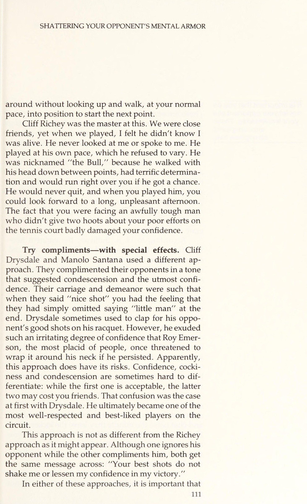
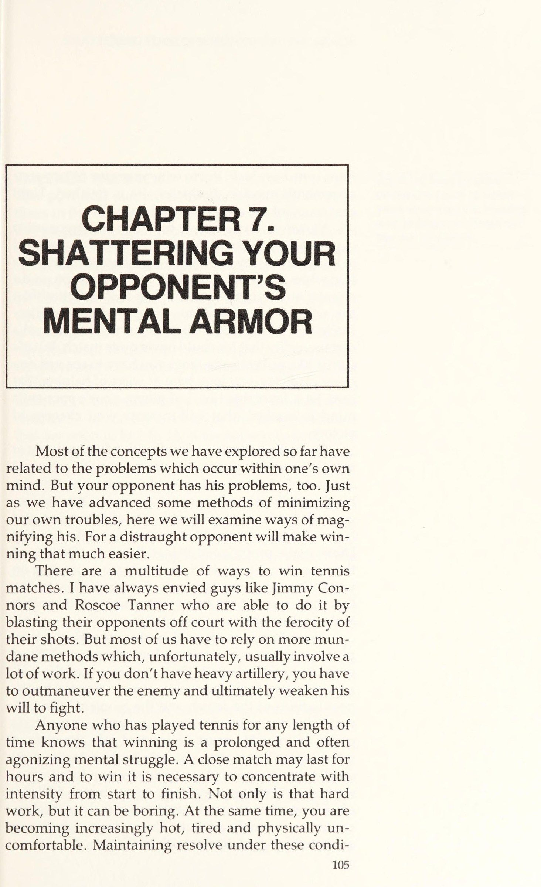
Hầu hết các khái niệm chúng ta đã khám phá cho đến nay đều liên quan đến những vấn đề nảy sinh trong tâm trí của một người. Nhưng đối thủ của bạn cũng có những rắc rối của anh ấy. Cũng như chúng ta đã nêu lên một số phương pháp để giảm thiểu rắc rối của chính mình, ở đây chúng ta sẽ xem xét những cách để làm trầm trọng thêm rắc rối của anh ấy. Một đối thủ quẫn trí sẽ khiến chiến thắng dễ dàng hơn nhiều.
CHAPTER 7. SHATTERING YOUR OPPONENT’S MENTAL ARMOR Most of the concepts we have explored so far have related to the problems which occur within one’s own mind. But your opponent has his problems, too. Just as we have advanced some methods of minimizing our own troubles, here we will examine ways of mag- nifying his. For a distraught opponent will make win- ning that much easier.
Có vô số cách để thắng các trận đấu quần vợt. Tôi luôn ghen tị với những kẻ như Jimmy Connors và Roscoe Tanner, những người có thể làm điều đó bằng cách thổi bay đối thủ ra khỏi sân bằng sự hung hãn của những cú đánh. Nhưng hầu hết chúng ta phải dựa vào những phương pháp tầm thường hơn, và thật không may, thường đi kèm với rất nhiều công sức. Nếu bạn không có pháo hạng nặng, bạn phải mòn đối thủ và cuối cùng làm suy yếu ý chí chiến đấu của anh ta.
There are a multitude of ways to win tennis matches. I have always envied guys like Jimmy Con- nors and Roscoe Tanner who are able to do it by blasting their opponents off court with the ferocity of their shots. But most of us have to rely on more mun- dane methods which, unfortunately, usually involve a lot of work. If you don’t have heavy artillery, you have to outmaneuver the enemy and ultimately weaken his will to fight.
Bất cứ ai đã chơi quần vợt một thời gian đều biết chiến thắng là một cuộc đấu tranh tinh thần kéo dài và thường đau đớn. Một trận đấu sít sao có thể kéo dài hàng giờ, và để thắng, bạn phải duy trì sự tập trung với cường độ từ đầu đến cuối. Nó không chỉ là công việc vất vả, mà còn có thể nhàm chán. Đồng thời, bạn ngày càng trở nên nóng nảy, mệt mỏi và khó chịu về thể chất. Duy trì sự kiên quyết trong những điều kiện ấy không phải là nhiệm vụ dễ dàng, nhưng để thắng, bạn buộc phải làm thế. Khi ý chí của đối thủ tan rã, anh ta coi như xong. Cho đến lúc đó, anh ta luôn có cơ hội.
Anyone who has played tennis for any length of time knows that winning is a prolonged and often agonizing mental struggle. A close match may last for hours and to win it is necessary to concentrate with intensity from start to finish. Not only is that hard work, but it can be boring. At the same time, you are becoming increasingly hot, tired and physically un- comfortable. Maintaining resolve under these condi- tions is no easy task, but to win, you must. When your opponent's resolve dissipates, he is finished. Until that moment, he always has a chance.
Thế nhưng, đối thủ của bạn cũng đang gặp khó khăn tương tự mà bạn không hay biết. Tôi luôn thấy khó hình dung nổi rằng đối thủ của mình có thể sẵn sàng chịu thua khi cơ thể tôi đã kiệt sức và những thứ như tắm rửa, đồ uống bắt đầu hấp dẫn hơn chiếc cúp chiến thắng. Dù tôi hiểu bằng lý trí rằng anh ta cũng mệt như tôi, nỗi đau của tôi lại có một thực tại mà anh ta không bao giờ sánh kịp. Nhưng nó hơi giống poker: đôi khi bạn phải xem thêm một lá bài nữa. Chúng ta sẽ xem xét những cách giúp lá bài ấy trở thành một lợi thế — tạo cho đối thủ một cú “nudge” (thúc đẩy nhẹ) về mặt tâm lý sẽ tăng cơ hội chiến thắng của bạn.
However, unbeknown to you, your opponent is experiencing similar difficulties. I always found it hard to imagine that my opponent might be getting ready to fold when my own body ached with exhaustion, anda shower and a drink were starting to look better than the winner’s trophy. Even though I knew intellec- tually that he must be as tired as I, my own pain had a certain reality that his could never quite match. But it’s a little like poker: Sometimes you have to see just one more card. We will look here at ways of helping that card be a favorable one—of giving your opponent’s mind a “‘nudge”’ that will increase your chances of victory.
Mỗi tay vợt bắt đầu một trận đấu với một lượng dự trữ tinh thần hữu hạn, cũng như anh ta bắt đầu với một lượng dự trữ thể lực giới hạn. Rất nhiều trận đấu đã được thắng bằng cách làm cạn kiệt đối thủ. Bạn giữ được vóc dáng, chạy quanh với anh ấy suốt cả buổi chiều và hy vọng anh ấy sẽ mệt trước bạn. Solomon và Dibbs kiếm sống khá tốt theo cách ấy. Phần còn lại của các chuyên gia cũng dựa vào nó ở một mức độ nào đó, tùy thuộc vào những vũ khí khác mà họ có. Nhưng rất ít tay vợt nhận ra rằng họ phải bắt đầu từ đầu trận đấu để rút cạn đối thủ về mặt tinh thần.
Each player begins a match with a finite amount of mental reserves, just as he starts out with a limited amount of physical reserves. Many matches are won by physically exhausting one’s opponent. You get into good shape, run around with him all afternoon and hope that he gets tired before you do. Solomon and Dibbs make pretty good livings this way. The rest of the pros also rely on it to some extent, depending on what other weapons they have. But few players realize that they must set out from the beginning of the match to drain their opponents mentally.
Làm thế nào để bạn thực hiện điều đó, khi áp lực tinh thần không rõ ràng như áp lực thể chất? Có nhiều phương pháp, và nếu bạn nắm được khái niệm này, bạn có thể tự ứng biến tùy theo đặc thù của trận đấu và thời điểm. Mục tiêu cuối cùng là thuyết phục đối thủ rằng anh ta sẽ thua. Anh ta phải rơi vào trạng thái tâm trí mà ở đó anh ta thấy vô vọng khi chiến đấu. Những tay vợt giải đấu hàng đầu có khả năng phục hồi tinh thần rất lớn. Họ có thể vật lộn hàng giờ, và việc rút cạn dự trữ tinh thần của họ là vô cùng khó khăn. Mặt khác, tay vợt câu lạc bộ trung bình không có khả năng phục hồi như thế.
How do you go about this, since applying mental pressure is not as obvious as physical pressure? There are many methods and, if you are aware of the con- cept, you can improvise your own as dictated by the peculiarities of the match and the moment. The ullti- mate objective is to convince your opponent that he is going to lose. He must be worked into the state of mind where he emotionally feels it is hopeless to fight on. Top tournament players have tremendous mental resiliency. They are capable of struggling on for hour after hour, and the task of draining their mental re- serves is extremely difficult. The average club player, on the other hand, has no such resiliency.
Hãy Làm Chậm Nhịp Độ
Một phương pháp hữu hiệu là tận dụng những khoảng thời gian trong trận đấu khi đối thủ chịu áp lực tinh thần nhiều hơn bạn. Vào những lúc đó, hãy làm chậm nhịp độ trận đấu để anh ta bị giữ trong căng thẳng ấy lâu nhất có thể. Thời điểm lý tưởng để làm điều này là khi đối thủ đang dẫn trước và muốn kết thúc ván hay trận đấu. Theo nguyên tắc chung, người dẫn trước chịu nhiều áp lực hơn kẻ bám đuổi. Điều này có vẻ nghịch lý, nhưng vẫn đúng. Kẻ dẫn trước có xu hướng trở nên bảo thủ và cố giữ vững vị thế, biết rằng nếu trận đấu cứ diễn ra như thế, anh ta sẽ ra về với tư cách người chiến thắng. Anh ấy thậm chí có thể bắt đầu hình dung sự ngọt ngào của chiến thắng và thưởng thức những lời chúc mừng sắp tới. Anh ta không muốn bất cứ điều gì thay đổi, nhưng trong tiềm thức vẫn lo ngại rằng điều đó sẽ xảy ra. Anh ta nghi ngờ rằng mình ở trên sân càng lâu, càng có nhiều khả năng có chuyện không ổn. Anh ấy không muốn chờ phần thưởng của mình lâu hơn mức cần thiết. Anh ấy cảm thấy áp lực vì sợ bạn sẽ ngọ nguậy. Làm chậm trận đấu sẽ khiến anh ta khổ sở. Hãy giữ anh ta trên ghế nóng càng lâu càng tốt. Với anh ta, nó sẽ giống như một sự vĩnh cửu.
SLACKEN THE PACE One powerful method is to take advantage of those times in the match when your opponent is under more mental pressure than you. At those times, slow down the pace of the match, so that he remains under this strain as long as possible. An ideal time to do this is when your opponent is leading and is eager to finish off the set or the match. As a general rule, the player who is ahead is under more pressure than the one who is behind. This may appear paradoxical, but is true nevertheless. The front-runner tends to become con- servative and tries to hang onto his lead, knowing that if the match continues to progress as it has, he will walk off a winner. He may even begin to anticipate the sweetness of victory and savor the congratulations that are soon to be his. He does not want anything to change but subconsciously fears that it will. He sus- pects that the longer he stays out there, the more likely it is that something will go wrong. He does not want to wait for his prize any longer than he has to. He feels pressure because he is afraid you will wiggle loose. Slowing the match down will make him suffer. Keep him in the hot seat as long as possible. It will seem like an eternity to him. I must distinguish carefully here between stalling and slowing down the pace of the match.
Tôi phải phân biệt cẩn thận ở đây giữa việc trì hoãn và làm chậm nhịp độ trận đấu. Tôi không ủng hộ cách tiếp cận của Nastase. Anh ta gây ra sự hỗn loạn hoàn toàn, và mọi người muốn giết anh ta. Thay vào đó, tôi đề nghị siết chặt vòng kim cô quanh trán đối thủ bạn một cách gần như thăng hoa. Dù thế nào, chiến thuật này không vi phạm nghi thức và đạo đức của trò chơi — đừng đứng quanh buộc dây giày, làm mình làm mẩy rồi gây chiến với đối thủ. Hãy tận dụng thực tế rằng tất cả tay vợt đều chơi theo nhịp độ riêng và không thoải mái khi phải chơi ở nhịp độ khác. Trong phạm vi thời gian và luật lệ cho phép, bạn nên tiến hành chậm nhất có thể. Đối thủ của bạn sẽ thấy khó chịu trong một thời gian dài, mà chẳng biết tại sao.
I am not advocating the Nastase approach. He causes complete chaos, and people want to kill him. Rather, Iam sug- gesting an almost subliminal tightening of the tongs around your opponent’s forehead. Under no circum- stances is the strategy to disobey the etiquette and morality of the game by standing around tying your shoes, stalling and starting a war with your opponent. But do take advantage of the fact that all players play at their own pace and are uncomfortable having to play at any other pace. Within the allowable time and rules you should proceed as slowly as possible. Your oppo- nent should feel uncomfortable for a good long time, but not know why. Let us analyze in detail what can happen if your An ideal time to slow down the pace is when your opponent is leading and is eager to finish off the set or match.
Hãy để tôi phân tích chi tiết những gì có thể xảy ra nếu đối thủ vượt lên dẫn trước ngay từ đầu ván đấu, trước giờ nghỉ giao bóng. Cá nhân tôi chẳng bao giờ thực sự bận tâm khi bị dẫn trước ở thời điểm ấy. Dù tất nhiên tôi muốn dẫn trước, tôi xem đây là cơ hội để tác động vào tâm trí đối thủ. Đầu tiên, tôi biết anh ấy sẽ bảo vệ ván giao bóng này một cách ghen tị và ấp nó như một con gà mái, cố nở nó thành một ván thắng. Anh ấy sẽ nỗ lực và tập trung rất chăm chỉ mỗi khi giao bóng, vì sợ lợi thế của mình sẽ biến mất. Cùng lúc, anh ấy có xu hướng đánh giảm hiệu quả khi đối mặt cú giao bóng của tôi, khiến những game này dễ dàng cho tôi cả về thể chất lẫn tinh thần.
lam not advocating the Nastase approach; do not stall. Just prepare your- self more deliberately than usual and make your opponent sweat. opponent gets ahead by a service break early ina set. I personally never really minded getting behind at this juncture. While, of course, | would have rather been ahead, I viewed this as an opportunity to work on my opponent’s mind. First, I knew he would guard this service break jealously and sit on it like a mother hen, trying to hatch it into a set. He would work and con- centrate very hard every time he served, lest his ad- vantage slip away. At the same time, he would tend to lapse on my serve, making these games easy for me physically and mentally.
Việc giữ vững một ván giao bóng suốt toàn bộ ván đấu là một nhiệm vụ khó khăn ngay cả trong hoàn cảnh thuận lợi nhất. Và nó có thể còn khó hơn thế nữa. Hãy chắc chắn đi chậm giữa các điểm và dành thời gian hợp lý giữa các game. Hãy tự cho mình thời gian để sẵn sàng giao bóng hoặc đỡ bóng. Đừng cuống quýt, chỉ cần chuẩn bị một cách có chủ ý hơn bình thường và khiến anh ấy đổ mồ hôi. Những game ấy sẽ hút rất nhiều của anh ta. Nếu bạn bằng cách nào đó kịp ghi điểm muộn trong ván, bạn sẽ không chỉ là quân cờ; bạn sẽ vươn lên dẫn trước. Bạn sẽ có một ván tương đối thoải mái về mặt tinh thần, vì trọng tâm chính của anh ấy sẽ là giữ ván giao bóng của riêng mình thay vì bẻ gãy của bạn. Trong khi đó, anh ta sẽ tiêu tốn năng lượng tinh thần khổng lồ để cố dẫn trước bạn. Khi đà thay đổi, tất cả những điều này sẽ chẳng còn nghĩa lý gì. Anh ta sẽ mất tinh thần và bạn sẽ có mọi cơ hội để nhanh chóng rời sân với chiến thắng.
Hanging onto a service break for an entire set is an arduous task at the best of times. And it can be made more so. Make sure to walk slowly between points and take as much time as is reasonable between games. Take your time getting ready to serve or re- ceive serve. Do not stall, just prepare yourself more deliberately than usual and make him sweat. The games will take a tremendous toll from him. If you should somehow manage to even the score late in the set, you will not just be even; you will be ahead. You will have had a relatively relaxed set mentally, since his major focus will have been on holding his own serve rather than breaking yours. Meanwhile, he will have expended tremendous mental energy trying to stay ahead of you. When the momentum changes, all this will have been for nothing. He will be demoralized and you will have every opportunity to quickly run out the set. But even if you should lose the set, the extra strain on your opponent will pay dividends if the match lasts a long time.
Nhưng ngay cả khi bạn có thua ván đi nữa, sự căng thẳng cộng thêm mà bạn tạo ra cho đối thủ sẽ trả cổ tức nếu trận đấu kéo dài. Tâm trí con người không có khả năng vô tận để chịu đựng căng thẳng. Một hai giờ sau, tiếng ồn nền, gió hay một pha bắt lỗi sai sẽ gây tổn hại nhiều hơn cho những dây thần kinh bị sờn của anh ta so với bình thường. Chẳng thành vấn đề khi anh ta gục ngã, chỉ là rốt cuộc anh ta cũng gục ngã mà thôi.
The human mind does not have endless capacity to withstand stress. An hour or two later, background noise, wind or a bad call will cause much more damage to his frayed nerves than it would have otherwise. It does not matter when he folds, only that he eventually does fold. Finally, the slowdown may have an important benefit above and beyond draining your opponent mentally. When you are losing, any change in rhythm
Cuối cùng, sự chậm lại còn có một lợi ích quan trọng, vượt ra ngoài việc rút cạn tinh thần đối thủ. Khi bạn đang thua, bất kỳ thay đổi nào về nhịp điệu và khuôn mẫu cũng là lợi thế của bạn. Nếu bạn để trận đấu trôi qua suôn sẻ như hiện tại, bạn nhiều khả năng sẽ thua. Nếu bạn chậm lại, bạn có cơ hội tập hợp lại và chơi tốt hơn. Cùng một logic, mọi thay đổi sẽ phá vỡ nhịp điệu của đối thủ, thay đổi dòng chảy trận đấu và buộc anh ta phải suy nghĩ. Với chút may mắn, anh ta có thể bắt đầu lo lắng, thay đổi lối chơi — có lẽ tệ hơn — và cuối cùng thổi bay luôn sự dẫn dắt của mình. HÃY TỰ VẤN SỰ TỰ TIN CỦA BẠN. Cách thứ hai để làm suy yếu tinh thần đối thủ là tấn công vào hình ảnh bản thân của anh ta. Nói chung, bạn phải nhớ rằng mỗi người mang ra sân quần vợt toàn bộ sự cấu tạo tâm lý “thật” của mình. Bằng cách hiểu rõ hơn một số yếu tố chủ chốt trong cấu tạo ấy, bạn có thể học cách dùng chúng để giúp thắng các trận đấu quần vợt. Trên hay ngoài sân quần vợt, hình ảnh bản thân của chúng ta chủ yếu được định hình bởi phản hồi và thông tin mà người khác cung cấp cho mình. Họ liên tục phản ứng và qua đó bộc lộ điều họ nghĩ về chúng ta. Những đánh giá ấy, nhìn chung, được truyền đi không lời, và liên quan đến mọi năng lực cũng như đặc điểm của ta, cả tinh thần lẫn thể chất. Chúng được ghi nhận và cân nhắc rất nhiều trong việc tự đánh giá bản thân. Về cơ bản, người khác nghĩ gì về bạn, thì bạn nghĩ về chính mình.
and pattern is to your advantage. If you allow the match to go along as smoothly as it is, you are likely to lose. If you slow down, you have a chance to gather yourself together and play better. By the same token, any change will disrupt your opponent’s rhythm, alter the flow of the match and cause him to think. With any luck, he may start to worry, change his game, prob- ably for the worse, and end up blowing his lead. ASSAULT HIS SELF-IMAGE. A second way to weaken your opponent mentally is to mount an assault on his self-image. In general, you must keep in mind that a person brings with him to the tennis court all of his “real’’ world psychological makeup. By better understanding some of the more important factors in this makeup, you can learn to use them to help win tennis matches. On or off the tennis court, our self-image is largely determined by feed- back and information given to us by other people. They constantly react and thereby reveal what they think of us. These evaluations are, by and large, trans- mitted without words, and relate to our every ability and trait, both mental and physical. They are noted and weigh heavily in our own self-evaluations. Basi- cally, what other people think of you, you think of yourself. Suppose, for example, that people often appear uninterested when you talk.
Giả sử, chẳng hạn, mọi người thường tỏ ra không quan tâm khi bạn nói chuyện. Họ có thể liếc đi trong lúc trò chuyện, quên những gì bạn nói, hoặc hướng cuộc nói chuyện ra xa bạn khi bạn ở trong một nhóm. Bạn sẽ phản ứng thế nào? Nhiều khả năng bạn sẽ tự ti. Bạn có thể kết luận rằng mình đần độn hoặc không hấp dẫn, hay cả hai. Nhưng, dù thế nào, nếu chuyện này kéo dài một thời gian, bạn sẽ bị ảnh hưởng sâu sắc. Trên thực tế, bất kể sự thật là gì, chúng ta được huấn luyện để chấp nhận như một thực tế sự tích lũy những đánh giá của người khác về mình.
They may glance away during conversations, forget what you say or direct their conversations away from you when you are ina group. How would you react? You would probably be debilitated. You might conclude that you are dull or unattractive or both. But, in any case, if this went on for any length of time, you would be deeply affected. In fact, whatever the truth may be, we are trained to accept as reality the accumulation of other people’s evaluations of us. Similarly, on the tennis court, your opponent's self-image as a tennis player will be affected by your attitude toward him. If you fear him, he will feel
Tương tự, trên sân quần vợt, hình ảnh bản thân của đối thủ với tư cách một tay vợt sẽ bị ảnh hưởng bởi thái độ của bạn với anh ta. Nếu bạn sợ anh ta, anh ta sẽ cảm thấy mạnh mẽ. Nếu bạn coi thường anh ta, anh ta sẽ thấy không chắc chắn. Nếu bạn tôn trọng anh ấy, anh ấy sẽ cảm thấy tự tin. Do đó, bạn phải cẩn thận, kẻo lại cung cấp cho đối thủ đạn dược tâm lý để dùng chống lại mình. Mục tiêu của bạn làm suy yếu sự tự tin của anh ấy, và bạn phải quên điều đó đi.
There are definite written and unwritten codes of behavior in tennis, but within these it is legitimate to try and debilitate your opponent in every way. strong. If you disdain him, he will feel uncertain. If you respect him, he will feel confident. You must be careful, therefore, lest you supply your opponent with psychological ammunition to be used against you. Your objective is to undermine his confidence, and you mustn’t forget it.
Một lần nữa, hãy để tôi nhấn mạnh rằng một trận đấu quần vợt không hề giống hệt một cuộc chiến đường phố. Có những quy tắc ứng xử bằng văn bản và bất thành văn mà chúng ta phải tuân theo. Nhưng trong những khuôn khổ ấy, việc tìm cách làm suy yếu đối thủ bằng mọi cách là hoàn toàn hợp lệ. Đó là bản chất của trò chơi. Bạn không thể tách rời các khía cạnh tinh thần và thể chất. Làm cho đối thủ thấy thoải mái sẽ khiến anh ta chơi tốt hơn và chiến đấu lâu hơn, dù bạn làm thế bằng cách vuốt ve cái tôi của anh ta hay nhường cho anh ta những cú đánh sở trường. Một thái độ vừa chấp nhận được vừa hiệu quả là khi bạn cho đối thủ thấy rằng bạn kỳ vọng sẽ đánh bại anh ta bất kể anh ta làm gì. Hơn nữa, bạn muốn anh ấy cảm thấy bạn không sợ trận đấu hay năng lực của anh ấy — rằng bạn chẳng đánh giá cao những nỗ lực tốt nhất của anh ấy. Bởi vậy, coi thường anh ta, bạn khiến anh ta thấy yếu đuối. Khi thuyết phục anh ta những điều ấy, ranh giới bạn không được vượt qua là dùng lời nói hay hành động để tấn công anh ta. Nastase thường vượt giới hạn bằng cách chế giễu, mỉa mai hay trêu chọc đối thủ. Đôi khi Connors cũng quá khích (dù ngày càng ít đi khi trưởng thành), bằng những cử chỉ thù địch và tương tự với đối thủ.
Again, let me emphasize that a tennis match is not exactly like a street fight. There are definite written and unwritten codes of behavior by which we must abide. But within these codes, it is absolutely legiti- mate to try and debilitate your opponent in every way. That is the object of the game. You cannot separate the mental and physical aspects. Making your opponent feel comfortable will make him play better and fight longer, whether you do it by massaging his ego or feeding him his favorite shots. An acceptable yet effec- tive attitude is one in which you indicate to your op- ponent that you expect to beat him no matter what he does. Furthermore, you want him to feel that you have no fear of his game or abilities—that you are imper- vious to his finest efforts. By thus disdaining him, you make him feel weak. In convincing him of these things, the line that you must not cross is the one where you overtly attack him by word or deed. Nastase often crosses the line by mocking, taunting or teasing his opponents. Connors sometimes goes over- board, too (although less and less as he matures), by making hostile gestures and the like at his opponents.
Một kỹ thuật hữu ích là cẩn thận đừng bao giờ thừa nhận, bằng bất kỳ cách nào, lỗi sai của mình hay những cú đánh tốt của đối thủ. Mục tiêu có hai mặt: bạn không muốn cho anh ấy biết mình bị tổn thương hay để anh ấy thấy điểm yếu của bạn; và bạn không muốn khen ngợi anh ấy. Lời khen khiến anh ấy thấy sảng khoái, tăng sự tự tin và giúp anh ấy chơi tốt hơn. Những điều ấy hầu như không hợp với mục tiêu của bạn. Trong võ đài, khi một võ sĩ bị đấm trúng miệng, anh ta không nói “Cú đấm đẹp”. Tại sao một tay vợt lại phải làm thế? Phản ứng hiệu quả trước một cú đánh tuyệt vời chỉ đơn giản là tiếp tục công việc của bạn như thể không có gì xảy ra. Quay lại mà không ngẩng lên, đi bộ với tốc độ bình thường về vị trí để bắt đầu điểm tiếp theo.
One useful technique is carefully to avoid acknowl- edging in any way your own bad errors or good shots made by your opponent. The objective is twofold: You do not want to let him know that you are hurt or let him see your vulnerability; and you do not want to compli- ment him. Compliments make him feel good, increase his confidence and help him play better. These are hardly consistent with your goals. In the ring, whena boxer gets hit in the mouth he doesn’t say, ‘Nice punch. Why should a tennis player be expected to? An effective response to a great shot is simply to go about your business as if nothing had happened. Turn
Cliff Richey là bậc thầy về điều này. Chúng tôi là bạn thân, nhưng khi đánh với nhau, tôi có cảm giác anh ấy chẳng biết tôi còn sống hay không. Anh ấy không bao giờ nhìn hay nói chuyện với tôi. Anh ấy chơi theo nhịp độ riêng mà nhất quyết không thay đổi. Anh ta có biệt danh “Bull” (con bò) vì giữa các điểm anh ta luôn cúi gầm đầu, có ý chí tuyệt vời và sẵn sàng chạy xuyên qua bạn nếu có cơ hội. Anh ấy sẽ không bao giờ bỏ cuộc, và khi đấu với anh ấy, bạn phải chuẩn bị cho một buổi chiều dài dòng và khó chịu. Việc phải đối mặt với một con người cực kỳ khó nhằn, kẻ chẳng thèm để ý một chút nào đến những nỗ lực kém cỏi của bạn trên sân, đã làm tổn thương nặng nề sự tự tin của bạn.
around without looking up and walk, at your normal pace, into position to start the next point. Cliff Richey was the master at this. We were close friends, yet when we played, I felt he didn’t know I was alive. He never looked at me or spoke to me. He played at his own pace, which he refused to vary. He was nicknamed “the Bull,’”” because he walked with his head down between points, had terrific determina- tion and would run right over you if he got a chance. He would never quit, and when you played him, you could look forward to a long, unpleasant afternoon. The fact that you were facing an awfully tough man who didn’t give two hoots about your poor efforts on the tennis court badly damaged your confidence.
Hãy thử khen ngợi — nhưng với những hiệu ứng đặc biệt. Cliff Drysdale và Manolo Santana đã dùng một cách tiếp cận khác. Họ khen ngợi đối thủ bằng giọng điệu gợi sự nhượng bộ và tự tin tột độ. Dáng điệu và thái độ của họ khi nói “cú đánh đẹp” khiến bạn cảm thấy họ đã nén lại cụm “gã nhỏ bé” ở cuối câu. Drysdale thỉnh thoảng còn vỗ tay cho đối thủ trước những cú đánh hay của anh ấy. Thế nhưng, anh ta thể hiện sự tự tin đến mức khó chịu, khiến ngay cả Roy Emerson hiền hòa nhất cũng từng đe dọa sẽ quấn nó quanh cổ anh ta nếu cứ tiếp tục. Rõ ràng cách tiếp cận này có rủi ro của nó. Sự tự tin, sự kiêu ngạo và sự nhượng bộ đôi khi rất khó phân biệt: cái đầu được chấp nhận, còn hai cái sau có thể khiến bạn phải trả giá. Sự nhầm lẫn ấy từng xảy ra với Drysdale lúc đầu. Cuối cùng anh ấy đã trở thành một trong những tay vợt được kính trọng và yêu mến nhất trên tour.
Try compliments—with special effects. Cliff Drysdale and Manolo Santana used a different ap- proach. They complimented their opponents in a tone that suggested condescension and the utmost confi- dence. Their carriage and demeanor were such that when they said ‘‘nice shot” you had the feeling that they had simply omitted saying “little man’ at the end. Drysdale sometimes used to clap for his oppo- nent’s good shots on his racquet. However, he exuded such an irritating degree of confidence that Roy Emer- son, the most placid of people, once threatened to wrap it around his neck if he persisted. Apparently, this approach does have its risks. Confidence, cocki- ness and condescension are sometimes hard to dif- ferentiate: while the first one is acceptable, the latter two may cost you friends. That confusion was the case at first with Drysdale. He ultimately became one of the most well-respected and best-liked players on the circuit.
Cách tiếp cận này không khác gì cách của Richey như vẻ ngoài của nó. Dù một người phớt lờ đối thủ còn người kia khen ngợi anh ta, cả hai đều gửi cùng một thông điệp: “Những cú đánh đẹp nhất của bạn cũng chẳng làm tôi rung động hay làm giảm sự tự tin của tôi vào chiến thắng.”
This approach is not as different from the Richey approach as it might appear. Although one ignores his opponent while the other compliments him, both get the same message across: “Your best shots do not shake me or lessen my confidence in my victory. In either of these approaches, it is important that
Trong bất kỳ cách tiếp cận nào kể trên, điều quan trọng là bạn không để đối thủ thấy điểm yếu của mình. Những điều ấy khích lệ và củng cố anh ta. Chúng cho anh ta hy vọng và giữ anh ta chiến đấu lâu hơn. Nếu bạn mệt mỏi về thể chất, hãy giấu nó đi. Nếu bỏ lỡ một cú đánh dễ, đừng khóc lóc trong đau khổ. Anh ấy đang kỳ vọng điều đó ở bạn, và nếu bạn không làm vậy, anh ta sẽ bịlay chuyển.
it is important that you do not let your opponent see your weaknesses. These encourage and strengthen him. you do not let your opponent see your weaknesses. These encourage and strengthen him. They give him hope and keep him fighting longer. If you are tiring physically, hide it. If you miss an easy shot, do not cry out in anguish. He expects you to and it will shake him if you don’t.
Nếu bạn lo lắng, đừng phát sóng điều đó ra bằng cách chạy vòng vòng, bận tâm đến những điều kiện ngoài tầm kiểm soát hay kể lể với mọi người. Tôi từng nghe một tay vợt hét to “Tôi đang nghẹt thở!” Thật là một cú hích tâm lý to lớn cho đối thủ của anh ta! Ai cũng nghẹt thở cả. Nếu bạn phải nghẹt thở, hãy nghẹt thở trong lặng lẽ. Bất kể hoàn cảnh nào, tốt nhất là tỏ ra lạnh lùng, điềm tĩnh và tự tin.
If you are nervous, don’t broadcast it by rushing around, grousing at conditions beyond your control or telling people about it. I have actually heard players shout out loud, “I am choking! What a tremendous psychological boost for their opponents! Everybody chokes. If you must choke, choke quietly. No matter what the circumstances, it is best to appear cool, delib- erate and confident According to H.
Theo H. S. Sullivan, nhà tân Freud nổi tiếng, chúng ta có nhu cầu mãnh liệt về sự an toàn và sự công nhận từ người khác — nhu cầu phổ biến đến mức thường lấn át cả nỗ lực thỏa mãn về thể chất. Nếu người khác không tán thành chúng ta, chúng ta cảm nhận điều đó bằng trực giác và phản ứng bằng cách ngày càng trở nên căng thẳng. Theo Sullivan, chúng ta phản ứng bằng cách cố giành được sự chấp thuận, từ đó gạt bỏ sự căng thẳng khó chịu và đáng lo.
S. Sullivan, the eminent neo- Freudian, we have powerful needs for security and approval from others, needs so pervasive that they often overshadow even our drive for physical satisfac- tion. If other people disapprove of us, we are intui- tively aware of it and respond by becoming increas- ingly tense. According to Sullivan, we react by at- tempting to gain approval, thereby ridding ourselves of unpleasant and disturbing tension. You can increase your opponent's tension by dis- approving of him.
Bạn có thể tăng sức căng cho đối thủ bằng cách không tán thành anh ta. Một lần nữa, sự từ chối này phải được truyền đi một cách kín đáo và được xã hội chấp nhận. Nếu bạn không cẩn thận, rốt cuộc bạn sẽ thắng nhiều trận quần vợt hơn bạn bè và nên sẵn sàng dành nhiều thời gian với những chiếc cúp của mình.
Again, this disapproval must be transmitted in a covert and socially acceptable manner. If you are not careful, you will end up winning more tennis matches than friends and should be prepared to spend a lot of time with your trophies alone. Here, again, the overall approach is to be busi- nesslike.
Ở đây, một lần nữa, cách tiếp cận tổng thể là thái độ kinh doanh. Các tay vợt chuyên nghiệp là những ví dụ hoàn hảo. Họ là những người bạn tuyệt vời ngoài sân đấu, nhưng những trò đùa và câu chuyện thường nhật chấm dứt ngay khi họ bước ra khỏi phòng thay đồ. Nếu bạn từng xem các trận quần vợt chuyên nghiệp, bạn có thể nhận thấy các tay vợt hầu như không công nhận sự tồn tại của nhau khi đổi sân, huống chi là đắm chìm trong cuộc trò chuyện thân thiện.
The pros provide the perfect examples. They are great friends off the court, but the routine banter and chat cease the minute they leave the locker room. If you have watched professional tennis matches, you may have noticed that the players barely recognize each other’s existence while changing ends, much less indulge in friendly conversation. As a non-professional player, your approach in a serious match should follow a similar pattern. It is not
Là một tay vợt không chuyên, cách tiếp cận của bạn trong một trận đấu nghiêm túc sẽ theo một mô hình tương tự. Không cần phải “cắt đứt” đối thủ trong nhà câu lạc bộ. Nhưng, một khi ra sân, đừng cũng cười vào những trò đùa của anh ấy. Thực tế, bằng thái độ kinh doanh và hơi xa cách của riêng bạn, bạn có thể thể hiện rõ rằng bạn chẳng quan tâm đến ý kiến, trò đùa — hay những cú đánh đẹp nhất của anh ấy. Bạn cứ giữ thái độ kinh doanh và để anh ta tự lo. Chỉ khi điểm quyết định khép lại thì mới đến lúc nhận xét và chúc mừng.
necessary to cut your opponent dead in the clubhouse. But, once out on court, don’t laugh at his jokes, either. In fact, by your own businesslike and slightly aloof attitude, you can make it quite plain that you are not interested in his opinions, his jokes—or his best shots. You tend to your business and let him tend to his. Only when match point is over is it time for comments and congratulations. All this should make him a little uneasy— assuming, of course, that he hasn’t read this book first.
Tất cả những điều này sẽ khiến anh ta hơi khó chịu — giả sử, tất nhiên, anh ta đã đọc cuốn sách này trước.
CHAPTER 8. PSYCHING: HOW TO DOIT, HOW TO COUNTER IT The scene could be any locker room on the pro tour.
Phần IX: Tâm Lý Chiến: Cách Dùng Và Cách Phản Công
Cảnh có thể là bất kỳ phòng thay đồ nào trong chuyến lưu diễn chuyên nghiệp. Erik van Dillen, cựu tay vợt Davis Cup người Mỹ từng làm choáng váng John McEnroe ở vòng một Wimbledon năm 1978, đang thu dọn đồ đạc sau khi tắm và bước ra cửa. Khi sự hài hước không thể kìm nén của anh ta sôi lên ngay dưới bề mặt, van Dillen liếc nhìn, chọn nạn nhân và tung ra cú châm biếm lúc chia tay.
Erik van Dillen, the former U.S. Davis Cup player who stunned John McEnroe in the first round of Wimbledon in 1978, is picking up his gear after showering and heads for the door. His irrepressible humor bubbling just below the surface, van Dillen glances round, selects his victim and unleashes his parting shot. “Don’t listen to what everyone says about your volley, Tom,” says van Dillen, barely able to keep a huge grin from spreading across his face, “I think it’s terrific. It sure gives me a lot of trouble!”’ With that he sweeps out, leaving Tom—be it Gor- man, Gullikson, Okker or whoever—staring balefully after him, knowing full well it is a joke and, yet... .
. . Nó chắc chắn đã mang lại cho tôi rất nhiều rắc rối!”
Isn’t there always a grain of truth in humor?
. . Có phải luôn luôn có một hạt sự thật trong sự hài hước không? Mọi người đã nói gì về cú vô-lê của anh ấy? Tom lướt lại trong tâm trí vài trận đấu gần đây của mình. Có lẽ anh ấy đã bỏ lỡ vài cơ hội khi lẽ ra nên tung một cú vô-lê (passing shot). Nó bắt đầu làm mồi cho tâm trí anh ta, và thế là bạn có anh ta — bị rối loạn.
What had people been saying about his volley? Tom mentally runs through his last couple of matches. Maybe he did get passed a couple of times when he should have put the volley away.
“Tất nhiên, tất cả đều được thực hiện trong vui vẻ, nhưng về mặt tâm lý, đó là một kiểu hài hước tàn nhẫn,” van Dillen thừa nhận, một trong những kẻ thủ ám kỳ quặc nhất trong chuyến lưu diễn. Thế nhưng, còn rất nhiều người khác nữa.
It starts to prey on his mind and there you have him—psyched. “Of course, it’s all done in fun but, psychologi- cally, it’s a brutal kind of humor,” admits van Dillen, who is one of the most outrageous culprits on the tour.
Bản chất của một thủ thuật tâm lý trong một môn mang tính bản năng như quần vợt làm cho đối thủ phải suy nghĩ. Chẳng quan trọng anh ấy nghĩ gì, miễn là anh ấy bắt đầu nghĩ về điều gì đó. Lúc đó, sự phối hợp trơn tru cần thiết cho việc thực hiện một cú đánh đúng đắn sẽ bị phá vỡ. Hơn nữa, sự tập trung của anh ta bị xao nhãng khỏi mục tiêu — vốn dồn vào chuyển động, quỹ đạo và cú đánh — mà chuyển sang chủ đề tâm lý, bất kể chủ đề ấy là gì.
There are, however, plenty of others. The essence of a psych in something as instinctive as tennis is to make your opponent think. It is not important what he thinks about, just so long as he starts to think about something. Then the smooth coordination essential to proper shotmaking is dis- rupted. In addition, his concentration is distracted from the purposeful focusing on movement, patterns and stroking and shifts to the subject of the psych, whatever it may be.
Gardner Mulloy là bậc thầy về chuyện đó. “Ôi, cú thuận tay của bạn hôm nay đánh hay quá,” Mulloy sẽ nói với một đối thủ với vẻ ngưỡng mộ. Đột nhiên, đối thủ sẽ ý thức được cái tay mình, trong khi trước đó anh ta đánh một cách tự do và theo bản năng. Anh ta có thể bắt đầu tự hỏi liệu mình có tiếp tục đánh tốt được không và giữ được sự ngưỡng mộ của Mulloy. Anh ta có thể cố gắng làm nhiều hơn thế nữa để chứng tỏ lời khen ấy hoàn toàn có cơ sở. Hoặc, nếu anh ta biết Mulloy và danh tiếng của ông ấy, anh ta có thể tự hỏi: “Gardner có đang cố làm bối rối tôi không?” và điều đó cũng gây ra một số thiệt hại. Dù thế nào, sự gián đoạn, mất tập trung và sa sút sẽ xảy ra.
Gardner Mulloy was a master at it. ‘“Gee, your forehand’s working well today,’” Mulloy would tell an opponent admiringly. Suddenly, the opponent would be conscious of his forehand, whereas before he had just been hitting it freely and instinctively. He might start to wonder if he could keep on hitting it as well and retain Mulloy’s admiration. He might try to do even more with it to prove that this appreciation was well founded. Or, if he knew Mulloy and his reputa- tion, he might ask himself, “Is Gar trying to psych me?” and this, too, would do some damage. In any case, disruption, distraction and deterioration would result.
Việc một nạn nhân sa vào tâm lý còn tùy thuộc vào nhiều yếu tố, nhưng mức độ thông minh của bạn không nhất thiết là một trong số đó. Ray Moore, một trong những người thông minh nhất khi chơi, đã chứng minh điều này tại Giải vô địch Úc một năm nọ. Moore đấu với tay trái cừ khôi người Anh, Roger Taylor, và, sau một cuộc giằng co lớn, đã dẫn trước hai ván không giao, 10–8, 12–10 (trước khi dùng loạt tiebreak). Moore thắng ván thứ hai bằng một cú vô-lê, khiến Taylor bực tức ở giữa sân. “Làm sao bạn có thể thắng được tôi?” anh hỏi Moore với giọng mỉa mai. “Bạn chẳng có cú đánh nào ra hồn cả.”
Falling victim to a psych depends on several fac- tors, but your level of intelligence is not necessarily one of them. Ray Moore, one of the brightest guys playing the game, proved it in the Australian Cham- pionships one year. Moore was playing the big, British left-hander, Roger Taylor, and, after a titanic struggle, led by two sets to love, 10-8, 12-10(before tie breakers were used). Moore had won the second set witha drop volley, leaving Taylor exasperated in midcourt. “How | can you be beating me?” he asked Moore with sarcasm in his voice. ‘You don’t have any shots. That was all it needed, because it blew Moore’s mind.
Thế là đủ, vì nó đã thổi tan tâm trí của Moore. “Tôi thua ván thứ ba 6–0,” anh nhớ lại. “Tôi không thể tin anh ấy lại nói điều đó. Suốt cả đường tôi cứ nghĩ, ‘Roger Taylor là ai cơ chứ, với cái trái tay tệ nhất thế giới, mà dám nói thế với tôi. Anh ta tưởng mình là ai?’ Và, dĩ nhiên, trong lúc tôi nghĩ những điều ấy, tôi đã thua trận từng phút một.”
“I lost the third set 6—0,” he recalled. “I just couldn’t believe he had said that. All the way through the set I was thinking, ‘Who is Roger Taylor, with the worst backhand in the world, to say that to me. Who does he think he is? And, of course, while I’m think- 11S The essence of a psych is to make your opponent think.
Taylor và Moore chưa bao giờ là bạn thân, và Taylor biết chính xác cách vượt qua đối thủ, bất chấp trí thông minh của anh ta. Anh ta chạm đúng vào một dây thần kinh, rồi để sự phẫn nộ bùng nổ trong tâm trí Moore làm phần còn lại.
ing all that, I’m losing games by the minute. Taylor and Moore were never the best of friends and Taylor knew exactly how to get through his op- ponent, regardless of his intelligence. He touched a nerve and let the indignation that erupted in Moore’s mind do the rest.
Trước khi chúng ta tiếp tục phân tích tâm lý và cách thức hoạt động của nó, tôi nên chỉ ra rằng cố tình làm phiền đối thủ ngay trước hay trong một trận đấu về cơ bản là chơi không công bằng và không được khuyến khích ở đây. Xây dựng thói quen tâm lý sẽ luôn chấm dứt tình bạn với những người chơi cùng bạn. Nếu bạn coi trọng những tình bạn ấy, hãy dùng những thủ thuật tâm lý một cách tiết kiệm. Hơn nữa, còn đó câu hỏi về đạo đức. Chiến thắng, trong những trường hợp này, chỉ là không thấy thoải mái, dù phải thừa nhận rằng nó vẫn tốt hơn thua cuộc.
Before we venture further into any analysis of a psych and how it works, I should point out that trying to psych your opponent just before or during a match is basically unfair play and is not being recommended here. Making a habit of psyching will invariably end your friendships with your fellow players. If you value these, you will use psychs sparingly. Moreover, there is the moral question. The victory, under these cir- cumstances, just doesn’t feel as good, although, ad- mittedly, it is still better than losing.
Tuy nhiên, vì tâm lý vẫn xảy ra, hiểu cách thức hoạt động của nó có thể giúp bạn đối phó với thứ chiến tranh tinh thần kỳ lạ và hiệu quả này. Nếu ai đó cố làm phiền bạn, bạn hoàn toàn có thể kiểm soát mức độ thiệt hại, bởi hiệu quả của một thủ thuật tâm lý nằm ở con mắt người nhìn. Nó chỉ phát huy khi bạn cho phép. Chỉ khi người nhận đã chứa sẵn hạt giống nghi ngờ và sợ hãi thì kẻ xâm lược mới tìm thấy mảnh đất màu mỡ. Sau đó, với vài lời đặt đúng chỗ, anh ta có thể làm những hạt giống ấy nở rộ thành một cuộc khủng hoảng hoàn toàn.
However, since psyching does occur, under- standing how it works may help you deal with this strangely effective piece of mental warfare. If someone is trying to psych you, it is possible to control the amount of damage it does because the effectiveness of a psych lies in the eye of the beholder. It will only work if you allow it to. Only when the recipient’s mind already contains the seeds of doubt and fear will the ageressor be able to find fertile ground. Then, with a few well-placed words, he can make those seeds blos- som into a fully fledged breakdown.
Nhưng nếu bạn tự tin vào năng lực của mình và có kỷ luật trong sự tập trung, thì không một yếu tố tâm lý nào, bất kể mức độ thiệt hại tiềm tàng của nó, có thể ảnh hưởng đến bạn.
But if you are confident in your own abilities and disciplined in your concentration, no psych, regard- less of its potential damage, can affect you.
Tập Trung Vào Điểm Yếu
Như van Dillen từng chỉ cho chúng tôi, một chiêu thức tâm lý phổ biến và hiệu quả là nhắm vào một điểm yếu nào đó trong lối chơi của đối thủ. Điều này tạo ra sự bất an, bởi vì nếu đối thủ của bạn có một điểm yếu, anh ta chắc chắn đã biết điều đó. Trước đây, có lẽ anh ta từng phải trả giá trong những trận đấu, nhưng giờ anh ta thích quên nó đi. Chỉ ra và phơi bày nó có thể khiến anh ta khó chịu rõ rệt.
FOCUS ON A WEAKNESS As van Dillen has shown us, a common and effective variety of psych focuses on a weakness in some aspect of your opponent’s game. Here the stage is set for insecurity because, if your opponent has a weakness, he will certainly know it. In the past, it probably would have cost him matches but now he prefers to forget about it. Picking it out and spotlighting it can make him feel distinctly uncomfortable.
Một ví dụ điển hình của chiêu thức này đã gây thiệt hại gần đây trong một trận đấu liên trường tại Pepperdine. Rocky Vazquez, một trong những tay vợt Pepperdine của tôi, đang chật vật với một đối thủ dường như có một cú trái tay quái chiêu. ‘Shots’ Suresh, một trong những đồng đội của Rocky, xem từ bên lề. Thỉnh thoảng, khi gã kia bỏ lỡ một cú trái tay, Suresh, dưới vỏ bọc là khích lệ Vazquez, sẽ hét lên: ‘Đúng rồi, Rocky! Cứ tiếp tục nhắm vào cú trái tay yếu đó.’ Hơi thô lỗ, có thể nói, nhưng trận đấu đại học vốn đầy cảm xúc, và Suresh càng hăng hái khi thấy lời cổ vũ của mình phát huy tác dụng, khiến tay vợt đối phương sa sút thêm.
A typical psych of this kind did some damage recently in an intercollegiate match at Pepperdine. Rocky Vazquez, one of my Pepperdine players, was struggling with an opponent who appeared to have a dodgy backhand. ‘Shots’ Suresh, one of Rocky’s teammates, was watching from the sideline. Occa- sionally, when the guy would miss a backhand, Suresh, under the guise of giving Vazquez encourage- ment, would shout, ‘That a way, Rocky! Keep coming in on that weak backhand. A little heavy-handed, maybe, but then college matches do get emotional, and Suresh was encouraged by the success his sup- port was having as the visiting player’s backhand de- teriorated still further.
Để một chiêu thức tâm lý phát huy tác dụng, bạn cần biết điểm yếu của đối thủ và cách thăm dò chúng. Đùa giỡn trong phòng thay đồ là một chuyện, nhưng cố gắng thao túng tâm trí đối thủ trước khi bước ra sân lại là chuyện hoàn toàn khác. Tôi cảm thấy xấu hổ khi thú nhận rằng mình đã làm điều đó trong trận đấu với Arthur Ashe khi cả hai chúng tôi còn ở UCLA. Ashe và tôi đối đầu nhau trong trận All Star, và tôi phải thi đấu với ngón tay út bị gãy, được buộc vào ngón tay thứ tư của bàn tay cầm vợt. Mỗi lần tôi đánh một số cú nhất định, ngón tay lại đau, và tôi biết rằng mình sẽ phải nghĩ ra một vài thủ thuật đặc biệt nếu muốn có cơ hội thắng.
For a psych to work, it helps to know your op- ponent’s weaknesses and how to probe them. Joking around in the locker room is one thing, but trying to mentally orchestrate an opponent’s mind before a match is quite another. Iam embarassed to admit that I did this in a match with Arthur Ashe when we were both at UCLA. Ashe and I were pitted against each other in an All Star match and I was going to have to play with a broken little finger strapped to the fourth finger of my racquet hand. Every time I hit certain shots it hurt, and I knew I would have to come up with some special ploy if I were to have a chance of winning.
Vì vậy, tôi đã tìm kiếm một thứ vũ khí tâm lý để sử dụng, và quyết định rằng mình có hai yếu tố thuận lợi. Thứ nhất, đó là một ngày khó chịu, đầy gió, ảm đạm và u ám — kiểu ngày đòi hỏi rất nhiều động lực mới có thể lôi được người bình thường ra sân, và còn nhiều hơn thế để anh ta cố gắng thi đấu qua một trận đấu cam go. Thứ hai, chúng tôi bị xếp đánh trên sân số ba, nơi hầu như chẳng ai theo dõi, điều này càng làm giảm thêm động lực.
So I searched around for some psychological am- munition to work with and decided I had two things going for me. Firstly, it was a nasty, windy day, dreary and overcast—the sort of day that would require a lot of motivation to get the average person out on court and even more to get him to battle through a long, tough match. Secondly, we were put out on court three where virtually no one would be watching, which further decreased motivation.
Bản tính Ashe là anh ấy thích tỏ ra ngầu. Anh ấy không phải kiểu người như Jimmy Connors hay Cliff Richey, những kẻ sẵn sàng cào cấu và giành giật từng quả bóng. Điều này, dĩ nhiên, tôi đã biết, và tôi đã khai thác triệt để để kéo động lực của anh ấy xuống mức tối thiểu.
Ashe’s personality is such that he likes to appear cool. He is not the Jimmy Connors or Cliff Richey type who is willing to scrape and scramble for every ball. This, of course, I knew and worked specifically on For a psych to work, it nelps to know your opponent’s weaknesses and how to probe them.
‘Chúa ơi! Đây mà cũng được coi là một trận đấu lớn và họ lại bắt chúng tôi dính chặt ở đây,’ tôi càu nhàu khi chúng tôi bước ra sân. Tôi tiếp tục theo chiều hướng đó, và khi khởi động, tôi giả vờ một thái độ thiếu tự tin, trông hoàn toàn chán ghét và khinh miệt toàn bộ sự việc. Từ tất cả những biểu hiện đó, Ashe chỉ có thể kết luận rằng tôi coi trận đấu chẳng có gì quan trọng và chẳng hề nghiêm túc. Vì vậy, một cách tự nhiên, anh ấy cũng chẳng thử nếu tôi không thử. Lúc đó, Ashe đã nhận ra rằng tôi luôn dốc sức. Anh ấy đã bị tụt lại ngay từ đầu và không bao giờ đủ tỉnh táo để lấy lại phong độ và gỡ lại. Tôi thắng 6-3, 6-2.
decreasing his motivation to an absolute minimum. “God! This is supposed to be a big match and they’ve got us stuck out here,” I grumbled as we set off for the court. I continued in this vein and, when the warm-up started, I adopted a lackadaisical attitude and looked thoroughly disgusted and slaphappy about the whole thing. From all this, Ashe could only conclude that I considered the match unimportant and wasn’t taking it seriously. So, naturally, he was not about to try if I wasn’t going to try. At the time, Ashe hadn’t realized that I always try. He got behind at the outset and could never quite gather himself together enough to stage a comeback. I won 6-3, 6-2.
Khẳng Định Sự Vượt Trội Của Bạn
John Newcombe đã dùng nhiều thủ thuật tâm lý khác nhau để đánh lừa đối thủ. Anh ấy khiến mình không được nhiều tay vợt yêu mến trên chuyến lưu diễn vì luôn khẳng định sự vượt trội của mình so với họ trước trận đấu. Bằng thái độ thân thiện nhưng khá nghiêm túc, Newcombe sẽ bắt đầu thuyết giảng cho đối thủ về một vài khía cạnh của quần vợt hay chủ đề liên quan, đến mức khi bước ra sân, gã kia cảm thấy mình thua kém về trí tuệ bên cạnh nhà vô địch hùng mạnh, áp đảo này. Trong tâm thế đó, chẳng cần nhiều hơn vài cú vô-lê đáng sợ từ Newk là đủ để nạn nhân cũng thấy mình thua kém về mặt thể chất.
ASSERT YOUR SUPERIORITY John Newcombe used different methods to psych his opponents. He made himself unpopular with many players on the tour by continually asserting his supe- riority over them before matches. In a friendly, but quite serious, sort of way, Newcombe would start lecturing his opponent on some aspect of tennis or related subject so that, by the time they walked on court, the other player would be feeling intellectually inferior alongside this forceful, dominating champion. In that frame of mind, it didn’t take more than a couple of intimidating volleys from Newk to make the victim feel physically inferior as well.
Trong chuyến lưu diễn nữ, theo nguồn tin chắc chắn của tôi, Virginia Wade đã làm phiền các đối thủ bằng những chiến thuật tương tự, dù theo cách xa vời hơn nhiều.
On the women’s tour I have it on good authority that Virginia Wade psyched her opponents with sim- ilar tactics, although in a more haughty, distant way.
Những Đối Thủ Không Thể Khuất Phục
Đôi khi nỗ lực (tâm lý) lại phản tác dụng. Khi tôi đấu với Stan Smith trong trận chung kết Giải vô địch Nam California tại Câu lạc bộ Quần vợt Los Angeles. Như thường lệ, vài vị thành viên đã hơi men đang gây ồn ào kinh khủng trong quán bar nhìn xuống một đầu của sân trung tâm. Tôi vốn đã căng thẳng, và dây thần kinh của tôi chẳng cần thêm nhiều sự xao nhãng để căng lên hơn nữa. Thứ nhất, Smith luôn khiến tôi phát điên. Anh ấy to lớn, năng nổ và chẳng bao giờ cho tôi cơ hội chơi lối chơi của riêng mình. Tôi lúc nào cũng bực mình. Thứ hai, anh ấy luôn là một tay vợt điềm tĩnh hoàn hảo — không hề nao núng và chẳng bao giờ phản ứng dù chỉ một chút mỗi khi bỏ lỡ một cú đánh, dù cú đó dễ đến đâu. Với một lý do khó hiểu nào đó, điều đó khiến khả năng thi đấu và tính khí của tôi càng tệ hơn.
IMPERTURBABLE FOES Sometimes attempted psychs backfire. Once I was playing Stan Smith in the finals of the Southern Cali- fornia Championships at the Los Angeles Tennis Club. As frequently happened, some well-lubricated members were making a terrible noise in the bar that overlooks one end of the center court. I was nervous and my nerves didn’t need much distraction to fray them still further. To start with, Smith always drove me crazy. He was enormous, aggressive and never gave me a chance to play my own game. | was invar- iably frustrated. Secondly, he was always a perfect sport—imperturbable and never reacting in the slight- est way whenever he missed a shot, no matter how easy. By some quirk, this made my sportsmanship and temper all the worse. I figured that, as long as I was being irritated and bothered by the noise, I would make sure that Smith thought about the noise so that he could get irritated, too.
Tôi nghĩ rằng, miễn là tôi bị tiếng ồn làm phiền và bực mình, tôi sẽ đảm bảo Smith cũng phải nghĩ về tiếng ồn để anh ta cũng bực mình theo. Vì vậy, khi chúng tôi đổi sân, tôi đã nói, bằng giọng trơn tru và vô hại nhất có thể: ‘Làm sao mà ai đó có thể thi đấu ở phần sân đó với tất cả tiếng ồn kia?’
So, as we changed ends, I said, in the sliest and most innocuous way I could, ‘““How can anyone pos- sibly play on that side of the court with all that racket?”’ Smith looked at me in that quizzical way of his and said, ‘‘What noise? I hadn’t noticed it.
Smith nhìn tôi bằng ánh mắt kỳ quặc quen thuộc và nói: ‘Tiếng ồn nào? Tôi chẳng hề để ý đến nó.’ Sau đó anh ta thong thả bước lại để giao bóng và tiếp tục xé nát lối chơi của tôi. Đó là giọt nước tràn ly. Với khả năng tập trung đặc biệt, Smith đã có thể gạt bỏ hoàn toàn tiếng ồn, và ngay cả nỗ lực vụng về của tôi nhằm ép anh ta để ý đến nó cũng chẳng có tác dụng gì.
Then he walked serenely back to serve and continued to tear my game apart. That was the final straw. Smith, with his exceptional powers of concentration, had been able to block out the noise completely and even my clumsy attempt to force it into his consciousness had had no effect. Among the women pros, no one dominated in quite the same way as Billie Jean King.
Trong số các tay vợt nữ chuyên nghiệp, không ai thống trị theo cách giống hệt như Billie Jean King. Tình bạn với King ngoài sân trở thành một gánh nặng mỗi khi phải đối đầu với cô ấy trên lưới, như Rosie Casals đã nhận ra cái giá phải trả. Nhiều lần, Casals chơi đủ tốt để đánh bại King không biết bao nhiêu lần, nhưng hiếm khi làm được điều đó. Những trận thua trong các trận đấu lẽ ra cô ấy phải thắng chẳng liên quan gì đến kỹ thuật, mà liên quan nhiều hơn đến việc cô ấy không thể vượt qua tính cách áp đảo tột độ của King.
Friendship with King off court became a liability whenever one faced her across the net, as Rosie Casals discovered to her cost On numerous occasions. Casals was a good enough player to have beaten King many times, but rarely did so. Her failure to clinch matches she should have won had little to do with technical ability and much to do with her inability to overcome King’s ex- traordinarily powerful personality. There was one occasion in the early 70’s when Casals seemed to have the match under lock and key.
Có một lần vào đầu những năm 70, Casals dường như đã nắm chắc trận đấu trong tay. Cô ấy thi đấu cực kỳ hay, còn King — người đang thử nghiệm một cây vợt thép thời điểm đó — bị dẫn 4-0 trong set thứ hai, sau khi đã thua set đầu. Đến cuối game thứ tư đó, King bất ngờ bước tới ghế trọng tài, ném cây vợt của mình xuống và nhặt một trong những cây vợt dự phòng của Casals, hỏi xem đối thủ có phiền nếu cô ấy dùng cây vợt đó không. Là một trong những người bạn thân nhất của King, Casals chẳng thể làm gì khác ngoài việc đồng ý, nhưng khi trận đấu tiếp tục, cô ấy không còn chơi nổi tennis nữa. Y như thể King đã nói: ‘Nhìn này, có gì đó sai ở đây. Tôi mới là người đáng lẽ phải thắng, vậy mà bạn đang dẫn 4-0 ở set hai. Chắc chắn là tại cây vợt, nên tôi chỉ cần đổi sang cây khác là mọi chuyện sẽ trở lại bình thường.’
She had been playing brilliantly and King, who was experimenting witha steel racquet at the time, was 4—0 down in the second set, having lost the first. At the end of that fourth game, King suddenly walked over to the umpire’s chair, threw down her own racquet and picked up one of Casals’ spares, asking her op- Smith said, ‘“What noise? | hadn’t noticed it. My clumsy attempt to force it into his consciousness had failed. Billie Jean King’s overpowering personality was even too much for Bobby Riggs, the sneakiest psych artist of all time. ponent if she could use it. As one of King’s best friends, Casals could hardly do other than comply but, when the match resumed, she couldn’t play tennis anymore. It was as if King had said, ‘Look, there’s something wrong here.
Nhưng trên thực tế, King chẳng cần nói lời nào. Casals đã quá quen với việc để bạn thắng đến mức chỉ một hành động nhỏ nhặt, vô thưởng vô phạt cũng đủ để cô ấy mất tự tin và tự rút lui khỏi thế trận.
I’m the one who is supposed to be winning and yet you are leading 4-0 in the second set. It must be the racquet, so I'll just make a switch and everything will return to normal. But, in fact, King did not have to say anything.
Tính cách áp đảo của Billie Jean King thậm chí còn quá sức với Bobby Riggs, bậc thầy tâm lý xảo quyệt nhất mọi thời đại. Khi cả hai đấu trận ‘Trận chiến giới tính’ nổi tiếng tại Houston Astrodome, Riggs chẳng có chiêu thức nào có thể len lỏi vào tâm trí King, bởi cô ấy hoàn toàn ở trong thế mạnh của mình. Sự phô trương càng lớn, tiếng ồn ào càng nhiều, đón tiếp càng điên cuồng, King càng thích thú. Để trở thành ứng cử viên sáng giá cho một nạn nhân tâm lý, một tâm trí phải mang tính phòng thủ, và đặc biệt là đêm đó, King chẳng có chút phòng thủ nào.
Casals was so conditioned to the normality of her friend winning that just one simple, inconsequential act was sufficient to jar her confidence and bring her back into line. Billie Jean King’s overpowering personality was even too much for Bobby Riggs, the sneakiest psych artist of all time. When they played their famous ‘Battle of the Sexes’” match at the Houston Astro- dome, there was nothing the wily Riggs could do to get at King’s mind because she was in her element. The greater the fanfare, the bigger the hoopla, the wilder the publicity, the better King liked it.
Margaret Court, mặt khác, người đã chơi Riggs trong một cuộc chạm trán nam và nữ khác vài tháng trước, là một vấn đề khác và Riggs nhận thức rõ về điều đó. Không giống như King, Court hoàn toàn không thoải mái với bầu không khí giống như rạp xiếc bao quanh trận đấu. Ngoài ra, cô gái Úc, nhút nhát và dè dặt, có thể cảm thấy mình đang mang niềm tự hào và hy vọng của tất cả phụ nữ trên vai, và trách nhiệm khiến cô cảm thấy lo lắng hơn bình thường.
To be a good candidate for a psych, one’s mind has to be on the defensive and, particularly that night, there was nothing defensive about King. Margaret Court, on the other hand, who had played Riggs in another male vs. female encounter a few months previously, was quite another matter and Riggs was well aware of it. Unlike King, Court was not at all comfortable with the circus-like atmosphere that surrounded the match.
Riggs nhận ra tất cả những điều đó và tận dụng triệt để. Trước trận đấu, gã đàn ông nhỏ bé trung niên, hơi bụng, trông chẳng khác gì một kẻ sô vanh, nếu có thể nói vậy, chạy vòng quanh trả lời phỏng vấn về vị trí thích hợp của phụ nữ trong bếp hay trên giường. Và rồi, ngay trước giờ bóng lăn, anh ta tung ra nước đi quyết định. Cười toe toét, anh ta cúi chào và tặng Margaret Court một bó hoa. Một lời nhắc nhở nhỏ bé, kịp thời và tinh tế rằng đây là cuộc chiến giữa hai giới và Margaret Court là một người phụ nữ!
In addition, the Aus- tralian girl, shy and reserved by nature, may have felt she was carrying the pride and hopes of all women on her shoulders, and the responsibility made her feel even more nervous than usual. Riggs realized all this and made the most of it. Before the match, small, slightly pot-bellied middle- aged Riggs, who even manages to look like a male chauvinist, if such a thing is possible, was running around giving interviews about how a woman’s proper place is either in the kitchen or in bed. And,
Bối rối trước sự hào hiệp bất ngờ này, Court không biết Riggs chỉ đang cố tỏ ra tốt đẹp hay đang chế giễu mình. Dù bằng cách nào, anh ta cũng đạt được mục tiêu chính: khiến cô mất thăng bằng và sao nhãng trong suy nghĩ.
then, just before the match, he produces his master stroke. Grinning wickedly, he gives a little bow and presents Court with a bunch of flowers. What a timely, delicate little reminder that this is a battle of the sexes and that Margaret Court is a woman!
Về cơ bản, Riggs quá cao tay về tâm lý so với Margaret Court hôm đó, nhưng cuối cùng anh cũng gặp phải đối thủ xứng tầm tại Astrodome. Chẳng có chút mềm yếu nào trong cái tâm trí hung hăng ấy, khác hẳn với Billie Jean King. Sự tự tin và sự tập trung kỷ luật của cô ấy là một sự kết hợp không thể đánh bại. Bạn cũng nên biến điều đó thành của mình, nếu muốn trở thành người chiến thắng.
Confused by this unexpected display of chivalry, Court doesn’t know whether Riggs is just trying to be nice or whether he is mocking her. Either way, he has achieved his main objective: He has thrown her off balance and made her think distractedly. Basically, Riggs was much too smart psychologi- cally for Margaret Court on that occasion but, even- tually, he met his match at the Astrodome. There were no tender spots in Billie Jean King’s aggressive, vise- like mind.
Đây là một ví dụ cuối cùng về một tay chơi xảo trá — hay một kẻ tiềm năng — và cách một tay vợt chuyên nghiệp Nam Tư, Nikki Pilić, xử lý một trường hợp như thế. Câu chuyện được trích từ ‘A Handful of Summers,’ cuốn hồi ký thú vị của cựu tay vợt lưu diễn Gordon Forbes. Cliff Drysdale, anh rể của Forbes, đang cố giao khích Pilic, cựu đồng đội đôi của mình: ‘Nikki thân mến của tôi,’ Cliff nói với vẻ khiêu khích, mở to đôi mắt, ‘giờ anh phải nhận ra rằng anh đánh giá lối chơi của mình cao hơn bất kỳ ai khác. Chúng tôi đều nghĩ anh chơi ở đẳng cấp này, còn anh tin mình chơi ở đẳng cấp đó.’
Her self-confidence and disciplined con- centration were an unbeatable combination. You should make it yours, too, if you want to be a winner. Here is one last example of a psych, or a potential one, and how Yugoslav professional, Nikki Pilic, handles it. It is taken from ‘‘A Handful of Summers,”’ a delightful autobiography by former touring player Gordon Forbes. Cliff Drysdale, Forbes’ brother-in- law, is trying to provoke Pilic, his one-time doubles partner: “My dear Nikki,” Cliff is saying in his provocative, light expansive way, ‘You must by now realize that your opinion of your game is higher than anybody else’s.
‘Anh cao hơn bất kỳ ai khác. Tất cả chúng tôi nghĩ anh chơi ở đẳng cấp này, còn anh tin mình chơi ở đẳng cấp đó.’ Anh ta dùng tay để minh họa sự khác biệt về đẳng cấp. Họ bàn về những thất bại, chiến thắng và thành tích gần đây.
We all think you play at this level and you believe you play at that level. He uses his hands to demonstrate the difference in levels. They have been dis- cussing recent defeats, victories, records.
Cliff ngồi lại với một nụ cười nhạt nhẽo, mỏng manh, như thể chỉ cần một nửa sự chú ý là đủ để theo kịp cuộc trao đổi bằng lời với Pilic. Khuôn mặt Pilic đanh lại thành vẻ khinh bỉ sâu sắc nhất, mũi hếch lên như thể Cliff chỉ là một thứ rác rưởi dưới chân anh ta.
Cliff sits back with a bland, little smile as though only half his attention is required to verbally engage Pilic. Pilic’s face is ar- ranged into an expression of the profound- est disdain, his nose lifted as though Cliff represents a sewerage disposal works up- wind from him.
“Tôi chơi tốt ở mọi đẳng cấp,” Pilic nói, “và tôi cũng có thể đập vỡ trứng bằng cú vô-lê!”
“I have game for any level,” says Pilic, “and also I can break eggs with volley!
“Điều đó có nghĩa là cú vô lê của tôi không thể phá vỡ trứng?”hỏi Cliff.
“Does that imply my volley cannot break eggs?” inquires Cliff.
“Không chỉ mỗi trứng!” Pilic kêu lên. Anh ấy cảm thấy mình đang thắng trong cuộc đối đáp này. “Và không chỉ mỗi cú vô-lê. Anh chỉ có duy nhất một cú đánh lớn!”
“Not only eggs!” cries Pilic. He feels he is winning the exchange. ‘And not only volley. You have only one big shot!”’ “And you, I suppose,” says Cliff, “are blessed with a flawless game!
“Và bạn, tôi cho rằng,”nói Cliff, “được ban phước với một trò chơi hoàn hảo! Thế còn cái trái tay mà bạn phải đào ra từ phía sau bạn thì sao?”
What about that backhand that you have to dig out from behind you? John Newcombe, who has paused at the table and overheard Cliff’s last remark, throws in an exploratory spanner.
John Newcombe, người đã dừng lại ở bàn và tình cờ nghe thấy nhận xét cuối cùng của Cliff, ném vào một cờ lê thám hiểm.
“He’s right, Nikki! You’ve got a ter- rible backhand. You couldn’t pass your grandmother with that backhand!
“Anh ấy đúng, Nikki! Bạn đã có một cú trái tay khủng khiếp. Bạn không thể vượt qua bà của mình bằng cú trái tay đó!”
“Purpose is not to pass grand- mother,” says Nikki. “Purpose is to make good shot on big point. And isn’t that the purpose of all of this?
‘Ý ở đây không phải là vượt qua bà,’ Nikki nói. ‘Ý là thực hiện cú đánh tốt ở những điểm quyết định.’ Và đó chẳng phải là trọng tâm của tất cả những điều này sao?
CHAPTER 9. THE PSYCHODYNAMICS OF DOUBLES This chapter on doubles may sound like a chapter on marriage counseling. But, in a sense, a doubles partnership is like a marriage and should be treated as such.
Phần X: Tâm Lý Quần Vợt Đôi
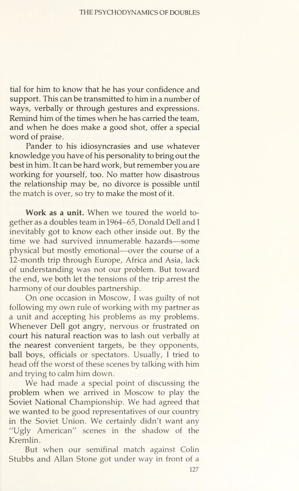
Chương này về đôi có vẻ giống như một chương về tư vấn hôn nhân. Nhưng, theo một nghĩa nào đó, một quan hệ đối tác đôi giống như một cuộc hôn nhân và nên được đối xử như vậy. Nhiều động lực tương tự được áp dụng.
Many of the same dynamics apply. The psychological problems one faces in doubles have everything to do with the complex interaction of differing personalities under situations of stress and excitement.
Những vấn đề tâm lý mà một người phải đối mặt khi thi đấu đôi liên quan đến sự tương tác phức tạp giữa các tính cách khác nhau trong những tình huống căng thẳng và kích động. Thay vì tình huống một đối một tương đối đơn giản ở nội dung đơn, chúng ta phải vừa giữ mối quan hệ mật thiết với đồng đội, vừa tìm cách phá vỡ sự ăn ý có thể có giữa hai đối thủ. Vì thế, có tới bốn tính cách tương tác ngoài sân, và chuyện đó thực sự có thể trở nên phức tạp.
Instead of the relatively straightforward one-on-one situation that occurs in singles, we are faced with having to cope with an intimate relation- ship with our partner while working on the possible destruction of the harmony that exists between our opponents. There are, therefore, four personalities interacting out there on court and that can really get complicated. HOW TO BE SUCCESSFUL AS A TEAM Should you and your partner be alike?
Làm Thế Nào Để Thành Công Với Tư Cách Một Đội
Bạn và đối tác của bạn có nên giống nhau không? Khi chọn một đối tác đôi, không cần thiết phải tìm một người giống hệt nhau về quan điểm, sở thích và tính cách. Bạn thậm chí không phải là bạn thân ngoài sân, mặc dù điều đó có thể giúp ích. Nhưng cần phải tìm một người có thói quen và đặc điểm tính cách không gây khó chịu cho bạn, bởi vì trong những lúc căng thẳng, sự kích thích sẽ được phóng đại cho đến khi nó xuất hiện như một rào cản không thể vượt qua để cùng tồn tại. Thay vào đó, bạn nên cố gắng chọn một người có điểm mạnh và điểm yếu bổ sung cho chính bạn. Khai thác bất kỳ sự khác biệt nào tồn tại giữa bạn và làm cho chúng hoạt động để tạo ra một mặt trận mạnh mẽ hơn, thống nhất, cả về mặt kỹ thuật và tâm lý.
In choos- ing a doubles partner, it is not necessary to find some- one who is identical in outlook, taste and personality. You do not even have to be close friends off court, although that can help. But it is necessary to find someone whose habits and personality traits do not irritate you, because in moments of stress that irrita- tion will be magnified until it looms as an insur- mountable barrier to coexistence. Rather, you should try to select someone whose strengths and weak- nesses complement your own. Harness whatever dif- ferences exist between you and make them work to produce a stronger, united front, both technically and psychologically.
John Newcombe và Tony Roche đã hình thành những gì một số người đánh giá là mối quan hệ đối tác đôi thành công nhất mọi thời đại. Tuy nhiên, ngoài việc là người Úc, có rất ít sự tương đồng về nền tảng hoặc tính cách của họ. Roche là một người hướng nội nhẹ nhàng, điển hình là dễ tính, nhưng rất chuyên nghiệp, Aussie. Newcombe là một người hướng ngoại, một nhà lãnh đạo tự nhiên, rất căng thẳng và thống trị. Tuy nhiên, về kỹ năng và kiến thức chiến thuật, có rất ít sự lựa chọn giữa họ, với Roche, nếu có bất cứ điều gì, giữ lợi thế trong khả năng tự nhiên.
John Newcombe and Tony Roche have formed what some people rate as the most successful doubles partnership of all time. Yet, apart from being Aus- tralian, there is little similarity in their backgrounds or personalities. Roche is a mildly introverted, typically easygoing, yet highly professional, Aussie. New- combe is an extrovert, a natural leader, highly strung and dominating. Yet, in skill and tactical knowledge, there is little to choose between them, with Roche, if anything, holding the edge in natural ability.
Điều này hẳn đã gây ra vấn đề, nếu Roche không chấp nhận nhu cầu giải tỏa năng lượng thần kinh của Newcombe bằng cách nói chuyện và đưa ra chỉ dẫn trong trận đấu. Thông thường, Roche biết Newcombe sẽ nói gì trước khi anh ta thốt ra, và đôi khi cũng chẳng nhất thiết phải đồng ý. Nhưng anh ta chỉ gật đầu hiền hòa, để những lời khuyên rửa trôi qua mình, qua đó đóng vai trò như một bãi rác sẵn sàng tiếp nhận những xúc cảm trào dâng của đồng đội. Điều đó giúp Newk thấy thoải mái mà chẳng làm Roche bận tâm chút nào. Bất kỳ dấu hiệu khó chịu nào từ phía Roche cũng sẽ đe dọa nghiêm trọng đến sự cân bằng hỗ trợ lẫn nhau của đội.
This could have caused problems had not Roche readily accepted Newcombe’s need to release nervous energy by talking and issuing instructions during a match. Frequently, Roche knew what Newcombe was going to say before he said it and sometimes did not necessarily agree with it. But he merely nodded sagely, letting the advice wash over him, thereby act- ing as a willing refuse dump for his partner’s emo- tional overflow. It made Newk feel good and it was no skin off Roche’s nose. Any sign of irritation on Roche’s part would have dangerously threatened the team’s mutually supportive balance. Give your partner maximum support.
Vấn đề tự tin càng thêm trầm trọng khi thi đấu đôi, bởi sự sụt giảm tinh thần của chính bạn không phải là hệ quả cảm xúc duy nhất của một cú đánh tồi. Còn có cả cảm giác tội lỗi nữa. Chúng ta đã làm đối tác thất vọng. Liệu anh ấy có bắt đầu mất niềm tin vào chúng ta không? Áp lực chung trong đôi có thể không lớn như ở nội dung đơn, nhưng trong những khoảnh khắc khủng hoảng, nó có thể lên tới mức không thể chịu đựng nổi nếu bạn chơi tệ.
The prob- lem of self-confidence is enlarged in doubles play be- cause a slump in one’s own morale is not the only emotional result of a badly played shot. There is a feeling of guilt, too. We have let our partner down. Will he start to lose faith in us? Overall pressure in doubles may not be as great as it is in singles, but in moments of crisis it can reach an unbearable pitch if you are playing badly. In doubles it is possible for your partner to be
Trong đôi, đối tác của bạn có thể gánh vác toàn bộ. Đội của bạn có thể đã có điểm số trước khi bạn, với tư cách cá nhân, kịp đánh một quả bóng nào trên sân. Cố gắng đừng cảm thấy tội lỗi vì điều đó.
carrying the whole load. Your team can have a set point before you, personally, have hit a ball in court. Try not feeling guilty about that. The pressure can be extremely painful for the person playing the ad court.
Áp lực có thể cực kỳ đau đớn với người chơi ở phần sân lợi thế (ad court). Tôi nhớ một dịp khốn khổ vào năm 1960, khi Larry Nagler và tôi đấu với Cliff Mayne và Hugh Ditzler trong trận bán kết Giải vô địch đôi quốc gia tại La Jolla, California. Ba, bốn lần, Nagler đã tạo cơ hội cho chúng tôi giành điểm, và mỗi lần tôi lại bỏ lỡ cú trả giao bóng quan trọng. Tôi bắt đầu tê liệt vì sợ hãi và bối rối. Nhưng anh ấy vẫn tiếp tục giành những điểm khi tỉ số 40-40, còn tôi thì liên tục không trả được cú giao bóng lên lưới. Chuyện đó xảy ra 10 lần trong một game, và phần còn lại của trận đấu, tôi chẳng sẵn lòng cũng chẳng có khả năng làm gì khác ngoài việc đẩy bóng lại qua lưới và cầu nguyện Nagler sẽ tung ra cú winner. Anh ấy đã làm thế và chúng tôi thắng. Nhưng một lý do khiến tôi không hoàn toàn sụp đổ và kéo cả Nagler xuống cùng mình là cách anh ấy phản ứng trước những vấn đề của tôi. Giống như bất kỳ đối tác tốt nào, anh ấy đã hết lòng ủng hộ và thấu hiểu.
I remember one miserable occasion back in 1960 when Larry Nagler and I were playing Clif Mayne and Hugh Ditzler in the semifinals of the National Hardcourt Doubles Championships at La Jolla, Calif. Three or four times, Nagler got us to break point and each time I missed the crucial service return. I started to become paralyzed with fear and embarrassment. But he kept on winning the deuce point and I kept on failing to get the service return back over the net. It must have happened 10 times in that one game, and for the remainder of the match I was neither willing nor capable of doing anything other than pushing the ball back over the net and praying that Nagler would hit the winners. He did and we won. But one of the reasons why I didn’t fall apart completely and drag Nagler down with me was the manner in which he reacted to my problems. Like any good partner, he was supportive and understanding.
Và đó là khía cạnh quan trọng nhất của tâm lý học đôi. Tại mọi thời điểm, hãy hỗ trợ tâm lý tối đa cho đối tác của bạn. Cách duy nhất để làm điều này là thông qua các kênh giao tiếp nhạy cảm và thông cảm. Không bao giờ đánh mất sự thật rằng mục tiêu tổng thể là giao tiếp với đối tác của bạn theo cách khiến anh ấy (hoặc cô ấy) chơi hết mình. Làm cho anh ấy cảm thấy tốt và cơ hội là anh ấy sẽ chơi tốt hơn.
And that spotlights the most important aspect of doubles psychology. At all times, give your partner maximum psychological support. The only way to do this is through sensitive and sympathetic channels of communication. Never lose sight of the fact that the overall objective is to communicate with your partner in such a way as to make him (or her) play his best. Make him feel good and the chances are he will play better.
Nhưng trước khi bạn có thể giao tiếp đúng cách, bạn phải hiểu tính cách của đối tác và bao dung cho bất kỳ điểm kỳ quặc nào mà anh ấy có thể có. Phản ứng của bạn trước những điểm kỳ quặc ấy phải được tính toán để tăng sự tự tin và cảm giác an toàn cho anh ấy.
But before you can communicate properly, you have to understand your partner’s personality and make allowances for any individual quirks it may con- tain. Your reaction to those quirks must be calculated to increase his confidence and feelings of security.
Hãy nhớ rằng bạn và đối tác là một khối — không thể tách rời, không thể chia cắt. Không thể thắng nếu thiếu đối phương. Vì thế, cũng như bạn cố gắng đưa bản thân vào trạng thái tâm lý tốt nhất để thắng một trận đơn, bạn phải đặt cả mình và đối tác vào cùng trạng thái ấy để giành chiến thắng ở nội dung đôi.
Remember you and your partner are a unit— inseparable, indivisible. Neither can win without the other. Therefore, just as you try to put yourself in the best possible psychological state to win a singles Never lose sight of the fact that the overall objective is to communicate with your partner in such a way as to make him play his best.
Thật khôn ngoan khi nhớ rằng tất cả chúng ta đều khao khát sự công nhận từ những người đồng trang lứa. Nhà tâm lý học tân Freud, Sullivan, đã thay thế sự nhấn mạnh của Freud về tính dục bằng việc đề cao nhu cầu được phê duyệt áp đảo của con người, coi đó là trọng tâm cho luận thuyết của mình. Ông cho rằng việc mất đi sự chấp thuận từ người khác gây ra sự lo âu và tổn hại đến hình ảnh bản thân của một người. Trong một tình huống cạnh tranh đầy căng thẳng, như một trận đấu quần vợt, những cảm giác bị từ chối ấy càng bị khuếch đại.
Unfortunately, it is an all too common occurrence for the better player to detach himself psycho- logically from a partner who is playing poorly. match, you must put yourself and your partner in the same state to win in doubles. It is wise to remember that all of us crave the approval of our peers. The neo-Freudian psychologist Sullivan replaced Freud’s emphasis on sex by making man’s overwhelming need for approval the focal point of his thesis. He maintained that loss of approval from others caused anxiety and damage to one’s self-image.
Thật không may, chuyện người chơi giỏi hơn tách rời về mặt tâm lý khỏi một đối tác đang thi đấu kém xảy ra quá phổ biến. Đó là để bảo vệ cái tôi của chính mình. Đối tác bạn càng tệ, bạn càng muốn cô lập anh ta. Có thể đến mức anh ấy cảm thấy bạn gần như đã gia nhập phe đối thủ ở bên kia lưới, bỗng chốc biến nó thành tình thế ba chọi một.
Ina high-stress, competitive situation, such asa tennis _match, these feelings of rejection can be accentuated. Unfortunately, it is an all too common occurrence for the better player to detach himself psychologically from a partner who is playing poorly. It is for protec- tion of one’s own ego. The worse your partner gets, the more you want to isolate him.
Điều này cũng giống như kiểu tình huống xã hội tại một bữa tiệc, khi vợ hoặc chồng bạn nói điều gì đó ngớ ngẩn và bạn coi đó là sự sỉ nhục đến hình ảnh của chính mình. Thông thường, bạn xem bạn đời như một phần của bản thân, nhưng giờ bạn muốn từ bỏ anh ta, bởi anh ta đang tự lừa dối chính mình và cả bạn trong quá trình ấy. Điều đó làm tổn thương cái tôi của bạn, khiến bạn trở nên xấu hổ và không còn ủng hộ.
It may reach the point where he feels you have almost joined your opponents on the other side of the net, suddenly mak- ing it a three-on-one situation. This parallels the type of social situation at a party when your wife or husband says something stupid and you treat it as an affront to your own image. Normally, you look upon your spouse as part of your- self but now you want to disown him because he is making a fool of himself and you in the process. It hurts your ego, so you become embarrassed and un- supportive.
Điều tương tự cũng xảy ra trên sân quần vợt. Có một xu hướng bản năng muốn nhảy tàu và để cho đối tác của bạn chìm một mình. Bạn tìm đến đối thủ của mình để thông cảm và hiểu biết và để cho họ thấy đó không phải là bạn đang thua trận đấu. Sự hiểu biết âm mưu này với các đối thủ của bạn khiến đối tác của bạn cảm thấy như thể anh ta vừa bắt được bệnh dịch hạch.
The same thing happens on a tennis court. There is an instinctive tendency to want to jump ship and let your partner sink by himself. You look to your oppo- nents for sympathy and understanding and to show them it is not you who is losing the match. This con- spiratorial understanding with your opponents makes your partner feel as if he has just caught the bubonic plague.
Người ta thấy điều này xảy ra quá thường xuyên trong câu lạc bộ quần vợt nhưng hiếm khi, nếu có, trong chuyến lưu diễn chuyên nghiệp. Và với lý do chính đáng. Các chuyên gia biết rõ rằng hành vi không hỗ trợ và thiếu giao tiếp tốt giữa các đối tác là gây tử vong cho cơ hội thành công của nhóm.
One sees this happening all too often in club tennis but rarely, if ever, on the pro tour. And with good reason. The pros know full well that unsupport- ive behavior and lack of good communication between partners is fatal to the team’s chances of success. So when your partner is playing badly, it is essen-
Vì vậy, khi đối tác của bạn chơi tệ, điều cần thiết là anh ta phải biết rằng anh ta có sự tự tin và hỗ trợ của bạn. Điều này có thể được truyền đến anh ta theo một số cách, bằng lời nói hoặc thông qua cử chỉ và biểu cảm. Nhắc nhở anh ấy về những lần anh ấy mang theo đội, và khi anh ấy thực hiện một cú đánh tốt, hãy đưa ra một lời khen ngợi đặc biệt.
tial for him to know that he has your confidence and support. This can be transmitted to him in a number of ways, verbally or through gestures and expressions. Remind him of the times when he has carried the team, and when he does make a good shot, offer a special word of praise.
Hãy bám sát vào những đặc điểm riêng của anh ấy và dùng bất kỳ hiểu biết nào bạn có về tính cách anh ấy để khơi gợi điều tối ưu trong con người anh ấy. Đó có thể là một việc khó khăn, nhưng hãy nhớ bạn cũng đang làm vì chính mình. Dù mối quan hệ có tồi tệ đến đâu, bạn cũng chẳng thể ly hôn cho đến khi trận đấu kết thúc, nên hãy cố gắng tận dụng tối đa nó.
Pander to his idiosyncrasies and use whatever knowledge you have of his personality to bring out the best in him. It can be hard work, but remember you are working for yourself, too. No matter how disastrous the relationship may be, no divorce is possible until the match is over, so try to make the most of it.
Hãy phối hợp như một khối thống nhất. Khi Donald Dell và tôi cùng nhau đi khắp thế giới như một đội đôi vào năm 1964-65, chắc chắn chúng tôi đã hiểu nhau từ trong ra ngoài. Đến thời điểm chúng tôi vượt qua vô số hiểm nguy — một phần vật chất nhưng chủ yếu là tình cảm — suốt chuyến đi 12 tháng xuyên châu Âu, châu Phi và châu Á, thì sự thiếu thấu hiểu không phải là vấn đề của chúng tôi. Nhưng rốt cuộc, cả hai chúng tôi đều để những căng thẳng của chuyến đi làm rạn nứt sự hài hòa trong mối quan hệ đôi của mình.
Work as a unit. When we toured the world to- gether as a doubles team in 1964-65, Donald Dell and I inevitably got to know each other inside out. By the time we had survived innumerable hazards—some physical but mostly emotional—over the course of a 12-month trip through Europe, Africa and Asia, lack of understanding was not our problem. But toward the end, we both let the tensions of the trip arrest the harmony of our doubles partnership.
Có một lần ở Moscow, tôi đã vi phạm chính quy tắc của mình về việc phối hợp như một khối và không coi vấn đề của anh ấy là vấn đề của mình. Bất cứ khi nào Dell tức giận, lo âu hay thất vọng trên sân, phản ứng tự nhiên của anh ta là mắng mỏ bằng lời vào những mục tiêu tiện tay gần nhất, có thể là đối thủ, cậu bé nhặt bóng, trọng tài hay khán giả. Thông thường, tôi đã cố gỡ anh ta ra khỏi những tình huống tệ nhất trong số đó bằng cách nói chuyện và tìm cách trấn tĩnh anh ta.
On one occasion in Moscow, I was guilty of not following my own rule of working with my partner as a unit and accepting his problems as my problems. Whenever Dell got angry, nervous or frustrated on court his natural reaction was to lash out verbally at the nearest convenient targets, be they opponents, ball boys, officials or spectators. Usually, I tried to head off the worst of these scenes by talking with him and trying to calm him down.
Chúng tôi đã đưa ra một điểm đặc biệt để thảo luận về vấn đề này khi chúng tôi đến Moscow để chơi Giải vô địch quốc gia Liên Xô. Chúng tôi đã đồng ý rằng chúng tôi muốn trở thành đại diện tốt của đất nước chúng tôi ở Liên Xô. Chúng tôi chắc chắn không muốn bất kỳ cảnh "Mỹ xấu xí" nào trong bóng tối của điện Kremlin.
We had made a special point of discussing the problem when we arrived in Moscow to play the Soviet National Championship. We had agreed that we wanted to be good representatives of our country in the Soviet Union. We certainly didn’t want any “Ugly American” scenes in the shadow of the Kremlin.
Nhưng khi trận bán kết của chúng tôi với Colin Stubbs và Allan Stone diễn ra trước một đám đông lớn ở sân vận động Lenin, thiện ý ấy nhanh chóng bị quên lãng. Sau một cuộc đấu giằng co sát sao, chúng tôi bị tụt lại phía sau, và đúng như dự đoán, Dell bắt đầu mắng mỏ mấy cậu bé nhặt bóng. Tôi phát điên. Đáng lẽ tôi phải ra cứu anh ta, nhưng thay vào đó tôi cũng chùn bước — theo thuật ngữ quần vợt là ném trận đấu. Với tôi không cố gắng còn Dell thì điên tiết, chúng tôi đã thua — đúng như cái giá chúng tôi xứng đáng nhận. Đáng lẽ tôi nên nói chuyện với Dell và cố sửa chữa tình hình, nhưng tôi đã bị kích động và mất lý trí. Rốt cuộc, thua trận thì được gì? Chẳng có ý nghĩa gì khi đánh chìm cả con thuyền khi bạn đang ở trên đó.
But when our semifinal match against Colin Stubbs and Allan Stone got under way in front of a large crowd at Lenin Stadium, good intentions were quickly forgotten. After a tight struggle, we fell behind and sure enough Dell started berating the ball boys. I went crazy. I should have gone to his rescue, but instead I went into the tank, which is the tennis pros’ term for throwing the match. With me not trying and Dell in a rage, we lost—just as we deserved to. I should have spoken to Dell and tried to correct the situation, but I was irritated and irrational. After all, what good does it do to lose the match? There is no point in sinking the boat when you are in it.
Tránh nói đùa trên sân. Dell và tôi có xu hướng nói nhiều khi thi đấu. Đôi khi điều đó cần thiết và hữu ích. Nhưng thường thì không. Như một nguyên tắc chung, bạn nên cảnh giác với việc nói quá nhiều trong một trận đấu đôi. Có một sự cám dỗ lớn để tán gẫu — đặc biệt nếu cặp đôi là bạn thân và thích kiểu hài hước của nhau. Nhưng điều này gây xao nhãng. Nó làm lệch sự tập trung của bạn, và trước khi kịp nhận ra, bạn đang chú ý vào việc giải trí cho đối tác hơn là chiến thắng trận đấu.
Avoid on-court banter. Dell and I tended to talk a lot when we played. Sometimes it was necessary and helpful. Often it was neither. As a general rule, you should be wary of too much talk during a doubles match. There is a great temptation to chatter away— especially if the pair of you are good friends and enjoy each other’s humor. But this is distracting. It alters your focus and before you know it, you are paying more attention to entertaining your partner than win- ning the match.
Wojtek Fibak, người cùng Tom Okker giành danh hiệu vô địch đôi Giải vô địch thế giới năm 1978 tại Kansas City, kể rằng đôi khi khiếu hài hước quá trớn của Okker khiến anh cúi khom cười nghiêng ngả tại lưới ngay khi tay vợt Hà Lan sắp giao bóng. Fibak thấy thái độ dễ dãi ấy khá thú vị khi thư giãn trên sân, nhưng thừa nhận nó cần được kiểm soát, vì e rằng nó bắt đầu làm sứt mẻ sự tập trung của đội.
Wojtek Fibak, who won the 1978 World Cham- pionship Tennis doubles title in Kansas City with Tom Okker, says that sometimes Okker’s outrageous sense of humor leaves him doubled up with laughter at the net as the Dutchman is about to serve. Fibak finds that kind of easygoing relationship on court relaxing, but admits that it has to be kept in check, lest it begin to chip away at the team’s concentration.
Nhưng, cũng như Lee Trevino — người có khả năng tuyệt vời để đắm chìm trong những cuộc đối thoại dài, hài hước với đám đông hay người mang gậy của mình — Fibak và Okker là những ngoại lệ cực hiếm. Còn với chúng ta, những kẻ kém tài, tôi đặc biệt khuyên nên giữ lời nói trên sân ở mức tối thiểu. Thật quá dễ dàng để để cho sự tán gẫu thay thế cho việc thi đấu. Ta có xu hướng trì hoãn và mơ mộng về những gì sẽ làm, thay vì bắt tay vào thực hiện nó. Một trận đấu quần vợt không phải là dịp giao lưu xã hội dành cho người chơi nghiêm túc, và nói quá nhiều có xu hướng biến nó thành một.
But, like Lee Trevino, who has an amazing ability to sink putts in the middle of a long, humorous dia- logue with the crowd or his caddie, Fibak and Okker are very much the exception. For us less-gifted souls, I would strongly recommend that talk on court be kept to a minimum. It is too easy to allow chatter to become a substitute for play. There is a tendency to procrasti- nate and fantasize about what you are going to do, rather than getting on with the job of doing it. A tennis match is nota social occasion for the serious player and
Bạn có nên xin lỗi vì lỗi không? Xin lỗi là một điều hiển nhiên, tự nhiên cần làm, đặc biệt là sau khi bỏ lỡ một cú đánh dễ dàng. Nhưng có ba lý do chính khiến bạn chỉ cần giữ kín môi và tiếp tục với trò chơi:
too much talk tends to turn it into one. Should you apologize for errors? Apologizing is an obvious, natural thing to do, particularly after miss- ing an easy shot. But there are three main reasons why you should simply keep your lips closed and get on with the game: 1.
1. Xin lỗi chỉ càng làm nổi bật sai lầm. Trong đôi cũng như trong đơn, tốt hơn nhiều là gạt nó khỏi tâm trí và tập trung vào điểm tiếp theo.
2. Nhìn thấy bạn lo lắng và kiểm chứng bằng lời về lỗi của bạn chỉ giúp đối thủ của bạn tự tin và nâng cao tinh thần của họ.
3. Có nhiều khả năng đối tác của bạn sẽ trở nên khó chịu với bạn bởi vì, bằng cách nói về vấn đề này, nó chỉ xác nhận trong tâm trí anh ấy rằng, trên thực tế, bạn đang mắc rất nhiều sai lầm. Tất cả chúng ta đã chạy vào kiểu rên rỉ, khịt mũi, thay vì tranh thủ sự cảm thông của chúng ta, chỉ kích động cảm giác thù địch. Anh ta càng than vãn và xin lỗi, bạn càng cảm thấy muốn đá vào răng anh ta. Phản ứng tàn nhẫn và có phần phi lý này đối với sự yếu đuối cực độ bắt nguồn từ thực tế là nó nhắc nhở chúng ta về những bất cập của chính chúng ta, điều mà chúng ta sợ hãi và muốn đàn áp.
Chuyển hướng, thay vì đối đầu. Cảm giác khó chịu với đối tác cũng có thể nảy sinh qua thời gian một cách tự nhiên. Như trong hôn nhân, bạn có thể trở nên bực mình trước những điểm yếu của đối tác. Không hẳn là vì anh ta có một thói quen xấu cụ thể. Đúng hơn, chính việc bạn đoán trước được thói quen ấy sẽ lặp lại trong những điều kiện nhất định mới gây ra sự khó chịu. Trên sân, có thể là thực tế anh ta có xu hướng trượt nhát khi lo âu. Hay cứ khăng khăng cướp những quả bóng ngon để lại cho bạn. Sự quen thuộc với những điểm yếu ấy khiến bạn chùn bước ngay khi vừa đoán trước, và khi — một lần nữa — nỗi sợ tồi tệ nhất của bạn thành hiện thực, bạn trở nên thất vọng và khó chịu khi đánh đôi.
Apologizing only highlights the mistake. In doubles, as in singles, you are much better off putting it straight out of your mind and concentrating on the next point. 2. Seeing you worry and verbalize about your errors only gives your opponents confidence and boosts their morale. 3. It is more likely that your partner will become upset with you because, by talking about the problem, it only confirms in his mind that you are, in fact, making a lot of mistakes. All of us have run into the whining, sniveling type who, instead of enlisting our sympathy, merely incites feelings of hostility. The more he whines and apologizes, the more you feel like kicking in his teeth. This cruel and somewhat irra- tional response to the sight of extreme weakness stems from the fact that it reminds us of our own inade- quacies, which we fear and want to suppress.
Một đối tác mới có xu hướng được đưa ra lợi ích của sự nghi ngờ và thường được đối xử khoan dung hơn trong tâm trí của bạn. Điều này đúng trong mọi tầng lớp của cuộc sống.
Switch, rather than fight. Feelings of irritation toward your partner can also grow through the simple passage of time. As in marriage, you may become annoyed at your partner’s weaknesses.
Khi một công ty gọi một chuyên gia ngoài thành phố là một nhà tư vấn cho một số dự án, lời khuyên của anh ấy được lắng nghe rất nhiều. Anh ta được đối xử lịch sự và có lẽ được coi là có uy tín lớn hơn chuyên gia nội bộ về vấn đề này. Có xu hướng tưởng tượng anh ta biết nhiều hơn anh ta. Nhưng sau một thời gian, ánh sáng từ bộ não mới tươi sáng này bắt đầu mờ đi và bạn nhận ra anh ta không tốt hơn cũng không tệ hơn anh chàng vẫn đang đi trong văn phòng bên cạnh.
It is not so much that your partner has a particular bad habit. Rather, it is the mind-numbing predictability of that habit surfacing under certain conditions which trig- gers the annoyance. On court, it can be the fact that he tends to lob short when he gets nervous. Or insists on poaching balls better left to you. The familiarity of these weaknesses make you cringe in anticipation and when, once again, your worst fears are realized, you become doubly frustrated and annoyed. A fresh partner tends to be given the benefit of the
Thật khôn ngoan khi nhận thức được sự cứng nhắc có thể bao vây mối quan hệ đối tác đôi. Nếu bạn thấy rằng những điều tầm thường bắt đầu gây khó chịu và những đặc điểm tính cách bắt đầu có ảnh hưởng xấu đến sự hài hòa của mối quan hệ, thì tốt hơn là nên chia tay, nếu không vĩnh viễn, thì ít nhất là tạm thời.
True professionalism, both on court and off, means never having to say you’re sorry. doubt and is generally treated more leniently in your mind. This is true in all walks of life. When a company calls in an out-of-town expert as a consultant on some project, his advice is listened to with great deference.
Trên hệ thống thi đấu chuyên nghiệp, rất ít tay vợt đôi giữ nguyên một đối tác mỗi tuần trong năm. Thông thường, đơn giản là những vấn đề về lịch trình và cam kết cá nhân trên khắp thế giới khiến hai người không thể cùng dự một giải tuần này qua tuần khác. Nhưng đôi khi các tay vợt cố tình tạm nghỉ bắt cặp với nhau — như Stan Smith và Bob Lutz đã làm một thời gian — để trở lại với thái độ và sự khích lệ mới.
He is treated politely and is probably regarded with greater credibility than the in-house expert on the subject. There is a tendency to imagine he knows more than he does. But after a while, the sheen from this bright new brain begins to dim and you realize he is neither better nor worse than the guy still slogging away in the office next door. It is wise to be aware of the staleness that can beset a doubles partnership.
Một số tay vợt chủ động tìm kiếm đối tác mới trên cơ sở lâu dài hơn. Okker, người hiện đánh cặp với Fibak, từng có mối quan hệ bền vững và rất thành công với Marty Riessen kéo dài hơn một thập kỷ. Brian Gottfried, muốn tập trung hơn vào nội dung đơn, đã chấm dứt mối quan hệ đối tác béo bở với Raul Ramirez sau khi cặp đôi này giành hầu hết mọi danh hiệu đôi quan trọng trên thế giới.
If you find that trivial things start to irritate and personality traits begin to have an adverse effect on the harmony of the relationship, it may be better to split up, if not permanently, then at least temporarily. On the pro circuit, there are very few doubles players who stick to the same partner every week of the year. Often, it is simply that the problems of world-wide scheduling and personal commitments make it impossible for two players to compete in the Same tournament week after week.
Nhưng, với rất ít ngoại lệ, những cuộc ly hôn quần vợt này được thu xếp trên cơ sở vô cùng thân thiện. Những người trong cuộc đều là dân chuyên nghiệp, và họ hiểu rằng, dù mối quan hệ của họ có thể chẳng phải một chuyện tình, thì sự chuyên nghiệp thực thụ — cả trên sân lẫn ngoài sân — có nghĩa là không bao giờ phải nói lời xin lỗi.
But sometimes players deliberately take a break from each other—as Stan Smith and Bob Lutz did for a time—so as to resume with a fresh attitude and incentive. Some players actively seek new partners on a more permanent basis. Okker, who now plays with Fibak, had a long-standing and highly successful rapport with Marty Riessen that stretched over a dec- ade.
Cách Đối Xử Với Đối Phương
Cho đến nay, chúng tôi đã quan tâm chủ yếu đến các vấn đề phát sinh từ việc có người khác ở bên cạnh lưới của bạn. Nhưng còn đối thủ của bạn thì sao? Bạn có thể sử dụng tâm trí cũng như cây vợt của mình để phá vỡ mối quan hệ đối tác của họ không? Chắc chắn nhất.
Brian Gottfried, wishing to concentrate more on his singles, broke up his lucrative partnership with Raul Ramirez after the pair had won almost every important doubles title in the world. But, with very few exceptions, these tennis di- vorces are arranged on a very amicable basis.
Khai thác điểm yếu của họ. Nếu một trong những đối thủ của bạn yếu hơn đối thủ kia, hãy tấn công anh ta ngay lập tức và ở mọi cơ hội hợp lý. Điều này sẽ không chỉ giúp bạn kiếm được điểm mà về mặt tâm lý, nó sẽ dẫn đến một cái nêm giữa các đối thủ của bạn. Bằng cách chơi người đàn ông yếu hơn, bạn sẽ công khai thừa nhận rằng bạn đã tìm thấy liên kết yếu trong áo giáp của họ và có ý định khai thác nó. Điều này sẽ làm tổn thương sự tự tin của người đàn ông yếu hơn và khiến người chơi tốt hơn cảm thấy mình đang bị gánh nặng.
The people concerned are pros and they know that, even though their relationship may not have been a love story, true professionalism, both on court and off, means never having to say you’re sorry. HOW TO TREAT THE OPPOSITION So far, we have been concerned primarily with the problems arising out of having someone else on your own side of the net. But what about your opponents? Can you use your mind as well as your racquet to disrupt their partnership? Most certainly. Exploit their weaknesses.
Bạn có thể chơi theo cảm xúc này bằng cách lọt vào mắt xanh của người chơi mạnh hơn bất cứ khi nào đối tác của anh ta mắc một sai lầm thực sự tồi tệ và, theo cách tinh tế, âm mưu, cho anh ta biết rằng bạn đồng cảm với vị trí của anh ta. Giúp anh ta cảm nhận được trọng lượng của hải âu quanh cổ. Nếu nó trở nên quá nặng nề, rất có thể anh ta sẽ trở nên chán nản đến mức anh ta sẽ không còn cố gắng nữa.
If one of your oppo- nents is weaker than the other, attack him immedi- ately and at every reasonable opportunity. This will not only earn you points but, psychologically, it will drive a wedge between your opponents. By playing the weaker man, you will be publicly acknowledging that you have found the weak link in their armor and are intent on exploiting it. This will hurt the weaker man’s confidence and make the better player feel he is being burdened.
Kích thích họ. Cũng dễ dàng hơn để đe dọa đối thủ ở nội dung đôi so với đơn, bởi những tay vợt lưới đang thi đấu ở cự ly gần. Phải, tôi đang nói về sự đe dọa về thể chất, vốn cũng là một phần của trò chơi — có lẽ không phải khía cạnh dịu dàng hay hấp dẫn nhất, nhưng dù sao vẫn là một chiến lược hợp lệ.
You can play on this emotion by catching the eye of the stronger player whenever his partner makes a really bad mistake and, ina subtle, conspiratorial way, let him know that you sympathize with his position. Help to make him feel the weight of the albatross around his neck. If it gets too heavy, the chances are he will become so discouraged that he will no longer try as hard.
Chỉ trong những dịp cực kỳ hiếm hoi, mới có chuyện bạn thực sự cố tình đánh trúng đối thủ — và đó thực sự không phải là một phần của môn thể thao này. Nhưng tôi nghĩ đó là một lợi thế nhất định nếu bạn có thể khiến gã kia lo lắng về sự an toàn của mình. Trong bóng đá, khoảnh khắc một tay vợt bắt đầu nghĩ đến việc bị thương, anh ta coi như xong. Dù chấn thương nghiêm trọng hầu như chưa từng xảy ra trong quần vợt, ai cũng biết một quả bóng được đánh với tốc độ trăm dặm một giờ trúng giữa hai mắt hay vào háng sẽ cực kỳ đau đớn. Chưa từng bị trúng những cú đó, chúng ta đều biết những quả tên lửa ấy phải được tránh bằng mọi giá. Sức mạnh tuyệt đối của một cú đánh ở cự ly gần có thể đóng vai trò như một lời nhắc nhở về điều đó.
Intimidate them. It is also easier to intimidate your opponents in doubles than it is in singles because the net men are playing at close range. Yes, I am talking about physical intimidation, which is all part of the game—not the most genteel or attractive part, perhaps, but a legitimate strategy nonetheless. Only on very rare occasions does it happen that you actually try to hit your opponent—that really is not part of the sport. But I think it is a definite advan- tage if you can make the other guy worry about his safety. In football, the minute a man starts thinking about getting hurt, he is finished. Although serious injury is virtually unheard of in tennis, everyone knows that a ball hit ata hundred miles an hour which
Việc thấm nhuần chút ít nỗi sợ vào đối thủ chắc chắn đã giúp Donald Dell và tôi thắng một trận cụ thể trong chuyến lưu diễn vòng quanh thế giới. Chúng tôi phải đối đầu với vài tay vợt Ý nhanh nhẹn và xảo quyệt ở Florence. Cả hai gã này đều hời hợt và tự phụ, và đang biến chúng tôi thành trò cười với những cú vô-lê nhanh, góc cạnh cùng những bước chân lạ mắt trên mặt sân đất nện đỏ. Đám đông Florence đông đảo xem đó là môn thể thao tuyệt vời và cứ mỗi cơ hội lại chế giễu chúng tôi.
Physical intimidation is a part of the game—not the most genteel or attractive part, perhaps—but a legitimate strategy nonetheless. connects between the eyes or in the groin will be excruciatingly painful. Without ever being hit, we know that such missiles are to be avoided at all costs. The sheer power of a shot hit at close quarters can serve as a reminder of this. Instilling a little fear into our opponents certainly helped Donald Dell and I win one particular match during the course of our world tour.
Đó không phải là tình huống khiến Dell thích thú, và tôi cũng chẳng ưa nó gì. Nhưng với thái độ hiếu chiến tự nhiên trước nghịch cảnh, Dell không định làm ngơ. Cơ hội đầu tiên có được, anh ta lao nước rút lên lưới và cố hạ một cú vô-lê dễ dàng thẳng vào cổ họng gã đứng lưới. Anh ta tung cú đánh, và quả bóng huýt sáo cách vài inch tai gã Ý. Chỉ để chắc rằng gã nhỏ bé kia hiểu chuyện gì đang xảy ra, Dell đứng đó gầm gừ: ‘Lần sau, tao sẽ lấy cái đầu chết tiệt của mày ra!’
We were up against a couple of swift and cunning Italians in Flor- ence. Both these guys were loose and cocky and were making fools of us with quick, angled volleys and fancy footwork on the red clay. The large Florentine crowd thought it was great sport and were baiting us at every opportunity. That is not the sort of situation that appeals to Dell and I can’t say I was enjoying it much either. But, with his naturally belligerent attitude toward adversity, Dell was not about to take it lying down.
Đột nhiên mọi sự hời hợt biến mất. Người Ý tê liệt. Không còn những cú vô-lê lạ mắt hay những cú bỏ nhỏ. Từ thời khắc đó, họ quan tâm đến việc bảo vệ mạng sống và tay chân hơn là chiến thắng. Chúng tôi đã đánh bại họ.
The first chance he got, he sprinted across the net and tried to ram an easy volley down the net man’s throat. He hit the hell out of the ball and it whistled to within inches of the Italian’s ear.
Sự đe dọa về thể chất cũng có thể khiến đối thủ của bạn tức giận. Vì Pancho González nói về tay vợt duy nhất từng thể hiện tốt hơn trong trạng thái tức giận, điều này cũng có thể có lợi cho bạn, mặc dù đó thực sự không phải là điều tôi khuyên bạn nên thử ở cấp câu lạc bộ. Chiến thắng là điều quan trọng, chắc chắn, nhưng đối với hầu hết chúng ta, quần vợt cũng là môn thể thao được người chiến thắng và kẻ thua cuộc yêu thích (ngay cả khi thua cũng bị tổn thương một chút).
Just to make sure the little chap knew what was happening, Dell stood there and snarled, ““Next time, I’ll take your goddamn head off! Suddenly all the looseness was gone. The Italians were paralyzed. No more fancy volleys and drop shots. From that moment on, they were more con- cerned with protecting life and limb than winning. We beat the hell out of them. Physical intimidation can also make your oppo- nents angry.
Tuy nhiên, sự hứng thú không nhất thiết là mục tiêu khi bạn có người Mỹ và người Nga bước ra sân trong một trận đấu sát sao tại Wimbledon. Tôi nhớ một lần cách đây vài năm, khi Dennis Ralston và Chuck McKinley đấu với Tomas Lejus và Sergei Likhachev trên sân số 1 Wimbledon. Người Nga là một đội trung bình, và sau nhiều lần suýt trượt, cuối cùng Likhachev cũng khoan thủng Ralston bằng một cú vô-lê dễ dàng. Ralston trở chứng. Anh ta nổi điên đến mức dành phần còn lại của trận đấu để cố đánh trúng Likhachev, và tất nhiên, mất hết thời gian cùng sự tập trung trong quá trình ấy. Từ thế dẫn trước, người Mỹ để người Nga vượt qua và thua cuộc.
As Pancho Gonzalez is about the only player who has ever performed better in a state of anger, this can also work to your advantage, although it is really not something I would recommend you attempt at club level. Winning is important, to be sure, but for most of us tennis is also a sport to be enjoyed by winners and losers alike (even if losing does hurta bit). However, enjoyment is not necessarily the object of the exercise when you have Americans and Rus- sians on court in a tight match at Wimbledon. I re- member one occasion some years ago when Dennis Ralston and Chuck McKinley were playing Tomas Le- jus and Sergei Likhachev on Wimbledon’s No. 1 Court.
Nhưng nếu việc cố gắng đánh bại đối thủ hay khuấy động họ vào cơn thịnh nộ không thể kiểm soát chẳng phải tất cả những gì của quần vợt đôi nam, thì chắc chắn nó cũng chẳng đóng vai trò gì trong khía cạnh phức tạp và tinh vi hơn của trò chơi — đôi hỗn hợp.
The Russians were a mean team and, after several near misses, Likhachev finally drilled Ralston with an easy volley. Ralston flipped out. He got so mad he spent the rest of the match trying to hit Likha- chev and, of course, lost all his timing and concentra- tion in the process.
Những Lời Ám Chỉ Trong Đánh Đôi Nam Nữ
Kết hợp hai nam và hai nữ trên cùng một sân quần vợt, những khả năng về tâm lý là vô cùng khó lường. Trong quần vợt giao lưu, mối quan hệ giữa những người chơi sẽ ảnh hưởng đến cách các đối thủ tiếp cận trận đấu. Dễ dàng hình dung rằng thái độ của hai cặp vợ chồng sẽ khác xa so với những cặp đang hẹn hò chưa cưới. Chiến thắng trận đấu có thể chẳng phải mục tiêu chính.
From a two-set-to-one lead, the Americans allowed the Russians to get right through them and lost. But if trying to maim your opponents or stir them into a state of uncontrollable rage is not what tennis is all about in men’s doubles, then it should certainly play no part in that more delicate and complex aspect of the game—mixed doubles.
Nhưng hãy gạt qua những tương tác cụ thể và giả định rằng chúng ta có những người chơi muốn giành chiến thắng, thay vì đánh quần vợt vì mục đích tình ái.
INNUENDOS IN MIXED DOUBLES Mix two men and two women together on a tennis court and the psychological possibilities are mind- boggling.
Thái độ chiến thắng cơ bản phải giống như trong bất kỳ trận đấu quần vợt nào — tập trung tấn công điểm yếu của đối thủ bằng mọi cách có thể, đồng thời vẫn tuân thủ nghi thức sân đấu. Điều này có thể khiến tay vợt nam bị ép. Giả sử cả nam và nữ đều có cùng tiêu chuẩn, thì người đàn ông thường mạnh hơn về thể chất, nhanh hơn và thực hiện những cú vô-lê tốt hơn. Tuyên bố này, được hy vọng, sẽ không bị coi là sự phản ánh của chủ nghĩa sô vanh nam, mà là của những thực tế vật lý. Sự khác biệt rõ ràng về xương, cấu trúc và nội tiết tố mang lại cho nam giới lợi thế thể chất. Chiến lược chiến thắng tối ưu là để nữ chơi quần vợt phù hợp, vững vàng về chiến thuật, trong khi nam tấn công dữ dội vào nữ đối thủ và đe dọa cô ấy bằng mọi cách có thể. Anh ta nên di chuyển và cản trở càng nhiều cú đánh càng tốt. Khó mà hào hiệp, nhưng hiệu quả.
In social tennis, the relationships between the players will influence each competitor’s approach to the match. One can easily imagine that the attitudes of two husband-and-wife teams will be vastly dif- ferent from those of dating unmarrieds. Winning the match may not be the primary objective. But let us ignore specific interactions and assume that we have players who want to win, rather than play some variety of tennis charade for sexual pur- poses. The basic winning attitude should be the same as in any tennis match—concentrate on attacking your opponent’s weakness in any way you can, while keeping within generally accepted rules of court eti- quette. This can put the male player in a squeeze. Assuming that both male and female players are of approximately the same standard, the man is usually physically stronger, faster and a better volleyer. This statement will, it’s hoped, not be taken as a reflection of male chauvinism, rather one of physical fact. There
Có một giới hạn xã hội cho sức mạnh mà anh ta có thể dùng để tấn công người nữ đối diện. Khi cố đóng vai quý ông và không nhắm những cú bóng dễ dàng vào mặt cô ấy, anh ta có xu hướng thay đổi nhịp điệu tự nhiên và bỏ lỡ những cú đánh đơn giản, hoặc nương tay quá mức và đánh mất phần hay nhất của mình. Và anh ta phải cẩn thận, kẻo lại quá rụt rè trong việc tấn công người nữ đối diện đến mức làm tổn thương đối tác của mình. Sau một hoặc hai quả bóng huýt sáo sát tai, cô ấy sẽ khôn ngoan hơn nếu khuyến khích đối tác mạnh bạo hơn.
The optimum winning strategy is for the female to play consistent, tactically sound tennis, while the male ferociously attacks the opposing female. are obvious skeletal, structural and hormonal differ- ences that give males a physical advantage. The opti- mum winning strategy is for the female to play consis- tent, tactically sound tennis, while the male fero- ciously attacks the opposing female and intimidates her in every possible way. He should be mobile and intercept as many shots as possible. Hardly chival- rous, but effective.
Mặt khác, nếu người đàn ông đơn giản là không chơi tốt hoặc không thể thực hiện vai trò chi phối như mong đợi, đối tác của anh ta phải kiên nhẫn và hỗ trợ. Như cựu tay vợt Wightman Cup người Mỹ, Julie Heldman đã chỉ ra cho tôi, điều này rất khó vì về cơ bản cô ấy phụ thuộc vào anh ta. Anh ta có sức mạnh và khả năng kết thúc điểm theo cách mà cô không thể nhân đôi, bất kể cô chơi tốt như thế nào. Vào những thời điểm này, người phụ nữ phải chịu cảm giác bất lực, tức giận hoặc thậm chí ghen tị với người phụ nữ đối lập vì cô ấy có một đối tác có thể thực hiện công việc đúng cách. Nó giống như mất nữ hoàng của bạn trong một trò chơi cờ vua. Đối thủ của bạn có một lợi thế to lớn về sức mạnh và khả năng di chuyển. Tất cả những gì bạn có thể làm là tranh giành, che đậy và cảm thấy bất lực. Nhưng, không giống như cờ vua, nơi nữ hoàng thường không trở về, trong quần vợt, bất cứ lúc nào, người đàn ông cũng có thể sống lại, miễn là sự hòa hợp giữa đội và thái độ tích cực được duy trì.
There is a social limit to the vigor with which he may attack the opposing female. In trying to play the girl and yet not hit her between the eyes with easy overheads, he is prone to change his natural rhythm and miss simple shots or ease up too much and have her best him in the exchange. And he must be careful, lest he be so timid in his attack on the opposing female that his own partner is left vulnerable. After a ball or two whistles by her ear, she would be wise to encour- age her partner to be more forceful. On the other hand, if the man is simply not play- ing well or unable to perform the dominant role that is expected, his partner must be patient and supportive. As former American Wightman Cup player Julie Heldman pointed out to me, this is difficult because she is basically dependent upon him. He has the pow- er and the ability to end points in a way that she cannot duplicate, no matter how well she plays.
Ngoài ra, những người chơi trong các trận đấu đôi nam nữ phải chịu áp lực tinh thần tương tự như bất kỳ trận đấu nào mà người mạnh và người yếu bị ghép cặp với nhau. Người đàn ông phải đủ vững vàng về tinh thần để chấp nhận khả năng đối tác của mình có thể không theo kịp về mặt thể chất. Thể hiện sự không hài lòng chỉ làm phiền đối tác, khiến cô ấy bị choáng ngợp và đánh tệ hơn. Anh ấy phải tránh những cú đánh quá mức và việc cố gắng kết thúc điểm quá nhanh vì lo sợ đối thủ sẽ sớm tấn công đối tác của mình. Điều này có thể dẫn đến một bầu không khí hỗn loạn, nơi người đàn ông đánh bóng một cách liều lĩnh, còn đối tác, cảm thấy anh ấy thiếu tin tưởng vào mình, lại càng sợ mắc phải những lỗi mà anh ấy vốn e ngại.
At these times, the female is subject to feelings of helplessness, anger or even jealousy of the opposing female because she has a partner who can do the job properly. It is like losing your queen in a chess game. Your opponent has a tremendous advantage in power and mobility. All you can do is scramble, cover up and feel helpless. But, unlike chess, where the queen does not generally return, in tennis the man can, at any time, come alive again, as long as team harmony and a positive attitude are maintained. In addition, the contestants in mixed doubles matches are subject to the same mental pressures that accompany any match where strong and weak players are paired. The man must be mentally stable enough
Trong khi đó, người phụ nữ rất dễ rơi vào cảm giác thấp kém và bối rối nếu bị tấn công hoặc bị đánh lob mà không thể bảo vệ phần sân của mình. Sau một thời gian, cô ấy có thể bắt đầu lo lắng nhiều hơn về việc làm thất vọng đối tác hơn là về việc thi đấu. Tuy nhiên, phụ nữ cũng có trong tay những vũ khí tâm lý mạnh mẽ. Trong hầu hết các cặp đôi nam-nữ, người đàn ông được dạy để tin rằng vai trò tự nhiên của mình là thống trị. Anh ấy coi mình là trụ cột của đội. Thách thức duy nhất tiềm tàng đối với quyền làm chủ sân chính là người đàn ông bên kia. Người phụ nữ có thể thu về những lợi thế tâm lý lớn nếu, dù chỉ thỉnh thoảng, cô ấy có thể đánh bại người đàn ông đối diện trong những pha ăn miếng trả miếng, hoặc đánh lừa anh ta bằng cách bỏ bóng vào khoảng đệm (alley) khi anh ta di chuyển để chiếm ưu thế sân. Một khi sự tự tin của anh ấy lên cao, anh ấy sẽ tự do di chuyển khắp sân và phát huy tối đa hiệu quả. Thế nhưng, việc bị đối thủ nữ đánh bại một cách nhục nhã và làm tổn thương lòng tự trọng của anh ấy lại hoàn toàn không tương xứng với thiệt hại điểm số thực tế. Ý nghĩ rằng người phụ nữ bên kia chẳng hề sợ anh ta, và thực tế còn cảm thấy mình có thể đánh bại anh ta dễ dàng hơn, khiến hầu hết đàn ông phải khiếp sợ. Nó sẽ khiến họ trở nên căng cứng, hạn chế cử động và thường hay mắc lỗi một cách dễ dàng.
to accept the possibility that his partner may not be his physical equal. Shows of displeasure will only upset his partner, make her tentative and cause her to play worse. He must guard against overplaying shots and trying to end points too quickly out of concern that his opponents will soon attack his partner. This can lead to a frantic atmosphere where the man takes wild gambles and his partner, feeling his lack of confidence in her, becomes intimidated into making the very er- rors he fears. The female, meanwhile, is open to feelings of inferiority and embarrassment if she is being attacked or lobbed and cannot protect her side of the court. After a while, she may begin worrying more about upsetting her partner than she does about playing the game. However, women also have some potent psy- chological weapons at their disposal. In most male- female situations, the man is taught to believe that his natural role is one of dominance. He pictures himself as the bulwark of the team. The only potential chal- lenge to his total court supremacy is the opposing male. The female can earn great psychological divi- dends if she is able, with any frequency, to best the opposing male in exchanges or to fool him by hitting down his alley as he moves to dominate the court.
Đây là một chiến thuật rất rủi ro và nên được sử dụng cẩn thận. Nếu nó không được đền đáp, đừng đẩy nó. Quay trở lại chiến lược cơ bản và đánh vào người đàn ông chỉ để đổi hướng bóng.
Once his confidence is up, he roams the court freely and can be most effective. But being out-played by his female opponent is embarrassing and hurts his confi- dence out of all proportion to the actual point damage.
Phần XI: Tận Dụng Tối Đa Huấn Luyện Viên Của Bạn
Tìm Huấn Luyện Viên Phù Hợp
Vấn đề cốt lõi đối với ai đang tìm một lời chỉ dẫn quần vợt tốt là tìm được một huấn luyện viên hay chuyên gia quần vợt có năng lực, người mà bạn có thể đặt trọn niềm tin. Thật không may, quần vợt vẫn là một thứ nghệ thuật đen tối. Trò chơi này có đầy những kẻ bịp bợm, và ai nấy đều rao giảng những lý thuyết cá nhân của riêng họ. Trong nhiều trường hợp, lời khuyên từ hai chuyên gia quần vợt sẽ mâu thuẫn hoàn toàn với nhau. Thật khó chịu khi bạn nhận ra mình đang ở thế bí sau khi đã tiếp cận cả hai với tâm thế thiếu hiểu biết. Nếu bạn đủ hiểu biết để phân định ai đúng ai sai, thì có lẽ ngay từ đầu bạn đã chẳng cần học làm gì.
The thought that the opposing female has no fear of him and, in fact, feels that she can directly get the better of him, is frightening to most men. It will make them force their shots, restrict their movements and become generally ill at ease. This is a very risky tactic and should be used with care. If itis not paying off, do not push it. Return to the basic strategy and hit to the man only for diversion. CHAPTER 10. GETTING THE MOST FROM YOUR TEACHING PRO FINDING THE RIGHT INSTRUCTOR The major problem for someone searching for good tennis instruction is finding a well-qualified coach or tennis professional in whom you can place your trust. Unfortunately, tennis is still something of a black art.
Mặc dù nó có thể không được an ủi nhiều, nhưng nên biết rằng vấn đề không bị hạn chế đối với người mới bắt đầu. Nhiều người chơi hàng đầu trên thế giới cũng bối rối không kém bởi vô số lời khuyên mâu thuẫn khi họ đột nhiên gặp rắc rối với giao bóng xoay hoặc trái tay. Tôi ước có một câu trả lời dễ dàng, nhưng không có câu trả lời.
The game abounds with charlatans and people ped- dling their own pet theories. In many cases, advice from two tennis pros will be directly contradictory. It is a nasty position in which to find yourself after ap- proaching both in a state of ignorance. If you knew enough to decide which was right, you probably wouldn’t be taking lessons in the first place.
Điều tương tự cũng xảy ra trong lĩnh vực y tế. Tôi bị chấn thương hông khi ở Anh vài năm trước và được một bác sĩ phẫu thuật chỉnh hình hàng đầu của Anh điều trị. Ông ấy bảo tôi tập luyện thường xuyên và nghiêm ngặt. Khi về đến Los Angeles, tôi ghé thăm một chuyên gia chỉnh hình khác, người nổi tiếng với công việc cho các đội bóng chày chuyên nghiệp. Ông ấy bảo tôi nghỉ ngơi hoàn toàn. Nghe vậy, tôi quyết định rằng y học chỉnh hình cần được nghiên cứu kỹ hơn và tôi cứ làm theo ý mình. Vô số tay vợt trên tour diễn chuyên nghiệp cũng từng chịu số phận tương tự.
Although it might not be much consolation, it should be known that the problem is not restricted to beginners. Many of the top players in the world are equally confused by a myriad of conflicting advice when they suddenly develop trouble with their ser- vice swing or backhand. I wish there was an easy answer, but there isn’t. The same sort of thing happens in the medical area. I had a hip injury when I was in England some years ago and was treated by a leading British ortho- pedic surgeon. He told me to exercise it on a regular and rigorous basis. When I returned to Los Angeles, I
Trong việc dạy quần vợt cũng như trong y học, không có công thức đơn giản nào để người bình thường dùng mà quyết định được chuyên gia nào nói đúng. Nhưng trong cả hai lĩnh vực, lẽ thường luôn có giá trị. Rốt cuộc, quỹ đạo của quả bóng được chi phối bởi những định luật vật lý cơ bản. Nếu điều gì đó mà huấn luyện viên của bạn nói không có ý nghĩa, hãy hỏi ông ấy tại sao. Đừng bao giờ ngại hỏi vì sao mọi thứ lại được thực hiện theo một cách cụ thể. Nếu bạn không hài lòng với những câu trả lời nhận được, hãy đổi thầy.
visited another orthopedic specialist who is widely known for his work with professional football and baseball teams. He told me to rest it completely. When [heard that, I decided that orthopedic medicine was in need of more accurate research and did as I pleased. Countless players on the pro circuit have suffered similar fates. In tennis teaching, as in medicine, there is no simple formula that the layman can use to decide which expert is right. But in both areas, common sense applies.
Ngay cả khi người hướng dẫn của bạn đúng, anh ta vẫn không có ích gì với bạn nếu anh ta không thể truyền cảm hứng cho sự tự tin của bạn. Về mặt tâm lý, việc có niềm tin vào anh ấy là điều hoàn toàn cần thiết. Nếu không, bạn sẽ không có động lực tinh thần cần thiết để nắm bắt các khái niệm và sử dụng chúng để tiến bộ. Không có niềm tin, bạn sẽ có xu hướng chống lại lời khuyên được đưa ra và do đó sẽ không bao giờ nhận được giá trị đầy đủ từ bài học.
After all, the motions of the ball are deter- mined by the basic laws of physics. If something your teaching professional tells you does not make sense, ask him why. Never be afraid to ask why things are done in a particular way. If you are left feeling uncom- fortable by many of the answers, change teachers. Even if your instructor is right, he is still no use to you if he cannot inspire your confidence. Psychologi- cally, it is absolutely essential to have faith in him.
Dù nhìn từ góc độ học trò hay thầy, uy tín đều là điều tối cần thiết. Larry Nagler, bạn tôi hiện là một luật sư thành đạt ở Los Angeles, từng nói với tôi rằng ông ấy không bao giờ nhận một vụ kiện có những yêu cầu vô lý. Ông ấy nói rằng một khi bạn đánh mất uy tín ở một khía cạnh nào đó của vụ án, bồi thẩm đoàn sẽ hình dung bạn là kẻ không đáng tin và bắt đầu nghi ngờ mọi điều khác bạn nói. Tương tự, chuyên gia quần vợt phải thận trọng và nhất quán trong những phát ngôn của mình. Tất nhiên, việc có một cách tiếp cận riêng khi dạy trò chơi — như nhiều huấn luyện viên vẫn làm — là điều hợp lý, nhưng cách tiếp cận ấy phải vững vàng trước sự soi xét về lý lẽ.
Otherwise, you will not have the mental impetus re- quired to grasp concepts and use them to progress. Without belief, you will tend to resist the advice being offered and will therefore never derive full value from the lesson. From the standpoint of both pupil and teacher, credibility is essential. My friend, Larry Nagler, now a successful Los Angeles lawyer, tells me that he never goes into a lawsuit making ridiculous demands. He says that once you lose your credibility in one area of the case, the jury pictures you as untrustworthy and questions the validity of everything else you say. Simi- larly, the tennis professional must be careful and con- sistent in his statements.
Luôn là cách khôn ngoan khi kiểm tra bằng cấp của huấn luyện viên trước khi giao phó trò chơi của bạn cho họ. Ngoài những người đã có uy tín rõ ràng như Vic Braden, Tony Trubert, Bob Harman, Barbara Breit Gordon, Jean Drysdale, Tommy Tucker, v.v., bạn nên chọn những huấn luyện viên là thành viên của Hiệp hội Quần vợt Chuyên nghiệp Hoa Kỳ; với những tiêu chuẩn cao đặt ra, tổ chức này mang lại một mức độ đảm bảo hợp lý.
It is certainly reasonable to have an individualistic approach to teaching the game, as many instructors do, but the approach must be able to withstand logical scrutiny. It is always wise to check the credentials of teach- ers before entrusting them with your game. Apart from the obvious great pros, such as Vic Braden, Tony Trabert, Bob Harman, Barbara Breit Gordon, Jean Psychologically, itis absolutely essential to have faith in your teaching pro.
Học Viên Và Huấn Luyện Viên: Một Mối Quan Hệ Đặc Biệt
Mối quan hệ sinh viên / người hướng dẫn trong một khoảng thời gian có thể trở thành một trải nghiệm cá nhân gần gũi. Nếu huấn luyện viên có kiến thức và kỹ năng trong nghệ thuật truyền đạt kiến thức đó, mối quan hệ sẽ tạo ra lợi ích về tâm lý cũng như kỹ thuật.
Drysdale, Tommy Tucker, etc., selecting instructors who are members of the U.S. Professional Tennis As- sociation, for which high standards are set, offers a reasonable degree of security. STUDENT/INSTRUCTOR: A SPECIAL RELATIONSHIP The student/instructor relationship over a period of time can become a close, personal experience.
Từ quan điểm tâm lý học, có một hiệu ứng tương tự như hiệu ứng chuyển giao trong tâm lý trị liệu. Ở đây, bệnh nhân hoặc học sinh trở nên rất phụ thuộc vào nhà trị liệu hoặc huấn luyện viên. Giáo viên hàng đầu được coi là cực kỳ hiểu biết và học sinh có xu hướng tự nhiên từ bỏ trách nhiệm của mình và chỉ đơn giản là “tin tưởng.”Đây là một hiện tượng khá tự nhiên, vì những phơi bày gần đây về tâm lý sùng bái đã chứng minh một cách đáng kể. Nó mang đến sự thoải mái và cho phép học sinh theo đuổi một quá trình hành động một cách đơn độc và không nghi ngờ gì.
If the coach is knowledgeable and skilled in the art of im- parting that knowledge, the relationship will produce psychological as well as technical benefits. From the psychological standpoint, there is an effect similar to the transference effect in psychother- apy. Here the patient, or pupil, becomes very depend- ent upon the therapist or coach. The top-class teacher is seen as extremely knowledgeable and the pupil has a natural tendency to relinquish his own responsibility and simply “believe. This is quite a natural phenom- enon, as recent exposés of the cultist mentality have dramatically demonstrated.
Mặt khác, thường có một mong muốn về phía học sinh để chiến đấu với huấn luyện viên và kiểm tra anh ta — ít nhất là ngay từ đầu. Trong nỗ lực củng cố cái tôi của mình, học sinh có thể cố gắng chơi theo sở trường của mình trong khi che đậy điểm yếu của mình. Mặc dù điều này sẽ không bao giờ đánh lừa một người hướng dẫn giỏi, nhưng đó là một trò chơi đố chữ thông thường và cả hai giới đều có tội như nhau. Nhưng, tất nhiên, nó đối nghịch với toàn bộ khái niệm huấn luyện. Tại sao phải trả tiền chỉ để có ai đó cho bạn biết bạn giỏi như thế nào?
It offers comfort and allows the pupil to pursue a course of action single- mindedly and free of doubt. On the other hand, there is often a desire on the part of the pupil to fight the coach and test him—at least at the outset. In an attempt to bolster his ego, the pupil may try to play to his own strengths while cov- ering up his weaknesses. While this will never fool a good instructor, it isa common charade and both sexes are equally guilty of it. But, of course, it is antagonistic to the whole concept of coaching. Why pay money just to have someone tell you how good you are?
Các nhà tâm lý học Otto Rank và Andras Angyal đã đề xuất các lý thuyết tính cách thú vị liên quan trực tiếp đến vấn đề này. Mặc dù được nêu trong các điều khoản khác nhau, họ đã đồng ý rằng con người dành cả cuộc đời của họ để cố gắng thỏa hiệp giữa các nhu cầu xung đột của họ cho cá nhân và đầu hàng.
The psychologists Otto Rank and Andras Angyal proposed interesting personality theories which relate directly to this problem. Although stated in differing terms, they agreed that human beings spend their lives trying to work out a compromise between their conflicting needs for individuality and surrender.
Thế giới đầy những hiểm họa chưa biết. Chúng tôi biết có những lực lượng và tình huống vượt xa khả năng của chúng tôi để đối phó. Khi trưởng thành, chúng ta chỉ biết những bất cập của mình quá rõ và có thể nhớ những lúc chúng ta còn nhỏ và có cha mẹ toàn năng, hiểu biết mà chúng ta hoàn toàn có thể dựa vào. Bất kể họ tốt hay xấu, có sự thoải mái trong thực tế rằng họ là một thực thể được biết đến. Sự thôi thúc đầu hàng tồn tại trong tất cả chúng ta là mong muốn trở lại, trong một số biện pháp, đối với trạng thái phụ thuộc này.
The world is filled with unknown perils. We know there are forces and situations that are far beyond our own abilities to cope. As adults, we know our inadequacies only too well and can remember the times when we were children and had all-knowing, powerful parents upon whom we could completely rely. Regardless of whether they were good or bad, there was comfort in the fact that they were a known entity. The urge for surrender which exists in all of us is the desire to return, in some measure, to this de- pendent state.
Sự trưởng thành cá nhân diễn ra qua những lần tách biệt và điều chỉnh bản thân khác nhau mà mỗi chúng ta trải qua, chẳng hạn như lúc chào đời, cai sữa và rời khỏi nhà để tìm một chỗ đứng riêng trong cuộc sống. Mặc dù, quá trình này có thể trở nên đáng sợ khi chúng ta thấy cần phải chịu trách nhiệm ngày càng lớn hơn và ngày càng trở nên cô đơn và cô đơn trong quá trình này. Mang lại sự thôi thúc đồng thời đầu hàng làm dịu đi những nỗi sợ hãi này. Từ bỏ việc ra quyết định và trách nhiệm cá nhân, chúng tôi cố gắng trở thành một phần của một cái gì đó lớn hơn chính chúng ta. Đây sẽ là điển hình của người đàn ông công ty ","công chức hoặc thành viên nhà thờ. Tuy nhiên, thường thì mọi người không phù hợp với những nhãn hiệu đó khá gọn gàng và trống rỗng giữa các lực lượng đối lập, cố gắng đạt được một thỏa hiệp thỏa mãn tốt nhất nhu cầu cá nhân của họ.
Individuality occurs in the various separations and personal readjustments that each of us under- goes, such as birth, weaning and leaving home to seek one’s own place in life. However, this process can become fearful as we find it necessary to take on greater and greater responsibility and become increas- ingly alone and lonely in the process. Yielding to the simultaneous urge for surrender calms these fears. In giving up individual decision-making and responsi- bility, we attempt to become a part of something greater than ourselves. This would be typical of the “company man,” the civil servant or church member. Yet, often people do not fit those labels quite so neatly and vacillate between the opposing forces, trying to reach a compromise that best satisfies their personal needs.
Trong trường hợp mối quan hệ giữa huấn luyện viên và học sinh, cuộc xung đột này thường được giải quyết khi huấn luyện viên cuối cùng thuyết phục học sinh của mình rằng anh ta có kiến thức vượt trội. Sau khi điều đó xảy ra, học sinh thường đầu hàng hoàn toàn và bắt đầu chấp nhận những lời của huấn luyện viên là phúc âm. Trong những trường hợp cực đoan, tôi đã thấy nhiều tay vợt trẻ tin tưởng rất mạnh mẽ vào những lời dạy của những người cố vấn của họ rằng bất kỳ nỗ lực thay đổi nét của họ đều gây ra những phản ứng cảm xúc đáng lo ngại.
In the case of the coach-pupil relationship, this conflict is often resolved when the coach finally con- vinces his students that he has superior knowledge. After that happens, the pupil usually surrenders com- pletely and begins to accept the words of the coach as gospel. In extreme cases, I have seen numerous young players believe so strongly in the teachings of their mentors that any attempt to change their strokes causes disturbing emotional reactions.
Phần XII: Tránh Những Cạm Bẫy Tâm Lý
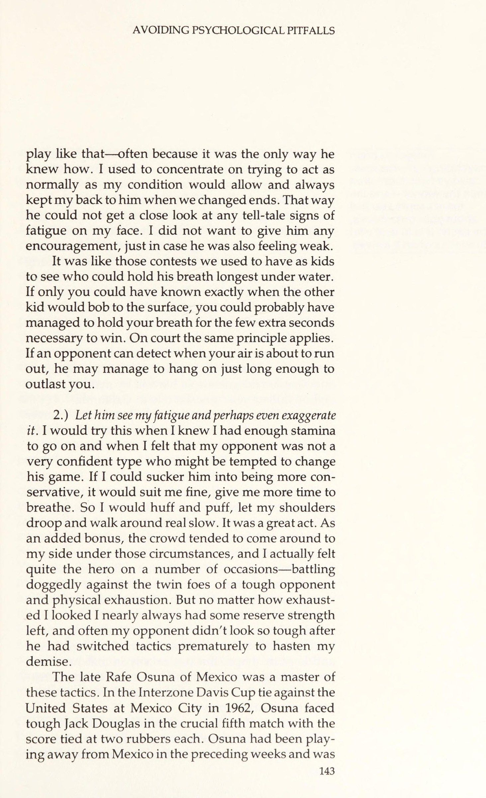
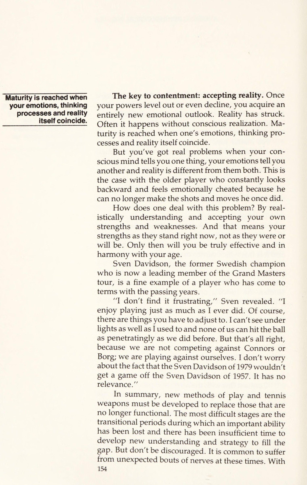
Một trong những điều đầu tiên một phi công tập sự học được khi bay trong thời tiết bão tố là không để bị thu hút bởi những khoảng trống xuất hiện trên mây — chúng tôi gọi chúng là lỗ hút. Chúng gọi mời bạn một cách cám dỗ đúng vào lúc bạn nên quay lại.
CHAPTER 11. AVOIDING PSYCHOLOGICAL PITFALLS One of the first things a trainee pilot learns in stormy weather is not to get taken in by those spaces that appear in the clouds—sucker holes, we call them. They beckon you on temptingly when you should turn back.
Thật đáng tiếc cho một tay vợt khi không thể học nhanh như phi công lúc bị thương, bởi những đối thủ mệt mỏi cũng tạo ra những lỗ hút tương tự ở phần sân của họ. Tôi thường thấy các tay vợt thay đổi một lối chơi đang thắng để cố tận dụng một đối thủ đang mệt mỏi hay gặp chấn thương nhẹ. Họ không thỏa mãn với lối chơi thông thường của mình. Họ muốn có một chiến thắng chắc chắn, nên họ háo hức với những gì trông như một lối mở dễ dàng. Thế nhưng mọi chuyện thường chẳng dễ dàng như họ dự đoán.
It is a pity tennis players don’t learn as fast as pilots when injured, for weary opponents offer up the same kind of sucker holes on their side of the court. I have often seen players change a winning game to try and take advantage of an opponent who is tiring or suffering from some small injury. They are not content to play their normal games. They want a sure victory so they pounce eagerly on what looks like an easy opening. It is often not as easy as they anticipate.
Điều gì thường xảy ra? Người chơi bị hút vào chiến thuật chuyển đổi giờ phải bắn những phát mà anh ta không quen. Với các mẫu bình thường của mình bị gạt sang một bên, anh ta thường bị mất nhịp, thời gian và có thể là trận đấu.
What usually happens? The player who has been sucked into switching tactics must now hit shots with which he is not familiar. With his normal patterns cast aside, he often ends up losing his rhythm, timing and maybe the match.
Anh ấy sẽ làm tốt hơn nếu anh ấy ở lại khóa học và tiếp tục chơi theo cách anh ấy làm bình thường. Trong hầu hết các trường hợp, thật không khôn ngoan khi đột nhiên bắt đầu làm điều gì đó khác đi chỉ vì đối thủ của bạn bị thương hoặc mệt mỏi.
He would have done better had he stayed on course and continued to play the way he does normal- ly. In most circumstances, it is very unwise to sud- denly start doing something differently just because your opponent gets injured or tired.
Chúng ta hãy xem xét chi tiết những điều khác nhau có thể xảy ra khi bạn hoặc đối thủ của bạn bị tàn tật vì mệt mỏi, chấn thương hoặc lão hóa — vì những điều cuối cùng về cơ bản không khác gì những người khác. Lão hóa là một trường hợp chấn thương dần dần không lành. Không phải là một cách dễ chịu để nhìn vào nó có lẽ, nhưng là sự thật.
Let us look in detail at various things that can happen when either you or your opponent is handi- capped by fatigue, injury or aging—for the last of these is basically no different from the others. Aging is a case of gradual injury that doesn’t heal. Not a pleas- ant way of looking at it perhaps, but true.
Mệt Mỏi
Bất cứ ai đã từng tham gia một trận đấu dài và khó khăn đều biết đó là khoảnh khắc nhẹ nhõm khi bạn bỗng nhận ra người ở bên kia lưới có vẻ còn tệ hơn cả bạn. Anh ấy bắt đầu thở dốc, bước đi giữa các điểm đã mất sự nhanh nhẹn, và một khi bóng đang chơi, anh ấy cũng chẳng thể bao quát được cả sân. "Tốt," bạn tự nhủ, "Tôi đã thắng anh ta rồi. Anh ta sẽ chẳng trụ được lâu hơn nữa. Tất cả những gì tôi phải làm là kéo dài trận đấu, bắt anh ta chạy và không tự đánh hỏng."
FATIGUE When your opponent is tired. Anyone who has been in a long, tough match knows what a reassuring moment it is when you suddenly realize the person on the other side of the net is in even worse shape than you are. He starts to puff, his step in between points has lost its spring, and once the ball is in play, he is not covering the court as well. ““Good,”’ you think to your- self, “I’ve got him. He’s not going to be able to last much longer.
Nghe có vẻ như một kế hoạch tuyệt vời. Nhưng thực ra không phải vậy. Bởi vì lo sợ mình đánh hỏng, bạn thay đổi lối chơi và trở nên dễ đoán. Thay vì ép sân và tận dụng cơ hội, bạn bắt đầu đánh bóng vào giữa sân. Thay vì ép anh ta chạy nhiều hơn, cuối cùng bạn lại ép anh ta chạy ít đi. Thay vì lên lưới sau những cú đánh ngắn của anh ta để kết liễu, bạn lại bị cám dỗ né tránh và kéo dài trận đấu với anh ta. Nỗi ám ảnh phải bắt anh ta chạy khiến bạn thử thả những cú bỏ nhỏ và lob — bất cứ thứ gì để làm giảm sức mạnh của anh ta. Nhưng rất ít tay vợt có thể bỗng dưng tung ra những cú bỏ nhỏ hoàn hảo. Khả năng cao là bạn sẽ ghi được vài điểm hoặc đánh quá dài để anh ta giành lại những điểm đáng lẽ bạn đã kết thúc.
All I have to do is work him, make him run and not make any mistakes.”’ It sounds like a terrific plan. But it isn’t. Because in your anxiety not to make mistakes, you change your game and become tentative. Instead of going for the sidelines and taking your chances, you start hitting down the middle. Instead of running him more, you end up running him less. Instead of approaching the net on his short shots and going for the kill, there is the temptation to hang back and work him over. The need to make him run becomes almost an obsession, so you try drop shots and lobs—anything to sap his strength. But few players can suddenly start hitting drop shots to perfection.
Tự thuyết phục bản thân rằng điều này không sao cả vì bạn đang làm anh ta mệt mỏi trong quá trình này là suy nghĩ nguy hiểm. Cho dù anh ta có trở nên kiệt sức hay không, một điều chắc chắn là bạn đang phá hỏng nhịp điệu của mình. Sau này, nếu đối thủ của bạn không bắt buộc bằng cách sụp đổ khi bạn muốn anh ta, bạn có thể không thể phục hồi nhịp đó khi bạn cần.
The chances are you will net a few or hit some too long so that he is able to get back some points you should have finished off. Convincing yourself that this is all right because you are tiring him out in the process is dangerous thinking. Whether or not he is becoming exhausted, one thing that is certain is that you are wrecking your rhythm.
Nhưng ngoài kết quả vật lý của bất kỳ thay đổi nào trong chiến lược, đó là một mưu đồ tâm lý tồi để thay đổi trò chơi của bạn ở giai đoạn này.
Later on, if your opponent doesn’t oblige by collapsing when you want him to, you may not be able to recover that rhythm when you need it. But quite apart from the physical result of any
Mệt mỏi là một phần tinh thần. Nếu bạn đang chơi một trận đấu khó khăn và chiếm thế thượng phong, đối thủ của bạn sẽ mệt mỏi hơn so với khi anh ta có lợi thế. Không có gì mệt mỏi hơn là tranh giành bóng sau bóng và mất điểm. Nếu một người chơi thấy không có điểm yếu trong áo giáp đối thủ của mình, sự mệt mỏi dường như giảm xuống với sự vội vàng không đáng có. Cho anh ta một lỗ mở và nó có thể bốc hơi. Hơn nữa, đến cuối trận đấu, tâm lý của một người mệt mỏi là của một người không có gì để mất.
change in strategy, it is a bad psychological ploy to alter your game at this stage. Tiredness is partly mental. If you are playing a tough match and have the upper hand, your opponent will be more tired than when he has the advantage. There is nothing more exhausting than scrambling for ball after ball and losing the points. If a player sees no weakness in his opponent’s armor, fatigue seems to descend with undue haste. Give him an opening and it may evaporate.
Khi ý chí của một người chơi kiệt sức rút đi, khả năng thất bại trở thành xác suất ’. Và một khi anh ta chấp nhận xác suất đó thì áp lực đã tắt. Anh ấy bắt đầu cảm thấy thư giãn. Mọi thứ dường như dễ dàng hơn một chút. Sự căng thẳng bắt đầu giảm bớt và anh ấy không cảm thấy quá tệ. Và nếu trên hết, bạn đột nhiên chuyển đổi chiến thuật và trở nên rất bảo thủ, đối thủ của bạn sẽ thoáng thấy tia sáng ban ngày đầu tiên anh ta nhìn thấy trong một tập hợp trở lên. Mỗi lần anh ấy tranh giành một điểm mà bạn nên đóng đinh, tinh thần của anh ấy được cải thiện. Nếu bạn không kết thúc anh ta, nếu cú đấm loại trực tiếp mà anh ta mong đợi không bao giờ đến, anh ta có thể bắt đầu cảm thấy khá tốt trở lại — đủ tốt để quay lại và giành chiến thắng. Vậy tại sao lại thay đổi? Chính trò chơi bình thường của bạn đã khiến anh ấy mệt mỏi ngay từ đầu — rõ ràng là bạn đã chạy anh ấy đủ rồi. Vì vậy, hãy bám vào nó.
Moreover, toward the end of a match the psychology ofa tired person is that of some- one who has nothing to lose. As the will of an exhausted player drains away, the possibility of defeat becomes’ probability. And once he accepts that probability the pressure is off. He starts to feel relaxed. Everything seems just that little bit easier. The tension starts to ease and he doesn’t feel so bad. And if, on top of all that, you suddenly switch tactics and become very conservative, your opponent will glimpse the first ray of daylight he has seen ina set or more. Every time he scrambles out of a point you should have nailed, his morale improves. If you fail to finish him off, if the knockout punch he has been expecting never comes, he may just start feeling pretty good again—good enough to come back and win.
Khi bạn mệt mỏi. Tôi đã từng tiếp cận vấn đề này theo hai cách hoàn toàn ngược lại, tùy thuộc vào hoàn cảnh: 1. )
So why change? It was your normal game that got him tired in the first place—apparently you were running him enough then.
Không bao giờ để đối thủ thấy tôi mệt mỏi. Tôi sẽ cố che giấu sự mệt mỏi của mình tốt nhất có thể mỗi khi đấu với một tay vợt chơi lối giao bóng và vô-lê tự tin, ăn chắc trên sân xi măng hay cỏ. Tại sao? Bởi vì khả năng cao là anh ta sẽ chẳng thay đổi lối chơi dù tôi sống hay chết. Với lối chơi đó trên mặt sân đó, anh ta hầu như chẳng có lựa chọn nào. Anh ấy buộc phải chơi như thế — thường vì đó là cách duy nhất anh ấy biết. Tôi từng tập trung cố gắng hành xử bình thường trong giới hạn thể trạng cho phép, và luôn giữ mình sát bên anh ấy mỗi khi đổi sân. Như vậy, anh ta không thể soi kỹ bất kỳ dấu hiệu mệt mỏi nào trên mặt tôi. Tôi không muốn tiếp thêm tự tin cho anh ta, phòng khi anh ta cũng đang thấy yếu đi.
So stick to it. When you are tired. I used to approach this prob- lem in two quite opposite ways, depending on the circumstances: 1.) Never let my opponent see I was tired. 1 would try to hide my fatigue as best I could whenever I was playing a big-hitting, confident serve-and-volley player on cement or grass. Why? Because the chances were he was not going to change his game whether I lived or died. With a style like that on a surface like that, his options were virtually non-existent. He had to
Nó giống như những cuộc thi mà chúng ta từng có khi còn nhỏ để xem ai có thể nín thở lâu nhất dưới nước. Nếu chỉ bạn có thể biết chính xác khi nào đứa trẻ kia sẽ nổi lên mặt nước, có lẽ bạn đã có thể nín thở trong vài giây cần thiết để giành chiến thắng. Trên sân áp dụng nguyên tắc tương tự. Nếu đối thủ có thể phát hiện khi không khí của bạn sắp hết, anh ta có thể xoay sở đủ lâu để tồn tại lâu hơn bạn.
play like that—often because it was the only way he knew how. I used to concentrate on trying to act as normally as my condition would allow and always kept my back to him when we changed ends. That way he could not get a close look at any tell-tale signs of fatigue on my face. I did not want to give him any encouragement, just in case he was also feeling weak. It was like those contests we used to have as kids to see who could hold his breath longest under water.
2. ) Hãy để anh ấy thấy sự mệt mỏi của tôi và thậm chí có thể phóng đại nó. Tôi sẽ thử điều này khi tôi biết rằng tôi có đủ sức chịu đựng để tiếp tục và khi tôi cảm thấy rằng đối thủ của mình không phải là một người rất tự tin, người có thể bị cám dỗ thay đổi trò chơi của mình. Nếu tôi có thể hút anh ta trở nên bảo thủ hơn, nó sẽ phù hợp với tôi, cho tôi thêm thời gian để thở. Vì vậy, tôi sẽ giận dữ và thở hổn hển, để vai tôi rủ xuống và đi bộ xung quanh thật chậm. Đó là một hành động tuyệt vời. Như một phần thưởng bổ sung, đám đông có xu hướng đến bên tôi trong những trường hợp đó, và tôi thực sự cảm thấy khá anh hùng trong một số dịp — chiến đấu kiên quyết chống lại kẻ thù sinh đôi của một đối thủ khó khăn và kiệt sức về thể chất. Nhưng dù trông tôi có kiệt sức đến đâu, tôi gần như luôn có một chút sức mạnh dự bị, và thường thì đối thủ của tôi đã không trông rất khó khăn sau khi anh ta chuyển chiến thuật sớm để đẩy nhanh sự sụp đổ của tôi.
If only you could have known exactly when the other kid would bob to the surface, you could probably have managed to hold your breath for the few extra seconds necessary to win. On court the same principle applies. If an opponent can detect when your air is about to run out, he may manage to hang on just long enough to outlast you. 2.) Let him see my fatigue and perhaps even exaggerate it. | would try this when I knew I had enough stamina to go on and when I felt that my opponent was not a very confident type who might be tempted to change his game. If I could sucker him into being more con- servative, it would suit me fine, give me more time to breathe. So I would huff and puff, let my shoulders droop and walk around real slow. It was a great act. As an added bonus, the crowd tended to come around to my side under those circumstances, and I actually felt quite the hero on a number of occasions—battling doggedly against the twin foes of a tough opponent and physical exhaustion.
Rafe Osuna quá cố của Mexico là bậc thầy về các chiến thuật này. Trong trận đấu giữa Cúp Davis với Hoa Kỳ tại Mexico City năm 1962, Osuna phải đối mặt với Jack Douglas khó khăn trong trận đấu thứ năm quan trọng với tỷ số được buộc ở hai cao su. Osuna đã chơi xa Mexico trong những tuần trước đó và không được thích nghi với độ cao 6.000 feet. Tất nhiên, Douglas cũng vậy, với tư cách là một ngôi sao bóng đá cũ ở Stanford, anh ta mạnh mẽ như một con ngựa. Osuna, mặt khác, luôn trông yếu đuối — thường lừa dối như vậy.
But no matter how exhaust- ed I looked I nearly always had some reserve strength left, and often my opponent didn’t look so tough after he had switched tactics prematurely to hasten my demise. The late Rafe Osuna of Mexico was a master of these tactics. In the Interzone Davis Cup tie against the United States at Mexico City in 1962, Osuna faced tough Jack Douglas in the crucial fifth match with the score tied at two rubbers each. Osuna had been play- ing away from Mexico in the preceding weeks and was
Mặc dù Osuna đã dẫn trước sớm, Douglas đã chiến đấu trở lại và san bằng tỷ số sau hai set. Đến lúc này, Osuna đang đảo mắt lên trời và ngồi bẹp xuống ghế giữa các game, hít bình oxy. Douglas thư giãn và điều đó tỏ ra nguy hiểm. Trước sự reo hò cuồng nhiệt của 8.000 khán giả Mexico giàu tính đảng phái, Osuna đã tự mình bật dậy từ cõi chết để thắng set thứ năm và sau đó òa khóc trong vòng tay đồng hương. Douglas trở về Hoa Kỳ trong sự chán nản và ghê tởm màn trình diễn của chính mình. Anh ấy không bao giờ thi đấu quốc tế lần nào nữa, và buộc phải tự thân kiếm vài triệu đô la nhờ kinh doanh bất động sản ở California.
Fatigue is often psychological—the loser always feels more tired than the winner—and the more secure you feel about your own fitness, the easier it is to deal with tiredness when it arrives. not acclimatized to the 6,000-foot altitude. Of course, neither was Douglas but, as an ex-football star at Stan- ford, he was as strong as a horse. Osuna, on the other hand, always looked weak—usually deceptively so. Although Osuna took an early lead, Douglas fought back and leveled the score at two sets all. By now, Osuna was rolling his eyes to the heavens and flopping down in his chair between games, sucking oxygen. Douglas relaxed and it proved fatal.
Ken Rosewall là một chuyên gia tàn nhẫn khác, người mà chẳng bao giờ có thể tin là mệt mỏi như vẻ bề ngoài. Bất cứ ai theo dõi trận chung kết WCT kinh điển của ông ấy với Rod Laver ở Dallas sẽ không bao giờ quên được Kenny bé nhỏ đã kiệt sức thế nào trong loạt tiebreak set thứ năm. Dĩ nhiên, ông ấy đã làm thế để đánh lừa một đối thủ dạn dày như Laver; có lẽ ông ấy thực sự đã khá mệt, nhưng chỉ thể hiện điều đó giữa các điểm. Với Laver đang dẫn trước và cầm giao bóng để kết thúc trận đấu, Rosewall di chuyển như chớp ngay khi bóng còn trong cuộc. Ông ấy tung hai cú giao bóng trái tay xuống cổ Rocket, rồi giao bóng ghi điểm quyết định để thắng trận trong một chuỗi quần vợt sắc như dao cạo. Nếu Rosewall thực sự là một người đàn ông mệt mỏi, thì Laver cũng chẳng khá hơn.
To the ultimate glee of 8,000 wildly partisan Mexicans, Osuna raised himself from the ranks of the near dead to run out the fifth set and then collapse tearfully into the arms of his countrymen. Douglas returned to the United States dejected and disgusted with his per- formance. He never competed internationally again and was forced to console himself by making several million dollars selling real estate in California. Ken Rosewall is another wily pro who can never be counted on to be as tired as he looks. Anyone who watched that classic WCT final of his against Rod Laver in Dallas will never forget how exhausted little Kenny appeared in the fifth set tie breaker. He wasn’t doing it to fool as experienced an opponent as Laver, of course; he probably was pretty tired. But he only looked it between points. With Laver ahead and serving to finish off the match, Rosewall moved like lightning the instant the ball was in play.
Cho đến năm cuối đại học, tôi luôn gặp rắc rối vì mệt mỏi, mặc dù tôi đã luyện tập nhiều giờ và giữ dáng. Nhưng chỉ trong các trận đấu mà tôi dường như mệt mỏi, đó là một trong những lý do chính tại sao, trong những ngày đó, tôi là một người chơi thực hành tốt hơn nhiều so với người chơi trận đấu.
He rammed two back- hand service returns down Rocket's throat and served out the last point to win the match in a flurry of razor-sharp tennis. If Rosewall was indeed a weary man, it did Laver no good. , Until my senior year at college, I was always trou- bled by tiredness, even though I practiced long hours and kept in shape.
Sau đó, vào năm 1961, tôi bắt đầu chạy mỗi ngày. Không ai bảo tôi nên chạy bao xa nên tôi thường tự đi và hoàn thành chừng một dặm. Với một vận động viên, đó không phải là quãng đường dài, và chẳng mấy liên quan đến loại sức bền cần thiết để kéo dài qua những trận đấu năm set mà không bị đứt quãng.
But it was only in matches that I seemed to get tired, which was one of the main rea- sons why, in those days, I was a much better practice player than match player. Then, in 1961, I started to run every day. No one told me how far I should run so J used to go off on my own and complete about a mile. That, for an athlete, is
Nhưng, bất kể việc chạy vài dặm có ích về mặt thể chất hay không, nó là một cú hích tâm lý to lớn. Tôi đã thắng thêm nhiều trận ngay sau khi bắt đầu chạy. Tôi tự thuyết phục mình rằng mình mạnh hơn đối thủ, rằng mình có thể trụ lâu hơn anh ta nếu cuộc chiến đặt vào câu hỏi về sức bền. Niềm tin ấy cho tôi ý chí chiến đấu ở những nơi trước đây tôi đã chịu đầu hàng. Nó giúp tôi nhận ra mình có trữ lượng năng lượng thể chất lớn hơn nhiều so với tưởng tượng. Và, quả thực, điều này đúng với tất cả mọi người. Cũng như chúng ta không dùng hết năng lượng não bộ sẵn có, thì ta cũng hiếm khi tận dụng hết mọi nguồn lực thể chất trong tay...
not a great distance and bears little relation to the kind of stamina required to last through five-set matches without tie breakers. But, whether or not my little mile run was helpful physically, it was an enormous boost psychologically. I won many more matches shortly after I started run- ning. I had become convinced that I was stronger than my opponent, that I could outlast him if it came to a question of endurance. This belief gave me the will to fight on where previously I would have folded. It made me realize that I had a far greater reserve of physical energy than I thought. And, certainly, this is true of everyone.
Nhiều tay vợt ở thời kỳ thể trạng đỉnh cao nhất cũng từng tự làm mình kinh ngạc bởi những gì họ đạt được trong cái gọi là điều kiện bất lợi. Chẳng hạn, tại giải Ata ở St. Petersburg, Fla., tôi đã đi chơi thâu đêm sau khi đánh bại Jaime Fillol, khi ấy là một sinh viên trẻ tại Đại học Miami, ở bán kết. Đó là một cuộc ăn mừng vui vẻ, nhưng hầu như chẳng phải sự chuẩn bị đúng đắn để gặp tay vợt Nam Tư tài năng Nikki Pilić ở chung kết. Tôi nhớ mình về tới khách sạn lúc bình minh và ngủ đến tận nửa giờ trước giờ thi đấu. Tôi mệt lả người sau vài quả bóng đầu tiên. Nhưng tôi đã chơi cầm chừng hết mức có thể, giữ nhịp độ của riêng mình, bám trụ ở đó, và cuối cùng Pilic cũng kiệt sức và bỏ cuộc ở set thứ năm. Giá anh mà biết! Nhưng cũng chính nhờ niềm tin căn bản vào thể trạng của mình mà tôi có thể ép bản thân thi đấu lâu đến thế.
Just as we do not use all the brain power nature made available to us, so we rarely use all the physical resources at our disposal. As we have noted, fatigue is often psychological—the loser always feels more tired than the winner—and the more secure you feel about your own fitness, the easier it is to deal with tiredness when it arrives. Many players during their years of peak physical condition surprise themselves by what they can achieve under what might be described as adverse conditions. Ata tournament in St. Petersburg, Fla., for example, I went on an all-night binge after beating Jaime Fillol, then a young student at Miami Univer- sity, in the semifinal. It was a fun celebration, but hardly the right preparation for meeting the talented Yugoslav, Nikki Pilic, in the final. I remember stagger- ing back to my hotel with the dawn and sleeping until half an hour before match time.
Đối Phó Với Chấn Thương
Khi bạn đang bị một loại suy nhược thể chất nào đó, có thể gặp phải một sự thay đổi đột ngột về áp lực. Từ việc khá thoải mái — trạng thái bình thường khi bạn cảm thấy hoàn toàn không có cơ hội chiến thắng — bạn có thể đột nhiên chịu áp lực mạnh mẽ, nếu bạn xoay sở để tự mình vào vị trí chiến thắng. Lần đầu tiên ở đó, bạn biết đó là câu hỏi của bây giờ hoặc không bao giờ. Tình trạng của bạn sẽ không cho phép bạn quay lại lần thứ hai, vì vậy cơ hội để giao bóng cho trận đấu hoặc đạt điểm trận đấu mang theo một loại căng thẳng tuyệt vọng rất đặc biệt.
I was dead tired after hitting the first couple of balls. But I stalled as much as I could, played at my own pace, hung in there, and eventually Pilic got tired and quit in the fifth set. If he only knew! But it was also because I had a basic confi- dence in my overall condition that I was able to force myself to keep going that long. COPING WITH INJURIES When you are suffering from some kind of physical debility, it is possible to experience a sudden switch in
Trong trận đấu sớm với John Alexander tại Giải vô địch Pháp năm 1968, vấn đề của tôi là bữa ăn tôi đã có vào đêm hôm trước với một người Úc khác, Bob Carmichael. Chúng tôi đã tìm thấy một nhà hàng Alsatian nhỏ phục vụ những gì dường như là món ngon và dưa cải bắp. Thật không may, nó không tốt như vẻ ngoài của nó. Trong khi dạ dày của Carmichael, giống như giọng nói chủ nhân của nó, chỉ đơn thuần gầm gừ (Vâng, bạn đời, cảm thấy một chút co thắt — không có gì quá nghiêm trọng, mặc dù vậy) tôi đã nổi loạn. Tôi thức cả đêm và khi tôi đi trên sân mà không có gì bên trong tôi ngoại trừ trà và một miếng bánh mì nướng khô, tôi hầu như không ở trong tình trạng tuyệt vời để đi năm bộ trên đất sét châu Âu chậm.
pressure. From being quite relaxed—a normal state when you feel you have absolutely no chance of vic- tory—you can suddenly come under intense pres- sure, if you manage to work yourself into a winning position. For once there, you know it is a question of now or never. Your condition is not going to allow you to come back a second time, so the chance to serve for the match or reach match point carries with it a very special kind of desperate tension. In an early-round match against Jonn Alexander at the 1968 French Championships, my problem wasa meal I had had the night before with another Aussie, Bob Carmichael. We had found a little Alsatian restau- rant serving what seemed to be delicious knockwurst and sauerkraut.
Nhưng đúng bốn tiếng rưỡi sau đó, khi set thứ năm bắt đầu, tôi đã ở trong tình trạng cực tệ. Tôi bắt đầu bị chuột rút và không dám uống thuốc muối với cái bụng đang làm mình làm mẩy. Dù vậy, tôi vẫn vật lộn và vươn tới 6-5, 30-15 khi cầm giao bóng. Cho đến lúc đó, tôi đã cẩn thận không làm bất cứ cử động điên rồ nào về thể chất để giữ cho cơn chuột rút không bùng phát.
Unfortunately, it wasn’t as good as it looked. While Carmichael’s stomach, like its master’s voice, had merely growled (Yeah, mate, felt a bit of a twinge—nothing too serious, though”) mine had re- belled. I was up all night and when I walked on court with nothing inside me except tea and a piece of dry toast, I was hardly in terrific condition to go five sets on slow European clay. But by the time the fifth set duly arrived four anda half hours later, I was in really bad shape.
Nhưng ở điểm tiếp theo, tôi băng lên lưới ngay sau cú giao bóng của mình và Alexander tung một cú trái tay chạm dải băng, bật lên và treo ở đó — cú lob của mọi cú lob. Trước viễn cảnh có trong tay hai điểm trận đấu, thay vì ghim nó cẩn thận ra ngoài tầm với của anh ấy, tôi nhảy lên và đóng đinh nó hết sức có thể. Ngay khi tôi đánh nó, tôi cảm thấy mọi cơ bắp trên người mình cứng đờ. Tôi gục xuống trong một cơn đau quặn. Và ở đó, tôi chình ình trong tư thế lố bịch: có hai điểm trận đấu trong tay mà chẳng thể đứng dậy để đánh tiếp.
I had started cramping and I didn’t dare take salt pills with my dodgy stomach. However, I struggled on and got to 6-5, 30-15 on my serve. Until then, I had been careful not to do anything extravagant physically so as to keep the cramps at bay. But on the next point, I came to net behind my serve and Alexander hit a backhand return which hit the tape, bounced up and hung there—the sitter of all sitters. I got so excited at the prospect of two match points that, instead of placing it carefully out of his reach, I leaped up and nailed it as hard as I could.
Harry Hopman, huấn luyện viên Davis Cup vĩ đại người Úc đang chăm sóc Alexander lúc đó, rất thể thao và bảo Alexander cho tôi vài phút để hồi phục. Tôi mất khoảng năm phút, và khi quay lại vị trí giao bóng, tôi biết mình chỉ còn chừng bốn cú đánh trong người — bốn cú để kết thúc trận đấu. Có thêm chút nữa là tôi chắc chắn lại gục xuống. Tôi tung ra một cú giao bóng, và Alexander, người cũng hóa đá như tôi, đẩy trả một quả bóng nhỏ xuống giữa sân rồi lao lên lưới. "Tuyệt vời!" tôi nghĩ, "đó chính là chỗ tôi muốn anh ta." Nhưng, một lần nữa, tôi quá phấn khích và đánh theo thói quen định sẵn. Tôi sắp lặp lại lỗi cũ, nên đã tự tạo ra một lỗi khác. Ở điểm trận đấu thứ hai, tôi lập tức lúng túng bước vào lưới. Tên hèn nhát đã đánh lob tôi! Tôi không thể nhảy, và thế là hết. Tỷ số 40–40 và tôi bỏ cuộc. Áp lực vì biết mình phải giành một trong hai điểm ấy là quá sức chịu đựng. Tôi đành đầu hàng và thề sẽ chẳng bao giờ ăn dưa cải bắp ở Pháp nữa.
As I hit it I felt every muscle in my body seize up. I went down in a knot of pain. There I was in the ridiculous position of having two match points and not being able to stand up to play them. Harry Hopman, the great Australian Davis Cup coach who was looking after Alexander at the time, was very sporting and told Alexander to give me some time to recover. It took me about five minutes and when I managed to get back into the serving position, I knew I had about four shots left in me—four shots to finish the match. More than that and I was sure to go down again. I pooped ina serve and Alexander, who was as petrified as I, pushed back a little ball down the middle and charged the net. “Great! I thought, “that’s just where I want him. But, again, I got too excited and hit the intended passing shot way out. I wouldn’t make that mistake again, so I made a dif- ferent one. On the second match point, I immediately came hobbling into the net myself. The coward lobbed me! I couldn’t jump and that was it.
Sử dụng ý thức chung của bạn. Yếu tố tâm lý suy nhược nhất mà người ta phải đối mặt với chấn thương không phải là nỗi đau, nhưng nỗi sợ rằng chơi với chấn thương sẽ gây thêm thiệt hại. Nói chung, đau dữ dội phục vụ một mục đích. Đó là một tín hiệu cảnh báo rằng thiệt hại đang xảy ra đối với một số bộ phận của cơ thể và các biện pháp bảo vệ cần phải được thực hiện.
Deuce and I quit. The pressure of knowing I had to win one of those two points had been too much. I defaulted and vowed never to eat sauerkraut in France again. Use your common sense. The most debilitating psychological factor one faces with injury is not the pain itself, but the fear that playing with the injury will cause further damage. Generally, severe pain serves a purpose.
Nhưng hầu hết các chấn thương quần vợt đều ít hơn nghiêm trọng. Cơ bắp và gân bị rách hoặc kéo nhẹ gây khó chịu. Nhưng với điều kiện bạn không phải nghiến răng vì đau, thường thì chơi ổn. Nếu bạn có thể bù đắp bằng một cách nào đó để chấn thương không bị căng thẳng hoàn toàn, bạn không có khả năng tự làm tổn thương thêm. Hướng dẫn thông thường của tôi để xác định xem có nên nghỉ chấn thương hay chơi trên đó rất phức tạp và khoa học: Chơi trên đó và, nếu nó trở nên tồi tệ hơn, hãy bỏ!
It is a warning signal that damage is occur- ring to certain parts of the body and that protective measures need to be taken. But most tennis injuries are less than severe. Slightly torn or pulled muscles and tendons cause discomfort. But providing you do not have to grit your teeth in pain, it is usually all right to play. If you can compensate in some way so that the injury is not taking full stress, you are unlikely to damage yourself further. My usual guideline for determining whether to rest an injury or play on it is very complex and scientific: Play on it and, if it gets worse, quit!
Hướng dẫn mới nhất từ giới y học thể thao là chấn thương nên được chườm đá thường xuyên và nghỉ ngơi trong 24 đến 48 giờ đầu tiên sau khi xảy ra. Với giả định mô đã bị rách, điều này sẽ giúp đông máu, giảm rò rỉ dịch và sưng tấy. Sau đó, nên bắt đầu trị liệu nhiệt và tập vận động "hợp lý" để tăng lưu thông máu và thúc đẩy việc lành thương.
The latest party line among sports medicine prac- titioners is that an injury should be iced regularly and rested for the first 24 to 48 hours after the injury occurs. On the assumption that tissue has been torn, this will allow coagulation and decrease fluid seepage My guideline for : determining whether to rest an injury or play on & is: Play on it and, if it gets worse, quit! |
Từ “hợp lý,”tất nhiên, mơ hồ và mở ra cho nhiều cách hiểu khác nhau. Thật không may, y học chỉnh hình chưa phải là khoa học tiên tiến mà chúng tôi muốn nó trở thành. Tất cả quá thường xuyên, chúng tôi buộc phải sống với sự mơ hồ. Vì vậy, hãy chuẩn bị để sử dụng một thước đo tốt về trực giác và ý thức chung của bạn trong việc xử lý các chấn thương nhỏ. Bạn chắc chắn nên tìm kiếm lời khuyên của bác sĩ hoặc huấn luyện viên nếu bạn không chắc chắn hoặc không quen thuộc với loại chấn thương bạn đã nhận được. Anh ta có thể không thể làm được gì nhiều, nhưng một ý kiến chuyên gia ít nhất có thể làm dịu tâm trí của bạn.
and swelling. After that, heat treatment and “rea- sonable” exercise should begin so as to increase blood circulation and promote healing. The word “reasonable,” of course, is vague and open to a variety of interpretations. Unfortunately, orthopedic medicine is not yet the advanced science we would like it to be. All too often, we are forced to live with ambiguity. So be prepared to use a good measure of your own intuition and common sense in dealing with minor injuries. You should certainly seek the advice of a doctor or trainer if you are in any way unsure or unfamiliar with the type of injury you have received.
Một trong số ít lợi ích thể chất của tuổi già là bạn hiểu cơ thể mình rõ hơn. Bạn nhận ra vết thương nào lành nhanh, vết nào không, và những tín hiệu đau đớn ấy có nghĩa là gì. Không một huấn luyện viên, gia sư hay bác sĩ nào có thể cho bạn biết chính xác chấn thương cụ thể của bạn nghiêm trọng đến mức nào, hay chính xác lúc nào nó đau. Thước đo duy nhất hoàn toàn chính xác cho cơn đau nằm ngay trong não của người bệnh. Bạn càng sớm đọc được các tín hiệu một cách chính xác và kết hợp chúng với kinh nghiệm quá khứ, thì càng sớm có thể tự chăm sóc cơ thể mình.
He may not be able to do much, but an expert opinion may at least ease your mind. One of the few physical benefits of growing older is that you get to know your body better. You learn which injuries heal quickly, which don’t and what the pain signals mean. No coach, trainer or doctor can tell precisely how much your particular injury hurts or precisely when it hurts. The only absolutely true mon- itoring device for pain lies in the brain of the sufferer.
Chơi với nỗi đau là chuyện bình thường. Dù có mọi sự hỗ trợ (nhiều huấn luyện viên hàng đầu giờ thường xuyên đi cùng các tour diễn thế giới), các chuyên gia cũng nhanh chóng trở thành chuyên gia trong việc đọc tín hiệu cơ thể của chính họ. Tại hầu hết các giải đấu trong tour diễn chuyên nghiệp, nghi thức khởi động trong phòng thay đồ bao gồm hàng loạt thao tác bôi liniment, dán băng, đeo đai và xoa bóp của huấn luyện viên. Rất ít tay vợt bước ra sân mà hoàn toàn không bị thương hay đau đớn.
The sooner you are able to read the signals correctly and match them up with past experience, the sooner you will be able to look after your own body properly. Playing with pain is the norm. Despite all the assistance that is available to them (many top trainers now travel regularly on the world circuit), the pros quickly become experts at reading their own body signals. At most tournaments on the pro tour, pre- match rituals in the locker rooms include a vast array of liniment applications, tapings, strappings and rub- downs by the trainer.
Todd Fullerton, người đi theo tour toàn thời gian với tư cách huấn luyện viên ATP, thấu hiểu hơn ai hết những vấn đề thể chất mà các tay vợt mang ra sân cùng mình. Fullerton nói: "Tôi sẽ nói không quá năm phần trăm người chơi trong tour diễn hoàn toàn không chấn thương, nhưng nhờ sự trợ giúp của việc dán băng hay xoa bóp, họ chỉ cần ra sân và học cách sống chung với nó."
Few pros walk on court totally free from injury or pain. Todd Fullerton, who travels the international cir- cuit full time as the ATP trainer, knows better than anyone just what kind of physical problems the players carry on court with them. Says Fullerton, “I would say no more than five percent of players on the tour are totally free of injury, but with the help of a
Chơi với chấn thương không có nhiều niềm vui, nhưng nó được chấp nhận như một phần của cuộc sống trong điền kinh cạnh tranh. Tom Gorman và Dick Stockton bị chấn thương lưng mãn tính và hiếm khi chơi mà không mặc áo nịt lưng đầy đủ. Mặc dù có nhiều thành tích giành được danh hiệu, cựu Hoa Kỳ Open Champion Manolo Orantes hiếm khi quản lý một khoảng thời gian 12 tháng không có vấn đề khá nghiêm trọng về đầu gối, khuỷu tay hoặc lưng trong sáu năm qua. Bob Lutz đã có cả hai đầu gối hoạt động, cũng như Billie Jean King. Tốc độ Evonne Goolagong đã bị cản trở bởi một gân Achilles bị hư hỏng trong suốt năm 1978 và phẫu thuật đã được dự tính. Stan Smith và Tony Roche đã gặp vấn đề về khuỷu tay khủng khiếp (như hầu hết các chuyên gia lúc này hay lúc khác, mặc dù ít nghiêm trọng hơn) và Arthur Ashe đi khập khiễng trong nhiều năm, giành được hàng trăm ngàn đô la mỗi năm, trước khi xương mọc trên gót chân cuối cùng đã buộc anh ta vào bàn mổ.
taping or a rub they just get out on court and learn to live with it. Playing with injury is not much fun, but it is accepted as part of life in competitive athletics. Tom Gorman and Dick Stockton have chronic back injuries and rarely play without wearing full back corsets. De- spite his numerous title-winning achievements, former U.S. Open Champion Manolo Orantes has rarely managed a 12-month period free of quite serious knee, elbow or back problems during the past six years. Bob Lutz has had both knees operated on, as has Billie Jean King. Evonne Goolagong’s speed was hampered by a damaged Achilles tendon during much of 1978 and surgery was contemplated. Stan Smith and Tony Roche have had terrible elbow problems (as have most pros at one time or another, although less severely) and Arthur Ashe limped his way around the circuit for years, winning hundreds of thousands of dollars annually, before the bone spur on his heel finally forced him to the operating table.
Một khi các chuyên gia bị thương nặng, họ thường không bao giờ trở lại như cũ, mặc dù chấn thương có thể lành. Nỗi đau và nỗi sợ hãi để lại những vết sẹo tâm lý. Không bao giờ họ chơi lại với cùng một sự từ bỏ. Luôn ẩn giấu trong tâm trí họ là suy nghĩ rằng, nếu họ đẩy quá mạnh, chấn thương có thể tái phát.
Once the pros have been badly injured, they are usually never the same again, even though the injury may heal. The pain and fear leave psychological scars. Never again do they play with quite the same aban- don. Always lurking in the back of their minds is the thought that, if they push too hard, the injury might recur.
Trước khi bị chấn thương khuỷu tay vào năm 1973, Stan Smith đã thống trị quần vợt Mỹ suốt năm năm. Năm 1974, anh ấy rơi khỏi top 10 bảng xếp hạng, và dù khuỷu tay đã hồi phục, anh ấy không bao giờ giành lại được đỉnh cao quyền lực và sự thống trị từng khiến Ilie Nastase đặt cho anh ấy biệt danh "Godzilla" trong những ngày xưa. Thông thường, Smith hiếm khi nhắc tới vấn đề khuỷu tay đến mức ít ai nhận ra nó nghiêm trọng thế nào. Tuy nhiên, anh ấy đã thừa nhận rằng chấn thương bằng cách nào đó đã làm lung lay sự tự tin của mình.
Before he developed an elbow injury in 1973, Stan Smith had dominated American tennis for five years. In 1974 he dropped out of the top 10 rankings and, even though his elbow recovered, he never recaptured the towering force and dominance that caused Ilie Nastase to nickname him “Godzilla’’ back in the days of their arch-rivalry in the early 70’s. Typically, Smith spoke so seldom about his elbow problem that few people realized how serious it was. However, he has admitted that the injury has somehow shaken his confidence. Once the pros have been badly injured, never again do they play with quite the same abandon.
Cách sử dụng chấn thương để lợi thế. Trước khi chúng ta quá ảm đạm về sự hao mòn không thể tránh khỏi của cơ thể, chúng ta hãy nhìn vào mặt tích cực của chấn thương vì thực sự có một. Rõ ràng, nó chỉ liên quan đến các chấn thương tương đối nhỏ, tuy nhiên, một khi bạn đã quyết định bạn đủ sức khỏe để chơi, đôi khi có thể biến chấn thương thành lợi thế của bạn.
If you are effective in changing your style to accommodate an injury, beware of lapsing back into old habits when you get into a position to win the match. How to use injuries to advantage. Before we get too gloomy about the inevitable wear and tear of our bodies, let us look at the positive side of injury because there really is one.
Marty Riessen đã giành chiến thắng tại giải đấu quốc tế Rothmans tại Hội trường Hoàng gia Luân Đôn một năm với chuỗi chiến thắng buồn bã mặc dù bị chấn thương cánh tay dai dẳng. Riessen nói sau, “Bằng cách nào đó chấn thương đã giúp tôi về mặt tinh thần. Tôi đã suy nghĩ về những áp lực của trận đấu.”Chấn thương có thể cung cấp một nơi ẩn náu tâm lý từ áp lực. Đó là một cái cớ tích hợp, ít nhất là trong giai đoạn đầu của trận đấu. Bạn không mong đợi chiến thắng, vì vậy bạn có thể đánh bằng cách từ bỏ.
Obviously, it only involves rela- tively minor injuries but, nonetheless, once you have decided you are fit enough to play, it is sometimes possible to turn injury to your advantage. Marty Riessen won the Rothmans International at London’s Royal Albert Hall one year with a string of upset victories despite a nagging arm iniury. Riessen said later, ‘“Somehow the injury helped me mentally. It took my mind off the pressures of the match. Injury can offer a psychological refuge from pressure.
Mặc dù Riessen đã thành công mặc dù bị chấn thương cánh tay, chấn thương chân thường được khắc phục dễ dàng hơn. Ngay cả khi không có khả năng di chuyển bình thường, một tay vợt đánh bóng đặc biệt tốt vẫn có khả năng khiến đối thủ của mình gặp khó khăn nghiêm trọng. Không cần thiết cho anh ta để chạy nhiều. Trong cả hai người đàn ông quần vợt và phụ nữ quần vợt, tôi thường thấy những người chơi bị thương là những cú sút nghiêm trọng đến mức họ kiểm soát trận đấu. Vấn đề duy nhất xảy ra khi anh ấy thực sự vào một vị trí để giành chiến thắng trong trận đấu. Sau đó, áp lực có thể tự xác nhận lại.
It is a built-in excuse, at least in the earlystages of the match. You are not expected to win, so you can hit with abandon. Although Riessen was successful despite his arm injury, leg injuries are usually overcome more easily. Even without his normal mobility, a player who is hitting the ball exceptionally well is capable of getting his opponent into serious difficulties. It is not neces- sary for him to run much. In both men’s and women’s tennis, I have often seen the injured player’s shots become so severe that they take control of the match.
Tôi từng vấp phải vấn đề này khi đối đầu với Marty Riessen hoàn toàn sung sức ở bán kết Giải vô địch Tây Nam Thái Bình Dương năm 1967, lúc tôi đang là đương kim vô địch. Lối chơi thường ngày của tôi là tranh giành và điều động đối thủ ra khỏi vị trí. Nhưng ở một trận trước đó, tôi đã căng cơ chân và không thể đẩy người bằng chân trái. Vì thế, chẳng còn lựa chọn nào và chẳng có gì để mất, tôi bắt đầu trận đấu bằng cách đánh mạnh hơn vào bóng. Tôi tiếp bóng tốt và, đáng ngạc nhiên, đã thắng set đầu tiên rồi giữ vững nó đến cuối set thứ hai. Ở giai đoạn đó, tôi chợt nhận ra mình có thể thắng trận. Theo bản năng, tôi đạp phanh và lùi về lối chơi phòng thủ thường lệ. Nhưng, dĩ nhiên, tôi chẳng di chuyển tốt như bình thường. Riessen cuối cùng đã giành được các set thứ hai và thứ ba với tỷ số 7-5, 7-5, thế nhưng người hâm mộ vẫn nghĩ tôi đã chơi một trận tuyệt vời.
The only problem occurs when he actually gets into a position to win the match. Then the pressure can reassert itself. I ran into this problem, against a fully fit Marty Riessen in the semifinal of the Pacific Southwest Championships in 1967 when I was defending cham- pion. My normal style is to scramble and maneuver my opponent out of position. But in an earlier match, I had strained a calf muscle and was unable to push off with my left foot. So with no options and nothing to lose, I started out the match by putting more on the ball. I was connecting well and surprisingly won the first set and kept it even until late in the second. At that stage, it suddenly dawned on me that I could win the match. Instinctively, I stepped on the brakes and slipped back toward my customary conservative style.
Nói chung, khi một tay vợt bước vào giai đoạn then chốt của trận đấu, anh ấy sẽ dùng những chiến thuật quen thuộc nhất với mình. Có những vũ khí từng phục vụ anh ấy tốt trong quá khứ, và anh ấy tự động dựa vào chúng trong những lúc căng thẳng. Với tôi, tôi có xu hướng tung những cú đánh phòng thủ khi mọi thứ trở nên khó khăn, và chủ yếu dựa vào tốc độ để giành điểm. Trong cơn khủng hoảng, tôi luôn thấy không thoải mái khi nghĩ đến chiến thắng, và chính đặc điểm này đã trở thành sự thất bại của tôi trong trận gặp Riessen.
But, of course, I was not able to move as well as usual. Riessen eventually pulled out the second and third sets, 7-5, 7-5, but the fans thought I had played a great match. In general, when a player reaches a crucial stage of a match he will employ tactics that are most familiar to him. There are certain weapons that have served him well in the past and he automatically relies on these in times of stress. In my case, I tended to hit conservative shots when things got tight and de- pended mainly on my speed to win points.
Bài học ở đây là nếu bạn có hiệu quả trong việc thay đổi phong cách của mình để phù hợp với chấn thương, hãy cẩn thận với những thói quen cũ khi bạn vào vị trí để giành chiến thắng trong trận đấu. Nhắc nhở bản thân về lý do tại sao bạn đã chơi theo cách đó. Đó là bởi vì bạn không có khả năng chơi trò chơi bình thường của mình. Vì vậy, trở lại với nó tại điểm quan trọng nhất của trận đấu chỉ đơn giản là sẽ không hoạt động.
In the crunch, I always felt uncomfortable going for winning shots and this trait proved my undoing in the Riessen match. The lesson here is that if you are effective in changing your style to accommodate an injury, be- ware of lapsing back into old habits when you get into a position to win the match. Remind yourself of why you have been playing that way. It was because you were physically incapable of playing your normal game.
Điều Chỉnh Lối Chơi Theo Độ Tuổi
Đối với vận động viên, vấn đề chính trong lão hóa là mất chức năng tiến triển do chấn thương không lành. Đương nhiên điều này ảnh hưởng đến năng lực thể chất của chúng ta, nhưng nó có sức tàn phá gấp đôi vì những thiệt hại mà nó gây ra cho tâm lý của chúng ta. Khi một vận động viên chuyên nghiệp già đi và mất đi sự nhanh chóng mà công chúng mong đợi, mọi người nói, “Đôi chân của anh ta đã biến mất,”hoặc, “Cô ấy không thể chạy như trước đây,”và họ tin rằng, bằng cách nào đó, cơ bắp chân đơn giản là mất khả năng uốn cong như một người trẻ.
So reverting to it at the most crucial point of the match simply is not going to work. ADAPTING YOUR GAME TO YOUR AGE For the athlete, the major problem in aging is the progressive loss of function due to injuries which do not heal. Naturally this affects our physical prowess, but it is doubly destructive because of the damage it does to our psyches. When a professional athlete ages and loses the quickness the public has come to expect, people say, ‘His legs are gone,” or, ‘“She can’t run like she used to,”’ and they believe, somehow, that the leg muscles have simply lost their ability to flex like a young person's.
Nhưng, thông thường nhất, chỉ đơn thuần là đầu gối bị đau ở đây, gót chân bị đau ở đó và một đường gân bị đau ở một nơi khác, làm cho một số chuyển động đau đớn. Vận động viên không muốn thúc đẩy tốc độ bùng nổ thêm đó vì sợ bị tổn thương. Có sự nhận thức ngày càng tăng về khả năng chấn thương thêm —, sau tất cả, những lời nhắc nhở nhỏ đau đớn về khả năng đó được truyền từ nhiều bộ phận của cơ thể. Họ không còn chơi với sự từ bỏ.
But, most often, it is merely that a knee hurts here, a heel hurts there and a tendon is sore some- where else, making certain movements painful. The athlete does not want to push for that extra burst of speed for fear of getting hurt. There is an increased awareness of the ever-present possibility of further
Trở ngại tâm lý lớn nhất cần vượt qua là nhận thức đột ngột và thường gây sốc rằng bạn không còn có thể chơi theo cách bạn đã từng và khả năng làm như vậy sẽ không bao giờ quay trở lại. Khi tôi ở độ tuổi 20 ’, tôi thường chạy dữ dội sau mỗi quả bóng. Cho dù điểm số là bao nhiêu, tôi đã hình dung rằng nếu tôi chỉ có thêm một quả bóng trở lại, cuối cùng nó sẽ làm tăng áp lực lên đối thủ của tôi. Họ sẽ cố gắng đánh rộng hơn và sâu hơn để tránh xa tôi và sớm hay muộn, họ sẽ bỏ lỡ.
The greatest psychological obstacle to evercome is the sudden and eften shecking realization that you can no longer play the way __you used to. injury—there are, after all, painful little reminders of that possibility being transmitted from various parts of the body. They no longer play with abandon. The greatest psychological obstacle to overcome is the sudden and often shocking realization that you can no longer play the way you used to and that the ability to do so will never return. When I was in my early 20’s I used to run violently after every ball.
Nhưng, vào cuối tuổi 20, chấn thương bắt đầu ập đến. Dần dần, tôi thấy mình không thể hay không còn muốn thực hiện cú lao tuyệt vọng vào quả bóng vốn là dấu ấn trong lối chơi của mình. Tôi tạm thời bối rối. Lúc đầu, khi vũ khí chủ lực bị tước đoạt, tôi chẳng biết phải làm gì để thắng. Khi cần một điểm mà không thể quay lại tranh giành, tôi trở nên lo âu. Dưới áp lực, người chơi thường phản ứng tốt nhất bằng những thói quen quen thuộc, không cần suy nghĩ. Một khi bị ép phải thay đổi và suy nghĩ, cánh cửa dẫn tới những cảm xúc bất ổn và lo âu sẽ mở ra.
No matter what the score, I figured that if I got just one extra ball back, it would eventually increase the pres- sure on my opponents. They would try to hit wider and deeper to get away from me and, sooner or later, they would miss. But, in my late 20's, the injuries started. Little by little, I found myself unable or unwilling to make the desperation lunges for the ball that had been the hall- mark of my game. I was temporarily nonplussed. At first, with my primary weapon taken away, I didn’t know what to do to win. When I needed a point and couldn’t revert to scrambling, I became nervous.
Pancho Segura từng nói: "Điều đầu tiên cần có là đôi mắt của bạn. Thứ hai là dây thần kinh của bạn." Cùng với sự mất đi sự hưng phấn tuổi trẻ là sự gia tăng của chủ nghĩa bảo thủ và nỗi sợ hãi. Ở một mức độ nào đó, tất nhiên, điều này đúng trong mọi tầng lớp, nhưng golf — một môn đòi hỏi thể chất ít hơn quần vợt — cung cấp một ví dụ thú vị. Những năm cuối đời, Ben Hogan và Arnold Palmer dường như vẫn đánh bóng và rời tee tốt như xưa, nhưng lại phát triển cái mà dân gôn gọi là "yips" khi họ gạt bóng. Điều này giống như một sự đình trệ trong cú đánh, và chẳng mấy liên quan đến bất kỳ khuyết tật thể chất nào. Nó do dây thần kinh gây ra.
Under pressure, a player usually reacts best by carry- ing out habitual, unthinking patterns. Once he is forced to change and think, the door to unstable and nervous emotions is unlocked. Pancho Segura once said, “The first thing to go is your eyes. The second is your nerves. With the loss of youthful abandon comes an increase in conservatism and fear. To some extent, of course, this is true in all walks of life, but golf, a less physically demanding game than tennis, provides an interesting example. In their later years, Ben Hogan and Arnold Palmer ap- parently continued to hit the ball as well as ever off the tee but developed what golfers call “yips” in their putting.
Nhưng điều gì gây ra sự gia tăng căng thẳng thần kinh này? Một người thấu hiểu tận cùng những vấn đề do cả một đời theo đuổi thể thao cạnh tranh là cựu vô địch Wimbledon Jack Kramer, người sở hữu một sân golf gần Los Angeles và đã nghiên cứu trò chơi này nhiều năm. Jack cho rằng tình trạng này bắt nguồn từ thứ ông gọi là "áp lực tích lũy" — hay căng thẳng tích tụ suốt nhiều năm tranh tài. Đây là quan điểm phổ biến, nhưng tôi không đồng tình.
This is similar to a hitch in the stroke and has little to do with any physical disability. It is caused by nerves. But what causes this increase in nervous tension? One man who knows all about the problems created by a lifetime in competitive sports is former Wimble- don champion Jack Kramer, who owns a golf course
Dù ít hay nhiều, không thể nhận ra rõ ràng, mọi người đều phải chịu vài tổn hao về thể chất khi bước vào tuổi trung niên. Có thể chỉ nhẹ, nhưng buộc ta phải thay đổi một phần nào đó thói quen. Người chơi golf vẫn có thể thực hiện cú swing bình thường của mình từ tee, nhưng nhận ra quả bóng bay được ít hơn thường lệ. Hoặc, do thị lực suy giảm nhẹ, cú đánh có thể không còn hoàn toàn chuẩn xác như xưa.
near Los Angeles and has studied the game over a number of years. Jack feels this condition is derived from “accumulative pressure,”’ or the tension that has built up after years of competing. This is a popular viewpoint, but one with which I disagree. No matter how imperceptibly, everyone suffers some kind of physical loss as they move into their middle years. It may be small but nevertheless forces fractional changes in habit patterns.
Người chơi golf bắt đầu bù đắp bằng những điều chỉnh nhỏ trong thói quen cũ. Điều này trùng khớp với việc đánh mất niềm tin mù quáng vào khả năng của chính mình ngày trước. Chính sự mất tự tin ấy mới là vấn đề thực sự, và chính nó mang đến chứng "yips" trên green.
The golfer may swing with his usual energy off the tee but find that the ball is carrying slightly less than usual. Or, due toa slight decline in visual acuity, the chip may not be quite as precise as before. The golfer starts to compensate by making minor adjustments in old habit patterns.
Để hiểu cảm giác như thế nào, hãy hình dung những vấn đề phải đối mặt với người già khi các giác quan của họ trở nên ít gay gắt hơn. Mức độ có thể khác nhau, nhưng hiệu quả là tương tự nhau. . . Sau một thời gian, chúng bắt đầu di chuyển rất thận trọng, không chỉ đơn giản vì cơ bắp và khớp trở nên cứng hơn, mà vì chúng cảnh giác với những trải nghiệm hàng ngày mà chúng dường như không thể kiểm soát được. Sự tự tin và phụ thuộc vào các kiểu thói quen cũ bắt đầu bị xói mòn. Họ trở nên sợ hãi.
This coincides with the loss of his blind confidence in his former ability. It is this loss of confidence that becomes the real problem and it is this which carries over to the putting green. To understand what the feeling is like, picture the problems facing older people when their senses be- - come less acute. The degree may vary, but the effect is similar. As hearing and vision decline, there is a gradual increase in the number of nasty surprises el- ' derly people have to face—a near miss by a car while crossing the street, a bent fender while driving or a bad fall. After a while, they start moving very cautiously, not simply because muscles and joints become stiffer, but because they are wary of everyday experiences they no longer seem able to control.
Tương phản điều này với thử nghiệm vô tư của tuổi trẻ. Khi còn trẻ, sức mạnh thể chất của bạn luôn tăng lên. Bạn đang ở trên đỉnh và cho đến khi đạt được, bạn không có ý tưởng thực sự về nơi cao nguyên nằm. Về mặt cảm xúc, bạn cảm thấy có khả năng bất cứ điều gì. Về lý thuyết, không có nhiệm vụ nào quá khó đối với sức mạnh đang phát triển của bạn. Nếu không phải bây giờ, bạn nghĩ, thì chắc chắn một ngày nào đó tham vọng của bạn sẽ được thực hiện.
Confidence and reliance in old habit patterns begin to erode. They become afraid. Contrast this with the carefree experimentation of youth. As a youngster, your physical powers are always on the increase. You are on the upslope and, until it is reached, you have no real idea of where the plateau lies. Emotionally, you feel capable of any- thing. In theory, no task is too difficult for your devel- oping powers. If not now, you think, then certainly some day your ambitions will be realized.
Chìa khóa để thỏa mãn: chấp nhận thực tế. Một khi sức mạnh của bạn chững lại hoặc thậm chí suy giảm, bạn có được một triển vọng cảm xúc hoàn toàn mới. Thực tế đã xảy ra. Thường thì nó xảy ra mà không nhận thức được ý thức. Trưởng thành đạt được khi một cảm xúc, quá trình suy nghĩ và thực tế trùng khớp.
Maturity is reached when your emotions, thinking processes and reality itself coincide. The key to contentment: accepting reality. Once your powers level out or even decline, you acquire an entirely new emotional outlook. Reality has struck. Often it happens without conscious realization.
Nhưng bạn đã gặp vấn đề thực sự khi tâm trí tỉnh táo của bạn nói với bạn một điều, cảm xúc của bạn cho bạn biết một điều khác và thực tế khác với cả hai. Đây là trường hợp với người chơi lớn tuổi liên tục nhìn về phía sau và cảm thấy bị lừa dối về mặt cảm xúc vì anh ta không còn có thể thực hiện các cú đánh và di chuyển mà anh ta đã từng làm.
Ma- turity is reached when one’s emotions, thinking pro- cesses and reality itself coincide. But you’ve got real problems when your con- scious mind tells you one thing, your emotions tell you another and reality is different from them both. This is the case with the older player who constantly looks backward and feels emotionally cheated because he can no longer make the shots and moves he once did.
Làm thế nào để một người giải quyết vấn đề này? Bằng cách hiểu thực tế và chấp nhận điểm mạnh và điểm yếu của riêng bạn. Và điều đó có nghĩa là điểm mạnh của bạn khi họ đứng ngay bây giờ, không phải như họ đã hoặc sẽ. Chỉ sau đó, bạn mới thực sự hiệu quả và hài hòa với tuổi của mình.
How does one deal with this problem? By real- istically understanding and accepting your own strengths and weaknesses. And that means your strengths as they stand right now, not as they were or will be. Only then will you be truly effective and in harmony with your age.
Sven Davidson, cựu vô địch Thụy Điển hiện là thành viên hàng đầu của tour diễn Grand Masters, là một ví dụ điển hình của một tay vợt đã đi đến thỏa thuận với những năm qua.
Sven Davidson, the former Swedish champion who is now a leading member of the Grand Masters tour, is a fine example of a player who has come to terms with the passing years.
"Tôi chẳng thấy bực bội gì," Sven bộc bạch. "Tôi vẫn thích chơi nhiều như xưa. Dĩ nhiên, có những điều bạn phải điều chỉnh. Tôi nhìn dưới ánh sáng cũng rõ như từng có, và chẳng ai trong chúng tôi còn đánh bóng với lực xuyên thấu như thuở trước. Nhưng điều đó không sao, vì chúng tôi đâu có cạnh tranh với Connors hay Borg; chúng tôi đang chơi với chính mình. Tôi chẳng bận tâm chuyện Sven Davidson năm 1979 sẽ chẳng có trò chơi nào sánh được với Sven Davidson năm 1957. Chuyện ấy chẳng liên quan."
“IT don’t find it frustrating,” Sven revealed. ‘I enjoy playing just as much as I ever did. Of course, there are things you have to adjust to. Ican’t see under lights as well as I used to and none of us can hit the ball as penetratingly as we did before. But that’s all right, because we are not competing against Connors or Borg; we are playing against ourselves. I don’t worry about the fact that the Sven Davidson of 1979 wouldn’t get a game off the Sven Davidson of 1957. It has no relevance.
Tóm lại, những phương pháp chơi và vũ khí quần vợt mới phải được phát triển để thay thế những cách thức không còn hiệu quả. Những giai đoạn khó khăn nhất chính là thời kỳ chuyển tiếp, khi một khả năng quan trọng đã mất đi mà chưa đủ thời gian để xây dựng sự thấu hiểu và chiến lược mới lấp vào chỗ trống. Nhưng đừng nản chí. Người ta thường phải đối mặt với những cơn bốc đồng thần kinh bất ngờ vào những lúc này. Với sự thấu hiểu, chúng có thể dần dần được kiểm soát.
In summary, new methods of play and tennis weapons must be developed to replace those that are no longer functional. The most difficult stages are the transitional periods during which an important ability has been lost and there has been insufficient time to develop new understanding and strategy to fill the gap. But don’t be discouraged. It is common to suffer from unexpected bouts of nerves at these times. With
Nhà tư tưởng La Mã vĩ đại Cicero từng nói: "Ở tuổi của tôi, tôi chẳng khao khát sức mạnh thể chất của một chàng trai trẻ nào hơn là khao khát sức sống của một con bò hay một con voi. Hãy dùng những gì bạn có; đó là cách đúng đắn. Hãy làm những gì mà tự nhiên sẽ làm theo tỷ lệ với sức lực bạn đang có."
understanding, they can gradually be brought under control. The great Roman thinker Cicero once said, “At my age, I don’t yearn for the physical vigor of a young man any more than in my youth I yearned for the vigor of a bull or an elephant. Use what you have; that is the right way. Do what’s to be done in proportion as you have the strength for it.
Thực hiện theo lời khuyên đó và có lẽ bạn sẽ có thể biến bóng tối của mùa thu thành ánh nắng mặt trời của mùa hè Ấn Độ.
Follow that advice and perhaps you will be able to turn the shadows of autumn into the sunshine of Indian summer.